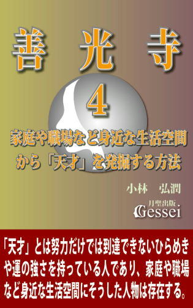
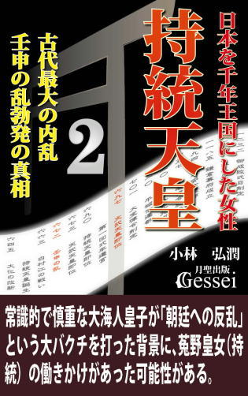
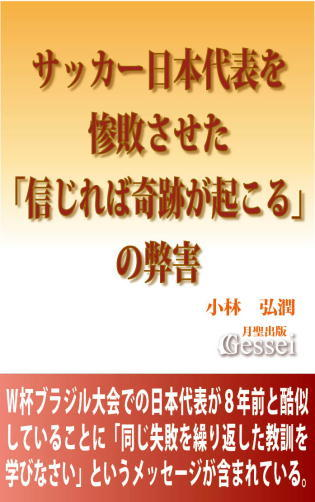

| イエスと弟子たち第一部・廉価版（月聖出版） ユダはなぜイエスを裏切ったのか。 | |
| 小林弘潤 | |
| Gessei Shuppan (2017) | |
イエスと弟子たち
第一部廉価版
小林弘潤 （企画・構想 阿川弘聖）
※更新履歴
2017/1/25 1版
※著者ツイッターで、「本の価格を上げる場合の時期」等の情報を発信しています（携帯からも読めます）。
この本を手に取られた方へ
世界中でその名を知らない人はほとんどいないであろう、イエス・キリストという人物の生涯が描かれた聖書（新約聖書の中のイエスの生涯が描かれた福音書）は、面白い小説やドラマや映画に慣れた現代人が読んだ場合、つまらないという思いになるのが普通だと思います。
そのつまらなさがどこにあるかといいますと、エピソードが断片的でつながりがわかりにくいことと、登場人物の大半に個性が感じられないために読み手が感情移入できない、という点にあると思います。この小説ではその辺りを工夫して、聖書にはないオリジナルのエピソードを様々に挿入しています。それによって物語としての面白さを十分に取り入れたつもりなので、普通の物語として読んでも面白いという印象を持ってもらえると思います。
オリジナルのエピソードと言っても、イエスは実は十字架上で死ななかったというような定説から逸脱した突拍子もない展開はほとんどなく、聖書で描かれたイエスの生涯の枠内はしっかり守っているつもりです。聖書の内容を知らない人には波瀾万丈の物語として、知っている人にはイエスの生涯のドラマ性が深く理解でき、より聖書に親しみやすくなる手引き書として受け止めてもらえると思います。
洗礼者ヨハネの後継者として独自の活動を開始したイエスの周囲にユダ、ペテロ、ヨハネらの弟子たちが集うが、「救世主宣言」によってエルサレム衆議会に敵視され、パリサイ派や祭司から執拗な妨害を受けるようになる。愛の教えが民衆に受け入れられず失意のイエスの前に現れるマグダラのマリア、保身からイエスを逮捕しようとする大祭司カヤパ、必死の思いで論戦を挑む祭司ボアズ、そして敵たちを背後から操る黒幕の存在......。
「ラザロの復活」によって民衆は再びイエスを熱狂的に支持するが、衆議会はユダを利用してイエスの逮捕に成功し、ピラトの公開裁判で民衆を扇動して十字架刑の判決を出させる。「裏切り」を行ったユダの心中には「過去の体験で刻まれた強い決意」があった。
二千年来の「謎」である、「ユダはなぜイエスを裏切ったのか」「民衆の支持を集めたイエスがなぜ十字架にかけられたのか」という問いに対する一つの答えがここにある。
※この小説は実在の人物や現実にあった出来事をベースにしていますが、ところどころにオリジナルのエピソードを入れているので架空の物語として受け止めていただければ幸いです。
『イエスと弟子たち・第一部』目次
序 章
第一章 洗礼
第二章 説法
第三章 宣言
第四章 捕縛
第五章 論戦
第六章 失墜
第七章 涙
第八章 過去
第九章 エルサレム
第十章 裁判
第十一章 十字架
第十二章 イエスとユダ
主要登場人物
イエス その後二千年にわたって全世界に影響を与え続ける「キリスト教」を興した始祖。イスラエルの地で独自の教えを説いて一時は勢力を拡大するが、敵対するエルサレム衆議会の策謀によって民衆の支持を失い、十字架刑に処せられてその短い生涯を終える。
ペテロ 家庭を持っていることもあって現実的な性格だったが、イエスが起こした奇跡を見て弟子入りすることを了承。筆頭弟子として期待されながら、「信仰の弱さ」を常にイエスに指摘されていた。
アンデレ 元は洗礼者ヨハネの弟子で、ヨハネに勧められてイエスへの弟子入りを志願。兄であるペテロをイエスの下に導く役割も担う。十二使徒の一人。
使徒ヨハネ 洗礼者ヨハネの弟子で、イエスに反抗的な態度を取ろうとしたもののすぐその魅力に惹かれて忠実な弟子となる。若くて情熱的な性格だが、常に組織の中での自分の役割を意識する冷静さも持っている。
ヤコブ ヨハネの兄で、十二使徒の一人。ヨハネと同様激しい性格の持ち主で、イエスから「ボアネルゲ（雷の子）」の兄弟と呼ばれていたほど。
マグダラのマリア その若さと美貌から金持ちしか手が出せない高級娼婦となったが、本人は自分の職業に深い負い目と罪悪感を持っていた。必死に救いの道を求め続け、ついにイエスの下へたどり着く。
ラザロ、マルタ、マリア エルサレム近郊のベタニヤに住むイエスの良き理解者の姉弟。ラザロは軽口が得意のお調子者だが、場を和やかにする細かな気配りもできる。姉のマルタとマリアは弟の軽口に不満げな言動も見せながら、心の底では弟を深く慕っている。
アリマタヤのヨセフ エルサレム衆議会に所属しながら陰でイエスを支持している人物。イエスを無実の罪で死なせた後悔と罪悪感から、総督ピラトに埋葬の許可を願い出る。
ユダ 初期の頃からのイエスの弟子で、十二使徒の一人。ローマへの反感と奇跡に対するこだわりを強く持ち、取税人や娼婦という下層身分の人間がイエスの弟子になることにも反対する。自分の意思を実行しようとしないイエスにやがて不満を抱き、「裏切り」を決意する。
洗礼者ヨハネ 情熱的な説法と洗礼で民衆の支持を一手に集めた預言者。イエスが現れたことで自分の使命が終わったことを悟り、自らの弟子をイエスに預けた後は従容として死を受け入れる。
カヤパ ユダヤ地方を支配するエルサレム衆議会において聖俗双方の権力を握る大祭司。民衆が反乱を起こしてローマの介入を招くことを極度に恐れている権力志向の強い人物。
アンナス カヤパの義父で、大祭司の経験もある老練な陰謀家。自らは表に出ず、陰で人を操ることに熟達している。
ボアズ 特権意識の強いエリート祭司。洗礼者ヨハネに敗れた屈辱から、後継者であるイエスを執拗につけねらう。小説オリジナルキャラクター。
エレアザロス アンナスの五人の息子の一人で、大祭司の経験もある祭司。
イスカリオテのシモン ユダの養父。民族の誇りのために生きるという道を選び、祭司の地位を捨ててローマに対する反乱組織に志願した。冷静さと勇敢さを兼ね備えており、情にも篤い。
ピラト ユダヤの統治を監督するローマ総督。衆議会に対し距離を取っていて普段はカイザリヤに駐在し、祭りなどの重要な出来事がある時にエルサレムに赴く。
ロンギヌス ローマから派遣された総督直属の百人隊長。イエスの十字架刑執行を指揮。
エリヤ 旧約聖書「列王記」に登場する、紀元前９世紀前半にイスラエルの民を導いた預言者。カルメル山上で邪神バアルの預言者たちと対決した際に「天から火の雨を降らせた」ことで有名。
序 章
紀元前５８６年、ユダ王国の首都エルサレムは新バビロニア王国の攻撃を受け陥落した(1)。
イスラエル民族の心の拠り所だったエルサレムの神殿も異国の兵士に蹂躙され、ついには火をかけられて炎上した。逃亡に成功したエルサレムの人々は、炎の中で崩れ落ちる神殿の姿をただ呆然とした顔で見つめていた。
捕らえられたユダヤの有力者たちは異国のバビロンの地に強制移住させられ、屈辱の中でエルサレムに帰還できる日を待ち続けた。彼らの指導者層は、父祖代々受け継がれてきた教えを次々と書き記して「聖書」（旧約聖書）とし、それを広めることで神殿炎上と故国喪失によって失われつつあった民族の求心力を取り戻そうとした。
それから50年後、バビロニア滅亡と共にバビロン捕囚も終わりを告げ、イスラエルの民たちは念願の故国への帰還を果たした。神殿も再建され、復興は着々と進んでゆくかに見えた。
しかしかつての「カナンの地」は、近隣に勃興する大国の侵略を受けやすい地理的条件を抱えていた。バビロニア滅亡後はペルシア帝国の支配下に入り、その後もアレクサンドロス大王国、プトレマイオス朝エジプト、セレウコス朝シリアという大国の支配に４００年以上もの間屈し続けた。彼らは民族が生き残るために支配国の様々な要求に従ってきたが、絶対に譲れないものが一つあった。それは「彼らの聖書に記された唯一の神を信じ、律法を基にした生活を重んじる」という彼らの宗教だった。
彼らは自分たちの信仰が弾圧され支配国の宗教を強要されると、時には死をも恐れず支配国に抵抗するため、暴動や反乱に発展することもあった。紀元前１７０年頃、セレウコス朝シリアの宗教弾圧政策はユダヤ人の抵抗運動を招いたが、その間隙に乗じて背後から一つの強国が現れた。後に地中海世界全土に征服地を拡げることになるローマ帝国である。
ユダヤ人はシリアの支配から脱するために、新興の強国として勢いに乗るローマと手を結んだ。ローマを味方につけたユダヤ人はマカバイオス戦争でシリアを破り、念願の独立を手に入れた。しかし彼らの喜びも長くは続かず、次はローマの魔手がイスラエルの地を襲った。王位継承の争いがポンペイウスの介入につながり、エルサレムは占領されてローマ支配への道が開かれた。
鋭敏な政治感覚を持つローマ人は、異国を制圧してもその地の住民感情に配慮して完全な統制下に置くことはせず、時にはその民族の王を傀儡にして君臨させ、ローマへの忠誠を誓う範囲での自治権を認めていた。その後の権力闘争の中で台頭して権力を握ったのがヘロデで、彼はローマで支配権を握ったオクタヴィアヌス（初代皇帝アウグストゥス）の承認の下にイスラエル全土を統治する王の座に就いた。
しかしイスラエルの民はヘロデを「自分たちの正統な王」という目では見ていなかった。反対者を徹底的に弾圧する強権支配もさることながら、所詮はヘロデなどローマの意のままに動く操り人形に過ぎず、「古来の宗教と伝統を尊重してイスラエルに幸福をもたらす真の王」とはまるで違う、という認識を持つ者が大半だった。彼らの「聖書」には、いつかイスラエルの地を異国支配という苦渋から解放し、やがては全世界を救済する「救世主」がイスラエルの王として降臨することが預言されており、人々はそれを信じてひたすら屈辱と苦渋の日々に耐えていた。
紀元前４年にヘロデ大王が死去すると、権力の空白状況に乗じて暴動と反乱が相次いだ。イスラエルの地は、様々な勢力が入り乱れる混沌の時代に突入していった......。
ヘロデ大王の死去から９年ほどが過ぎた紀元５年頃、エルサレムから北に離れたある小さな村に共通の目的の下に集う男たちの拠点があった。その一員である四十代の男性が、10歳ほどの子供が横たわるベッドの側に座って話をしていた。
「救世主？」
「ああ。我らイスラエル民族は唯一の神と契約を交わした民だから、神は我らを異国の支配から解放するための救世主を送ってくださる、とみんな信じている。我らは何百年もの間、その救世主を待ち続けて来たんだ」
男性の言葉に対し、子供は不思議そうな顔をした。
「その救世主って、どんなことができるの？」
「ん、そうだな......。外国の軍隊を破ってくれたり、食べ物を空から出してくれたり、死んだ人を生き返らせたりできるんだ」
「えー、ウソだ。そんなことできるわけないよ」
「そんなことはない。かつて我が民を救い出して下さったモーセという人は、エジプトから追ってきた王の軍勢から我が民を逃がすために、海を真っ二つに割って道を作るという奇跡を起こしてくれた。さらにエリヤという人は、天から火を降らせて悪い信仰に染まっていた人を滅ぼしたし、その弟子のエリシャは死人を生き返らせたりしたんだ。こうしたことはみんな聖書に書いてあることだ」(2)
「へえ、すごいんだね。じゃあ、そういうすごいことをやった人はみんな救世主なんだね」
「いや、そうじゃない。モーセやエリヤのような人は預言者と呼ばれているんだ。預言者というのは神の言葉を預かる人、という意味で、神の言葉を我が民に伝え、そして神の力を地上に現すために奇跡を行う人たちのことだ」
「じゃあ、救世主というのはもっとすごいことができる人のことなの？」
「そうだろうな。外国の軍隊を追い払って、イスラエルをみんな豊かな生活が送れる独立国にすることぐらい、簡単にできるのではないかな。かつてダビデ王とソロモン王が我が民に豊かな生活をもたらしてくれたが、王国はすぐに分裂して弱体化してしまった。でも救世主が造る新しい王国では、かつての栄光と繁栄がずっと続くことになるはずだ」
「すごいね。そんなにいいことなら、今すぐにでも救世主が現れてくれればいいのに」
「そうだな。でもそんなに簡単なことじゃない。神が我らに救世主を送ってくれるためには条件がある。それは我らイスラエルの民が心を一つにして唯一の神を信仰し、律法に基づいた生活を送らなければならない、ということだ。これは我が民が神に捧げた契約なんだ。この契約を我らが守れば、神はそれに応えて我らを助けて下さる(3)。しかし、守らないのに神よ助け給えと祈っても、それは都合が良すぎるというものだ。
今このイスラエルを支配しているヘロデの息子たちのような、ローマと妥協し、その支配に甘んじて生きていこうとする者たちがいる限り、神は決して我らを助けては下さらないだろう。......まあ、この辺の話はちょっと難しかったかな」
子供は軽くうなずくと、ふと疑問に思っていたことを尋ねた。
「ねえ、その救世主って、僕たちみたいな人間なの？」
男性は意表を突かれた顔をすると、すぐに苦笑いを浮かべた。
「お前は頭のいい子だな。鋭い質問が次々にできるんだから。そうだな、神から遣わされる救世主である以上、私たちの理解を超えた存在という可能性もあるから、普通の人間ではないかもしれないな。でも、案外私たちと同じような人間として、身近なところにいるかもしれない。例えば、今私の目の前にいるお前だって、もしかしたら救世主かもしれない」
「あ、いいね。そうだなあ、僕も、食べ物を空から出したり、死んだ人を生き返らせたりしてみたいな......」
子供に疲れた様子が見えたので、壮年の男性は立ちあがって彼に眠るように勧めた。部屋から出ようとしてその子の姿を見ながら、男性は小さくつぶやいた。
「おやすみ、ユダ」
第一章 洗礼
「イスラエル」という地域名は、「ユダヤ」「サマリヤ」「ガリラヤ」という三つの地域を合わせた総称と言える(1)。ヘロデ大王死後の混乱がひとまず収束した後、ローマ皇帝アウグストゥスはイスラエルの地をヘロデの息子たちに分割統治させることを決め、ユダヤとサマリヤはアルケラオス（アケラオ）、ガリラヤはヘロデ・アンティパスに統治を委ねた。
しかしアルケラオスの統治は住民たちの一斉反発を招いた。紀元６年、事態を憂慮したアウグストゥスはアルケラオスから統治者の地位を剥奪し、ユダヤをローマから送られた総督が統治するローマ直轄領にしてしまった(2)。
ユダヤの政治は衆議会（「最高法院」という訳し方もある(3)）という自治組織が律法を基にした行政や裁判を行っていたが、その衆議会を構成するのは政治家というより、エルサレムの神殿を伝統的に支配している祭司階級を中心とした宗教家たちだった。祭司階級の頂点に位置するのが大祭司で、その役職は当然衆議会の議長をも兼ねていた。ユダヤがローマ直轄領になっても衆議会による自治は認められたが、議長たる大祭司の任命権はローマから派遣された総督に握られていた。
最初は総督による大祭司解任が相次いだが、紀元18年に大祭司に就任したカヤパは巧みな保身術を発揮して長期間その地位に留まることに成功した。紀元26年、ローマ第二代皇帝ティベリウスの命を受けた第五代総督ポンティオ・ピラトがユダヤに着任した時も、カヤパはなお大祭司の地位にあり続けた。
エルサレム神殿の一角に設けられた石造りの会議室で(4)、衆議会の議員たちによる会議が開かれていた。議員の一人が最近の民衆の動きについて一つの報告を行った。
「つきましては、以前からこのユダヤ近辺でヨハネなる者が民たちに説法を行っているという話がありましたが、最近特に民たちの間で話題になっているようでございます。民たちの話によりますと、そのヨハネはヨルダン川で民たちに洗礼を授けて彼らの罪を除いているとか。これは傍観しかねる事態ではないかと思いますが......」
これを聞いた一人の議員が口を挟んだ。
「なんだと！ 我ら祭司でもない者に民たちの罪を清める資格などあるはずがないではないか。そいつは何の権威を持って、そのような業を行っているというのだ」
「それが......。民たちの話によればそのヨハネなる者は預言者エリヤの再来で、もしかしたらイスラエルの地を救う救世主ではないかと噂する向きもあるようです」
別の議員がため息混じりに言った。
「また預言者か......。今まで何十人、何百人のニセ預言者が現れては消えていったことか(5)。民たちというのは、やれ王が神の命に背いているとか、祭司が腐敗しているとか権力批判を声高にする人間をすぐ預言者に祭り上げる傾向があるからな。困ったものだ」
「ですが、その民たちも大勢が糾合して一大勢力にでもなったら厄介なことになりますぞ。またローマへの反乱が起こるのではないかとローマ総督の疑心暗鬼を招くことにもなりかねません。今のうちに何か手を打った方が賢明かと思いますが」
中央に座って議員たちの話を聞いていた大祭司カヤパが、この時ようやく口を開いた。その声には不機嫌さが充満していた。
「まったく、民衆どもにも困ったものよ。律法の勉強などしたこともない無知な田舎者を、預言者だ救世主だと持ち上げて騒動の種を自ら蒔きおって。本当に預言者が出ているのならわしの方から頼みたいものだわ。神の力で、愚民どもの目を覚まさせてやってくれ、とな」
目つきの鋭い壮年の議員が大祭司に尋ねた。
「で、どうします？ この際ヨハネなる者のところに尋問団でも送ってはいかがかと思いますが。民衆とは移ろいやすいもの。奴を問いつめればすぐに民衆の心も離れると考えます」
提案者の食い入るような眼差しに対し、カヤパはすぐに決断した。
「自信があるようだな、ボアズよ。よし、数人連れて近日中に尋問団として赴け。人選は任せる」
壮年の議員は恭しく一礼して大祭司の命令を受けた。出世と栄達のために機会をうかがっていた彼にとって、今回のことは歓迎すべき事態に思われた。もっとも、簡単に片づいてしまって大した見返りは期待できないかも、という不安も感じたが......。
「ヨルダン川で洗礼を行うヨハネこそ、我らが待ち望んでいた預言者だ」という噂は、今やユダヤからサマリヤ、そしてガリラヤの隅々にまで広がっていた。初期の頃は「またニセモノじゃないか」という反応が大半で、直接話を聞きに行こうとまで思う者はほとんどいなかった。しかし実際に見聞きしてきた者が「あの人こそ本物だ」と熱っぽく語ったり、「どうしようもない悪人が洗礼を受けたら別人のように変わった」という話があちこちで聞かれるようになり、「そこまですごいならひと目だけでも」という思いで話を聞きに行く人々が徐々に増えていった。
洗礼者ヨハネと弟子たちの一団は、一つの場所に留まっているわけではなかった。エルサレムの東方面にある死海からヨルダン川をさかのぼるように移動し、人が集まれそうな場所に至るとそこに陣地を築いて説法と洗礼を行っていた。
その日の朝、ヨハネが説法の場所に指定したヨルダン川の岸辺には、数百人の群衆がすでに集まっていた。ヨハネを待つ人々の中に、深緑色が基調の礼服のようなものに身をまとい、ともすれば人を射すくめるような眼で周囲を観察する30歳ほどの若者がいた。彼がこの場所に来たのは、ヨハネという人物が自ら探し求めている人間像に足りるかどうか見極めるためだった。彼はそうした思いでここ十数年様々な人を見てきたが、心底満足できる人間に会ったことは一度もなかった。
彼の名前はユダと言った。
群衆の前にヨハネが現れ、ユダは目を凝らしてその姿を見た。年齢は自分と同程度という感じがしたが、髪は無造作に肩まで伸び、髭も伸び放題だった。体には薄茶色の動物の毛皮のようなものをまとい、腰には皮の帯のようなものをつけていた(6)。
ヨハネは群衆を見渡して一度目を閉じると、静かに話し始めた。その声は低く、決して大きなものではなかったが、一言でも聞き漏らすまいとする群衆が聞くことに神経を集中しようとしたため、最初は騒然としていた会場がすぐに静かになった。
「......人々よ、何故に我らがイスラエルの地が、異郷の国ローマに蹂躙されているかわかるか。我らが父祖たるアブラハムが唯一の神と契約してより、神は我らイスラエルの民を常に導いておられた。あなた方が聖書で読まれている通り、かつて我らが神はモーセに奇跡の力を与え、エジプトの軍勢から我らが民を守って下さった。かつて神はダビデ王とソロモン王を通じて、我らが民に栄華な生活を与えて下さった。
しかしソロモン王の末世には、我らが民は豪奢で豊かな生活に慣れ、神が与えて下さった様々な恩恵を忘れ、我らの繁栄は神の力にあらず、我らの力のみで為ったのだという高慢な意識を持つに至った。それによって神は、我らが民族を二つの国に分け、その二つの国を異国の勢力に討伐させるという道を選ばれた。何故にそのような悲劇が現実となったかわかるか。それをもって、神は無力なりと思う者は災いである。神は我らを見捨てたりと嘆く者も災いである。それは、神が我らが民に与えられた試練であるのだ。
我らはいつしか神の心を忘れ、神が望まれる生き方から久しく遠ざかってきた。我らが神の心を忘れて漂っている限り、神が我らを助け給うことはありえない。
周囲を見渡してみよ。常に神の心に忠実ならんと生きている者がどれだけいるか。もしあなた方が神であったとして、本来の心を忘れて勝手気ままな生活を送っている者たちを助けようと思うか。そうではあるまい。であるならば、もし我らが神に助けを求めようとするならば、そうした神の心を忘れた者たちが神の心を取り戻す必要があるのだ。
しかし人々よ、そうした神の心を忘れた者たちを責めてはならない。自分の隣にいるそうした人を見て、お前のせいで神は我らを助け給わぬではないかと怒ってはならない。なぜなら、神が望む生き方から離れて生きてきたのは、まずあなた自身であるからだ。神の心を忘れ果てた人間に、他の人を責める資格はないのだ。他人に求めるな、自分に求めよ。まずは自分が神が望まれる生き方から遠く離れてきたことを認めるのだ。そしてそれまでの自分の生き方を悔い改めよ。
悔い改めるとは、自分が過去に行ってきた罪や過ちを神に心から謝罪し、これからは決してこうした生き方は致しませんと誓うことだ。その神への誓いが本物であるならば、神はあなた方の罪をお許し下さるであろう。それがかなった時、あなた方は生きながら生まれ変わることができる。その新生の息吹を、私は水による洗礼としてあなた方に授けよう。
よいか、今イスラエルの地は異郷の国ローマに蹂躙されている。その過酷な現状を変えたいと思うのであれば、まずは自らの心を変えよ。過去の過ちを悔い改め、心を神の方に向けよ。
自分一人が何かしてもそれがいかほどの力になるかと思う心では、決してこの現状は変わらない。なぜなら、ここにいるすべての者が変わらないと思ったら、神は決して我らを助け給うことはないからだ。まずはあなた自身の心を変えようと強く思うことだ。その強い思いがあなた以外の人にも影響を与え、多くの者におのおのの心を変えようとする意欲を起こす結果になるからだ。周囲が動かずともまず我一人立てり、と思う者こそ、多くの仕事を為したる者である。
人々よ、我ら一人一人が神の心を心として生き、心を一つにして神が望まれる生き方を為した時、そこに生まれるのは神の国である。神の国が、この地上に現出するのである。
そうした国が本当に実現するかどうかは、まずはあなた自身の心にかかっているのだ」
説法が終わってヨハネが演壇から降り、弟子たちは人々に洗礼を施す準備を始めた。引き込まれるように説法を聴いていた人々は、夢から醒めたように周囲を見渡したり近くの者と話をするなどしていた。
ユダは聴衆の様子を観察しながら考えていた。この男には民衆の心をつかんで、多くの人を統率するだけのカリスマ性はある。しかしそれだけでは足りない。果たしてそれ以上の力を持っているだろうか......。
その時、大通りに出る小道の方から甲高い声が響き渡った。
「静まれい。エルサレム衆議会の者である！」
人々が振り向くと、そこには紫色を基調にした祭司の礼服に身を包んだ数人の男たちが立っていた。彼らは群衆に対し半ば強引に道を開けさせながら、川岸にいるヨハネの方に颯爽と歩を進めた。師を守ろうと囲もうとする弟子たちを制して、ヨハネが一歩前に進み出て尋問団と対面した。数百の群衆の視線は再び一点に集中し、場を静寂が包み始めた。
最初に声を出した若い祭司が前に出て、甲高い声でヨハネに問いかけた。
「民衆に洗礼を与えているヨハネよ、お前の噂はすでにユダヤ中に広がっており、エルサレム神殿にも聞こえているぞ。先ほどの話を聞かせてもらったが、神の名の下に民衆に悔い改めよと命令するとは、お前はさぞかし高い身分の人間であるのだろう。果たしてお前は何者であるか。エルサレム衆議会の我らに対し、正直に答えていただこう」
ヨハネは少し間を置くと、穏やかな声で答えた。
「その前にそちらのお名前を尋ねたい。人にものを尋ねたいならまず自分の名を名乗るべきであろう」
尋問者と随行していた祭司の一人が「何を無礼な」と小声でわめき立てた。尋問者の若い祭司は、手でその祭司を制して言った。
「よかろう。では教えてやろう。私はエルサレム神殿にて代々神に仕えし一族、レビ族の人間である。現在ユダヤの民を導きし大祭司・カヤパ猊下のおそばで常に神のお声を拝聴する栄誉を我らは担っておる。では改めてうかがうが、ヨハネよ、そなたの身分は神の声を民たちに伝えるだけの資格を有しているか。どうか神の名に誓って答えられよ」
「あなたは何を勘違いしているのか。私が聞いたのはあなたの生まれながらの身分ではない。あなた自身の名前だ。名前を聞かれてそれを答えずに、我はこれこれの身分であると答えて悦に入るというのは、よほど今の自分に自信がないと思えるが」
「な、何だと！」
尋問者は血相を変えてわめいた。周囲の祭司たちの顔にも血の気が上り、ヨハネに飛びかからんばかりの勢いで身構え始めた。ヨハネの弟子たちも緊張感を高めると、周囲を囲んでいる群衆の中からはヨハネの言動に賛意を示して、「そうだそうだ」という声が飛んだ。
ヨハネが言った。
「あなたが真に神のそば近くにあり、日々神の声を聞いているならば、身分や肩書きなどひけらかさずとも、あなた自身の名とあなた自身の言葉で私に語りかけるはずであろう。現に私は、ここにいる民たちに自分の身分や肩書きなど一切語ってはおらぬ」
「当たり前だ。お前のそのなりを見て、誰が身分ある者と思うものか。お前のような卑しい人間と私を一緒にしないでくれ。お前は私の聞かれたことだけに答えていればいいんだ」
この言葉に群衆のあちこちから声が上がった。
「何を偉そうに言ってるんだ。お前らこそいつも俺たちに無茶な命令ばかりしているじゃないか」
「そうだ。だいたいお前らはいつも俺たちを卑しい身分だとか言って馬鹿にしているが、偉そうに言うだけで結局何もできないじゃないか」
尋問者はたまらず振り向いて叫んだ。
「だ、黙れ！ 貴様らのような卑しい者どもが我らを汚すとは、レビ族や衆議会への侮辱も同然だ。貴様らの愚行にはいずれ神の怒りが及ぶぞ。何なら今すぐ貴様らを逮捕して、衆議会に連行してやろうか」
群衆の中に冷たい空気が流れ、強制的な沈黙が覆った。群衆の視線はヨハネに注ぎ、静まりかえった中でヨハネは静かに口を開いた。
「衆議会の者よ、あなたはこの民たちのことを卑しい身分の者たちと言ったな。ということは、あなたは高い身分の者であるのか」
「な、さっきから言っているだろうが。俺はレビ族の祭司階級の人間だ。高い身分の人間が民衆を卑しい身分と言って、何が悪い」
「ほう、私にはあなたが高い身分の人間には思えぬのだがな。エルサレム衆議会はローマの支配に屈しており、私にはお前たちがローマ人と妥協した卑怯者にしか見えぬ。それでも自らを高い身分の人間だと言われるか」
「な......」
尋問者に反論する隙を与えず、ヨハネはたたみかけた。
「ローマ人と妥協するのも仕方なかろう。しかしその場合は、妥協した者たちがまず自らを卑怯者と認め、何故に神がローマの支配を許したかを自らの心に問うてみるべきではないか。さすれば必ず、真っ先に悔い改めが必要なのは我らなりという自覚に達するはずだ。真っ先に悔い改めるべきは民たちではなく我らである以上、我らは民たちより身分が上などと自惚れてはならぬ、と思うはずだ。
しかし、私が見るところお前たちはそれすらも為していないではないか。最低限の悔い改めもせず、身分をひけらかして自惚れるだけのお前たちは一体何者か。さあ、今すぐ名を名乗れ！」
若い祭司は顔を歪ませるだけで反論できなかった。それを見た群衆は再び活気を取り戻し、あちらこちらから「そうだそうだ」という声が響き渡った。
若い祭司が何もできずに一歩引くと、後ろにいた壮年の祭司が歩み出て役割を交代した。壮年の祭司は自信に満ちた表情を浮かべてヨハネに問いかけた。
「ご高説ご立派でございますな、ヨハネ殿。私はボアズと申します。確かにあなたの言う通り、民たちに教えを垂れる者は自らの名を明確に宣言せねば人々はついてきますまい。そしてそれは我々のみならずあなたにとっても同じはず。
ヨハネ殿、あなたは民たちだけでなく、律法で認められた我ら祭司に対しても教えを垂れておられるが、まずはあなた自身が自分が何者であるかを明言されるべきではないですかな。我らとしてもあなたがどのような人間であるかがわかればご高説も承りやすい。伝統ある我らが律法によれば、祭司に教えを垂れることができるのは、神からの言葉を託された預言者か、あるいは民たちがその出現を待ち望んでいるイスラエルの救世主か、そのどちらかということになりますが......」
ボアズの口元にかすかに狡猾の笑みが浮かんだ。ヨハネはそれを見て、この尋問の意図を察した。ここにいる群衆が、そしてイスラエル全土の民衆がヨハネに預言者か救世主としての役割を期待している以上、否定すれば民衆は落胆して彼は支持を失うかもしれない。しかし調子に乗って肯定すれば、神近き人間を詐称したことになって衆議会が彼を逮捕する明白な証拠を提供することになる。
それでもヨハネは狼狽しなかった。自分がするべき答えはもう決まっていたからである。
「さあ答えられよ。あなたはイスラエルの救世主か」(7)
場が静まりかえった。そこにいた者すべてが、ヨハネの答えに注目していた。彼は落ち着いた表情のまま目を閉じ、ゆっくり首を横に振った。
「違う。私は救世主ではない」
群衆の間から、安堵ともため息とも取れる声が漏れた。ボアズも一瞬拍子抜けした仕草を見せたが、すぐに次の質問を浴びせた。
「では預言者か。その野人のような姿は、さしずめ自分を預言者エリヤの再来だと訴えているようなものだからな」
ヨハネはこれにも首を横に振った。
「それも違う。私はエリヤその人でもない。私は預言者イザヤが、荒れ野で叫ぶ声と呼ばれた者だ。私は来たるべき人のために、曲がった道を真っ直ぐに整える役目を授かっているに過ぎない」
この言葉は、ヨハネを囲んでいた群衆や彼の弟子たちに軽い驚きを与えた。彼らにとって「来たるべき人」という言葉は初めて聞いたものだった。
ボアズはその点にはこだわらず、ため息を漏らしつつ手を左右に振った。
「拍子抜けだな。結局、自分のことを救世主とか預言者と宣言する勇気がない憶病者ではないか。お前が預言者でも何でもないのなら、何故に民に洗礼を施したり我ら権威ある祭司に教えを説く資格があるというのだ......」
そしてボアズは群衆に向かって呼びかけた。
「民たちよ、今のヨハネの答えを聞いたか。あなた方はこのような臆病者の言うことなど聞く必要はない。臆病者に神の力が与えられるなど、ありえぬ話であろう」
群衆は何も答えなかった。ボアズはしてやったり、という顔を浮かべてヨハネに背を向けた。
「これ以上話すこともあるまい。臆病者の言い訳など見苦しいだけだからな」
他の祭司たちも怒りを収めてその場を立ち去ろうとした時、鋭い声が彼らの背後をとらえた。
「最後に言っておこう。お前たちはまず民たちに神の怒りが及ぶと言ったが、真っ先に神の怒りが及ぶのはお前たちに対してだ」
ボアズは足を止めて振り向いた。
「何だと？」
「なぜなら、お前たちは自らをレビ族の子孫だ、アブラハムの子孫だと言っているが、お前たちは先祖からの特権を笠に着て自らは何も為そうとしないマムシのような者たちだからだ。マムシの子らよ、まだわずかなりとも人間の心が残っているならば、過去の過ちを思い出し悔い改めよ。そして、民たちより先に自らが神の心にかなった行いをせよ。その悔い改めと行いが本物であれば、良き実が結ばれるであろう。しかし悔い改めが本物でなければ、神の怒りは容赦なくお前たちを襲うであろう。私はそれを予言しておく」
「貴様、自分が何を言っているかわかっているのか！」
その声にはそれまでの余裕は感じられなかった。ボアズの目は冷静さを失っていた。
「本性を見せたな、マムシの子よ(8)。お前たちが私に救世主だ預言者だと言わせて、私を逮捕する口実にしようとしたのは承知の上だ。私はお前たちに逮捕されるのを恐れて、救世主にあらずと言ったわけではない。それが神が定め給うた真実だからだ。私はただ、真実に忠実にあらんとしているに過ぎない」
「............」
「もしそれでも納得が行かぬのであれば、今すぐ私を逮捕してお前たちの自尊心を満足させるがよかろう。ただ、それによってお前たちの罪がさらに重くなり、神の怒りが及ぶのが早くなるかもしれぬ。しかし、それはお前たち自身の責任と心得よ！」
ボアズは反論しようとしたが、言葉が出なかった。わずかの躊躇もなく堂々としたヨハネの態度は、彼にとって今まで見たこともない人間の姿だった。ボアズの心に、威圧されているのは俺の方ではないかという思いが生まれ、恐れと共に屈辱感が肥大化しつつあった。
それまで沈黙を守っていた群衆から、勢いのある声が発せられた。
「衆議会の者よ、ヨハネ様を逮捕するのは許さんぞ！」
「先生を逮捕してみろ、イスラエル全土に暴動が起こって、お前たちなどひとたまりもないぞ」
「そうだ。それこそ神の怒りだ。お前たちこそ神の怒りを恐れるべきだ！」
声は次第に大きくなり、祭司たちはその圧力に耐えきれなくなってついには逃走を始めた。
背に群衆の声を受けながら、ボアズの屈辱感は沸騰点に達していた。自らの自尊心が打ち砕かれたことだけでなく、当初の目的が何一つ達成できず敗走せねばならないなど、全くの想定外だった。ヨハネが「救世主宣言」をすれば逮捕の口実が作れるし、そうでなければ臆病者のレッテルを貼って群衆の支持を失わせることができる。どちらに転んでも失敗するはずがなかったのに、かえって群衆の支持を高めるという結果とは......。
ボアズは考えた挙げ句、他の尋問員は帰らせて自分だけこの場所に残ることを決めた。
尋問団がエルサレムに帰還すると、カヤパも隣席した報告会が開かれ、ヨハネへの尋問の様子が報告された。好ましからぬ報告に、カヤパは機嫌が悪くなってそれまで持っていた不満を怒号と共に言葉に込めた。
「無知な民衆どもめ。ヨハネを預言者だ救世主だと祭り上げてローマへの反抗運動でも起きようものなら、ローマの警戒を招いて奴らが統制を強化するということがわからんのか。我らがローマと現実的な接点を見つけて奴らを刺激しない努力をしているから、父祖からの伝統と聖なる神殿が守られているのだ。我らの苦労も知らずに調子づきおって！」
他の議員からもヨハネと民衆に対する非難と怒号が繰り返されたが、それが一通り終わると沈黙が流れた。何か建設的な意見を、という思いから一人の議員が口を開いた。
「いっそ、尋問団への侮辱を口実にしてヨハネを逮捕してしまってはどうですかな。奴が民たちの前にしばらく姿を見せなければ、不穏な空気もやがて解消するのではないですかな」
すぐに反論があった。
「それによって民衆の衆議会への不満がピークに達して、大規模な反抗運動に発展したらどうする。ヨハネがいなくなっても、武器を手に反抗の機会をうかがっている熱心党の過激派どもはうようよいるんだ。民衆どもが納得する十分な口実もなく逮捕するのは危険過ぎる」
「一番いいのは、民たちの期待が頂点に達したところで奴が期待はずれの人間だ、ということが暴露されることでしょうな。でも、それをやろうとして失敗したら、今回のように民衆の熱狂を高める結果になってしまうわけですか。まったく、困ったものですな......」
結局具体的にどう対処するかの意見はまとまらず、結論は下せないままこの日の報告会は終了した。
報告会に隣席していた議員の中に、カヤパの妻の父で、彼にとっては舅にあたるアンナスという老議員がいた(9)。白髪で顔には無数のしわが刻まれ、頼りなげな細身の身体つきをしたその男のところに、カヤパは他の議員が全員退出した後で静かに近づいた。
「義父上、何か策はありませんかな。ヨハネのことは、そろそろカイザリヤにいる総督ピラトの耳に届いておるやもしれませんからな」
「まだ着任したばかりのあの男がすぐに動くこともあるまいて。だが、不穏の芽は早めに摘んでおくためにも、こういうのはどうじゃな。ティベリヤのヘロデ宮殿に使者を送って、ヨハネがヘロデ・アンティパスとヘロデアの結婚を非難していると吹き込むのじゃ」
「ヘロデ宮殿に？ どういうことですかな」
アンナスは詳しい説明をカヤパに耳打ちすると、カヤパは得心した表情を浮かべた。
「なるほど。さすがは義父上......」
すぐにカヤパは部下を呼んで指示を与えた。
洗礼者ヨハネは夕方から夜にかけてヨルダン川を北上し、エリコ近くの川岸に陣を構えていた。次の朝、ヨハネの周囲には前日以上の数の群衆が集まっていた。不敵なエルサレム衆議会の挑戦を完膚無きまでに粉砕して追い払った、という噂が一日のうちにユダヤ全土を駆け抜け、噂の預言者の姿をひと目見たいと願う民衆が我先にと押しかけていた。
ヨハネはヨルダン川での洗礼を施す前に、必ず川岸で説法を行った。その日に登壇する場所をあらかじめ設定し、事前に弟子たちが大きな石などで演壇を作っておき、群衆が集まったところでヨハネが登壇して説法を行うという段取りになっていた。
ヨハネの説法は決して「声を荒らげて終始政府や議会を糾弾する」というアジ演説のような内容ではなく、最初はたいてい「個人の心の問題」を取り上げた(10)。彼は誰にでもわかるような身近な話題から「正義に即した心で生きることの重要性」を説き、「まずは自らが正義とは何かを知り、それに反する心で生きたことを悟ったならば神の前にて悔い改めよ」と繰り返し強調した。
説法を聞いた人は「情熱的」とか「激しい」という印象を口にすることが多かったが、それは彼が「静と動」を巧みに使い分け、穏やかな話の後に突然情熱的な言葉をたたみかけることで、聴衆の心に深い印象を残していたからだった。
「......人々よ、私を憂国の預言者だと思うか。そう思うかどうかは自由であるが、それは必ずしも当たってはおらぬ。私は、このイスラエルの現状を嘆いてあなた方を悲観させるために来たのではない。私はあなた方に希望を与えたい。明るい未来を与えたい。神から預かりし大いなる福音を、あなた方の前に指し示して共に喜び合いたいと心より思う。しかしその前に、私はあなた方イスラエルの民たちに告げておかねばならないことがある」
ヨハネの穏やかな口調が変わった。
「それは、このイスラエルの地にたなびきたる暗雲である。人々よ、私の目には、この地が大いなる災禍に見舞われていくように見える。大地は裂け、太陽はその輝きを失い、食物は実らず、異国の大軍勢が押し寄せるがために、我が民たちはその悲惨さに戦慄するであろう。そうした時代がこれからやってくるのだ。
しかし人々よ、そうした危機の時代から逃れようと思ってはならぬ。私が行う洗礼を授かった者がそうした危機から逃れられるわけでもない。危機はどの人間にも等しく訪れる。大切なことは、そのような時にいかなる心を持つことができるかだ。我が洗礼を受け、危機の時代に神が望まれる心で耐え忍んだ者には、その後に来たる栄光を手に入れることができるであろう。その時こそあなた方は知るはずだ。私がこの地に来たりし意味を。私があなた方にもたらさんとしている福音の意味を。あなた方がいかなる状況に陥ったとしても、決して忘れるな。神は、あなた方を見捨ててはおられない、ということを。
人々よ、危機の時代にあって自らの心の弱さを嘆いてはならない。心が弱いということは、まだ神を信じてはいないということだ。人が神を信じ、神の心に忠実に生きんと決意した時、その人は本当の強さを手に入れる。本当の強さとは、今我は神と共にあり、神が我に代わって何かを為さんとしているなり、という確信の思いによって生まれるのだ。この言葉を信じたくば、まずは私の下で過去の罪を悔い改め、洗礼によって新たな生命の息吹を得よ。そして次に、私の姿を見ることだ。私がいかなる思いによって語り、いかなる思いによって行動せんとしているか、刮目して見よ。それを為した者に対してのみ、本当の強さと勇気が与えられるであろう」
説法が終わると、群衆の余韻も覚めやらないうちにヨハネと弟子たちはヨルダン川に入り、洗礼の準備を始めた。皆が我先にと競って列を作ったが、並んだ者が誰でもすぐ洗礼を受けられるわけではなかった。ヨハネや弟子たちの前で告白された悔い改めの内容がいい加減だったり気持ちがこもっていないと判断された場合、「もっと深く過去のことを振り返ってから来なさい」と言われることもあった。そのように言われた人が近くの河原で禅定を組んでしばらく反省するという光景も見られ、会場にいた人の群れは次第に「洗礼を受けようとして並んでいる者」「禅定する者」「ヨハネの説法の内容について話し合っている者」の三者に分かれるようになった。
昨日ヨハネ一団の後についてエリコまで来ていたユダは、洗礼を受けるかどうか迷っていた。もう少しヨハネの力を見極めたいと思ったが、弟子にならなければ彼の近くに寄れそうになかった。「弟子になるためには洗礼を受けないといけない」と気づいたことで、ようやく洗礼を受けることを決めた。ユダは洗礼を受ける人々の列に並びながら、悔い改めの際に何を話せばいいかと考え始めた。ふと、自分の前に並んでいる男性の後ろ姿が目に留まった。
その男性の黒髪は長く肩まであり、黒と焦げ茶色の服に全身を包んでいた。服などに汚れが見られ、横顔を見ると鬚も剃っていないことから「荒野かどこかの修行僧かな」という印象を持った。それでいて清潔で凛とした雰囲気も感じ、どこか惹かれるような思いをユダは味わった。
洗礼の順番が近くなり、ユダの前の青年の番になったので、ユダは洗礼がどのような段取りで行われるのか注目することにした。ところが、そこで彼の予想とは違った事態が起きた。ヨハネがその青年を見た瞬間、何かに驚き、狼狽したような表情を浮かべたのだ(11)。
その青年はヨハネに丁寧に頭を下げると、ヨハネが話しかけるのを待っていた。ヨハネは驚きの顔を隠さずに青年の周囲を見渡すと、やがて小さくつぶやいた。
「あ、あなたは一体......」
青年は小さく一礼すると答えた。
「ヨハネ先生、私はイエスという者です。本日のお話は大変参考にさせていただきました。どうか私にも、水で洗礼をください」
ヨハネはもう一度、青年の周囲を見渡しながら驚愕の表情を浮かべた。そして青年に対し落ち着きを欠いた口調で言った。
「......あ、あなたこそ、来たるべき人ではありませんか。私は、あなたの靴のひもを解く値打ちすらない人間です。どうか、ご容赦ください......」(12)
ヨハネは狼狽した表情で頭を下げた。ヨハネの隣にいた彼の弟子は、師の態度を見て腰を抜かさんばかりに驚いた。今まで自分が雲の上の人間だと思っていたエルサレムの祭司を相手に、卑屈になることなく渡り合って追い払ったヨハネ先生が取り乱している！ 先生と同い年ぐらいで、それほど偉い人とは見えない一人の青年を前にして......。若い彼にとって、それは青天の霹靂とでも言うべき光景だった。
その思いは後ろにいたユダにとっても同じだった。これだけの群衆を味方につけ、権力を持った祭司たちすら太刀打ちできない人間がこのような態度を取ることなど、考えてもみなかった。ユダの関心は、ヨハネという男を初対面でひざまずかせた目の前の修行僧に向かっていた。
狼狽するヨハネに対し、青年は静かに近づき、彼の耳元で何かを囁いた。その言葉がユダにははっきり聞こえた。
「今は許せ」(13)
青年は上着を脱ぐとヨハネの弟子に預け、自分からヨルダン川に入っていった。ヨハネも意を決して後に続き、大きく深呼吸をした後で水の中で合掌してひざまずく青年に水を注いだ。ヨハネの若い弟子とユダは、それぞれの思いを胸にそのやり取りを凝視していた。
二人が川岸まで戻った後、ヨハネは青年を自分の隣に立たせると、群衆に向かって呼びかけた。
「人々よ、聞くがよい。とうとう来たるべき人が来られた。この青年がその人である」
説法と違って騒然とした雰囲気が支配した中での話だったので、遠くの者にはほとんど聞こえなかった。近くで聞いた者にとっても、それは突然の宣言であったため、事態をすぐには呑み込めなかった。それでもヨハネは話を続けた。
「来たるべき人が来られたから、私の使命もすぐに終わるであろう。この方が来られるためにのみ私はやっていたのだ。私は間もなく死すべき人間であるが、この方にはまだ時間が残されている。人々よ、我亡き後、この方について行け。この方は私以上の大いなる福音を、あなた方にもたらしてくれるであろう」
最初は事態が呑み込めなかった人々が口々に事の成り行きを噂し合う中で、ようやく大多数の人々の間に「どうやらヨハネ先生の後継者が現れたらしい」という話が伝わった。それがどんな人物か確認しようとする者もいたが、すでに青年はその場を去ってしまっていた。
しかし、すぐ近くで見ていた人間には、事の重大性とその青年の姿は鮮明に脳裏に刻まれていた。
群衆にまぎれてこの話を聞いていた一人の男がいた。それは昨日ヨハネに味わわされた屈辱感と衆議会への面目回復のため、何とかヨハネの尻尾をつかめないかと様子をうかがっていたボアズだった。着ていた礼服を石の陰に隠し、顔もわざと汚して変装していたため群衆が彼の正体に気づくことはなかった。彼は予想しなかった事態に驚きながらも、近くにいた人々の話を聞くことである程度の情報を得ると、事の次第を報告するためにエルサレムへの帰路を急いだ。
エルサレムに帰ったボアズは一目散に神殿に入ると、執務室にいたカヤパに「ヨハネが自分の後継者が現れたと言っていた」と、興奮した口調で報告した。カヤパは、さほど感銘を受けた様子もなく答えた。
「ほう、ヨハネがそんなことを言ったのか」
「いかがです。その男にもエルサレムからの監視が必要かと思われますが」
ボアズの提案に、今度はカヤパは乗って来なかった。
「ふむ、まあそこまでする必要はなかろう。ヨハネ以外のどんな奴が出てこようが大したことはあるまい」
「は、はあ......」
「問題はヨハネだが、奴が好き放題やれるのも今のうちだ」
「では、奴を逮捕なさるのですか」
「ああ、もうじきにな」
「お言葉ですが、あの男を逮捕するには、よほどの口実がありませんと。目前で見てきましたが、奴の人気はすごいものです。口実がなく強引に逮捕してしまったら、民たちの衆議会への不満が一気に爆発してしまう恐れがありますが」
それを聞いたカヤパはボアズに冷ややかな顔を向けた。
「ふん......、お前も奴のところに行くまでは自信満々だったな。必ず成功させて参ります、と言い放ったのは誰だったかな」
ボアズは一瞬顔を歪めたが、すぐに表情を整えて言った。
「......では、私にもう一度チャンスをくださいませ。今度こそ、奴に何らかの罪を着せ、逮捕の口実を作って参ります」
「それには及ばぬ。もう奴の自由を奪う方法は考えてある。お前は神殿の忠勤に励むことのみを考えておればよいのだ。もうよい、さがれ」
ボアズは黙って退出したが、心の中で鬱屈した感情を懸命に抑えていた。カヤパがいる部屋から離れた場所まで来たところで、横から近づいてくる一人の老議員の姿に気づいた。
「アンナス様」
老議員はねぎらいの言葉をボアズにかけた。
「ボアズよ、お役目大儀であったな。お前のことじゃ、ただやられっぱなしで帰ってくる根性なしでもあるまい。何らかの情報をつかんできたのではないか」
ボアズは「よくぞ聞いてくれた」とばかりに、自分が得た情報を必死にアンナスに語った。アンナスは少し考えて尋ねた。
「で、その男の名は」
「イエス、と言うそうです。洗礼を受けるとすぐに北の方に向かって行ったようなので、ガリラヤ辺りの人間かもしれません」(14)
「わかった。いい情報を教えてくれたな。この件についてはわしも機会があったらカヤパに忠告しておこう。ご苦労じゃった」
ボアズが幾分か機嫌を良くしてその場を去るのを見ながら、アンナスは神殿の廊下で小さく独語した。
「不穏な芽は早めに摘んでおかねばな......」
第二章 説法
その日の夜、ヨハネは弟子の一人に食事の世話を頼み、焚き火を囲んでその弟子と二人で食事をとっていた。ヨハネが魚を食べる姿を見て、それを川で捕った弟子は軽い驚きの表情を浮かべて言った。
「珍しいですね。先生が魚を食べられるなんて。普段は植物系のものしか召し上がらないのに」(2)
「なに、今日は魚が食べたくなったから食べているだけだ。人間、嬉しいことがあると、食べ物の好みも変わるらしいな」
「嬉しいことというのは、あの青年が洗礼を受けられたことですか」
ヨハネは子供のような屈託のない笑顔で答えた。
「ああ」
その弟子は、気になっていたことを思い切って尋ねてみた。彼は、ヨハネの隣で洗礼の様子をずっと見ていた若い弟子だった。
「あの青年が来られた時、先生は何かに驚かれたような表情をしていらっしゃいましたよね。何があったのだろう、とずっと気になっていたのですけど......」
ヨハネは一瞬笑いをこらえる仕草を見せた後で答えた。
「お前は、突然目の前に太陽が現れて光り始めたらどうする？ まあ、その場合はまぶしくて目を開けていられないだろうが、そうだな、まぶしさのない巨大な太陽が突然現れた、という感じだったかな。私でなくても、誰だって驚くだろう」
「巨大な、太陽？」
「うまく言えないのだが、あの方の頭の後ろからものすごい光が溢れていて、気を抜いたら包み込まれてしまう、という感じだったかな。それでいてギラギラした光でなく、その中に包み込まれたらすごく安らかな気持ちになれる、という気もしたが......」
弟子は自分もその場所にいたことを改めて思い出すと、何かとてつもない場面に遭遇してしまったのでは、という思いに打たれた。彼の胸は次第に高鳴っていった。
「そしてあの方が洗礼を受けることを望み、水をあの方に注いだ瞬間は、......何と言ったらいいかな、天から光の塊みたいなものが落ちてきて、それが川に当たって一気に水面に光が溢れて散乱したというか......。何か、鳥のようなものが飛んだのも見えた気がしたが、あの時はさすがに気が動転してしまってね。はっきりとは覚えていないんだが」(3)
「そ、そんなに......」
「私もあんなことは初めてだったし、あのすごさは経験しないとわからないだろうな。あの方に対して言った、私はあなたの靴ひもを解く値打ちもない、というのは謙遜でもなんでもない。本当にその通りだから素直な気持ちを言っただけのことだ」
紅潮する弟子の顔を見て、ヨハネはさらに話を続けた。
「ただ、思うにあの方は活動を開始されたばかりでまだ弟子がいない。もう少しここに留まってくれたら、私が真っ先に弟子入りを志願するところだったが、行ってしまわれたからな。おそらくあの方は神に導かれてここに来て、これから独自の活動をなされていくのだろう。どうだ、お前はあの方について行く気はないか」
「え？ いえ、僕は......。ヨハネ先生には、大変お世話になっていますし......」
彼のあわてぶりをからかうように、ヨハネは笑って言った。
「隠さなくてもいいぞ。あの人についていきたい、とお前の顔に書いてあるからな。私は別に、一度弟子になった者は永遠に自分に従わねばならぬ、と言った覚えはないから、お前のしたいようにすればいい。それに、お前がここにいて私の世話をしてくれるよりも、あの方について行った方が役に立つだろう」
「先生、ありがとうございます。僕、あの人のところへ行きます」
「うむ。ここはもういいから、出発の準備をしなさい。あの人はガリラヤに行かれるはずだから、明日の朝早くにたてば追いつくだろう」
弟子は立ち上がり、何度も頭を下げた後で別れの挨拶を交わした。
「お元気で、先生」
「お前もな、アンデレ」(4)
ヨハネが焚き火の始末をしようとした時、二人の弟子が彼のところを訪れた。
「ヤコブとエサイか。どうした？」
年長者のヤコブが答えた。
「先ほどアンデレに言われましてね。これから僕の当番の時は、先生のお世話を頼む、と」
「そうか、アンデレは皆に別れを言っているんだな。義理堅い子だ」
ヨハネは、アンデレと同年代の若いエサイが不機嫌そうな表情をしているのに気づくと、彼の心中を察して言った。
「お前、アンデレが離れていくことに不満なのか。アンデレが自分で、あの青年のところに行きたいと言ったのだから、それでいいじゃないか」
エサイは師の言葉に逆らうように言った。
「でも、弟子は簡単に師を裏切るべきではないと思います。あいつなんて、弟子入りしてまだ半年も経っていないんですよ。そんな短い時間で先生の真価がわかるわけないじゃないですか」
「裏切る、というほどの問題じゃないと思うがな。それに、時間が経てば必ず人の真価がわかるわけでもない。私としては、長くダラダラいるだけで何も学ばない弟子より、短い中で徹底的に学んで自立してくれる弟子の方が好きだな」
「でも......」
ヨハネは簡単には意見を曲げないエサイの性格を心得ており、彼の反論の前に言葉を続けた。
「アンデレにも言ったが、私は一度弟子になった者は永遠に自分に従わねばならぬ、と言った覚えはないからな。それはお前たちも同じだ。私の元を離れたければ、いつでも離れて構わないぞ」
ヨハネの軽い口調にエサイは怒ったような声を上げた。
「先生！ 僕は先生の元を離れませんからね。死んでも先生についていきますから」
「おいおい、私はそういうのが苦手なんだよ。お前が私についてくるということは、お前の責任は私が取らねばならないということだ。私としては、自分が愛する女性の責任なら取ってやってもいいが、男の責任を取る気はないんでね。人というものは、自分の責任は自分で取るべきだと考えているものでな」
ヨハネは冗談めかして言ったが、エサイは乗って来なかった。ヨハネは内心やれやれ、という思いで話を打ち切り、二人に周囲を整理して火を消すように命じた。
ヨルダン川東岸の空が明るくなり始めた頃、アンデレはガリラヤに向けて出発した。大通りに出てしばらく歩くと、空がすっかり明るくなったのに合わせて往来の人の数も増えていった。アンデレは青年の姿や人相をはっきり覚えていたが、探し歩いても簡単には見つからない気がしたため、ガリラヤに着いた後その人の噂が耳に届くのを待って会いに行けばいい、と思っていた。彼はガリラヤ出身だったので、今回のガリラヤ行は里帰りをも兼ねており、のんびりした気持ちで歩を進めることができた。
ところが、その青年は簡単に見つかった。アンデレが人通りの多いところに出て、前で歩いている人たちをきょろきょろ見ていると、後ろ姿を見ただけで「この人だ」と感じられる青年が見つかった。走り寄ってみると、彼の隣に供の人がいることに気づいたが、その人物にも見覚えがあった。さらに近づき、すぐ後ろに着いたので声をかけようとしたが、緊張して言葉が出てこなかった。
気がつくと、その青年が立ち止まって振り向き、自分の姿を見ていた。
「あ、あの、僕......」
礼儀に反することをしてしまったのでは、という思いからアンデレが言葉をつなげられずにいると、青年は丁寧に語りかけた。
「ヨハネ先生のお弟子さんですね。よく来てくださいました」
この時のイエスの微笑みが、アンデレにとって生涯忘れられないものになった。
アンデレがぼんやりとイエスの顔を見ていると、イエスの同行者がアンデレに言った。
「君は確か、ヨハネ先生の隣で洗礼を手伝っていたお弟子さんだったかな」
「あ、はい。そういえばあなたは、洗礼を受ける時にこの方の後ろにいらした人ですね。ということは、最初からお二人はご一緒だったのですか」
イエスの同行者になっていたユダが答えた。
「いや、あの川岸を出た後で私の方からついてきたんだがね。ヨハネ先生のあの言葉を間近で聞いたことで、ぜひご一緒させていただきたいと思ってね。つまりは、君と同じかな」
「そうですね」
ユダの言葉で気持ちが軽くなったアンデレは、イエスに自分の目的を告げた。
「先生、ぜひ僕もお弟子に加えていただけませんか。ガリラヤに行かれるようですが、僕の出身はガリラヤで、湖の周辺には詳しいのでお役に立てることもあると思うのですが」
イエスはうなずきながらも了承はしなかった。
「私にとっては嬉しい話だが、あなた方はまだ私がどういう人間であるかを知らないはずだ。せめて私が何をするかその目で見てから、その申し出をしても遅くはないと思うのだがね」
アンデレはユダを横目で見ながら「でも、この人に対しては......」とつぶやくと、ユダはすぐ首を振った。
「私も同じだよ。おまけに、この先生の弟子の認定基準は厳しいらしいぞ。私としては、ぜひ一番最初の弟子になりたいと思っているんだけどな」
「そ、そうなんですか。じゃあ、僕なんかはとてもお弟子さんになるのは無理かな。ほとんど勉強もやったことがない漁師の息子なんかじゃ......」
イエスは若者に尋ねた。
「あなたの名前は何と言ったかな」
「はい、アンデレと言います」
「アンデレ君、あなたの師のヨハネ先生は、あなたが学問のない漁師の息子だから弟子には取らない、と言われたかね」
彼は大きく首を横に振った。
「いいえ、ヨハネ先生はそんなことは関係がない、と。私の教えについてくる者は誰でも弟子になっていいのだ、とおっしゃっていました」
「私も同じだよ。私が弟子の認定基準が厳しいと言ったのは、いくら学のある祭司たちやパリサイ派のエリートでも、私についてくる気がなければ弟子にはなれない、という意味だ」
アンデレは顔を紅潮させた。
「は、はい」
それを聞いたユダは、心の中で若干面白くない感じを味わったが、顔には出さなかった。
「よろしくな、アンデレ。私の名前はユダだ」
ユダが手を差し出すと、アンデレはぎこちなく握った。
「こちらこそ」
やがて三人はガリラヤ湖に到着し、ティベリヤ近くの湖畔の道を歩いていた。
ガリラヤ湖は、静かで透明な湖面を持っていた。東西は10キロ以上の長さがあるが、西側から望むと対岸の低い岩山が晴れている日にはくっきりと見えた。南端から西側の湖畔に沿って街が連なっており、南端から少し西側に行ったところにティベリヤ、やがてマグダラ、そしてカペナウムに出て、北端に近いところにベツサイダがあった。塩辛い死海とは正反対に甘い味がする水中には多数の珍しい魚が棲息しており、湖には常に漁師たちの舟が点在していた(5).。
漁師たちの舟に目をやりながら、アンデレがイエスに尋ねた。
「これからどこに行かれるのですか」
「カペナウムだ。そこの会堂で最初の教えを説くことになるだろう」
「本当ですか？ 僕の兄の家はカペナウムにあるんです(6)。あの、ぜひその時は兄の家に寄っていただけませんか」
「ああ、構わないよ。お兄さんはどんなお仕事をしているのかな」
「漁師です(7)。僕も一緒にやっていたんですけど、僕がヨハネ先生のお話を聞いて弟子入りしちゃったので、早く帰って漁を手伝えって言われてますけどね」
「そうか。私としては神の道を説くぐらいのことしかできないから、漁の手伝いをしてもかえって邪魔になると思うのだが、それでもよければ」
「いえ、とんでもありません。会っていただけるだけでいいんです。僕としては、兄も先生のお弟子さんになってくれればいいな、と思っているんですけどね」
歩いていた三人の左側に、ティベリヤにあるローマ風の建物が見えてきた。アンデレが感心したように言った。
「ティベリヤにはどんどん新しい建物ができてますね。建物の形が他の場所と全然違うから、別世界に入り込んだような気分になりますよ」
ユダがそれに応えた。
「ティベリヤというのはヘロデ・アンティパスがガリラヤの地にローマ文化を浸透させるために造った町だからな。知っているか？ ティベリヤという名前は、ローマ皇帝ティベリウスにちなんで命名されたんだ」(8)
「へえ、そうなんですか」
アンデレの軽い口調が少し気に障り、ユダは言葉に力を込めた。
「つまりこの町はローマ人に追従して奴らの機嫌を取り、イスラエルの地を異郷の文化に染めようとする卑怯者によって建てられたってことさ。我らが民がローマ人に精神的にも屈服して異郷の文化に父祖の地が染まっていく様を、神が喜ばれるはずがない。私は、いつか必ずヘロデ王家やこのティベリヤという町に、神の怒りが下ると思っているがね」
ユダはイエスが何か返答してくれることを期待したが、イエスは黙って歩き続けていた。やがて三人はティベリヤ、マグダラを過ぎ、目的地のカペナウムに到着した。
イエスはカペナウムの知り合いの家に行き、会堂で聖書の話をする手続きを済ませた。「会堂」とは民たちが礼拝や聖書の朗読と学習をする拠点で、金曜の日没から始まり土曜の日没に終わる「安息日」になると近辺の民たちによる集会が行われることが定着していた(9)。聖書の解説をするのはパリサイ派に属する人が多かったが、会堂長に許可をもらえば誰でも話をすることができた(10)。
安息日に入った土曜日の朝、カペナウムにある一つの会堂に近辺の民たちが普段のように集まってきた。このカペナウムやベツサイダなどガリラヤ湖畔の町には漁師の家が多かったが、人々の生活水準はあまりいいとは言えなかった。集まってきた人々の中には母親と小さな子供たち、そしてお年寄りが多く、日々の生活に疲れている表情がどの顔からもうかがわれた。そうした様子を見ながら、イエス、アンデレ、ユダの三人も会堂に入った。
集会はまず聖書の祈りから始まり、次にパリサイ派の教師が聖書の巻物を持って壇上に上がり、聖書の一部分の朗読とその内容に関する解説が行われた。パリサイ派とはユダヤ教の分派の一つで、サドカイ派、エッセネ派を含めて当時のユダヤ教の三大勢力を形成していた。サドカイ派がエルサレムの祭司階級中心の伝統重視で庶民軽視の傾向があったのに対し、パリサイ派はイスラエルの各地に会堂を造って民衆に聖書と律法を教える活動を行っていた(11)。彼らは律法を厳格に適用することを重視し、聖書に記載された戒律だけでなく、それらをさらに細かく規定し口伝えで伝承する口伝律法を作り、民衆にそれを厳格に守らせていた(12)。
「よいか、神との契約を果たすためには、あなた方はこのように聖書に書かれた律法をすべて守らねばならない。今日も働き手の男たちの中でここに来ていない者が幾人かいるようだが、何度も言うように安息日には決して働いてはならぬのだ。そしてあなた方は、何が仕事に当たるのかということまで詳しく知らねばならぬ。家事や食事の用意をすることが仕事なのは当然であるし、旅行のような長距離の移動もそうである。安息日に歩ける距離は６スタディオン（約１㎞）までと決まっているのでこれを忘れないように(13)。さらには......」
パリサイ派の教師はこうした安息日規定の話や、日常生活における細かな戒律の話を続け、「これらはすべて守らねばならない」と強調した。パリサイ派は時代を下るに連れて次々と細かな戒律を作ってはそれを口伝律法として教えており、この時代には膨大な量になっていた。細かな戒律が多くなるほど「意味がわからなくても戒律さえ守っていればいい」という律法の形骸化が進み、律法の精神がどこにあるかが民衆に伝わらなくなっていた。
やがて、会場で一人の小さな子供が騒ぎ始めた。最初はおとなしく話を聞いていたが、難しい話がいつまでも続くことにしびれをきらした様子がうかがえた。教師が「静かにしなさい」と何度も注意したが、その子が聞かないので母親の方がおろおろし始めた。教師はとうとう感情を爆発させた。
「静かにしろ！ 偉い人の言うことを聞かないと神様の罰が当たるぞ」
母親は恐縮し、「すみません」と言って子供を連れて会堂の外に逃げるように出て行った。その様子を見ていたイエスは、隣にいたアンデレに耳打ちをした。アンデレはうなずくと、静かに席を立って会堂の外に出た。
ようやく教師の話が終わると、会堂長が現れて次に話をする人物の紹介を始めた。
「皆さん、今日は新しい教師の方にもお話をお願いしています。まだ若い方ですが、青年の頃から様々なところで勉強を重ねられて相当な知識をお持ちのようです。私も、どんなお話を聞かせてもらえるか、大変楽しみにしておりました。では、よろしくお願いします」
集まった人たちの好奇の視線を受けて、イエスは壇上に上った。その時、会堂の入り口の戸が静かに開き、アンデレに促されて先程の母子が入ってきた。子供は母親に厳しく叱られたらしく、しょげかえっている様子がうかがえた。
イエスは会場の聴衆を一通り見渡すと、穏やかな顔つきで話を始めた(14)。
「皆さま、はじめまして。私にこのような機会を与えていただきました、我らが主なる神と会堂長のヤイロ殿に心から感謝を申し上げます。先ほど、ザドク先生より聖書の律法についてのありがたい解説を承りました。私は、先生のように聖書の解説ができるほどの学識も経験もまだない未熟者でありますので、本日はそれとは少し違った話を致したいと思います。
皆さまは、こうしていつも聖書を学び、日々そこに書かれている戒律を守ろうとしておられると思いますが、こう考えたことがあるでしょうか。それは、戒律や律法というものを、なぜ守らねばならないのか、ということです。いかがでしょうか」
話を聞いていた人々の表情が変化した。どの人も首を傾げて「そんなこと考えたこともなかった」という顔を浮かべていた。入り口付近で立っていた母親も考える仕草を見せたので、それまで抑えられていた子供が母親の手をふりほどいた。母親はハッとしてもう一度子供を抑えようとしたが、子供は今度はおとなしく壇上の人物を見ていた。母親が不思議になって壇上に目をやると、壇上の人物が柔らかな笑顔でこちらを見ていることに気づいた。
「では、こう考えてみるとどうでしょうか。ここにはお子様を連れたお母様方が数多く見えていますが、お母様方は我が子に様々なきまりを教えられると思います。他の人に危害を加えてはいけません、他の人のものを盗んで自分のものにしてはいけません、目上の人には礼儀正しくしなさい、人が話をしている時はよく聞きなさい、というようなことを、お母様方は一生懸命お子様に教えられていることと思います。しかし、子供はなかなか言うことを聞かない。一生懸命教えているのに、どうしてこの子は自分の言うことを聞いてくれないのだ、と毎日毎日悩んでいるお母様も多いことでしょう。ただ、私は言いたいのです。そうした方こそ、とても大切なことを発見できる機会を与えられているのですよ、と......」
これを聞いた母親たちの顔つきが変わり、壇上にいる男の次の言葉を聞き漏らすまい、という表情になっていた。一番真剣な顔になったのは、入り口付近にいた母親だった。
「その機会とは、私たち人間を見る神のお気持ちがわかるということです。神にとって、私たちは大事な大事な子供です。では子供である人間が、親である神の言うことをいつも守っていい子にしているかというと、決してそんなことはない。人を傷つけても、盗みをしても平気な顔をして、しまいには神など信じても仕方がない、神は私たちに何もしてくれないじゃないかと不満を言う始末。
そうした人間を見て、神がどのようなお気持ちになっておられるかわかるでしょうか。それはいつも悲しく、残念に思っておられるのです。そして、悩んでおられるのです。せっかく私が一生懸命人間としてのきまりを教えているのに、人間たちは全然守ってくれない。守ってくれれば、あなた方に幸せになる方法を与えられるのに、そうでないから私にはどうしようもない。日々、そういう気持ちでおられるのです。
わかるでしょうか。つまり、私が最初に申しました、なぜ律法を守らねばならないのかということの答えは、それが親である神が子供である人間に与えられたきまりだからです。親はなぜ子供にきまりを教えるのか。それは親が子供に、一人前の、立派な人間になってもらいたいと思うからです。
それは子供を苦しませるためではない。子供たちを思うがゆえに、子供たちを愛するがゆえに、そして子供たちに幸せを与えたいがために、律法というものがあるのです。律法とは神が我ら人間を悪しきものから遠ざけ、良きものに近づけるために用意されたものなのです。
さすれば、子供である我らがやらねばならないことは何でしょうか。それは我らに与えられている律法というものを通して、神のお心を感じ取ることです。
それは我らを、良きものと見てくださる心です。たとえどのような苦しい環境に置かれようとも、神は我らを決して見捨ててはおられないのだ。神は我らを、常に温かい心で見守っておられるのだ、と信じることが大事なのではないでしょうか。
どうか皆さま方が律法というものを通じて、神のお心を少しでも感じられんことを祈ります」
イエスはそこで話を終えると、一礼して演壇を降りた。聴衆は最後の格調高い口調にしばらく唖然としてしまい、どう反応していいかわからなくなっていた。やがて、横で話を聞いていた会堂長のヤイロが我に返って拍手を始めたので、すぐに拍手が会堂全体に広まった(15)。
ヤイロは立ち上がり、興奮した口調でイエスに言った。
「いやあ、素晴らしいお話でした。こんな素晴らしいお話は今まで聞いたことがなかったですよ。こんなことだったら、もっと多くの人たちを集めておくんだったなあ。いや、それはこれから考えればいいか。先生、どうかこれからも、毎週ここでお話をして下さいね。お願いしますよ」
イエスは答えた。
「ありがたいお話ですが、私はできれば、多くの町に出向いて様々な人にお話をしたいと思っています。そう取りはからっていただければ嬉しいのですが」
「そうですね、それも素晴らしいことですなあ。わかりました。私が他の町の会堂長たちに働きかけて、手配をしておきましょう。いやいや、何だか私まで嬉しくなってしまいますよ」
イエスが聴衆と共に会堂を出ると、入り口付近で話を聞いていた母親が近づいてきた。先程まで騒いでいた子供はすっかりおとなしくなり、ぼんやりした表情でイエスの顔を見ていた。
「......あの、先生、私はアセナテと申します(16)。素晴らしいお話をありがとうございました。あの時は、あまり皆さんに迷惑をかけるので、このまま家に帰ってもう二度とこの子を連れては来るまいと思ったのですけど、先生のお弟子さんにどんなにうるさくしても構いませんから、ぜひお話を聞いて下さいと言われまして、ではもう一度だけお許しいただけたらと思いまして......。
でも、本当に先生のお話をお聞きできてよかったです。この子が私の言うことを聞いてくれないのは、この子が悪いのではなく私自身が神様の言うことを聞いていなかったからだ、と思えるようになりました。私が神様の言うことを素直に聞けていないのに、どうしてこの子だけを思い通りにできるだろうか、と......。以前、ヨハネ先生のお話も聞く機会がありまして、まずは自分が神に対して悔い改めることだと教えていただきましたが、全然わかっていなくて。今日、先生のお話を聞くことで、本当にその通りだなと思うことができました。ありがとうございました」
アセナテは深々と頭を下げた。会堂を出て家路に着こうと歩き始めたところ、子供がいつまでも後ろを振り返ったまま、イエスの顔をじろじろと見ていた。しばらく歩いたところで、アセナテがたまりかねて子供に尋ねた。
「どうしていつまでもあの先生の顔を見ているの」
子供は不思議そうな表情を浮かべて答えた。
「だって、さっきからずっとあの人の頭から明るい光みたいなものが出てたんだもの。それに、お話の時に空から羽の生えた人が降りてきて、優しくその人を見ていたよ」
アセナテは我が子の言葉を、また変なことを言い出したなと思って聞いていた。
聴衆がすべて去り、会堂長のヤイロとも別れたイエスたち三人は帰路に就いた。アンデレは、「いいお話を聞けた」と満足して帰っていく聴衆の姿を思い出し、嬉しそうにイエスに言った。
「先生、本当に素晴らしいお話でした。ヨハネ先生がおっしゃった意味が、わかったような気がします。先生はこれから、すごいことを為される人なんだということが実感できるような気持ちになりました」
「そうか、ありがとう」
一方、ユダは冷静に感想を述べた。
「そうですね。私もお話を聞きながら、この人はすごいことをやっていく人だなという感じを持ちました。ただ、聴衆が学のない人たちばかりで、先生としてはご不満だったのでは、という感じがしましたが」
「いや、そんなことはない。私は、私の教えを求めている人である限り、どんな人にでも教えを説いていくつもりだ」
「そうですか。私は、先生はもっと立場が上の人や、高貴な人に対しても教えを説ける人だという感じがしましたが......」
少し沈黙が流れた後、イエスが歩みを止めて二人の方を振り向いた。
「ではこれから、二人が私の正式な弟子としてふさわしいかどうか試験をしてみよう。これから私が一つのことを尋ねるが、それに答えられない者は私の下に留まる資格はない。よいかな」
ユダは待ってましたとばかりにうなずいたが、アンデレは一瞬不安の表情を浮かべた。それを見たユダは、アンデレより先に一歩前に踏み出した。
「先生、まずは私に挑戦させて下さい」
イエスはうなずくと、ユダの目を見据えて聞いた。
「ユダよ、お前は私を信じるか」
イエスの問いはこれだけだった。ユダは意表を突かれてすぐに返事が出てこなかった。「は、はい」というユダの答えに対し、イエスは真剣な眼差しで念を押した。
「まことか」
イエスの目を見たユダは一呼吸した後、しっかりした口調で答えた。
「はい、信じます」
イエスは厳しい表情を少し緩めて言った。
「よろしい。その思いがある限り、お前を私の弟子として認めよう。ユダよ」
ユダは拍子抜けしたような、安堵したような思いを感じた。アンデレは、抱いていた不安が杞憂に終わったことを悟ると、自信を持って認定試験に挑戦した。イエスはユダと同じ問いを投げかけ、アンデレは力強く答えた。
こうして、イエスに初めての弟子が誕生した。
アセナテの家には寝たきりの老人がいた。彼女が息子と一緒に家に戻った後、彼女の義父であるその老人に「たった今会堂で素晴らしいお話を聞きました」と言うと、老人はぜひ聞かせてくれとせがんだ。普段から信仰心が篤く、家族にも優しく接する義父に対し、アセナテは自分が聞いてきた話を丁寧に話した。老人は目を輝かせて喜んだ。
「そうか、神様は私たちをいつも見守って下さるのか。ありがたいことだ。何かもう、吹っ切れたような気分になれたよ。とても幸せな気持ちだ」
アセナテも満足して、その日は何も気にすることなく過ごした。
翌朝、彼女は起きた途端に昨日の義父の幸せそうな顔を思い出し、不安な気持ちに襲われた。
「もしかして、義父はあのまま死んでしまったのではないだろうか。もう思い残すことはなくなった、という気持ちになってしまって......」
あわてて義父の部屋に入ったが、その姿を見て驚いた。今まで寝たきりで一人では体を起こすことさえできなかった義父が、床のところに座っていたのだ。そしてそのまま、ゆっくりと立ちあがって見せた。アセナテはしばらくの間、何が起こったのかわからなかった。
第三章 宣言
それから２日後の夕暮れ、アンデレはカペナウム近くの湖岸にある漁師の集会場を訪れた。思い思いに話をしている漁師たちの中から、黙々と網の手入れをしている30歳くらいの漁師を見つけると、笑顔を浮かべて駆け寄った。
「シモン兄さん、やっぱりここだった。ひょっとしたらここにいるんじゃないか、という予感がしてたんだけど、見事に当たったよ」
「アンデレか？ ずいぶん久しぶりじゃないか。なんだ、何かいい話でもあったのか」
「ああ、すごい話があるよ。兄さん、僕は救世主に会ったんだ」
アンデレは興奮していたが、兄は乗ってこなかった。
「洗礼者ヨハネのことだろ。知ってるよ。漁師仲間のヤコブたちもずっとその人のところに行ったままで帰って来ないからな」
「違うよ、ヨハネ先生もすごい人だったけど、もっとすごい人に会えたんだ。僕はこれからはその人についていくことに決めたんだ」
「お気楽だな、お前は。ヤコブたちもそうだけど、自分一人の生活だけを考えればいい人間がうらやましいよ。俺には家族がいるからな。仕事もしないで修行なんかに行ったら、妻や義母が飢え死にしちまうんでね」
弟は兄の横顔から、生活に疲れた人間特有の頬のくぼみを感じ取った。
「そ、そうだよね......。それで、最近の漁の方はどう」
「さっぱりだな。こう不漁ばっかりじゃあ、税金の重さが余計に堪えてくるってもんだ。これからは過越の祭りや仮庵の祭りの時期になってもエルサレムに行けなくなるかもしれない。あそこに行ったら神殿税を取られるからな」(1)
「でも、あの人はこれからこのガリラヤの、いやイスラエル全体の王になられるかもしれないお方なんだぜ。そうしたら税金も安くなって生活も良くなるよ」
「ほう。それでその人はどこの出身なんだ」
「ナザレの人だって言ってたけど」
「それなら違うだろ。以前会堂でパリサイ派の教師が話してたぞ。救世主はこんな田舎のガリラヤから出ることはない、って」
話を交わした後、二人は一緒に舟を出して漁に出た。しかし夜通し、何度網を下ろしても全く魚はかからなかった。朝になって周囲に霧が立ちこめる中、シモンは落ち込んでカペナウムの近くの岸に舟を止めようとした。すると霧の中、湖岸に誰かが立っているのが見えた。
「な、なんだ？ 幽霊か」
シモンが小さく叫ぶと、寝ていたアンデレが起き上がってその人影を確認した。それが誰かはすぐにわかった。
「あれ、先生だ」
シモンが舟を岸に着けると、アンデレが先に降りてイエスのところに駆け寄った。イエスはアンデレの話にうなずくと、シモンのところに近づいて簡単な自己紹介をした。イエスはシモンと舟の様子を見て言った。
「もう一度舟を出し、湖の深いところで魚を捕ってみなさい」
シモンは、初対面の人間からいきなり指示をされたことに困惑の表情を浮かべた(2)。
「でも、夜通しやって全然捕れなかったのです。もうあきらめようかと思っていたところで......」
アンデレは乗り気になり、兄を促すように言った。
「やってみようよ。あの先生の言うことだから、何か起こるかもしれないよ」
シモンはしぶしぶもう一度舟を出した。彼は湖岸の人物に目をやりながら網を湖に投げ、しばらくして半信半疑でひいてみるとずしっとした重さを感じた。二人でやっとの思いで引き揚げたところ、おびただしい数の魚がかかっていた。シモンは舟を岸に着けると、呆然とした表情でイエスのところに向かった。アンデレが興奮して言った。
「すごい量の魚がかかってきましたよ。先生、どうしてわかったのですか？」
イエスはそれには答えず、シモンを見ながら言った。
「シモンよ、あなたに問いたい。あなたは普段、魚を捕ることに対する感謝をしているだろうか。魚を捕ることが当たり前になってしまい、捕れない時はなぜ捕れないのかと不満を言っていないだろうか。不満を言う前に、自分が普段感謝をして魚を捕っているかを考えてみるべきではないだろうか」
シモンはぎくりとした。自分の心を見抜かれたような思いになり、戸惑いと驚きで何も答えられなかった。イエスは続けた。
「この湖に住んでいる魚たちにも心はある。どうせ人間にこの身が委ねられるなら、魚を捕るのが当たり前という意識で不満を言う漁師よりも、少なくても魚たちへの感謝の思いを持つ漁師の方にこの身を委ねたい、と思うのではないだろうか。いずれにせよ、魚であれ、動物たちであれ、植物であれ、生き物たちは人間の食べ物になるという、我が身を犠牲にして他の生物に差し出すことを承知の上で生きている。人間も、より大きなもののために、我が身を犠牲にするという生き方があるのではないかと私は思う」
シモンはイエスの教えに圧倒された。口だけでなく体全体が硬直したような感覚に襲われた。
「兄さんも先生の弟子になろうよ」
弟の言葉を聞いて幾分か冷静さを取り戻すと、シモンの胸に一つの思いが浮かんだ。弟だけではなく、この人も自分に弟子入りを望んでいるのではないか。だとすると、ここでしっかり答えておかなければ......。しばらく考えた後、アンデレに尋ねた。
「先生はこれからも会堂で教えを説かれるのだろう」
「うん。カペナウムだけじゃなく、ベツサイダでも、他の町でも教えを説かれるらしいよ」
シモンはイエスを見据え、丁寧な口調で答えた。
「お話は聞かせていただきたく思いますが、私は一家の大黒柱でして、家族は私を必要としています。お気持ちはありがたく思いますが、家族を残しては行けませんので......」
シモンが一礼すると、イエスは何も言わずにうなずいた。
その日、イエスはカペナウムで会った二人の人物を弟子に加えた。名前は、ピリポとナタナエルと言った(3)。
次の安息日の朝、ヤイロの会堂の前には普段より多くの人々が集まっていた。イエスが、ユダ、ピリポ、ナタナエルと共に会堂に到着すると、既にアンデレに連れられて来ていたシモンが出迎えた。前回に比べて男性の姿が多く見られ、前回イエスの話を聞いた女性たちが家の男性を引っぱってきた気配が感じられた。そうした人々の中にアセナテと息子、さらにその義父がおり、彼女らはイエスの姿を見つけると一目散に挨拶に向かった。
寝たきりだった義父が元気になったいきさつを話した後、アセナテはイエスに感謝の思いを述べた。
「私、義父が立ち上がる姿を見た時は本当に驚きました。これはきっと、先生のお話にそうした力があったに違いない、と。この子も、先生がお話ししている時に天使が降りてくるのが見えた、と申しておりまして、なんてすごい方のお話を聞かせてもらったんだ、という思いになりました」
これに答えたのはユダだった。彼は興奮した口調で言った。
「それもそのはずです。この方はあの洗礼者ヨハネが、あなたこそ来たるべき人だ、と言った方なのですよ」
この言葉に驚いたのは、後ろで彼らの話を聞いていた人々だった。どよめきが起き、その雰囲気を知った者たちが近くの人に何事かと話しかけ、話の様子があちこちに伝わっていった。イエスは多くの人から、興味津々の視線を投げかけられていた。
会堂に入りながら、イエスはユダに小声で忠告した。
「そういうことは言ってはいけない。私がそういう人間だから、という思いで集まる人が増えるのは決していいことではない。私は、私の話を聞いて心を響かせた人々にこそ集まってもらいたいのだ」
ユダは悪びれずに反論した。
「でも先生、自分は救世主だと言った方が先生を信じる人はあっという間に増え、先生の夢が早く実現するのではないですか」
イエスはそれには答えず、会堂に入ると黙って席に着いた。
群衆の中に、前回イエスの説法の前に聖書の朗読をしたパリサイ派の教師ザドクがいた。彼はイエスに鋭い視線を向けていた。
集会が始まった。今回もまたザドクが聖書の朗読を行ったが、その中にイザヤ書の「主の霊が私の上におられる」の言葉を含んだ部分があった。普通なら、朗読の箇所の解説が同じ教師によって行われるのだが(4)、ザドクは朗読が終わると即座に話を打ち切り、「私の後の人に解説をお願いします」との言葉を残して壇を下りてしまった。このザドクの行為を見た会堂長のヤイロは心の中で思った。
「これは......、解釈が難しいとされるイザヤ書をわざと朗読してその部分の解説を任せることで、この人の実力を試そうとしているんだな。せこいことを考えるものだが、これは楽しみだ。果たしてあの人はどんな話をされるかな」
イエスが壇上に立ち、壇の上に残された聖書の巻物を手に持ちながら話を始めた。
「聖書には預言者、という人たちが出てきます。預言者とは皆さまもご存じの通り、神が語る言葉を預かって民たちに語り、民たちを導く者のことです。イザヤという人も預言者であり、彼もまた様々な神の言葉を聞き、それをこのイザヤ書にまとめたのです。イザヤに対して神が語られていたことは、堕落と形式に流れて罪を重ねていた当時の人々に対する警告と、新たな時代に説かれる新たな福音を信じることの大切さです。
福音とは、良き知らせです。それを聞けば心は喜びに満たされ、生きることが楽しくなり、たとえそれまで数々の苦難に喘いで絶望の淵に置かれていた人でも、希望を失うことなく苦しみに耐えられる強さを手に入れることができるのです。神は我らに、そうなることを望んでいます。すなわち神は、あまたの預言者を通して数多くの福音を述べ伝えてきたのです。
しかしそうした福音も、聞く者の心が歪んでいたままでは、喜びと受け止められることなく終わってしまいます。神の心など信じられない、今我が身を襲っている苦しみが楽になることなく何の喜びがあろうか、と思っている者の心は歪んでいます。目の前に金銀財宝を差し出されているのに、それらの価値がわからず受け取らない人間を、皆さまはどう思うでしょうか。このようなガラクタなど私の苦しみには役に立たない。手に持っても重いだけだからいらない、と拒絶する人間は愚かであります。
しかし現実には、そのような愚かな行為をしてしまう人々が、あちらにも、こちらにもいるのです。では皆さまが、そうした愚かな行為をしないようにするには、どうすればいいのでしょうか。それはまず、皆さまの心が歪んでいないかどうかを確かめることです」
イエスは巻物を開き、そこに書かれた一節を朗読した(5)。
「主の霊が私の上におられる。
主は、貧しい者に福音を伝えるよう、私に油を注がれたのだから。
主が私をお遣わしになったのは、
囚人に解放を告げ、盲人に視力の回復を告げ、
抑圧された者に自由を与え、主の恵みの年を告げ知らすためである」
巻物を置き、再び聴衆を見た。
「これはイザヤ書に説かれた、一つの預言であります。この預言を聞いて何を感じられるでしょうか。これは預言であると同時に、神から与えられた大いなる福音であります。これが福音であると実感でき、喜びに満たされる者は幸いであります。その者の心は素直で丸いがために、その喜びは金銀財宝にも匹敵するものとなりましょう。しかして、これが福音であると理解できない者は、残念ながら心に歪みがあるのです。
その歪みを丸くするために必要なものは何か。それは、神の心とは何かを知り、自らの心が神の心からいかに遠ざかってきたかを振り返ることです。これを悔い改めと言います。過去の罪を悔い改めて自らの心が神の心に近づいた時、先の言葉が福音であり、大いなる喜びを伴うものだと実感できるようになります。
なぜなら、この預言の言葉は既に成就されているからです(6)。主の恵みの年を告げ知らせるために主が遣わされた者は、既に皆さまの前に現れているからです。これが大いなる福音でなくて何でしょうか。大いなる喜びでなくて、一体何でありましょうか」
ここでイエスの口調が変わった。
「人々よ、喜べ。
今あなた方の前に立ち、福音を述べ伝える者の正体を知れ。
今ここに宣言せん。
我はそれなり。我は救世主である。
時は満ちたり。汝ら悔い改めよ。
神の国は近づけり」
聞いていたユダは驚いて壇上のイエスを見た。聴衆はしばらく唖然とした表情を浮かべていたが、やがてあちこちでざわめきが起こった。
「......お、おい、今あの人なんて言ったんだ」
「救世主、と聞こえたが」
「た、確かに、そう聞こえた......」
その時、会堂の中で一人の男が立ち上がって奇声を上げた。
「何を言ってやがんだ、おめえは。救世主だとお。だったらこのオレを救ってみろってんだ、ええ！」(7)
目の焦点が合わず、精神に変調を来している様子が明らかだった。そばにいた人たちはその異常な態度に驚き、その男から離れた。あちこちで「あいつは悪霊に憑かれた奴だ」「なんであんな奴を会堂に連れてきたんだ！」という声が聞こえた。
すばやくアンデレとユダが立ち上がってイエスの前に出ようとしたが、イエスは手を出して制止した。イエスは低く落ち着いた声で男に言った。
「救われたいのか、お前も」
「......へえへえ、救われたいねえ。この男もオレを怖がって、毎日毎日救われたいって泣いてるんだなあ。今日も必死で会堂に来て、何とかして神に祈って、救われたいってなあ。でも、ダメなんだよなあ、これが。オレ様がこいつを、決して離しやしないからなあ。へーんだ、もうオレ様がこんなことしちゃったから、こいつは二度と会堂に来れないよなあ」
「その男のことではない。お前に聞いているのだ。お前は救われたいのか」
「救われたいだとお。何を偉そうに言ってるのかなあ。お前がオレを救うことなんて、できっこないくせになあ」
「ではなぜ、ここに出てきた。先ほどの私の話を聞いて、私なら自分を救ってくれると思ったからではないのか。私の正体がお前にはわかったからではないのか」
「へええ、そうなんですかねえ......。じゃあ、いいよ。救われてやろうじゃないのよ。やってみなさいよ、神の聖者さまよ！」
イエスは目を閉じて祈りの言葉を口にした後、悪霊に対し威厳のある声で言った。
「まずこの男から離れよ。この男に憑いていたらますます罪を重ねるだけだ。お前の修行場はこの世界にはない。お前がいるべき本来の場所に戻れ！」
男の表情が一変し、ふっと力が抜けたようになると、前のめりになって倒れた。イエスが壇上から降りると、アンデレが真っ先に男に駆け寄って介抱を始めた。
「大丈夫です。気絶しているだけです」
「しばらく休ませた方がいいな。隣の部屋まで運ぼう」
ヤイロが出てきて、男を運ぶ役を買って出た。
「いやいや、びっくりしましたなあ。この男は本来おとなしい性格なのですが、最近はよく私のところにも相談に来ましてねえ。最近悪霊に支配されて、自分の心の抑えが効かないって言うんですよ。まさかこんな状態だったとはねえ。私もどうしたらいいかわかりませんでね、祭司の人に立ち会わせて悪霊を追い出してもらうしかない、って言っていたんですけど......」
男が目を覚ました。眼には落ち着きが戻っていた。ヤイロがあわてて尋ねた。
「お、おい。大丈夫なのか」
「......会堂長。あの、先生は？」
男は辺りを見回してイエスの姿を見つけると、体を動かしてイエスに対して頭を下げた。
「申し訳ありませんでした......。先生の、大切なお話の時間に、大変な迷惑をかけてしまいました。先生のお話を聞いていて、また奴が暴れ始めて。必死に止めようとしたのですけど、どうしようもなくて......」
「もう悪霊はあなたの体から出て行った。心配しなくていい」
「え......。あ、本当だ。すごく胸が軽くなってる。さっきまで、あんなに重かったのに」
それまで静かに成り行きを見守っていた人々が口々に言い合った。
「すごい人だな。悪霊を追い出しちまったよ」
「言葉に威厳があるんだよ。悪霊もおびえて逃げちまうぐらいの」
最初は男を「気が狂った」という目で見ていた人々も、その後の落ち着いた言葉遣いを聞いて「さっきは悪霊に支配されていたのか」という認識に変わっていた。
イエスは男に注意をすることも忘れなかった。
「悪霊に憑かれるということは、あなたの心の中に悪しき思いがあるということだ。自らの心を正して悔い改めるという努力を忘れた時、悪霊はまたやってくる。努力して自らの心を神の心に近づけることが悪霊に支配されないための唯一の道なのだ」
「はい、わかりました。本当にありがとうございました」
説法が終わり、イエスは会堂を出た。イエスに対する人々の視線は、彼自身が宣言した「救世主」という言葉を意識したものになっていた。好奇の視線が注がれ、誰もが皆「この人は本当に救世主なのだろうか」と言いたげな表情をしていた。
群衆の一人がイエスに駆け寄って願い出た。
「あの、先生。うちには病人がいるのですが、どうか先生のお力で治していただけないでしょうか」
イエスは首を縦に振らなかった。
「そうしたものは私が治すのではない。今日、あなたが私の話を聞いて福音を信じる気持ちがあれば、その信仰が力となって病人は癒えるだろう。まずはあなた自身の問題として考えてみなさい」
そうした中、パリサイ派の教師ザドクが硬い表情でイエスに近づいてきた(8)。
「......一つだけご忠告させていただきますが、今日は安息日であることをお忘れなく。悪霊を追い出すなどという行為は仕事に当たり、安息日規定に違反することになりますよ」
イエスはため息混じりに答えた。
「私は悪霊が問いかけてきたので答えただけだ。それは悪霊に対して説法をしただけで、出て行ったのは向こうの勝手だ」
「私には、あなたが出て行け、と命令したように聞こえましたが。それはあなたが追い出したも同じではないですかな」
それだけ言うと、ザドクは会堂を離れた。
ザドクはそのまま、エルサレムの律法学者が来ている宿泊所へ向かった。彼は既にエルサレムからの「ガリラヤの会堂で洗礼者ヨハネの後継者らしき人物が現れたら報告せよ」という指示を受けており、自分がこれから報告することがエルサレムの使者にとって関心を惹くものに違いない、と確信していた。
イエスたちも会堂を離れ、通りを歩いていた。ユダが少し遅れて彼らに合流すると、会堂に残った人々が噂していた話をイエスに伝えた。
「みんな、救世主だというならもっと大きな奇跡ができるだろう、という話をしていましたよ」
イエスは黙っていた。イエスの跡を追いながら考え続けていたシモンが言った。
「先生、これから私の家に寄っていただけませんか。ぜひ先生のおもてなしをさせてください」
イエスは了承した。
一行はシモンの家に到着した。シモンが中に入ろうとしたところで、ドアが内から開いて人が出てきた。それは隣家に住む年配の女性だった。
「ああ、シモン。大変なんだよ。ハギテが高熱を出してね、かなり苦しそうにしているんだ」
「えっ！ 義母さんが？」
シモンは、イエスらを外に残して家に入った。しばらくして出てくると、顔が真っ青になっていた。
「せっかく来ていただいたのに申し訳ありませんが、今日は母がこの有様ですので......」
イエスはシモンの肩に手を置いて言った。
「シモンよ、私に任せてはくれまいか」
「え、でも......」
「私を信じられないのかね」
シモンはぎこちなくうなずくと、イエスを家に迎えた。シモンの義母のハギテは、奥の間の床に伏しながら、苦しそうな喘ぎ声を出していた。イエスはその側で膝をつくと、目を閉じて小さく祈りの言葉を唱え始めた。そして手を出して体を起こすと、彼女の苦しそうな息が治まった(9)。目を開けたハギテに、イエスは「大丈夫ですね」と声をかけた。彼女は驚いて周囲を見渡し、何事もなかったように起きあがった。シモンは目を丸くしていた。
「義母さん、もう、何ともないの？」
「え、ええ。なんか、すっかり楽になっちゃって......。この先生のおかげね」
彼女はイエスに礼を言うと、そのまま立ち上がって台所に行った。そばにいた隣家の女性があわてて外に出て行った。家に入ってきたアンデレがその様子をシモンに報告した。
「あのおばさん、近所中にふれ回ってるよ。奇跡の力で病気を治すすごい人が現れた、って」(10)
アンデレは笑ったが、シモンは乗ってこなかった。
「どうしたの、兄さん。お母さんが元気になって嬉しくないの？」
「そりゃ嬉しいさ。俺はな、お前のその態度が不思議なんだよ。どうしてそんな平気な顔をしていられるんだ？ あの、湖での大漁の時も、会堂での悪霊祓いの時も、そして今も......。お前は、こんなこと当たり前だって顔してるじゃないか」
「だって、あの先生はそれだけのことができる人だもの。僕も最初は驚いたけど、もう慣れっこになっちゃったよ」
「慣れっこ、か......」
「でも、やっぱり先生は兄さんに弟子になってもらいたい、と思ってるんじゃないかな。そうでなけりゃ兄さんのお母さんを治したりしないよ」
「いや、それは先生が優しいからだろう」
「そうかな。僕はそれだけじゃないと思うよ」
義母に言われ、シモンは食事の支度を手伝い始めた。手伝いをする間も、皆で食事をしている間も、アンデレに言われたことを考えていた。
イエスがシモンの家を出た時、外には多くの人が集まっていた。噂を聞きつけて近所からやってきた人がイエスが出てくるのを待っており、病人を連れてきている人もいた。
「私も治していただけないでしょうか」との懇願に対し、イエスは祈りを捧げるとその人の額に手を当てた。
「あ、急に頭が軽くなった。すごい、本当に治りました！」
次々と病人がやってきたが、イエスは彼らを一人一人癒していった。周囲の人々はそうした光景にただ驚いていた。
夕方になっていた。ようやく集まっていた人々が家路につくと、イエスはシモンを連れてガリラヤ湖畔まで歩いた。立ち止まり、シモンに言った。
「シモンよ、お前はこれからは魚ではなく、人を漁る漁師になるのだ」(11)
「先生。私は先生のそうしたお力を目の前で見ても、すぐには弟子になる決心がつかなかったほど罪深い人間です(12)。そうした私でも、先生のお力になれるのでしょうか」
イエスはうなずいた。シモンは安堵の表情を浮かべ、声に力を込めた。
「私は、自分が妻と義母を置いていったら、彼女らを苦しめてしまうと思っていましたが、そうではなかったとわかりました。もし先生が今日ここに来ていなかったら、義母は病気で亡くなってしまったかもしれません。これからは、先生についていきます」
「シモンよ、私はこれからお前をペテロ（岩の意味）と呼ぶことにしよう。この名前は、お前にこうなって欲しいという私の気持ちだと思って欲しい」(13)
シモンはこの言葉を受け入れ、その後は「ペテロ」という名前を名乗ることにした。
それからしばらく経ったある日、イエスは母マリアらとカナで行われた知人の結婚式に出席した。その席で「水がぶどう酒に変わった」という話が人々の口々に伝えられ、イエスの噂はカペナウムだけでなくガリラヤ全域に広まって行った(14)。
エルサレムの祭司ボアズは、大祭司の義父に当たるアンナスから呼び出しを受けた。
「アンナス様、何事でございましょうか」
「うむ、先日お前が報告してくれた洗礼者ヨハネが後継者と呼んだ男が、ガリラヤでさっそく不穏な動きを見せたそうじゃ。さっきガリラヤから報告が入った」
「本当ですか？」
ボアズは身を乗り出し、アンナスを食い入るように見つめた。
「その男はカペナウムという村の会堂で説法をしたらしいのじゃが、その席で自分のことを何と言ったと思う？」
「ま、まさか、その男は、自分のことを預言者とでも......」
アンナスは薄笑いを浮かべつつ、首を横に振った。
「救世主、と言ったらしい」
「な！」
ボアズが二の句を継げないでいると、アンナスは子供をからかうような表情を浮かべた。
「その男は会堂で自分は救世主である、と宣言した後、聴衆の一人に取り憑いていた悪霊を追い出したらしい。それを見た聴衆は、奇跡の業だと言い合っていたそうじゃ。ボアズよ、どうやらお前が見つけてきた男には本格的な監視が必要になりそうじゃな」
それを聞いて、ボアズは早速自分の望みをアンナスに訴えた。
「アンナス様、ぜひその男の監視役を私に任せていただけませんか。早急に対策を立て、その男が大きな事を起こす前に動きを封じてやりたく思います」
「いずれ衆議会にも話は伝わるじゃろうから、正式な監視団の結成はその後になるじゃろう。だが、カヤパにしてもお前が責任者となることに異存はあるまい」
「はい、ありがとうございます」
「その男はいずれエルサレムに来るやもしれぬ。お前としても洗礼者ヨハネに敗れた借りを返したいじゃろうからな。楽しみにしておるぞ」
「はっ。その時は必ず」
ボアズが退出しようとしたところで、アンナスは一言付け加えた。
「そうそう。そのヨハネじゃが、奴もそろそろ終わりじゃろう。奴が民衆の前に出られるのも、あとひと月というところかな......」
第四章 捕縛
洗礼者ヨハネの一団はヨルダン川に近いアイノンの地に陣を張っていた(1)。人々への説法と洗礼が終わって夕方を迎え、ヨハネの弟子のヤコブとエサイの兄弟が師の食事の準備をしていた。ヤコブは、満足そうな表情を浮かべて禅定しているヨハネに声をかけた。
「さっき洗礼を受けた人が言っていましたが、先生があの時、あなたこそ来たるべき人だと言われたイエスという人が、ガリラヤでかなりの弟子を集めているようです。先生が見込まれた通りの方でしたね」(2)
「ああ、まったく嬉しい話じゃないか」
師の表情を見ていた若いエサイは、あえて師とは正反対の表情で言った。
「先生、先生は人が良すぎます！ あの人は今、先生以上の弟子を集めているんですよ。それもこれも先生が、群衆の前であなたこそ来るべき人だ、とおっしゃったことが原因じゃないですか。先生だって本心では、あんなこと言わなければよかったと思っておられるはずです」
「いや、私は本心から喜んでいるつもりだ。それは、親友の結婚を祝福するような気分だな(3)。エサイよ、私は親友の花嫁を自分のものにするつもりはない。それは、その新郎と新婦は神が定め給うた二人で、そこに割り込んだら自分が不幸になることがわかっているからだ」
「つまり、新郎とはあの人のことで、新婦とはイスラエルの民たち、ということですか」
「そういうことだ。あの方がますます勢いを増していくこと、それは新郎の親友としての私の喜びでもあるのだ」
ここでヨハネは改まった口調で二人に言った。
「他の弟子たちにも言ったが、お前たちにも言っておく。これは師としての私からの命令だ。私の下を離れ、あの方の弟子になるのだ」
この言葉を予期していたヤコブはうなずくが、エサイは首を横に振った。
「いくら先生の命令でも聞けません。僕は死ぬまで先生のそばにいます」
だだっ子のような返答に、ヨハネは一つ息をつくと二人を座らせた。エサイを正面に見据え、真剣だが威圧的でない視線を向けた。
「エサイよ、私の本当の思いを言っておこう。私はな、私に聞こえる神の声が果たして本物なのか、いつも悩んでいたのだ。もし悪魔の声を神の声と偽って伝えてしまったら、私は民たちを間違った方向に導いてしまう。そしてその責任は私が負わねばならぬ。それがどれほどの重荷であるか、おそらくお前にはわかるまい」
ヨハネは一瞬目をそらした。エサイはとっさに言い返そうとしたが、なぜか言葉にならなかった。
「......ただ、私には一つの救いがあった。それは来たるべき人はお前ではなく別にいる、という神の声だった。その声がなかったら、私は責任の重さにつぶされていたかもしれない。神の道を説くというのはそういうものなのだ。だからな、もしお前たちが、あの方の伝道録を書いて本にする場合は、私のことは書かないでくれよ(4)。もしその書物が後世に残ってしまったら、私は後世の人々に対しても責任を負わねばならなくなるからな」
ヨハネは笑おうとしたが、二人とも乗ってこないので仕方なく話を続けた。
「わかるか。つまり、私は神の声を人々に伝えることで生じる責任を、すべてあの方に押しつけたいんだよ。あの方にとっては迷惑な話だろうが、それが神の望まれたことなのだからあきらめてもらうしかないわけだ」
エサイは遠慮なく尋ねた。
「そうした声を先生ははっきり聞いたのですか」
「ああ、聞いた」
「では、その声がもし悪魔の声だったらどうされるおつもりですか」
ヨハネは返答に窮して苦笑いを浮かべた。
「僕は、先生が聞かれた他の声はすべて神の声だと思いますけど、その声だけは悪魔の声だと思います。神は、先生こそが来たるべき救世主だと思っておられるはずで、先生はそれを勘違いしているのではないですか」
「それはないな。私があの方にあなたこそが来たるべき人ではないですか、と尋ねた時、あの方は意外な顔も驚いた顔もすることなく受け止めておられた。それは、あの方の中に既にそれだけの自覚があった証拠だ。私にもあの方にも同じ認識があったのだから、あれは神の声と判断して間違いあるまい。おかげで、私は本当に肩の荷が下りたものだがね」
「だけど、万が一......」
エサイがさらに反論しようとしたが、ヨハネは許さなかった。
「勘違いするなよ。これはお前が判断することではなく、私が判断することなのだ。もしこの判断が違っていた場合に責任を取るのは私であってお前ではない。そうだな、地獄に行って罰を受けるか、責任を押しつけたことをあの方の前で土下座して詫びるぐらいのことをすれば、許してもらえるんじゃないかな」
しかしエサイは、なおもヨハネから離れることには承諾しなかった。業を煮やしたヨハネが「ではお前がその人に会って、私の方が上だと思ったら私のところに帰って来てもいい」と提案することでようやくエサイは了解した。ヨハネが強く言ったために、その日のうちにエサイはヤコブと共にイエスがいるところへ向かうことになった。
二人を見送ったヨハネは誰にも聞こえない声でつぶやいた。
「......エサイよ、お前はあの方に最も愛される弟子となるだろう。私はあの方に迷惑をもかけてしまうのだから、せめてこのくらいのことはさせていただかねばな」(5)
その日の深夜、休んでいたヨハネは辺りに異様な雰囲気の集団が潜んでいることを察した。彼は予期していたように起き上がると、周囲に聞こえるように言った。
「ヘロデ・アンティパス麾下の兵士たちよ、隠れていないで出てくるがいい。私はここにいる。逃げも隠れもせぬ」
しばらくして、20名ほどの武装した兵士が警戒態勢のまま現れ、ヨハネの周りを囲んだ。初老の隊長らしき人物が一歩前に歩み寄り、強圧的な声をヨハネに浴びせた。
「アンティパス陛下直々の逮捕命令である。陛下の平穏な治世に争乱の種を蒔く煽動者ヨハネよ、おとなしく我らに従われよ」
ヨハネは物々しい雰囲気を吹き払うように手で空気を払うと、軽い調子で言った。
「ほう、私がどんな争乱の種を蒔いたと言われるのですかな。具体的に説明していただきたいが」
「しらばっくれるな！ 現に貴様は、ヘロデ陛下とヘロディア妃のご結婚を侮辱して、このように堕落した王さえいなくなればイスラエルの地はローマの支配から脱することができる。民衆よヘロデとヘロディアを殺すことこそ神の心だ、と煽って回ったはずだ」
「王を殺すことが神の心？ 私がいつそんなことを言いましたかな」
「何を言っておるか。現に宮殿はその噂で持ちきりだ」
「噂が広まっているだけでは、本当に私が言ったかどうかの証拠にはなりませんな。お聞きしますが、あなたはその話を誰から聞いたのですか」
隊長は少し思案する仕草を見せたが、すぐに強圧的な口調で答えた。
「エルサレムから来た祭司団からだ。私たちがヨハネを尋問してみたら、ヨハネはこんなけしからんことを言っていた、と吹聴していたわ。貴様、民たちに大言壮語をする預言者を自称しながら、言い逃れするなど見苦しいとは思わぬか」
「なるほど......」
ヨハネは少し考えた後、事の成り行きを理解して小さくうなずいた。
「確かに、ヘロデ陛下とヘロディア妃のご結婚については批判いたしましたゆえ、それが罪であると言われるなら甘んじてお受けしましょう」(6)
「やっと白状しおったな。そら、捕まえろ」
兵士たちがヨハネに群がって力ずくで拘禁しようとした。ヨハネは一切抵抗をせず、縄をかけられるがままに任せていた。隊長は任務に成功したことを確信し、声のトーンを上げた。
「ふん、今をときめく預言者様もヘロデ陛下の威光の前にはこのざまか。エルサレム衆議会の腰抜けどもは貴様に手を出せなかったようだが、我らの力にかかればこんなものよ！」
その声を聞いたヨハネは鋭い視線を隊長に浴びせた。
「あなたに一つ、教えておこう。あなた方はエルサレム衆議会に利用されたのだ」
隊長は意表を突かれ、忙しく表情を変化させた。
「な、何だと？」
「エルサレムが私に手をこまねいていたのは確かだ。民たちの支持を得ている私を逮捕したら、民たちの不平不満が一気に爆発して衆議会に反乱を起こすかもしれない。ローマの力を借りれば鎮圧するのは可能だが、それによって領地の治安を乱したとしてローマから統治権を剥奪されることを彼らは恐れているからな。
しかし私を逮捕したのがヘロデ王となれば、民たちの不満と憎悪は王の元に集中する。不満がピークに達したガリラヤの民たちがヘロデ王に反乱を起こしてローマの不興を買っても、ローマはヘロデ王家から統治権を取り上げてガリラヤがローマの属州（直轄領）になるだけで、エルサレムにとっては痛くもかゆくもない。だから彼らはあなた方に私を逮捕するようにし向け、厄介払いをしようとしたのだ」
威厳と説得力のある言葉に隊長は言葉を失い、ヨハネを拘禁していた兵士たちも驚愕の表情を浮かべて目の前の預言者を見ていた。その有様を見て隊長が怒鳴った。
「ええい、黙れ黙れ！ 貴様が口先一つで多くの民を煽動しているのは承知の上だ。今の言葉は陛下や我らに対する侮辱でしかない。もしお前がさらに陛下を侮辱すれば、お前は陛下に命乞いすらできずに、人も寄り付かぬ辺境のマカイルスに送られてのたれ死にするのだ。それでも何か言えるか、口先だけの預言者めが！」
それでもヨハネは表情を変えなかった。
「あなたは私が争乱の種を蒔いたと言われたな」
「ああ、その通りだろうが」
「では聞くが、夫が妻をだましてその座から追い落とし、妻が夫をだましてその座から追放してその二人が夫婦になり、彼らが多くの民の上に国主として君臨するという行為は、その国に争乱の種を蒔いているとは言わぬのか？」(7)
隊長はヨハネの低く迫力のある声に威圧された。
「それは明らかにイスラエルの古代より定められた律法に背く行為であり、我らが神がそうした行為を見過ごされるとは思えぬ。いや、私は細かな律法まで厳格に適用せよとは言わぬ。それは今のパリサイ派がやっているように、律法を形骸化して本来の精神を失わせることにもなりかねないからだ。だが、ヘロデ王が行った行為は律法違反ということ以前に、人倫の道にもとる行いではないか。
誰かが声を上げてそうした行為を正そうとせずして、神が我が民を平穏のままにしておかれると思うか。かつて神は、律法と人倫を蔑ろにして堕落した我が民に鉄槌を与えんがために、バビロニアの王を使ってエルサレムの神殿を壊滅させ、多くの我が民を奴隷として故国から連れ去るという行いを為された。その時神は言われたはずだ。もし汝らがまた同じ行為をなさば、我はさらなる試練を与えん、と。
私はあなた方に問う。あなた方は私が争乱の種を蒔いたと言ったが、あなた方と私と、どちらがイスラエルに真の争乱を招かんとしているのか！」
それを聞いた兵士たちは、しばらくの間声も出せなかった。兵士の一人は戦慄し、「この人の言うことはもっともだ。この人こそまさに預言者だ......」と小声でつぶやいた。兵士たちは隊長の怒号を聞いてようやく我に返った。
「何をしているか！ そいつが何も言えないように口をふさげ。こいつを陛下の下に連れて行く必要はない。このままマカイルスに直行させるのだ！」
引き立てられるヨハネに対し、バルクという弟子が木の陰から様子をうかがっていた。ヨハネはその存在に気づいて彼に思念を送った。
「バルクよ、出てきてはならぬ。私の使命はもう終わったのだ。よいか、お前は弟子たちを集め、ヨハネ教団の解散を宣言せよ(8)。そして、私の志を受け継ごうと思う者は私が言ったあの方のところへ行け、と伝えるのだ......」(9)
やがて、ヘロデ・アンティパスの軍はヨハネを連れて漆黒の闇の中に消えていった。
ヤコブとエサイはカペナウムに着くと、アンデレを介在してすぐイエスに会うことができた。アンデレが二人の紹介をしている間、エサイはイエスに反抗的な目を向けていた。
「ど、どうしたの、エサイ。先生に何か言いたいことでもあるの？」
アンデレは心配顔で尋ねたが、エサイは素っ気なかった。
「別に。生まれつきだよ、この目は」
イエスはその様子を見てエサイに言った。
「私の弟子になるということは新しく生まれ変わることを意味する。あなたの場合は新たな名前をつけた方がいいだろう。私がこれからあなたの名前を提案したいが、よいか？」
エサイは「勝手にどうぞ」とでも言いたげにうなずいた。
「では、あなたの名前はヨハネとする。これは、あなたが今大切に思っている人の名であろう。あなたがこれからヨハネと名乗れば、決してその人を忘れることはないであろう」
これを聞いたエサイは驚き、目の前の人物を改めて見据えた。
「ここで我が弟子であることを誓った以上、私はあなた方をずっと弟子として扱う。しかしそれはあなた方を縛り付けるものではなく、あなた方は私以外の人間を師と仰いでも構わない。そして、嫌になったらいつでも私のところを去ってよい。どうするかはあなた方の自由である」
エサイの顔に思わず笑みが漏れた。今の言葉によって、自分がぐっとこの人に惹きつけられたことを認めざるを得なかった。
「失礼な言い方かもしれませんが、ヨハネ先生とあなたはよく似ていますよ。今の言葉も、ヨハネ先生に言われたのかと思いました」
この言い方が自分への最大限の賛辞であることをイエスは察した。
「それは嬉しいな。大変光栄に思うよ」
すぐにエサイはヨハネの名で、イエスの弟子になる誓いをした。それによってエサイは自分のことを「ヨハネ」と名乗るようになった(10)。
翌日、バルクらがヤコブとヨハネのところにたどり着き、憔悴しきった顔で自分たちの師が逮捕された様子を彼らに語った。ヨハネが身を乗り出してマカイルスのある方角に鋭い目を向けると、ヤコブは彼の行動を制止するように肩をつかんだ。
「先生は自分が逮捕されることを知っていたのだ。お前に危害を加えさせないために、無理やりにでもお前を自分の元から離そうとしたんだ。今お前が先生のところに行ったら、先生の気持ちを無駄にするだけだ！」
ヨハネは唇を噛みしめると、言いようのない思いを拳に込めて何度も地面に叩きつけた。
しばらくして、風の便りで洗礼者ヨハネが処刑されたというニュースが届いた時、ヨハネは他人には落ち込んでいる様子を見せなかった。彼は誰もいない場所でただ一人泣いた。
ヘロデ・アンティパスによる洗礼者ヨハネ逮捕のニュースは、領地のガリラヤだけでなくエルサレムを始めとしたユダヤにも広がった。各地で民衆の落胆と不満があちこちで巻き起こり、イスラエル全土が騒然とした雰囲気に包まれた。
「せっかく、このイスラエルをローマから解放してくれる預言者様が現れたと思ったのに......」
「ヨハネが逮捕されたのは、ヘロデの野郎が自分とヘロディアが無理に結婚したことをヨハネに批判されたから、って話だ」
「いや、逮捕を強く言ったのはヘロディアさ。ヘロデなんてヘロディアの進言には全く逆らえないらしいぜ」(11)
「なんにせよ、これじゃ不満分子は黙ってないぞ。ガリラヤじゃ暴動の二つや三つ起きるんじゃないか......」
騒然とした空気の中で、「ヨハネの後継者が現れた」という噂が注目され始めた。ヨハネの逮捕に落胆した人々からは後継者に期待しようとする動きが生まれ、それがガリラヤからユダヤにかけて燎原の火の如く広がっていった。そうした動きは、エルサレム衆議会の関知するところとなった。
会議の席上、大祭司カヤパは不機嫌だった。ヘロデ・アンティパスによる洗礼者ヨハネの逮捕によって「肩の荷が軽くなった」という喜びにひたるヒマもなく、間髪入れずに次の厄介事が現れてくれた。しかも今話題になっている人物が、以前自分が「放っておけ」と言って気にもかけなかった男であることがわかり、報告員が目の前で得意満面にその男について説明しているのを見ると、彼の不機嫌さはさらに高まるのだった。
「その男はイエスと言いまして、ガリラヤのカペナウムという村に根拠地を置いております。カペナウムだけでなく、ガリラヤ湖畔のベツサイダやマグダラの会堂でも説法を行っているようですが、問題なのはその男が悪霊を追い出すとか、病人を即座に治すなどの不思議な業を行っている、という噂があることです。カナという村で、その男が水をぶどう酒に換えたという噂さえあるようです」
ボアズの報告に対し、議員たちの間からは嘲笑やため息が上がった。
「水をぶどう酒に換える？ 祭りの時期になったらその男をぜひエルサレムに招待したいものですな。ぶどう酒にかかる費用が浮くでしょうからな」
「民衆どもにも困ったものだ。そういうペテンの業も見抜けず、奇跡だの神の力だのとありがたがることができるのだからな。私も一度でいいからそういう幸せな人生を送ってみたいよ」
カヤパはそうした嘲笑や皮肉を聞き流し、具体的な対処について意見を述べた。
「そのような男など、もう一度ヘロデ・アンティパスに逮捕させるだけだ。またヘロデ宮殿に使者を送れば、それで済むではないか」
ボアズはカヤパの性急さをたしなめるように、冷静に反論した。
「残念ながら、その手は二度と使えないでしょう。最近になって、あの逮捕はエルサレムにかつがれたのだという話がヘロデ宮殿でも聞こえ始めています。おそらくヘロデも、我々に対して警戒の目を向けているでしょう」
「なぜそれが奴らにわかったのか」
「ヨハネが見抜いて、逮捕の際に警備隊長に吹き込んだようです。ヨハネという男を甘く見てはいけません。あれだけの民衆を味方につけるほどの力を持った奴なのですから」
カヤパとしては、ヨハネを持ち上げることで自分の失敗を軽微に印象づけようとするボアズの心理がわかるので歯がゆかった。不機嫌さを最小限に抑えてボアズに言った。
「ではどうするのだ。お前はそのイエスという男を監視しているというが、逮捕できる口実をつかんだというのか」
「奴は安息日規定を無視して、安息日に病人を治すなどのことを平気でやっております。そこを見つけてこいつは律法冒涜者だ、と民たちに触れ回るだけでも効果はあるでしょう。それに、奴は自らを救世主だ、神だと言い回っている節がございます。神を詐称したところを見つけたら、即刻引っ捕らえることもできると思いますが」
「ええい、わかった。ともあれお前に任す。奴がヨハネのような愚民どもの支持を集める危険人物にせぬように、今後とも力を尽くせよ」
ボアズは満足そうにうなずいた。
彼は早速エルサレムにいるパリサイ派の一人と会い、「安息日にイエスが説法する会堂に入ってこういう質問をせよ」と指示を与え、ガリラヤに向かわせた(12)。
第五章 論戦
「ヨハネの後継者」に期待する雰囲気が加速する中、イエスが行くところはどこにでも人が集まり、イエスが説法する会堂はどこも外にあふれるほどの人が集うようになった。
安息日に、イエスはいつものように会堂に集まった人々に説法を行っていた。聴衆の中にいた一人の若い男が、説法が終わると即座に手を挙げて質問を始めた。
「先生、お聞きしたいことがあります。安息日に病気を治すことは戒律違反になるのではないでしょうか？」
イエスはその男を少し観察すると、逆に聞き返した。
「その前にあなたの見解をお聞きしたい。あなたはどう思われるのか」
「そうですね。聖書をよく読まれれば答えは明らかだと思いますね。聖書には『安息日は神聖な日として休みなさい。天地創造の７日目は神の聖なる日、特別な休息の日である』と書かれています(1)。病気を治すという行為は、医者が普段やっている歴然とした仕事です。安息日に病気を治すということは、安息日に仕事をすることになり、戒律に反しているのは明らかでしょう。違いますか？」
男は挑発的な表情を浮かべたが、イエスはそれにはこだわらなかった。
「聖書には『この日に仕事をする者は誰であれ死刑である』とも書かれているが(2)、あなたはこの記述をどう思うか」
「中には、たかが安息日に違反したぐらいで死刑とは厳しすぎるのでは、と言う人もいますが、私はそうは思いませんね。聖書に書かれていることは絶対なのですから、それを遵守することこそ神のお心にかなう行為のはずです。厳しすぎると言って甘くしていたら、安息日を守らない民が続出して律法の権威が疎んじられるのは確実です。律法の権威を保つためには、聖書の記述を厳格に適用させることが必要なのではないでしょうかね」
イエスは淡々とした口調で尋ねた。
「あなたに聞くが、安息日にこうして会堂で説法をしたりその準備をしたりするパリサイ派の方々も仕事をされている。ということは、そうした方々も死刑にするべきだ、と言われるのだな」
自信満々だった男の表情が変わった。
「......な、何を言っているんですか。安息日に説法をすることは例外です。それは聖書に書かれていなくとも、パリサイ派の口伝律法として伝えられているではないですか(3)。それに、パリサイ派は神に仕える仕事をするという身分である以上、普通の民衆とは違います。民衆が安息日に仕事をしたら戒律違反になりますが、パリサイ派は例外です」
「ほう。しかし聖書には『誰であれ死刑である』と書かれているはずだ。あなたは先ほど、聖書の記述は厳格に適用させるべきだと言われたではないか。パリサイ派だけを例外とするのは、聖書の趣旨に反しているとは思わぬか」
男は口ごもり、次の言葉を考えようとするが出てこなかった。イエスが続けた。
「あなたはパリサイ派の人であろう。おそらく上司に命じられて私に尋問をしているのであろうが、あなたの上司に私の答えをよく伝えておくことだ」
男の顔色がさらに変わり、口を真一文字に結んだ。聴衆の中でざわめきが起こる中、イエスはさらに問いかけた。
「あなたに聞くが、毎日真面目に仕事をする人と、毎日休んでばかりで仕事を一切しない人と、あなたはどちらを信用するか。例えば、この会堂の責任者を任ぜられながら、毎日休んでばかりで会堂が荒れ放題になってしまった場合、あなたはそういう人を信用できるか」
「......い、いえ」
「私も同じ意見である。そして私は神も、休んでばかりの人より仕事を真面目にする人の方を信用して下さると思う。そうは思わないか」
男は躊躇しながらもうなずいた。そうせざるを得なかった。
「ではなぜ、神は７日目を安息日として仕事をしてはならない、と言われたのだと思うか。普通に考えたら、休むよりも仕事をする方が神のお心にかなう気がするのに。そこには、ただ休むこととは違った、特別な意味があるのだと考えるべきではないだろうか」
男はイエスの言葉に圧倒され始めた。
「私の意見を言おう。聖書に書かれた安息日には休みなさいとの教えは、普段の世俗的な仕事から離れなさい、という意味なのだ(4)。私たちが普段している仕事というものは、慣れてしまうとどうしても惰性に流れる。何のために仕事をしているかわからなくなり、自分と家族の生活のためにあくせくお金を稼がなければ、という意識になりがちになる。そこで神は安息日を作られて、この日だけは普段の世俗的な思いから離れ、神のことを思う日にしなさい、と命じられたのだ。
つまり、安息日を守りなさいということは、自らの心を神に向け、その日だけは神と共にいなさいという意味なのだ。会堂で教えを説くことは、民たちに聖書の教えを話すことで彼らの心を神の方に向けさせる行為であり、だからこそ安息日違反にはならないのだ。そうではないか？」
男はもう何も言えなくなり、うなずくしかなかった。
「では安息日に病気を治すことは戒律違反かどうか。もしそれを治す人間が病人に多額の金銭を請求したとしたら、それは世俗的な仕事となり、その場合は戒律違反と言えよう。しかし、もし治す人間が多額の金銭など請求することなく、しかも病気の治癒によって病人の中に神を思う心が芽ばえたとしたら、その行為は安息日の精神に合致することになるのだ(5)。
聖書にはこうも書かれている。『私が望むのは、いけにえの儀式ではなく、温かい思いやりだ』と(6)。神は我らが形式的な儀式を行い、形式的な戒律を守ればそれで自らの心にかなうとは思っておられない。安息日に自分の子供が井戸の中に落ちてしまった場合、この日は働いてはいけないからと言って平気でそのままにして子供を死なせてしまう人間を、神は喜んで下さるだろうか。
形式的な律法を守りさえすればいい、と考える者は愚かである。そうではなく、定められた儀式や律法の奥にあるものをつかみ、その精神を実生活の中で生かすことこそ、神のお心にかなった行為なのである！」
イエスが話をやめると聴衆から拍手が起き、やがて会堂全体に鳴り響いた。パリサイ派の男は聴衆の雰囲気に圧倒されていたが、かろうじて立ち上がると感情を抑制させた声で言った。
「......あなたが言っていることは正しいのかもしれないが、私は生まれてよりずっと律法や戒律は絶対だと教わってきたから、にわかには受け入れられない。あなたが伝統ある我がパリサイ派を凌ぐほどの力を持った人なら、それを今ここで証明して欲しい。あなたは自分のことを救世主だと言ったはずだ。そうであるなら、今ここで病人を治す奇跡を起こせるのではないか」
そして男は近くにいた別の男性を見た。その男性の片手は不自然に震えており、その手が自分の意思では動かせないことを物語っていた。
この声で聴衆の雰囲気が変わった。彼らはその片手の萎えた男に視線を向け、そして壇上のイエスにも期待の眼差しを注いだ。
イエスは聴衆に言った。
「奇跡とは、私一人の力で起こせるのではない。神から遣わされた聖霊の力と、本人の信仰の力が必要なのだ。どうかそれだけは、忘れないで欲しい」
そしてイエスは壇上を降り、その男に近づいて言った。
「私を信じるか」
その男ははっきりうなずいた。
「はい、信じます」
「よろしい。ではその腕を伸ばしなさい」
男は言われるままに懸命に腕を伸ばした。すると指が自由に動き、男は何度もその様子を確認した(7)。
「先生、治りました。この通りです！」
男の興奮ぶりとは対照的に、イエスは冷静に言った。
「よいか、それはあなたの信仰による力なのだ。信仰にはそれだけの力があるということを知りなさい」
パリサイ派の男は顔面蒼白になり、聴衆がざわついている中を逃げるようにして会堂を出て行った。
イエスの奇跡の力を初めて見たヨハネは、隣にいたアンデレにつぶやいた。
「す、すごいな......」
「驚いた？ 先生は救世主だから、このくらいの奇跡ならいつでもできるんだよ」
だが、ヨハネはイエスの表情を見て意外な思いに打たれた。人々の興奮と喜びぶりとは対照的に、イエスが沈痛な面持ちをしているように彼の目には見えた。弟子たちに視線を移したが、そのことに気づいていそうな弟子は一人もいなかった。
やがてガリラヤでは「イエスはパリサイ派の挑戦を退けた」という噂が広まり、日ごろパリサイ派の厳格な律法の押しつけにうんざりしていた民たちはひそかに快哉を叫んだ。そうした民衆の動きを察したパリサイ派の中からは、イエスに敵意を抱く者も増えていった。中には、イエスの言動を見張っていちいちケチをつけるパリサイ派教師も現れた。
イエスがマタイという取税人を弟子にし、マタイがイエスたちを夕食に招いた時、その席に同業の取税人や戒律に違反した罪人が多数出席していたことがパリサイ派の間で問題になった(8)。取税人とはローマに納める税金を取り立てる者のことで、「同胞から金を取り立ててローマ人に納める仕事をしている」ことでイスラエルの民からは嫌われていた。不当な額を取り立てて私腹を肥やす者や安息日に仕事をする者もいたので、パリサイ派からも「奴らは神に見捨てられた」と見下されていた。
パリサイ派教師がそのことを取り上げ、「イエスという男は神に見捨てられた取税人や罪人と一緒に食事をしている」と言いふらすと、イエスは彼らの前で答えた。
「病人を嫌って診察しない医者がいるだろうか。医者を必要とするのは健康な人間ではなく病人のはずだ(9)。あなた方パリサイ人は健康で立派な人たちを相手にしていればいい。私は立派な人を招くためではなく、罪ある人々を招いて回心させるために来たのだ」
パリサイ派教師らはますます敵意を燃やし、「あれは律法冒涜者だ」という噂を民衆に流すようになった。
ガリラヤ湖畔の西岸にあるマグダラは染色や魚の加工が盛んな町で、ベツサイダなどの漁村に比べて人の行き来が激しかった(10)。「洗礼者ヨハネの後継者が現れた」「奇跡を起こす預言者がガリラヤで活動をしている」という噂はマグダラにも浸透し、イエスがこの町を訪れるとどこも噂を聞きつけた人であふれ返った。
安息日になり、イエスと弟子たちが会堂に入ろうとすると、各地からやってきた人々が押し寄せて好奇の目でイエスを出迎えた。人混みの中でイエスが会堂長を探すと、少し離れたところで一人の女性と口論している様子が見えた。イエスはそこに行こうとしたが、ユダがそれを制した。
「私が呼んできますから、先生は会堂に入っていて下さい」
会堂長がいる場所に近づいたユダは、会堂長と口論していた若い女性の姿を目に留めた。その女性は端正な顔立ちと小柄でスタイルの整った身体を備え、往来ですれ違ったら思わず振り向いてしまいそうな魅力が感じられた。
ユダが会堂長に声をかけると、彼はばつが悪そうな顔でユダを見た。
「いえね、この女が、会堂に入ってお話を聞きたいと言うんですよ」
ユダは首をかしげた。
「......入れてやればいいじゃないですか。何か不都合でもあるのですか」
会堂長は目を伏せた後、声に不機嫌さを込めて言った。
「見てわからないですか。この女は娼婦ですよ。しかもこいつは、上流階級のお金持ちとかローマの高官ぐらいじゃないととても手が出せない高級娼婦ですよ」
会堂長は女性の方を向いた。
「ええい、もういい加減にしてくれんか。ここはあんたらのような者の来るところじゃないんだ」
女性は懸命に反論した。
「でも、私はどうすれば自分が救われるか知りたいのです。どうか一度でいいですから、預言者様のお話を聞かせてもらえませんでしょうか......」
「いい加減にしてくれ！ お前たち娼婦は律法で禁じられた姦通の罪を平気で犯しているではないか。よく考えてみろ、そのような罪人が救われると思うか。お前のような者とこうして話をしただけで、神の罰が当たるかもしれんのだ。頼むから、人の迷惑ということを考えてくれ」
女性は脱力してうつむき、申し訳なさそうに頭を下げた。
「......すみません」
女性はそのまま会堂から立ち去った。ユダは表情を硬くしたまま、何も言わずにその様子を見ていた。
会堂に入ったユダに対し、イエスが話しかけた。
「何かあったのか」
ユダは無表情で答えた。
「いえ、何も」
往来に出た女性は目に浮かべた涙を周囲の人に見られないよう、早足で歩いていた。ふと、「人の迷惑ということを考えてくれ」との言葉が頭をよぎり、嗚咽をこらえようと手を口に当てた。
彼女の名前はマリアと言った。
その日の夜、イエスたちはマグダラの会堂長の家に招かれていた。
遊女屋から香油を買いに外に出たマリアは、会堂長の家からにぎやかな笑い声を聞き取り、歩みを止めた。光が漏れている小窓から少し中が見え、その日招かれた客の一人が笑っている姿が見えた。それを見たマリアの脳裏に、子供の日の光景がよみがえった。
父と母と、弟を囲んだ食卓での、楽しい食事の様子。普段律法の話をする時は厳しかったが、たまに楽しい話をして家族を笑わせる父が好きだった。笑い転げる父に自分もつられて笑い、母も弟も楽しそうに食事をしていた。
宴席に座っていたイエスは、周囲を見回して席を立った。会堂長が声をかけた。
「おや、先生、どちらへ？」
「いや、ちょっと夜風に当たろうと思いましてね。少し外に出てきます」
「勝手口が開いてますから、そこから右へ行ってください」
弟子たちの笑い声を背に、イエスは客間から勝手口があるところに出た。戸を開けようとしたが、最初はきしんでいて開かなかった。思わず手に力を込めた。
マリアの回想は、その家の裏の戸から聞こえる音によって破られた。戸が開き、中から誰か出てくることを察すると、気まずくなってその場を逃げるように離れた(11)。
イエスが戸を開けて外を見ると、ふと人の気配を感じた。辺りを見回したが誰もいないことを確認すると、大きく息をついて満天の星空を見上げた。
しばらく息を切って走っていたマリアは、遊女屋の近くの暗い路地まで来ると立ち止まり、息を整えた。買ってきた香油の小瓶を腕に抱えながら、マリアは先ほど自分の頭に浮かんだ回想を忘れようと何度も頭を振った。しかし一つの言葉がきっかけとなって揺さぶられた過去の記憶は、本人の意思とは関係なくあふれ出して止まらなかった(12)。
......あの日、家に帰ったマリアが見たものは、父の知り合いの中年の男性の無愛想な顔と、そのそばで床に突っ伏して泣き崩れる母の姿だった。次の瞬間、中年の男性の口から出た一言は、妙に無機質な響きを伴って彼女の耳に届いた。
「落ち着いて聞いてくれ。君の父さんが亡くなった」
今思うと、その言葉を聞いた後自分が取り乱すことなく冷静でいられたのは、それだけ重要な話を知らない人から聞かされたことと、母があのような状態だったので自分までも取り乱すわけにはいかない、という意識が働いたからだったのかもしれない。
母を落ち着かせて寝室に連れて行った後、その中年の男性から無愛想な顔でさらに重要な話を持ちかけられた。
「君は事態を冷静に受け止めているようだから、ついでにこの話もさせてもらうよ。実は、お父さんは多額の借金をしていてね。ほとんど私が出してやったのだが、こうなってしまったために私も困っているのだ」
マリアは、今にも崩れそうになる体を必死にこらえた。
「そうですか。あの、できますならもう少し待っていただけないでしょうか。私が、頑張って働いてお返ししますから......」(13)
「君がそう言うなら話は早い。よかったら私がやっている仕事場で働いてみないか。君なら３年もあれば借金を返せるくらい稼げるだろう」
マリアは了解し、その場で男が持っていた契約書に署名をした(14)。それは家から遠く離れたマグダラという町での仕事だったので、母や弟としばらく別れなければならなかったが、「３年頑張れば家に帰れる」という思いを胸に、故郷を離れることを決意した。
しかしその仕事場に着いて、彼女の幻想は打ち砕かれた。それは、父が口を酸っぱくして言っていた「神に見放された罪深い女たちの住処」だった。マリアはすぐその仕事を紹介した遊女屋の支配人のところに押しかけ、「こんな話は聞いていなかった。こんな所で働けるはずがない」と訴えた。しかし男は冷たく言い放った。
「馬鹿かお前は......。すぐに多額の借金を返せるほど稼ぎがある仕事場なんて、遊女屋ぐらいしかあるわけがないだろうが。普通はああいう話だけでピンと来るもんだから、俺はてっきりお前がこの仕事を承諾したのだと思ったんだがね」
「私はこんなところでは働けません。今すぐ家に帰して下さい」
「無理だな。契約書に署名したのはお前だ。お前はこれから３年、ここで働かないと家には帰れないということを忘れるな」
「いやです。こんな仕事をするぐらいなら死んだ方がましです！」
「ほう......。それでまたお前の父親のように俺に迷惑をかけるというのか。言っておくが、お前が死んだら借金はお前の母や弟が払うことになるんだぞ。母や弟がその日の食事にもありつけずに飢え死にしても、お前は平気なのか？」
「............」
「なあに、ここに来た女はみんな最初は同じようなことを言うが、半年もすれば平気な顔をするもんだ。お前も、最初は大変だろうがそのうち慣れるぞ」
自分の部屋になる個室に通され、マリアは一人になった。彼女はすぐに荷物からナイフを取り出すと、自分の手首を切ろうとした。しかしナイフの刃は皮膚の寸前で止まり、それ以上動かせなかった。ナイフを離した後、胸の奥から今までこらえてきた思いがあふれ出した。マリアはあの日の母のように、床に突っ伏して泣いた。初めて客を相手にした後も、泣いた。
マリアはその美貌と若さから、すぐに人気者になった。多くの客の指名を受けたが、その分相手を拒むこともある程度は許された。「あの女は簡単には思うままになってくれない」と評判になったが、それが逆に男心をそそる結果を生み、「金で何でもする女に慣れた客」からの指名が集中した(15)。それによって彼女の「娼婦としての価値」が上がり、やがてマリアは店が手放せないほどの高級娼婦になった。
それでも彼女は「仕事に慣れる」ことはなかった。契約を果たして家族のところに帰れる日を夢見て、一日一日を必死に耐えていった。
３年が過ぎる頃、自分が既に家の借金分の働きを終えていたことを知ると、マリアはかつて自分をここに連れてきた支配人のところに行った。「もう契約は果たしましたから、今すぐ故郷に帰らせていただきます」と言い放つと、支配人は頭を抱えた。
「今お前に出て行かれると困る。お前でなければ嫌だ、という客がかなりいるんだ。頼むから、今度は私を助けると思ってもう少しいてくれないか」
支配人は何度も頭を下げて慰留したが、マリアはその都度拒絶した。彼女はこれ以上話しても無駄だと気づき、逃げるように出て行こうとした。すると支配人は抑えていた感情を怒気のこもった言葉として吐き出した。
「お前は普通の生活に戻れると思っているようだが、一度この世界にどっぷり浸かった女の罪が簡単に消えると思うか！ お前はすでに、律法で禁じられた姦通の罪を犯しているのだぞ。そんな女が普通の生活に戻ろうとしても、周囲の迷惑になるだけだ。お前のような罪人が存在を許される場所は、ここしかないんだ！」
故郷の地を踏んだマリアは、３年前と変わらない景色を見て、胸の高まりを抑えきれなくなった。生家に着いて、庭先に出ている母の姿に気づくと、一目散に走り寄った。
「お母さん、私よ」
マリアは母に抱きつこうとしたが、自分の姿を確認した母の表情が一瞬こわばったことに気づき、差し出した腕を引っ込めた。母はすぐに表情を戻し、「よく帰ってきたね」と笑顔で言ってくれた。家に入ると弟のアサフも出てきて、「お帰り」という言葉をかけてくれたが、すぐに部屋に引きこもってしまった。それはマリアが望んでいた出迎えとは違ったものだった。
その日の夕食は、マリアが３年の間何度も夢に見た楽しいもののはずだった。しかし、どこかが違った。母も弟も何かぎこちない仕草をし、無理をしているように見えた。久しぶりの自分の部屋で床につきながら、マリアは「時間が経てば慣れてくるから大丈夫」と自分に言い聞かせて眠りについた。
しかし、家の中に漂っていた緊張感は彼女を安らいだ眠りに誘うことを拒んだ。少しの浅い眠りだけで目が覚めたことに気づくと、外の空気を吸って気分を変えようと部屋を出た。玄関の近くにある台所にはまだ灯りがついていた。近づくと、母と弟の話し声が聞こえてきた。それは小声だったが、マリアにははっきり聞こえた。
「母さん、姉さんをいつまで家にいさせる気？ あのままじゃずっと家に居続けるよ」
「そんなこと言ったって......。せっかく帰ってきたんだから、追い返すわけにもいかないだろう。あの子の気が済むまでいさせてやるさ」
「冗談じゃないよ。姉さんは自分がやっている仕事のせいで、僕たちがどんなに迷惑しているか気づいてないんだぜ。ただでさえ近所から、あそこは娼婦の家だって冷たくされているのに、その娼婦が帰ってきて一緒に住んでいるなんてことが知れたら、僕も母さんもどんな目に遭わされるか......」
「でも、あの子が父さんの借金を返してくれているから、私たちだってこうして生きていけるんじゃないか。少しぐらい冷たい目で見られたって......」
「お金なら僕がちゃんと働けば返せたさ。それが、姉さんの噂が広まって僕が娼婦の弟だって知られるようになったから、働き口だって見つかりゃしない。おまけに、お前の家は全部お姉様が稼いでくれるから、働かないで済んでうらやましいとか言われるんだぜ。僕がどれだけ迷惑をこうむったか、あの人にはっきり言ってやりたい気分になるね」
マリアは物音を立てないように、必死でその場を離れた。部屋に戻るとすぐに荷物をまとめ、誰も起きて来ない夜明け前に家を出ようと心に決めた。翌朝、まだ空が明るくならない頃、マリアは家を出た。ドアを静かに閉めたところで、後ろから声が聞こえた。母だった。
「マリア？ お前、もう行くのかい」
彼女は振り返らずに答えた。
「弟に、アサフに伝えて下さい。私は、死んだことにしてくれ、って。もう二度と家に帰ることはないから、って......」
胸の奥からこみ上がってくるものを抑えながら、マリアは早足で歩いた。家を過ぎ、故郷のなつかしい風景を過ぎ、知らない場所までたどり着いた時、ようやく彼女は、抑えていたものを解き放した。誰もいない場所で、一人で泣き続けた。
それから、彼女は何度も命を絶とうとした。もう、それをやっても誰の迷惑にもならないはずだった。しかし、できなかった。
......我に返ったマリアは、一瞬現実の記憶を失ったような思いになった。手に抱えている香油の小瓶を見ながら、この日にあったことを落ち着いて考え直すと、路地から出て今の自分が住む「家」の前に立った。それは目の前にそびえる薄暗い遊女屋だった。
「お前のような罪人が存在を許される場所は、ここしかないんだ！」
あの日の支配人の言葉を思い出した。マリアは涙を拭くと、鉛のようになった足で薄暗い建物の門をくぐった。
エルサレムは仮庵の祭りを迎え、ユダヤだけでなく多くの地方から巡礼客が訪れていた。仮庵の祭りは太陽暦の10月に当たる月に行われ、秋の収穫を祝うという色彩が濃い祭りだった。
イスラエルには伝統的に続いている多くの祭りがあり、春の「過越の祭り」、初夏の「五旬祭」、秋の「仮庵の祭り」、冬の「宮清めの祭り」になると、エルサレム神殿に多くの人々がやって来ていた(16)。
祭司ボアズが息せき切ってカヤパの執務室への入室を求めた。何事か、と言うカヤパの声を半ば無視し、ボアズは興奮した口調で言った。
「カヤパ様。あのイエスという男が祭りのためにエルサレムに来ている、との報告が入りました」
「まことか、それは。ええい、今度こそ逮捕できるのであろうな」
「お任せください。ガリラヤではパリサイ派の者たちに任せてしまったために失敗しましたが、今度は私が直接出向きますので」
「愚民どもは奴が奇跡を起こして病人を治したりすると言うが、そういうペテンの業についての調べはついておるのか」
「私は直接見てはおりませんが、それを見たパリサイ派の尋問者は悪霊の業だと言っておりました」
「ふん。愚民どもと一緒に何をバカなことを言っておるやら。そんなものいるわけがなかろうが。そんなペテンの業も見抜けぬとは、やはりパリサイ派の奴らというのはそんなものよな」
「まったくですな。できれば、私がその現場を見て、奴のトリックを明かして民たちに教えてやりたいとさえ思います」
「うむ、頼りにしておるぞ」
イエスはこれまでも過越の祭りの時期にはエルサレムに来ており、神殿に詣でる人々の前で説法を行っていた。今回はガリラヤからの巡礼客の中でイエスを知っている者が多く、彼らがイエスの周りに集まるとエルサレム周辺の人々も注目するので、彼らの周りにはすぐに多くの人々が集まるようになった。
その日の朝、イエスと弟子たちが神殿に入ると多くの人が彼の周囲に集まってきた。神殿内の庭には巡礼客に説法ができる場所があり、イエスはその一つに立って説法を始めた。
しばらくして、イエスが作る人の輪のところに祭司やパリサイ派の者たちが近づいてきた。イエスがその様子に気づいて話をやめると、先頭に立っていた祭司が語りかけた。
「お話の途中恐縮でございます。私はエルサレム神殿に仕える祭司の一人、ボアズと申します。イエス殿、あなた様のお噂は私どももよく存じております。ただ、パリサイ派の中にはあなた様が戒律を平気で破って律法を軽視する言動をしている、と訴える者もございます。そこでこの場にてあなた様の律法に対するお考えをお聞きしたい。果たしてあなた様は、モーセ以来の我らが伝統ある律法をどうお考えなのですかな」
イエスは答えた。
「律法とは、我らが親である神が子である我らに与えられたきまりであると私は思う。子供が健全に育つためにはきまりやしつけが必要である以上、人間にとっても守るべききまりというものがあり、神はそれを律法として我らに与えられたのではなかろうか」
ボアズは拍手をした。
「素晴らしいお答えです。さすがに噂に聞こえるほどのお方ですな。ではあなた様は、律法は必ず守らねばならないものであると主張されるのですね」
「それに答える前にあなたに聞くが、神は律法を通して我らをどうしたいと思っているのだろうか。我らを幸福にしたいと思われているのか、それとも不幸にしたいのか。あなたはどう思うか」
この問いは、報告を受けていたボアズには計算済だった。
「それはもちろん幸福にしたいとお考えだと思います。ただ、神のお心というものは人間心で計ってはいけないところがあるのではないでしょうか。人間の狭い目では不幸と見えることでも、神の広い目からは幸福の前の小さな試練にしか過ぎない、ということもあると思います。そうした神のお心を、権威のない一個人の力で解釈するのは危険ではないでしょうか。神の深遠なお心をたった一人の人間の解釈に任せてしまったら、その人物の都合のいいように曲解され、我らが民が間違った方向に進んでしまう危険が大きいと言えます」
このボアズの答えに聴衆はざわついた。それも確かに一理ある、と好意的に受け止める雰囲気があった。論戦を聞いていたヨハネは思わず「この男やるな」と感心し、「先生がどう反撃するか、これは見物だ」という不謹慎な思いさえ出てくるのだった。
イエスが答えた。
「つまりあなたは、神のお心を解釈するのは伝統と権威のある祭司階級や律法学者に任せるべきで、そうした地位にはない人間は偉そうに神の話をしてはならぬ、と言いたいのだな」
「いえいえ、神の話をしてはならぬ、と言いたいわけではありません。我が民の中からは、生まれながらの祭司階級でなくとも預言者と呼ばれる人物が現れ、神の声を民たちに伝えて参りました。肝心なのは、彼ら預言者が言ってきたことはすべて、失われた伝統を取り戻して秩序を回復せよ、という話だったことです。すなわち、人々が伝統ある律法を蔑ろにし、律法遵守の姿勢が失われていた時代に、彼らは律法を守ることこそ神のお心にかなうと主張していたのです。
私が言いたいのは、律法は神が我らに与えられた約束事である以上、律法遵守の精神こそ最優先にするべきではないか、ということです。そこでもう一度お聞きしますが、あなたは民たちに、律法は必ず守らねばならないものだと主張されておりますか？」
この問いにイエスがどう答えるかが注目されたが、イエスはもう一度話題を変えた。
「あなたは今、律法とは神が我らに与えられた約束事であると言われたが、それは今パリサイ派が教えている口伝律法を含めたすべての律法が神によって与えられたもの、と考えるべきだろうか」
「もちろんそうです。パリサイ派も神に仕える者たちである以上、彼らが教えることは神から与えられたものだ、と考える必要があるでしょうな。少なくとも、どこの馬の骨かもわからぬ自称預言者の言うことよりは信用できるというものです」
「ではあなたの論法によると、サドカイ派は神のお心に違反していることになるな。サドカイ派はパリサイ派と違って聖書の中でもモーセ五書（創世記、出エジプト記、レビ記、民数記、申命記のこと）以外は正典として認めておらぬわけだから」(17)
これを聞いたボアズは言葉に詰まった。明らかに「痛いところを突かれた」という表情を見せたので、聴衆はそれまで祭司有利だった雰囲気が変わったことを感じた。聞いていたヨハネは、「さすがにヨハネ先生が認められただけのことはある。見事だ」と心から感心した。
イエスは続けた。
「サドカイ派がモーセ五書しか正典として認めていない以上、律法の中でもどこまでが神のお心であるかについての共通した認識がないと言えよう。そうであるなら、パリサイ派が主張する膨大な口伝律法をすべて守ることが神のお心にかなうとは言い切れないはずだ。このことに異を唱えたいのなら、まずはサドカイ派とパリサイ派のセクト争いを防ぎ、見解を統一する努力をこそするべきであろう」
聴衆のあちこちから小さな拍手が起きた。ボアズも内心では舌を巻き、「この男、ただ者ではない」という思いが浮かんでいた。落ち着かない表情でイエスを見つめると、観念したように言った。
「......ではあなたは、律法遵守など必要はない、と言われるのか」
「そうは言っておらぬ。私が言いたいのは、形式的な律法の遵守にとらわれるのではなく、律法を通じて神が我らに伝えんとする本来の精神を重視せよ、ということだ。安息日規定という戒律の奥にあるものは、安息日には日常の俗事から離れ、その日だけは自らの心を神に向けなさいという意味ではないだろうか。形式的な律法の遵守にこだわって、規定は守るものの心を神に向けようとしない者と、安息日になると自らの心を振り返って神のお心に近づけようとする者の、どちらを神は喜んでくれると思うか」
イエスの声は遠くまで響き、二人の論戦を聞こうとする聴衆の数は次第に増えていった。ボアズは今の話の報告も受けており反論も考えていたが(18)、この状況で反論しても説得力がない、と思わざるを得なかった。必死に他の反論を考え出すと、余裕のない声で言った。
「それはあなたの勝手な律法の解釈にしか過ぎない。資格のない者の勝手な解釈を許していたら、既にある伝統と権威ある者によって作られた解釈が蔑ろにされ、誰でも好き勝手な解釈をしてもいいという風潮が生まれてしまう。権威ある者のみが律法の解釈ができるのだ。その権威とは、祭司階級や律法学者の家に生まれて専門の教育を受けることによって生まれるのだ。そうではないか！」
イエスは間髪入れずに答えた。その口調は洗礼者ヨハネを思わせるような、迫力のあるものだった。
「では聞くが、あなたは権威ある者による律法の解釈が常に神のお心にかなっている、と断言できるか。モーセの戒律には『父母を敬え』とあるが、この戒律を守るということは父母が困窮している際は自らの持ち物を父母に与えることを意味するはずだ。しかしパリサイ派の中には、自らの持ち物をすべて神への供え物にしてしまい、父母が困っていても『できればお助けしたいのですが、私が持っているものはすべて神への供え物ですので』と言えば父母の面倒は見なくてもいい、と教えている者がいるのだ(19)。あなたに問うが、そのような解釈が神のお心にかなっていると思うか。
あえて言おう。あなたが言っていることは、祭司やパリサイ派がどんな解釈を行おうとも民衆は黙って従え、ということでしかない。だが、祭司やパリサイ派が堕落して神の心にかなわぬ言動を民衆に説き続けたらどうするのか。民衆すべてが堕落して神の心から遠ざかってもいいとあなたは主張するのか！」
ボアズは答えられなかった。あちこちから聞こえた聴衆の拍手がやがて聴衆全体に広がった。それはイエスの答えの見事さへの賞賛と、自分たちが祭司やパリサイ派に対して常に抱いていた不満をよくぞはっきり指摘してくれた、という聴衆の気持ちが込められていた。
ボアズは聴衆の反応に何もできず、屈辱に顔を歪ませながらその場を離れた。それは彼にとって二度目の敗北だった。
ボアズは神殿内部の聖所に入ろうとしたところで、見知った人物に声をかけられた。
「見ていたぞ。惨憺たる有様ではないか」
上司である大祭司を前に、ボアズは恐縮して大きく頭を下げた。
「も、申し訳ございません......」
「もう祭りも終わる。その前に何か口実を作らねば、愚民どもはますます奴を支持して逮捕が難しくなる。せめて奴の奇跡がペテンであると暴露するぐらいのことはしてもらいたいものだな」
「は、はい。必ず」
ボアズは部下に「奴が悪霊の業を行った場合はすぐに知らせよ」と指示を与えて監視させた。
やがて部下から「イエスが奇跡を起こして、生まれつきの盲人の目が見えるようになった」という報告が入った。すぐにその盲人と接触することに成功し、ボアズは自ら出向いて尋問した(20)。
「お前は生まれつきの盲人というが、どうして目が見えるようになったのだ」
男は答えた。
「イエスという人が俺の目に泥を塗りつけて、シロアムの池に行って洗って来なさいと言ったんだ。言われた通りに行って洗ったら、見えるようになったのさ」
「......お前は本当に生まれつき目が見えなかったのか」
「本当さ。嘘だと思うなら、後ろにいるあんたの部下に聞いてみなよ。その人たちはさっき俺の両親と話して、俺が目が見えない人間だったって聞いているからさ」
ボアズは振り向いて部下を見た。部下は観念したようにうなずいた。
「それは、お前たちがグルになって話を合わせて、奴のペテンを奇跡が起こったかのように言いふらしているのではないのか......。神の名に誓って正直に答えよ。あの男が罪深い人間であることは、我々にはわかっているのだ」
「あの人が罪深いかどうか、俺にはわからない。わかっているのは、見えなかったこの目が、見えるようになったことだけさ」
「だからどうやったというのだ！ 悪霊の力でも借りなければ、そんなことができるはずがない」
「そんなこと知るか。知りたければあの人に直接聞けばいい。あの人のお弟子にでもなれば、教えてくれると思うけどね」
ボアズの中で何かが切れた。感情をむき出しにして男に言い寄った。
「お前はあいつの弟子だろうが、我々は違う。我々はモーセ様の弟子で唯一の神に仕える人間だ。あんな悪霊の力で民衆を惑わすような男の弟子になどなれるわけがない！」
「あの人が悪霊の力を借りているって？ そんなわけがあるもんか。あの人は俺の目を開けてくれたんだ。生まれつき見えなかった目を開けた人がいるなんて、今まで一度も聞いたことがない。そんなことが悪霊にできるもんか。神様のところから来たお方じゃないと、絶対にできないだろうよ」
「黙れ！ 罪の中で生まれ、罪の中で育ってきた汚らわしいお前が、我々に説教をする気か！」(21)
ボアズは言い捨てると、逃げるようにその場を去った。
歩きながら、洗礼者ヨハネに言われた「お前たちは先祖の特権を笠に着て自らは何も為そうとしないマムシのような者たちだ」という言葉が脳裏に浮かんだ。彼は邪念を払うかのように大きく頭を振った。
第六章 失墜
エルサレムを後にしたイエスと弟子たちは、エルサレム近郊の小さな村・ベタニヤにあるラザロの家に宿を求めた。ラザロは早くからのイエスの理解者で、彼らがエルサレムに来る時は進んで家を提供していた。ラザロにはマルタとマリア（ベタニヤのマリア）という二人の姉がおり、彼女らもイエスの教えに共鳴するよき理解者となっていた(1)。
ラザロはイエスと、同行していたヨハネ、ペテロ、ユダを食卓につかせると、興奮した口調で言った。
「いやあ、昨日の祭司との論戦はすごかったですね。あのボアズという祭司は、神殿祭司の中でもかなりのエリートで、将来の大祭司候補と目されている男ですよ。頭がよくて議論も得意だったらしいけど、特権意識が強い分民衆をバカにした言動をするイヤな奴でしてね。先生がやっつけてくれて胸がすっとしましたよ」
イエスが答えた。
「私は、相手を負かしたくて議論しているわけではないのだがね。向こうが挑んでくるから仕方なく答えているだけで、本当は議論になる前に理解してくれれば、といつも思っているのだが」
「まあ、あれだけの論客になると祭司にもパリサイ派の中にもそうはいないでしょうから、先生にとっては今までで一番手強い相手だったんじゃないですか？」
「いや、今までにもっと手強い相手の挑戦を受けたことがある。私が死海のほとりのクムランの洞窟で修行をしていた頃の話だがね」(2)
ラザロは興味津々という顔を浮かべた。
「へえ、誰ですかそれは。エルサレムの中にそんなすごい奴がいたのかな」
「悪魔だよ」
その答えは意表を突いたが、一同はなるほどという表情でうなずいた。ラザロがため息まじりに言った。
「それは確かに、祭司やパリサイ派の連中よりも上でしょうね。悪魔って、まあ恐ろしい姿をしているだろうから、そういう連中から議論を吹っかけられたら、たまらないですよね」
イエスは首を振った。
「いや、最初から恐ろしげな雰囲気で迫ってくる悪魔などたいしたことはない。本当に恐ろしいのは、自分の正体を気づかせない悪魔なのだよ」
「でも、そういう悪魔が挑戦する時というのは、私は悪魔だ、って名乗ってくるんじゃないんですか」
「その逆だよ。最初は、私は神だ、と言って出てくる。あるいは、私は神から遣わされた聖霊だ、とね。そして説法を始める。これが実に巧妙で、聖書の教えなどもよく知っているから、簡単には見抜けないんだ。じっくり話を聞いて、これは神の声ではなく悪魔の声だと見抜いた時に、相手は正体を現す。正体を見抜くことができればこちらの勝ちだ」
聞いていたラザロはうすら寒い感覚を覚えた。
「......じゃ、じゃあ、どうやって神の声と悪魔の声を区別すればいいんですか？」
「自分の心を落ち着いて振り返ってみることだ。自分の心の中に、自分は偉いという驕りや、自分は神に守られているから、悪魔の声なんて聞こえるわけがないという慢心があると、悪魔はそこにつけ込んでくる。自分の心が完全に神の方を向いていれば悪魔は入ってこれないが、自分の心に引っかかりがあったり、慢心している時というのは、神の声を騙った悪魔がいくらでも入り込んでくるのだ」
ヨハネはこの話を聞いて、以前洗礼者ヨハネが語ってくれた話を思い出した。その時の洗礼者ヨハネの珍しく弱気な表情は、彼の心に鮮明に焼き付いていた。彼はイエスに尋ねた。
「先生、先生は自分に聞こえてくる声が、これは神の声で、これは悪魔の声だと的確に区別できる自信はありますか？」
「そうだな、あまり自信はないね。というのも、もう悪魔の挑戦は終わったから、これからは神の声しか聞こえないと思ってしまうのが一番危険なのだ。生きていく中で、もうこれで大丈夫、ということは決してあり得ない。一つの試練が終わったら、次にはもっと難しい試練が出てきて、それも克服してもう大丈夫だと思ったら、次にはもっと厳しい試練が出てくる。悪魔の挑戦というのもそういうものだ。一度悪魔を退けたからもう大丈夫、ということにはならない。自分に聞こえてくる神の声が、いつ悪魔の声にすり替わるかもしれない、という意識を持っておく必要があるんだ」
ヨハネはさらに問いかけた。
「先生は、神の声を正しく民たちに伝えねばならない責任の重さに、悩まれたことはあるのですか」
イエスは穏やかな表情を崩さなかった。
「いつも悩んでいるよ。神の声と偽って悪魔の声を民たちに伝えたら大変なことになるからな。できれば誰かに代わってもらいたいが、そういう人がいないから自分で受け止めるしかない、という心境かな」
イエスの表情を観察するように見ていたヨハネは、黙ってうなずいた。ラザロが狼狽したような表情で言った。
「そ、そうなんですか......。僕はてっきり先生のような人には神の声しか聞こえないから絶対に大丈夫、と思っていたんですけど。神の声を聞くということは、すごく大変なことなんですね」
「そうだな。イスラエルの預言者たち、モーセもエリヤも、イザヤもエレミヤも、エゼキエルもダニエルも、みんな自分に聞こえてくる声が本当に神の声だろうか、と悩んでいたと思うよ。むろん、ヨハネもな」
イエスがヨハネに目を向けると、彼は嬉しそうな表情で応えた。イエスはラザロの方を向いて話を続けた。
「ただ、悩み過ぎることもまた悪魔につけ込まれることだから、どこかで開き直って、自分が神の声だと確信できたものを信じよう、という気持ちにならないといけない。一度信じたら、あとはもう疑ってはいけないんだ。ある意味で、疑いというものが悪魔につけ込まれる一番の隙になる。自分が一度信じたものは、あとはもう何があっても最後まで信じ抜くという気持ち。これが悪魔に勝つ最大の武器なのだよ」
ペテロはこのイエスの言葉を噛みしめるようにうなずいた。次にユダが口を開いた。
「悪魔の挑戦というのは、具体的にはどんな内容なのですか」
イエスはユダの方を向いて答えた。
「......例えば、悪魔が私を神殿の一番高い塔の上に立たせてこう言うのだ。お前が本当に神の子ならここから飛び降りてみよ。聖書には『神は天使たちに命じて、あなたを守らせる』と書いてるのだから、とね(3)。聖書にこう書いている、と言うところが巧妙で、聖書に書いてあることは何でも正しい、と思っていたら簡単に騙されてしまう」
「で、先生はどう答えられたのですか」
「聖書には『汝の主なる神を試してはならない』とも書いてある、と答えた。その時はそれで悪魔は去っていったがね」
「なるほど」
その後沈黙が流れ、場が少々深刻な雰囲気になったので、ラザロはあえて明るい声を出した。
「先生、僕は一度先生を信じたのですから、たとえこれから先生が悪魔の声に騙されることがあったって、ずっと先生を信じてついていきますよ」(4)
「ありがとう、ラザロ」
この時、台所で食事の準備をしていたマルタが、食卓にいるラザロとマリアに不満の声をあげた。
「ちょっと、ラザロにマリア！ 何やってんのよ、私に準備を全部押しつけて。少しは手伝いなさいよね！」
ラザロは思わずつぶやいた。
「うわ、悪魔の声だ！」
場が和んで笑いが起きた。しかしマルタの声は容赦なかった。
「なにラザロ、今なんか言った？ 先生、先生からもおっしゃって下さいな。私だって先生のお話をうかがいたいのにこんな重労働をさせるなんて。先生から不孝者の弟に一喝を与えて下さいな」(5)
ラザロが席を立って、マルタを諭すように言った。
「まあまあ。それなら姉さんも先生の話を聞けばいいじゃない」
マルタは促されてイエスの隣に座った。マルタが何を話していたのかを尋ねると、ラザロが胸を張って答えた。
「いやなに、僕は何があっても先生を信じてついていく、っていう話をしたところさ」
イエスが冗談交じりに言った。
「ではラザロ、お前と結婚する女性が私を疑って、あの人は悪魔の使いだからいつまでも信じていたら離婚するわよ、と言ったらどうするね」
ラザロは少し考えて答えた。
「その時は、まあ離婚しますよ。お前みたいな女こっちから願いさげだ、ってね」
「おいおい、そんなこと言ってたらいつまでたっても結婚できないぞ」
マルタとマリアはこれを聞いて笑った。ラザロは腕を組んで考え込んだ。
「うーん、そうですねえ......。じゃあしょうがない。僕は一生マルタとマリアの面倒でも見てやるかな。どうせ姉さんたちも僕と同じで、結婚できないだろうから」
マルタが反論した。
「何言ってんのよ。私はいつか必ずいい男を見つけて結婚するわよ」
「へえ、じゃあその男が先生を悪魔の使いだとか言ったらどうするのさ。姉さんこそ簡単に離婚しそうじゃないか」
「そんなことしないわよ。その人を一生かけて教育すればいいんだから」
「うわ、男としては絶対こんな女と結婚したくないぞ。ねえ先生」
イエスは笑った。皆も笑いに包まれた。
翌日、ガリラヤに向けて出発しようとするイエスたちをラザロたち三人が見送りに出た。ラザロが尋ねた。
「先生、次はいつエルサレムに来られるのですか」
「そうだな、２ヶ月後の宮清めの祭りか、半年後の過越の祭りには来るつもりだ」
「じゃあその時も、この家を使って下さいね」
「ありがとう。そうさせてもらうよ」
イエスたちを見送って三人が家に戻った後、ラザロが体調の不良を感じてそれをマルタに言った。
「先生の力をお借りして治してもらいましょうよ」
「いや、今から呼び戻すのは失礼だよ。大したことないさ」
マリアも心配そうな顔を浮かべたが、ラザロは明るく笑った。
「そんなに心配するなって。もし重くなっても先生はまたエルサレムに来てくれるのだから、その時にお願いすればいいじゃないか」
「そ、そうね」
ガリラヤに帰ったイエスは湖畔の村を巡回して活動を続けていた。イエスの周りには、エルサレムでの「祭司の挑戦をやりこめた」「盲人の目を開ける奇跡を起こした」などの噂を聞きつけた人々が大挙して集まってきた。民衆がイエスを迎えるボルテージは上がっていったが、イエスが民衆の前に姿を現す機会は逆に減っていた。
彼の行動は外ではなく内に向かうようになり、イエスは一人で山の中に入って祈ることが多くなった。弟子たちの前に姿を現した時もその表情から明朗さや快活さを感じ取ることが難しくなり、ある日ペテロは師の表情が気になって尋ねた。
「先生、民たちの先生への支持は日増しに熱狂的になっています。なのにどうして心配そうなお顔をなされるのですか？」
「民たちが私を支持し、私の話を聞きに来るのは何を求めてのことかわかるか。彼らは私の奇跡を求めているのだ。病人は病気がすぐに治ることを求め、盲人は目が見えるようになることを私に期待する。彼らには奇跡を見せてくれたら信じる、という思いしかなく、やがては最初の奇跡では満足せずより大きな奇跡を私に期待するようになる。
大事なのは奇跡ではない。信仰なのだ。最初から奇跡を求める心など、自分の苦しみに自ら立ち向かおうとせず、他人に依存することで救われようとする弱い心にほかならない」(6)
「で、でも、先生の奇跡によって多くの病人や盲人や足なえや、悪霊に憑かれた人から苦しみが取り除かれ、それによって彼らが先生を信じるようになったことは事実です。どんな方法にせよ、先生を信じる人が増えていくことが肝要なのではないですか」
「必ずしも、奇跡があることで信じる人が増えるとは限らない。奇跡というものは、その目で見た者は信じるが、他人から〝こういう奇跡が本当にあった〟〝俺が見たのだから信じろ〟と言われても信じられぬものだ。むしろ、奇跡などあるものかと疑っている者がそうした話を聞くと、そんなのはペテンだ、デマだと必ず思うので、そうした者の心をますます頑なにしてしまうものだ。
それに、奇跡を見た者が信仰を強くするとも限らない。その時は信じることができても時間が経てば忘れ去り、もう一度見せてくれたら信じる、という心に堕してしまうものだ。そのような信仰など本物ではない。それはちょうど、小さなそよ風が吹いても消えてしまうローソクの炎のようなものだ。家の中に置いておけば問題はないが、一度外に出して風雨を浴びると途端に消えてしまう」
「では、そのような弱い信仰を本物にするには、どうすればいいのですか」
「そのような者の信仰は必ず試される。せっかくついたローソクの炎だと言って、消えないように家の中に置いておこうと思っても、いつか必ず外に出されて風雨の中を歩まねばならない時が来る。その時に炎を消すことなく守り、もう一度家に帰り着くことができたなら、その信仰は本物となろう」(7)
それだけ言うと、イエスはまた山の中に入っていった。ペテロは、いつか自分にもそうした試しが来るのだろうか、と思いながらイエスの後ろ姿を見つめていた。
イエスは活動の中心的役割を担っている弟子たちを集め、彼らに単独で福音を述べ伝える旅に出かけるよう指示した。二人一組で行くことや旅費は一切持たないことなどの旅の心得を述べた後、伝道の仕方についての注意を伝えた(8)。
「弟子たちよ、あなた方はまず神の話と愛の話を人々に述べ伝えよ。そして、もし行く先々の人々の中で重い病などに苦しむ民がいたら、そうした病を治す権威を与える。『天なる父よ、イエスの名の下に奇跡を起こしたまえ』と祈れば、天から病を癒やす力が与えられるだろう。
ただ、そうした御業はどうしても必要な場合のみ、しかも私を信じた人にのみ与えよ。信じていない人に対しては与えてはならない。決して、『あなたがイエスの弟子なら俺たちに奇跡を見せてくれ』と言われて、見せ物のように奇跡を起こしてはならない。そしてそうした御業を与えた後は、このことは誰にも言わぬように、と言うのを忘れるな」
他の弟子たちが二人組を作っている中で、ペテロだけが「一人で行くように」とイエスに言われた。ペテロは先生の言われることだから、という思いでそれを受け、一人で故郷のベツサイダに向かった(9)。
ペテロは人通りの多い道に立った。「私はイエスの弟子である。福音を述べ伝えに来た」と言って話を始めると、すぐに人が集まってきた。ペテロはイエスに言われた通り、神の話と愛の話を語り始めた。
「イエスは言われる。我らが神は愛であり、神はいつも我らを見守っておられる、と。神の心にかなうためには、まずあなた方の隣人を愛せよ、と......」
やる前はどう話せばいいんだろう、という不安と緊張を感じていたが、話しているうちに言葉が次々と口から出てくるような不思議な感覚を味わった。
「隣人を愛するとはどういうことだろうか。一人の祭司が、道すがら傷を負って倒れている人に出会った。見ると盗賊に襲われて、身ぐるみをすべてはがされていた。祭司は、こんな男に触ると汚れるからと思って、そのまま行ってしまった。次にレビ族の者が通りかかったが、同じように行ってしまった。その後で一人のサマリヤ人がその場所にさしかかった。彼は倒れている男を見て気の毒に思い、近寄って傷口を手当てし、自分のロバに乗せて宿屋に連れて行き、さらに介抱してやった。翌日には宿の主人に金を渡してその者の世話を頼み、自分はそのまま帰っていった。
この中の三人のうち、祭司とレビ族の者は隣人を愛していると言えるだろうか。サマリヤ人のような行動こそ、隣人を愛していると言えるのではないか。そうした愛の行為こそ、神のお心にかなう行為ではないだろうか」(10)
ペテロは語り終わると、聞いていた人々の反応を待った。10人ほどいた聴衆はぽかんとしていたが、やがて口々に感想を言い合った。それはペテロが期待していた内容ではなかった。
「な、なんだ今の話は......。そんなことしたら、せっかく稼いだお金が無駄になっちまうじゃないか。どうして見ず知らずの人にそんなことしなくちゃいけないんだ」
「盗賊に襲われる人なんて、汚れているから神様の罰が当たったんだ。そんな奴と関わりあったら、こっちにまで罰が当たっちまう」(11)
「そんな話よりさ、イエスの弟子って言うんなら奇跡ができるはずだろ。俺たちに何か見せてくれよ。すごい奇跡を見せてくれたら、信じてやってもいいぜ」
あまりにも予想と違う反応に、ペテロは衝撃を受けた。やがて聴衆のほとんどが「奇跡を」と要求し始めた。ペテロは必死に首を振った。
「いや、そういう見せ物のような奇跡をするわけにはいかない」
「何でだよ。みんな噂してるぞ。あのイエスって男はどんな奇跡でもやってくれるって。できるはずだろ」
「先生が、そういう奇跡はしてはいけない、と言われたんだ」
その聴衆は露骨に落胆の表情を見せた。
「ちぇっ、結局お前にはできないんだろ。そんならもう用はないね」
聴衆はそそくさとその場を立ち去り、やがて他の者たちも去り始めた。最後の一人が去り際に言った。
「あんたさあ、そんなまどろっこしい話なんかしなくても、イエスって人がローマの奴らをきれいに追っ払ってくれたらみんな信じると思うよ。なんてったって救世主なんだから、そのくらいできるんだろ」
結局、誰一人その場に残った者はいなかった。
翌日、ペテロはもう一度通りに出て説法を始めた。イエスの名前が出ると人は集まってくるが、愛の話に対する反応は冷たいものだった。「そんなお人好しの教えなんて誰も信じるわけがない」「人に物を与えろということは、お金を取ってはいけないということか。それじゃ商売なんかできないじゃないか」という非難の声が飛び、中にはペテロを指さしてあざ笑う人もいた。
そして集まってきた人々が口々に言うことは「奇跡を見せてくれ」だった。ペテロは何度も、「奇跡を見せれば信じるだろうから、やってしまおうか」という誘惑に駆られたが、イエスの言葉を裏切るまいと必死にこらえた。場所を替えて何度もやってみたが、結局誰一人信じてくれる人を見つけられなかった。彼は傷心の思いでカペナウムに帰った。
すでに帰っている弟子たちがいた。ユダと一緒に南方へ向かっていたアンデレがペテロを見つけると、近づいてきた。
「どうだった、兄さんの方は」
「散々だったよ。あんなに大変なものだとは思わなかった」
「兄さんは一人だったから無理もないよ。僕たちの方はね、結構うまくいったんじゃないかな。信じてくれる人はそれなりにいたよ」
ペテロは驚いた。
「どうやったんだ。神の話や愛の話をみんな聞いてくれたのか」
「あ、いや......。最初はそうした話をしてみたんだけど、みんな聞いてくれないからやらない方がいい、ってユダさんが」
「え？」
「それでみんな奇跡を見たい、って言うから、ユダさんが先生の名前を出したら本当に起きてね。やっぱりすごいよね、先生は」
ペテロは表情を硬くした。
「先生は、そうした見せ物の奇跡はしてはいけないって言われたじゃないか。そんなことをやったって......」
「うん。でも、それをしないとみんな信じてくれないからね。でも、見せ物だけじゃなかったよ。悪霊に憑かれた人からちゃんと悪霊を追い出したんだぜ。先生の名前を出したら悪霊も言うことを聞くんだから......」(12)
ペテロは考え込んだ。自分もそうやっていればよかったのだろうか、という思いが頭をもたげ、それ以上アンデレたちの行動を責める気にはなれなかった。
しばらくすると、ヨハネとヤコブが帰ってきた。ヨハネは元気よくアンデレに声をかけた。
「よう、アンデレ。どうだったい」
「結構うまくいったよ。そっちは？」
「なかなか面白かったよ。俺たちマグダラに行ったんだけど、以前先生が説法されたマグダラの会堂に行ったらあの会堂長がいてさ。ほら、最初は会堂貸してくれて食事にも招いてくれたのに、すぐに手のひら返して貸してくれなくなった奴。あいつに論戦吹っかけたらさ、結構白熱して人がたくさん集まってきたよ」
兄のヤコブが口を挟んだ。
「まったく、こいつのやることにはいつもハラハラさせられるからな、見ている方は大変だよ」
「よく言うよ、兄貴。あいつが先生の悪口言ったらすごい剣幕でつかみかかったの誰だっけ？」
アンデレが笑いながら言った。
「さすがは先生の言った、ボアネルゲ（雷の子）の兄弟だね」(13)
ペテロは、やがて次々に帰ってきた仲間たちの嬉しそうな顔を見て、「何もできなかったのは自分だけだな」という思いに苛まれた。
エルサレムのボアズは日毎に焦りを募らせていた。この数ヶ月で何度もイエスを監視する部下からの報告を受けたが、目に見える成果よりも落胆させられる知らせの方がはるかに多かった。
成果と言えばパリサイ派が独自にイエスに敵意を抱くようになったので、各地の会堂に圧力を加えてイエスに会堂を貸さないようになったことと、自分で指示を出さなくてもイエスに論戦を仕掛けてくれることだったが、会堂でできなくても湖畔や山腹の平原などで説法は行われていた上、パリサイ派が論戦を挑んでもほとんど負けるのでイエスを支持する民衆がかえって増えていたようだった。イエス自身が民衆の前に姿を現す機会は少なくなったが、それでも定期的な説法は行われていた。
ある日、ボアズはアンナスに呼び出され、イエスの逮捕の可能性について聞かれた。ボアズは覚悟を決めた表情で答えた。
「次の過越の祭りに奴はまたエルサレムに来るでしょう。その時にまた私が直接奴に論戦を挑みます。今度は必ず勝ちますので、その時こそ逮捕できるはずです」
ボアズの予想に反して、アンナスの口調は彼を非難するものではなかった。
「お前も最善を尽くしておるようじゃが、あの男を正攻法で虜にするのは難しいかもしれぬな。そこで、こういう策はどうじゃな......」
アンナスが小声でボアズに一つの策を提案した。やがてボアズの顔色が変わった。
「そのやり方では、民たちを煽動することになるのではありませんか。我らが奴を、民衆の煽動者という口実で告発しようとしているのに、我々がそのようなことをしてしまったら......」
「何を言っておる。奴を逮捕できるのならどのような手段を使っても構わんのだ。奴がいつまでも民衆の期待を集め続けたら、反ローマ感情が高まって反乱のエネルギーを一気に集めてしまうかもしれぬのじゃぞ。そうなったらローマの番犬どもが手をこまねいているはずがあるまい。そうなる前に何としても手を打たねばならぬ。そうではないか」
「し、しかし......」
しばらくボアズを観察した後、アンナスは表情を変えずに言った。
「そうか。お前がそう言うなら仕方あるまい。お前のやりたいようにやるがよい」
「は、はい。ありがとうございます」
「......ただ、それも奴が過越の祭りにエルサレムに来れれば、の話じゃがな」
ボアズはアンナスの横顔に一瞬笑みがこぼれたことに気づいた。
ガリラヤの地に春の気配が見え始め、薄暗かった大地に緑の芽が点在するようになると、人々はすぐにやってくる過越の祭りに思いを致し始めた。その祭りは単に各地から多くの巡礼者が集まって盛り上がる「にぎやかなお祭り」ではなく、イスラエルの民たちにとっては日頃抱いている鬱屈感、閉塞感が一気に解放されるという期待を抱くことができる場だった(14)。イスラエルには古くから「過越の祭りに救世主が降臨し、我らを異民族の手から解放してくれる」という噂があり、それが年月と共に信仰の域に到達して多くの民たちの心に根を張っていたのだった。
そしてこの年、過越の祭りを前にしたイスラエルの民衆の期待は一人の人物に集中していた。
その日は朝から雲がたちこめ、春先だというのにどこか蒸し暑さが漂っていた。久しぶりのイエスの説法を前に、湖畔のあちこちの村から多くの民たちが集まってきた。数千人の群衆がガリラヤ湖畔から少し歩いたところの山上の平原に座り、会場はイエスへの期待感で充満していた。
イエスはゆっくりと彼らの前に現れ、説法を始めた(15)。
「今日はあなた方に、神とは何であるかという話をしたいと思う。あなた方の中で、神のお姿を見たことがある人はいないであろう。神のお心をすべて知ったという人も、いないであろう。神とは何かを知るということは、今まで明かされなかった秘密をその手に握る、ということだ。我が言葉を聞き、我が言葉を信じた者には、今までどのような智慧ある者でも知り得なかった真理を得ることができる。どうか心して聞いて欲しい。
さて、あなた方は、神という方がどのような存在であると思うか。聖書で語られている神のお姿を読んだ者もあるであろう。そうしたお姿から想像するに、常に我らのはるか上に立ち、高いところから我らを威圧している存在を思い描くかもしれぬ。そして我らが罪を犯したら、それに必ず罰を与えてこらしめる、怖い存在を考えてしまうかもしれぬ。
それもまた神の一つのお姿であろう。しかし、神のお姿とは決してそれだけではない。神とは、常にあなた方と共にあり、あなた方の横に座り、あなた方を励まし、あなた方を常に導かんとしている存在であるのだ。神はあなた方から遠く離れたところにいると思うか。そうではないのだ。神は常に、あなた方のそば近くにあるのだ。あなた方のそば近くにあり、あなた方を常に見守っているのだ。
たとえ、あなた方がどのような境遇にあろうとも、どのような苦しみの中に置かれていたとしても、神はあなた方を常に見守っておられる。あなた方の中には、数多くの罪を犯した者もいるであろう。そうした罪の重さにおびえ、神の怒りがいつ我が身を襲うかと恐れおののいて生きている者もいるであろう。確かに、不信心な者には神の怒りが下ることもある。しかしそれは、人間が一つ罪を犯したら、神の怒りから決して逃げられないということではないのだ。
なぜなら、神はあなた方が律法に違反し、戒律を守らずに悪を犯したことがあったとしても、悔い改めという機会を待っておられるからだ。悪を犯した人間であっても、本心から悔い改めて二度とそのような悪を犯さない人間となった時、神はあなた方の罪を許してくださる。神とは、そのようなお心を持った方であるのだ。
それに比べて、我ら人間はどうであろうか。戒律に違反し、悪を犯す人間を見たら、すぐに神の罰が下って欲しいと思ってしまうのが人間の心であろう。それは神のお心と比べたら、非常に狭い心ではないだろうか。あなた方は、そのような狭い心が神の心だと思ってはならない。神のお心は、我ら人間よりもはるかに広く、大きなものだと思わねばならない。
もしあなた方が神だとして、この人は善人、あの人は悪人ということがわかったとする。その時にあなた方はどうするだろうか。この人は善人だから太陽の光を与えるが、この人は悪人だから太陽の光など与えるものか、などと考えてしまうのではなかろうか。しかし現実にはそうではないはずだ。神は善人の上にも悪人の上にも日の光を与え、善人の上にも悪人の上にも雨を降らせ給う。神のお心とは、そういうものなのだ(16)。
それを理不尽と思う者もいるかもしれぬ。ただ、神は待っておられるのだ。今悪人と見えし者でも、いつか悔い改めて悪を犯さぬ人間になる日を。長い長い年月の間、神は待っておられる。
あなた方の中には、これだけの重い罪を犯した自分など、神はもう見捨ててしまわれたのではと思っている者もいるかもしれぬ。しかし私は言おう。神はあなた方を、決して見捨ててはいない。なぜなら、あなた方は現に命があり、今こうして、私の話を聞いているからだ。
神がその気になれば、あなた方の命を即座に奪い去ることができる。このイスラエルの地を楽園にすることも、全世界を即座に焦土とすることもできるのだ。神とはそれだけの力を持った方であるのだ。もし、あなた方が神に見捨てられた人間であるならば、神はあなた方の命を即座に奪っているであろう。あなた方が今生きているということは、神がまだあなた方に機会を与えているということだ。あなた方にはまだこの地上で、やるべきことがあるということだ。
この意味を知った時、あなた方の心に、大いなる喜びがあふれてくるであろう。大いなる希望があふれてくるであろう。そうした喜びにあふれ、希望にあふれたあなた方を見て、神もまた喜んでおられるのだ。
であるならば、あなた方がやるべきことは何であるか。それは、神とはそのようなお方であると、まず信じることだ。信じることなくして、神の真実の姿を見ることはかなわない。
信じる力が弱ければ、喜びもまた弱いものとしかならない。時間が経てば消えていくような、はかないものでしかない。
聞け。
心清き者は幸いである(17)。あなた方は神を見るであろう。
嘆き悲しむ者は幸いである。神はあなた方を温かく見守ってくださる。
正しき生活を求める者は幸いである。神はそうした者の願いこそかなえてくれるであろう。
神を信じる者は幸いである。あなた方は永遠に神と共にいることができる。
信ぜよ、信ぜよ。神とは我らを常に温かく見守り、悔い改めをずっと待っておられる存在であることを。
神がそうした方であるからこそ、あなた方は神を愛することができるであろう。信じることができたならば、愛することだ。聖書にあるように、あなた方の心を尽くし、精神を尽くして、汝の主なる神を愛せよ。そこからすべてが始まるであろう。
そして、次にあなた方がやらねばならぬことは何か。それは、神のお心を知り、その神のお心に常に近づこうとするあなた方であることだ。あなた方は、神が人間を見ているがごとき温かな、広い心でこれからの人生を考えることだ。その際に大事なことは、他の人とどのように接すればよいか、ということであろう。あなた方は、神が人間を見ているがごとき心で、他の人を見なければならぬ。
しかし、いきなり神のごときなれと言われても、簡単にできるわけがないと思われるであろう。神のお心は広く、また深い。そのお心はそう簡単にわかり尽くせるものではない。ではどうすればいいのか。何を基準にして、他の人と接すればいいのか、とあなた方は問われるであろう。
あなた方が基準とすべきは、あなた方の内にある。それを知りたければ、今すぐ心に尋ねてみるがよい。自分は他人から何をしてもらいたいか、ということを。例えば、あなた方が悪を犯した人間であるとして、他人からあなたは悪人でありすぐに神の罰を受ける、と言われたいと思うか。思わないであろう。そうであるならば、あなたも他人を見てお前は悪人である、と裁くことはやめることだ。
他の人と接する際には、自分がしてもらいたいことを、他人にもしてあげることだ。自分がして欲しくないことは、他人にもしないことだ(18)。自分自身が他人から愛されたいと思うのなら、まず他人を愛することだ。あなた方はすべて、自分自身を大事にしたいという思いを持っているであろう。その、自分自身を愛するのと同じように、あなた方の隣人を愛せよ(19)。縁あって、あなた方と出会うことになった人々を愛せよ。他人を愛することによって、あなた方もまた愛される。それこそがあなた方の心に喜びをもたらすのだ。なぜならそれこそが神のお心であり、それを実践するあなた方は、神のお心に一歩近づいたことになるからである。
神を信じぬ者は災いである。神と共にいない者に真の喜びはわからない。
自らが愛されることのみを願う者は災いである。神はそうした者を愛しては下さらぬだろう。
善行や信仰を人に見せびらかす者は災いである。偽善者に対し神が微笑むことはありえない。
人知れぬ善き行いをする者は幸いである。その者は必ず神の報いを受けるからである。
私はこうして、神のお心がどこにあるかをあなた方に語る。では、それをする私がどのような存在であるか、あなた方は知っているか。私は、父なる神から全権を委ねられて来た。神のお心を真に知り、そのお心に沿うためには、神が遣わした者を信じることもまた必要である。私を信じる者は、神を信じたのである。私を信じる者には、大いなる力が与えられるであろう......」
この時、イエスは不穏な気配を感じた。それは群衆の一部がこちらへ押しかけてくるような気配だった。一度説法をやめると、やがて群衆の一人が立ち上がって声を上げた。
「先生、では何か証拠を見せて下さい。かつてモーセに与えられたような大きな奇跡を示してくれれば、私はあなたを信じることができます。どうか、ここで証しを見せて下さい」
別の一人も立ち上がった。
「そうだ。あなたがここで証しを見せてくれたら、俺たちはあなたをメシアだと信じる。神が天の軍勢を率いてローマの兵士たちを追い出し、イスラエルの地に栄光をもたらしてくれるメシアだと！」
やがて「ユダヤの王よ、見せてくれ」という声があちこちから聞こえ、やがて多くの群衆を巻き込んでいった。ついには、「メシア！ メシア！」という声が大合唱となって山上の草原に響き渡った(20)。
異様な雰囲気が漂い始めた中、イエスが手を出してその声を止めようとした。ようやく声はやみ、立っている者も座った。
「聞きなさい。かつて神はモーセに天からパンを与えて民たちに食べさせた。私も多くの民たちにパンを割いて与えた。既にそうした証しを行ったというのに、それでも信じないというのか」
最初に立ち上がった男が言った。
「でも、私はそのパンを食べていません。一度だけではなく、すべての民たちに毎日そのパンを食べさせて下さい。そうすれば民たちは皆あなたをメシアだと信じます」
イエスは少し顔を伏せる仕草を見せたが、すぐに群衆に向き直った。
「そうか。ではあなた方にパンを与えよう。今日私が与えるパンは命のパンである。モーセによって与えられたパンを食べても、やがて民たちは飢え、そして死んだ。しかし私の命のパンを食べた者は、決して死ぬことがない」
群衆は目を輝かせた。イエスは続けた。
「その命のパンとは私のことである。私のもとに来た者は決して飢えることはなく、私を信じる者は決して渇くことはない。私こそ、天から降った生きたパンなのだ。これを食べる者は永遠に生きることができる。それは、私を信じた者には永遠の命が与えられるということである」(21)
群衆からざわめきが起きた。
「......な、何を言っているんだ。自分の体の肉を、どうやって人に食べさせるというんだ」
「人の体を食べるだなんて、我らに食人鬼になれというのか」
イエスは騒然となりそうな空気を制して言った。
「そういうことを言っているのではない。私が言っているのは、我が言葉を信じて受け止めよ、ということだ。我が言葉を受け止めないから、あなた方の心はいつまでも飢えて苦しんでしまうのだ。この世のパンをたらふく食べても、心の飢えは決してなくなることはない。心の飢えがなくならない限り、仮にローマの支配を脱しても本当の豊かさにはならない、ということがわからないのか」
群衆の声が焦燥を帯びたものになってきた。
「俺たちは今ローマに苦しめられているんだ。今、パンが食えなくて飢えているんだ。あんたがメシアなら、まずその苦しみを救ってくれるはずじゃないか！」
「そうだ。あんたが本当にメシアなら、俺たちに毎日パンを与えてくれるはずだ」
そして再び立ち上がる人が増え、「メシア！ メシア！」の大合唱が起こった。声に殺気がこもり、今にも突進してイエスにつかみかかるような勢いになった。
それを見たヨハネは「先生が山から突き落とされるのでは」という思いになり、素早くイエスの後ろに出て言った。
「先生、ここは退きましょう」
イエスがうなずくとヨハネは後ろへ去って走り出し、イエスも続いた。群衆の一部はそれを見て追いかけたが、ヤコブがそれを押さえようとし、ペテロとアンデレも力を貸した。
イエスらは山上の草原から離れた洞窟に避難し、しばらく様子を見ていた(22)。疲れた表情を浮かべるイエスに対し、ヨハネが言った。
「かつてヨハネ先生が活動していた時にも同じようなことがありました。あれもちょうど過越の祭りの時期で、その頃はヨハネ先生も、先生と同じく民たちに奇跡を見せていました。それによって民たちは先生を預言者の再来だ、と言って熱狂的に先生に迫ってきたのです。
奇跡によって信じたように見えても、そうした人たちはやがてもっと大きな奇跡を要求するようになる。それは、自分たちが受けている苦しみを他人任せにして自分では何もやろうとしない傾向を招く、と私に漏らしたことがあります。ヨハネ先生もそうした民たちの中にある無責任なところを苦々しく思っていたようです」
イエスは黙って聞いていた。
日が傾きかけた頃アンデレが洞窟に来て、ようやく群衆が湖畔近くに下りていったことを伝えた。イエスらは洞窟を離れ、説法を行った草原に戻ってきた。そこには、ヤコブやペテロたちが疲れた顔で立っていた。イエスが問いかけた。
「群衆はもう、帰ったのか」
ヤコブはうなずくと、呆然とした表情で群衆の様子を語った。
「群衆の中に、『逃げたということは奇跡など起こせないということだ。そんな奴はメシアじゃない。あいつはニセモノだったんだ』と言いふらす者がいて、それを聞いたほとんどの人が落胆して、帰っていきました。弟子の中にも、メシアじゃないのならついていっても仕方がないと言って去っていった者も......」(23)
「そうか」
しばらくの沈黙の後、イエスがつぶやいた。
「お前たちも離れて行きたいか」(24)
この言葉に応えたのはユダだった。
「そうは思いません。ただ、先生なら、彼らの望む大きな奇跡を起こすこともできたのではないですか。説法の代わりに何か見せていれば、彼らはすぐに先生の言うことを聞いていただろうし、弟子たちだって離れていくことはなかったはずです」
イエスは他の弟子に問いかけた。
「お前たちもそう思うか。私が説法ではなく、群衆に奇跡を見せていた方がよかった、と」
皆、下を向いた。ペテロは何か言わなければと思ったが、言葉が出てこなかった。
その時、誰かがその場に近づいてきた。ユダにはその女性に見覚えがあった。イエスと弟子たちの視線を受けながら、女性は遠慮がちに話し始めた。
「......あの、先生。今日は素晴らしいお話を本当にありがとうございました。私は卑しい身分の女で、本当はこうして語りかける資格もない人間ですが、さっきの人たちの冷たい仕打ちを見て、何とか自分の気持ちをお伝えしなければ、という思いになりまして......」
女性が一度言葉を切ったが、イエスはうなずいて次の言葉を求めた。女性は続けた。
「私もこれから、先生の言われる通り、主なる神を信じて、私が縁あって知り合った隣人の人たちをできるだけ愛せるように、頑張って行こうと思います。そして何より、こんな私でも、生きていっていいんだ、と。生きる希望を持ってもいいんだ、と思うことができました。本当に、本当に、感謝しています......」
女性は懸命に感情を抑えていたが、ついにこらえきれなくなって涙があふれた。
「すみません......」
弟子たちは誰も、何も言わなかった。女性が落ち着いたところで、イエスが声をかけた。
「お名前を聞きたいのだが」
「あ、はい。マリアと申します」
イエスは一歩前に進み出た。
「マリアよ、ありがとう。私の話を他のすべての人が理解できなくても、あなた一人が理解してくれたから、本当に良かったと思う」
マグダラのマリアは恐縮して言った。
「そんな......。私のような人間にはもったいないお言葉です。あの、これからもどうか頑張って下さい。卑しい私ではありますが、陰ながら応援させていただきます。今日のことは一生忘れません。本当に、ありがとうございました」
彼女は立ち去ろうとしたが、イエスが呼び止めた。
「もしあなたがよければ、このまま私たちと行動を共にしてはくれまいか」
マリアはびくっとして立ち止まり、必死に気持ちを抑えながら答えた。
「......本当に身に余る光栄ですが、私のような卑しい身分の人間がそばにいましたら、先生にご迷惑がかかるだけですから。そのお気持ちだけは、ありがたく思います」
「いや、迷惑などではない。あなたが力を貸してくれれば、本当に助かると思っている」
これを聞いた弟子の一人が口を挟んだ。
「先生、それはおやめ下さい」
ユダだった。
「先生、この女がどういう人間かわかっておられるのですか？ この女は娼婦ですよ」
弟子たちの間に軽い驚きと動揺の空気が流れたが、イエスは動じなかった。
「ああ、わかっている」
ユダはなおも批判を続けた。
「いつかはっきりさせなければ、と思っていました。取税人もそうですが、娼婦を私たちの仲間に入れることは、私たちにとってマイナスが大きすぎます。パリサイ派の連中に口実を与えて、奴らをますますつけあがらせるだけです。それに、先生はご存じないでしょうが、この女は高級娼婦です。かなりの財産も持っているでしょう。我々のように、すべてを捨ててついてくることなど無理ですよ」
「では、彼女がすべてを捨てることができれば、仲間に入れてもいいわけだな」
イエスの反論にユダは一瞬言葉を詰まらせた。イエスはマリアに向き直った。
「もし、あなたが今持っている家族や財産を捨てる覚悟があるのなら、どうか一緒に来てはくれまいか」
その丁重な頼み方にマリアは驚いた。
「そ、そんな......。私には家族はいませんし、財産などいつでも捨てられます。ただ、ご迷惑になることが私には耐えられないのです」
「勘違いしないで欲しい。あなたが私に頼んでいるのではなく、私があなたに頼んでいるのだ。それは私が、あなたが助けてくれる力の方がマイナスよりも大きいと判断したということだ。迷惑がかかるかどうかはあなたが心配することではない。私がすでにそれを受け入れたのだから」
マリアは何度もこの現実を確かめるように息を整えると、ゆっくり口を開けて「はい」と答えた。その途端マリアは膝をつき、嗚咽をこらえようとして震えた手を口に当てた(25)。
ペテロは彼女を見るイエスの表情に驚いた。そこには自分が今まで見たことがなかった笑顔があった。
ユダは、憮然とした表情でその様子を見ていた。
第七章 涙
翌日、カペナウムを回ったイエスたちは、民衆の自分たちを迎える雰囲気が変わっていることに気がついた。往来の人々は陰気な顔をしてひそひそ話をした後、やがて険悪な視線をイエスたちに浴びせた。どこに行っても、それまでのような温かい視線と歓迎する雰囲気はまったく見られなくなった。ヨハネが民衆の一人に話を聞きに行くと、その男は吐き捨てるような口調で言った。
「イエスはメシアじゃない。ニセモノだ。その証拠に、メシアだと言っていながら大きな奇跡が起こらないし、俺たちはローマの支配から一向に解放されない。それに、ローマの支配を脱するために行動してくれと要求したのに、イエスは拒絶したというじゃないか」
カペナウムだけでなく、その北方にあるコラジンや、マグダラやベツサイダでも「イエスはニセモノだ」という噂が広まっており、どの村に行っても彼らは冷たい目で見られた。支持者が減ったことで宿を提供してくれる家の数も減り、宿が見つからずに野宿することもしばしばあった。イエスをイスラエルを解放するメシアであると期待して弟子になった者は次々と去っていき、残った弟子たちの間に寂寥感が漂った。
ペテロとヨハネが身の回りのものの買い物に出かけた時も、イエスの弟子ということで冷たい視線を浴びせられた。落ち込んで下を向いたペテロに対し、ヨハネが言った。
「確かに民衆の支持は失いました。でも、その代わりに先生は一人の弟子を得ました。そのことは先生にとって、すごく大きなことのような気がしますけどね」
それを聞いたペテロの心に、嫉妬のような思いが湧いてきた。ただ、そうした思いの相手が「一人の弟子」に対してなのか、前向きな姿勢を失わないヨハネに対してなのか、その時のペテロにはわからなかった。
イエスたちと行動を共にすることになったマグダラのマリアは、すぐに自分の全財産を会計係のユダに預けると、他の女性たちと共に男たちの食事や身の回りの世話をする仕事を始めた。マリアはイエスの世話はスザンナやヨハンナなどの女性たちに任せ(1)、弟子たちの世話を進んでするように心がけていた。彼女はなるべくイエスのそばに近づかないよう注意していたので、弟子たちはマリアに嫉妬や悪意を抱くことなく、やがて彼らの中に自然にとけ込んでいった。
ユダだけが、それを苦々しく思っていた。
エルサレムでは過越の祭りが始まっていた。祭りの最初の日、ボアズはガリラヤから帰った部下から報告を受けていた。「ガリラヤ全土でイエスはニセモノだったという噂が広まり、民衆の支持が離れて弟子の数が激減した」という報告は、ボアズを困惑させるのに十分だった。その現状は自らが期待したものではあったが、自分の行為による結果ではないことが明らかな以上、喜ぶ気にはまったくなれなかった。彼は気を取り直して、「奴はこの祭りの間にエルサレムに来る」と信じて待ったが、イエスが現れたという報告はついに届かなかった。その年の過越の祭りは、民衆の「イエスはニセモノだった」という話で持ちきりになった。
過越の祭りを総括する会議の席上、大祭司カヤパは珍しく上機嫌な口調でボアズに言った。
「特別お前が何かをやった、というわけではないにせよ、結果としては上出来だ。愚民どもの支持さえなくなれば、奴は煮るなり焼くなり好きなようにできる。お前にその気があれば、衆議会への侮辱という口実でガリラヤに逮捕の兵を送ってもよいぞ」
ボアズはその提案に一瞬困惑の表情を見せると、懇願するような口調で言った。
「奴は五旬祭にはまた来るでしょうから、その時まで待ってはいただけませんか。その時こそ私の手で必ず打ち負かしてご覧にいれます」
「あれだけ民衆の支持を失ったのだ。奴は二度とエルサレムには来るまい。来てもニセモノと責められた上に逮捕されるだけだとわかっているだろうからな。ま、お前がやらなければヘロデの者どもが動くだけだぞ。なにせ奴はヘロデ支配下のガリラヤにいるのだからな」
考え込んだボアズに対し、会議が終わった後でアンナスがねぎらいに来た。
「ボアズよ、よくやったな。お前があの男を追いつめたのが功を奏したのじゃ。失敗に思えたところもあっただろうが、結局はお前の勝ちと思ってもよかろうて」
ボアズは首を横に振った。
「いえ、これは私の功績ではなく、あなたの功績のはずです」
「わしの功績？ はて、何のことかな」
「あの策を実行されたのでしょう。そうでなければ、こうも簡単に奴はニセモノだという噂が広まるはずがありますまい」
アンナスは表情を変えずに言った。
「ボアズよ、たとえ誰かがそうした策を用いたとしても、民衆の心にそうした噂を信じる余地がなければこうはなるまいて。その余地とは、民衆が熱狂的に奴に期待していたことにある。そこまで期待していたからこそ、ニセモノだとわかった時の落胆と失望も大きい。奴がやっていたことと民衆が期待していたことには明らかにズレがあった以上、そのズレが顕在化すれば失望は一気に広がる。いわば、こうなることは必然だったのじゃよ」
ボアズは、それはもっともだと思いながらも、なぜか賛同の言葉を言う気になれなかった。
「......奴は近いうちに必ずエルサレムに来るはずです。今度こそ決着をつけてやります」
「それはありえん。今の奴にできることはほとぼりが冷めるまで待つことしかない。今エルサレムに来ても民衆の支持が得られぬ以上、カヤパも言ったように逮捕されるために来るようなものじゃ。数年、いや10年くらいはどこかに身を潜めようと考えるじゃろうな。そのためにも、すぐに奴を探し出して逮捕した方がいいのではないかな」
言い返せないボアズを見て、アンナスはさらに付け加えた。
「お前はどうも、あの男と勝負することにこだわっているようじゃが、それならお前自身の手で逮捕してから決着をつければよいではないか。決断が遅れたためにヘロデの奴に先を越されては、お前としても寝覚めが悪かろう」
ボアズは逡巡し、考え続けた。しかし結論を出すことはできなかった。
カペナウムにある拠点の家に帰ろうとしていたイエスは、家の近くで２、３人の武装した兵士が見回っている様子に気づき、歩みを止めた。物陰から観察していたヨハネがイエスに言った。
「あれはヘロデ・アンティパスの兵士です。あるいは、民衆の支持を失った先生を逮捕しに来たのかもしれません」(2)
イエスはうなずくと、周囲に注意を払いつつ別の支持者の家に向かった。見回りに行かせた者たちは、ヘロデの兵士はあちこちにうろうろしており、拠点の家には兵士が常駐していて近づける状態にはないことを報告した。弟子たちの間に緊張が走り、不安と恐怖が彼らの心に渦巻き始めた。アンデレが心配そうな顔でペテロにつぶやいた。
「兄さん、先生が逮捕されたらどうしよう......」
ペテロは内心の不安を振り払うように言った。
「心配ない。先生は救世主なんだから」
そうした情勢の中、イエスはヘロデの追及の手が届かないピリポ・カイザリヤを中心とする北方に向かうことを決意した(3)。連れて行く弟子の数も制限し、女性が２、３名の計十数名という少数だけにしぼった。彼らはヘロデの兵士たちの探索の目をかいくぐり、危険なガリラヤを脱出することに成功した。
ピリポ・カイザリヤに到着したイエスたちは、北方にそびえるヘルモン山の近くに滞在していた。ある日、買い物に出かけたユダが町に入ろうとすると、町から出てきたマグダラのマリアとはち合わせた。会釈して通り過ぎようとするマリアに対し、ユダが声をかけた。
「何をしていた？」
マリアは体を硬直させて答えた。
「あ、いえ......。先生から買い物を頼まれまして」
「ほう。私はてっきり、この町で客を取っていたと思ったがね」
それを聞いたマリアの顔は蒼白になり、無言でうつむいた。ユダはさらに言った。
「女って奴は、泣けば同情をもらえるから得だよな」
マリアは手を口に立て、泣きそうになるのをこらえてその場を立ち去った。一人になったユダは、やがて近くにあった柿の木に近づき、やり場のない怒りを込めて木の幹に思い切り拳をぶつけた。
買い物を済ませた帰り道、ユダはこの町の住人である母子の姿を見た。母に寄り添う小さな子供の様子を見て、自分の幼かった頃のことを思い出した。
......朝起きた時に目に映るものは薄暗い部屋の天井だった。そのじめじめした部屋には窓がなく、朝に陽の光を浴びたことは一度もなかった。物心ついた時から「朝というものはそういうものだ」と思っていた。
その頃から、家の住人に呼びかけられた覚えはなかった。誰も自分のことを呼ばないので、誰か人を見つけたら自分から声をかけるしかなかった。その家には大勢の人たちがいて、皆忙しく歩き回っていた。自分と同じような子供も幾人かいたが、彼らは家の裏側に位置した暗くて狭い部屋でただじっと座って過ごしていた。隣の部屋が厨房で、そこで忙しく働く人たちの様子を見ながら世間のことを勉強していった。
やがて外に出るようになり、町の人の様子を観察していった。すると、自分と同じくらいの小さな子供が女性と手をつないで歩いている姿があちこちに見られ、不思議に思った。家に帰って世話役の老人に尋ねてみた。
「世間では子供は母親が育てるからな。子供というのは女性が産むんだ。お前を産んだのもこの家にいる女性の一人なんだぞ」
産む、ということの意味がわからなかった。男性と女性の区別はすぐにできるようになったが、「母親」という言葉が何を指すのか、しばらくはわからなかった。何度も町に出ているうちに、子供とその母親が歩いている様子がやけに気になるようになり、そうした姿を見るたびに自分の心に不思議な感情が芽ばえてきた。しばらくしてそれが、寂しいという感情だとわかった。
食事作りの手伝い、部屋の掃除、買い物など、一日中仕事をしなければならなかった。「仕事をしないと生きることは許されない」と言われていた。それが当たり前だと思っていた。
その建物の表側には多くの部屋があり、初めてそれらの部屋の掃除を命じられた時は部屋に入って驚いた。そこには、自分が住んでいる部屋や厨房とは比べようもないほど豪華できちんと整頓され、よい香りが漂っていた。掃除をしながら、自分も一日でいいからこんな部屋で暮らしてみたいと思った。
やがて、作った食事を食堂へ給仕する仕事をやるよう命じられた。食堂に入り、そこに座っていた人たちを見て驚いた。香水を漂わせて化粧をし、着飾った女性たちの群れだった。ただ、彼女らはそうした華やかな外見とは裏腹に、とげとげしい口調で話をしていた。食欲も旺盛で、自分が食べたこともないような豪勢な料理をたいらげていた。食べた後で「太っちゃうわね」とつぶやく声があちこちで聞かれた。
大きくなったら自分もきれいな部屋に住んで、おいしい食事が食べられるのか、と聞いてみたが、世話役の老人に笑われた。
「お前は男だから無理だ。ここでは女しかそういう贅沢な暮らしはできないんだからな」
それを聞いて、男というのはそういうものなんだ、と思った。
ある日、女性たちの食事後の片づけをしていると、一人の女性が香油がわずかに入った小瓶をテーブルの上に置いたまま立ち去ろうとしていた。ユダはそれに気づいて女性に「忘れ物です」と声をかけたが、「それは安物だからいいのよ。捨ててちょうだい」と言われた。言われた通りに捨てようとすると、世話役のおばさんに「捨てるくらいなら私がもらうわ」と取り上げられた。
しばらくしたある日、ユダが一つの部屋の掃除をしていると、小瓶が置かれているのを見つけた。見ると、以前見つけたものよりも多量の香油が入っており、よりいい香りを発していた。彼は辺りを見回して誰も見ていないことを確認すると、「これも捨てたものなのなら、もらってもいいんじゃないか」と思い、それを持ち去ることにした。
次の日、女性の一人が血相を変えて「私の香油がなくなった」と騒ぎ立てた。「部屋に忘れていったはずなのになくなっていた。使用人の誰かが盗んだのではないか」という話がユダにも伝わった。ユダは目の前が真っ暗になり、皆の前で手を震わせながら自分が持っていた香油を女性に差し出した。女性は目をつり上がらせ、ユダに平手打ちを食らわせた。
「これがどれほど高価なものか知っているの！ このナルドの香油を売れば銀貨３００枚になって、お前たちのような貧乏人が何人助かるか(4)。それを、お前は自分一人のものにしようとしたのよ。この泥棒が！」
ユダは何も言えなかった。女性の言葉は他の使用人にも伝わり、ユダはそれ以降他の使用人からいじめを受けた。彼らの間で何かがなくなると、「またあいつが盗んだな」と決めつけられ、冬の寒い中で家から追い出されたり、食事を抜かれたりした。その日から、命じられる仕事は暗い厨房での仕事や寒い外での買い物のみとなり、部屋の掃除や給仕の仕事はさせてもらえなかった。
ある日、人手が足りなくなったため久しぶりに給仕を命じられて食堂に行った。入ってしばらくすると、冷たい視線が自分に浴びせられる思いがした。やがてひそひそとした話し声が聞こえた。その中でユダは「あの子は自分たちの誰かが産んだ子だ」という話を聞いた。あわてて世話役の老人に尋ねた。
「そうさ。お前はあの女たちの誰かが産んだ子だよ。あいつらが客を相手にして、避妊に失敗するとお前みたいな子供ができちまうんだよ。母親にとって、お前らのような子供なんて厄介者でしかないから、仕方なくここで預かってやってるわけさ」
「じゃあ、あの中の誰が僕のお母さんなの？」
「そんなの知るかよ。みんな誰が誰を産んだかもう忘れちまってるし、覚えていたとしても商売の邪魔をする厄介者としか思ってないからな。ひょっとしたら、お前を泥棒だと言ったあの女が、お前の母親かもしれんぞ」
老人は無神経に笑った。
ユダは気力を失い、体調を崩して病気になった。誰も看病をしてくれるどころか、マラリアなどの伝染病ではないかと疑われて迷惑がられた。彼は必死で起きあがり、遊女屋を出ようと決意した。重い足取りで道に出たが、自分がどこを歩いているかもわからなくなった。
意識朦朧の中、前方からすさまじい勢いでローマ兵が乗った馬が走ってくるのが見えた(5)。他の人たちはすぐ道の脇によけたが、ユダは身体を動かすことができなかった。荒れ狂った馬は自分に向かって一直線に突進してきた......。
ユダは我に返った。ピリポ・カイザリヤの町は夕闇に包まれようとしていた。
ふとユダは、イエスが近くにいるような感覚にとらわれた。彼の心にイエスが自分を見つめる悲しげな表情がはっきりと浮かんだ。慌てて周囲を見回したが、誰もいなかった。ユダは歩きながら、自分の心はすべてイエスに見通されているのでは、という思いに打たれた。
イエスはピリポ・カイザリヤや、地中海沿岸のツロやシドンの各地を回り、細々とした活動を続けていた。季節が過ぎ、夏が来て、秋ももう終わろうとしていた。
イエスはヘルモン山の中腹でペテロ、ヤコブ、ヨハネの三人と話をしていた。ペテロが南方のピリポ・カイザリヤの景色を見ながらつぶやいた。
「エルサレムではもう仮庵の祭りが終わっていますね」
「帰りたくなったのなら、いつでも帰って構わないぞ」
イエスのぶっきらぼうな言葉に、ペテロはイエスに食ってかかるような表情を見せた。
「とんでもありません。私はどこまでも先生についていきます。先生は神から遣わされた救世主だということを私はよく知っております」
「そうか。ではペテロよ、お前は私の羊を養うのだ。私はお前の上に教会を建てよう」(6)
ペテロは「羊」というのが弟子のことであると気づいた。
「い、いえ。私などが先生の弟子を養うことなどできません。私はどこまでも、先生に仕えることを望むのみです」
イエスは叱責するような目をペテロに向けた。
「よいか。私は次の過越の祭りにエルサレムへ行く。その場で私は祭司たちに捕らえられ、殺されてしまうだろう」(7)
この言葉にペテロは驚き、懇願するような口調で言った。
「......そ、そんなこと言わないで下さい。先生は救世主なのですから、神様がきっと護って下さいますよ。殺されるなんてこと、あるわけがないじゃないですか」
「ほう、私は救世主だから、何があっても死なないということか」
「そ、そうです。私は先生が救世主だと信じています」(8)
媚びるようなペテロの目に、イエスは稲妻のような視線を浴びせた。
「黙りなさい！ お前は救世主という存在をそのようにしか考えられないのか。救世主だから何もかも思い通りになり、苦しむことも悲しむこともなくすべてがうまく行くとでも思っているのか！」(9)
ペテロは今まで見たことがなかったイエスの怒りに、しばらくあっけに取られた。
「よいか、ペテロよ。お前の言う、いや、イスラエルの民たちが言う救世主とは、自分たちに都合よく動いてくれる召使いという存在でしかない。神は全知全能、救世主も全知全能というが、それは自分たちには全知全能の召使いがついている、という傲慢な発想から出ているのだ(10)。神は全知全能だからすべて我らの思った通りのことをしてくれる、と思った時点で、神を自分たちと同レベルの存在に引きずり下ろし、神を試す心に堕してしまったことになるのだ」
イエスはヨハネたちにも顔を向けて続けた。
「よいか。お前たちが私について来たいと思うなら、その心に甘えは許されない。私と共に十字架を背負い、すべてを捨てる覚悟でついてくるのだ」(11)
ペテロとヤコブはイエスの怒りに驚きを隠せないでいたが、ヨハネは冷静にイエスの言葉を受け止めていた。
冬が間もなく終わろうとする頃、イエスは北方の地を去ってガリラヤに戻った。カペナウムの近くに来ると、弟子たちはヘロデの探索の目を警戒して周囲を気にしながら歩いていたが、イエスは自分が狙われていることを忘れたように悠々と先頭を歩いていた。カペナウムの拠点の家に戻ると、そこにはすでにヘロデの兵士の姿はなかった。
留守を預かっていたタデウスという弟子はイエスの帰還を喜んで迎え(12)、ヘロデの探索の手は少し緩んだがまだ警戒は必要なことを告げた。そして、タデウスはもう一つイエスの留守中にあった出来事を伝えた。
「１ヶ月ほど前、ベタニヤのマルタという人がこの家に来て、先生に伝えて下さいと何度も何度も頭を下げていました。何でも、弟のラザロという人が病気になり、どうしても先生のお力をお借りしたい、とのことです」(13)
それを聞いたイエスは即座にベタニヤに行くことを決意し、その旨を告げた(14)。タデウスが心配そうな声を発した。
「先生、もうすぐ過越の祭りが始まってしまいます。去年、先生がニセモノだったという噂を信じて激昂していた巡礼客はたくさんいます。人々の興奮が高まるこの時期にエルサレム付近に行ったら、彼らは先生を見て何をするかわかったものではありません。せめて祭りが終わった後の方がいいのではありませんか」
イエスは小さく首を振った。
「私の身を案ずるその思いは貴重だが、この際は無用だ。私が今年の過越の祭りにエルサレムに行くことは神によって定められた宿命である以上、誰にも止めることはできない」
しばらく消息を絶っていたイエスが突如現れ、エルサレムに向かっている、という監視員からの報告はエルサレム衆議会でも驚きを持って迎えられた。
「なんだと？ 奴はエルサレムに死ににでも来たのか。それとも何か勝算でもあるというのか？」
カヤパはまず驚きと不審の思いを口に出し、次いで一人の議員に命令を下した。
「何にせよボアズよ、もう悠長なことは言っておれぬ。愚民どもの支持が回復しないうちに一刻も早く奴を逮捕せよ。よいな」
会議を終えたボアズは、列席していた部下の祭司に指示を出した。
「奴を探し出し、パリサイ派の者を尋問団として送れ」
予想に反した指示に、部下は思わずボアズに進言した。
「は？ 尋問団などもうどうでもいいのでは。奴を拘禁するための神殿兵士を送るべきではないかと思いますが」
「逮捕などいつでもできる。その前に民衆に、怪しげな業を行うだけの預言者など我らのような権威ある者にかなうはずがないと思わせる必要があるのだ。そうでなければエルサレムの威厳は保たれん！」
部下はボアズの迫力に押され、すぐにその指示を実行に移した。やがて、送られた尋問団はサマリヤにいたイエスを見つけて論戦を仕掛けたが、ことごとく撃退された。
イエスと弟子たちはベタニヤに到着した。ラザロの家の近くまで来ると、マルタが多くの近隣の人々を伴って家の前でイエスを迎えた。しかし彼女の表情にイエスを明るく歓迎する気配はなく、沈痛な面持ちをたたえていた。
「......先生、あと４日早く来ていただければ弟は死なずに済んだかもしれません(15)。でも、人には神様に定められた寿命があり、それは誰にも覆すことはできないと私は知っています。弟は自分の使命を果たして神様に召されたのだ、と私は信じております」(16)
体を震わせながら懸命に言葉を選ぶマルタの姿を見て、イエスはその心中を察した。
「お前の弟はよみがえる」(17)
「はい、存じております。この世の生を失ってもそれは命の終わりではない、と。神様の国で弟の命はよみがえらせていただけることを......」
イエスは言葉に力を込めた。
「私は復活であり、命である。私を信じる者は、たとえ死んでも必ず生き返る。生きていて私を信じる者は、決して死ぬことはない。マルタよ、お前はそのことを信じられるか」
マルタはイエスの威厳に打たれた。
「先生、いえ、主よ。信じます。あなたこそ神様から遣わされた救世主であることを、私は信じております」
マルタの妹のマリアが家から出てきた。彼女はイエスに懇願するように言った。
「先生、もし去年の過越の祭りに来てくださっていたら、弟は今でも生きていたでしょうに......」(18)
後は言葉が続かず、彼女は泣き崩れた。そばにいた近隣の人々もつられて泣き始めた。
マルタとマリアは、イエスをラザロが葬られた場所に案内した。弟子たちや、近隣の人々も一緒になって後に続いた。その途中、「盲人の目を開けたこの人でも、ラザロを生かしておくことはできなかったか......」という声が聞こえ(19)、それを聞いたユダはイエスの顔に目をやった。
ラザロが葬られている石の墓の場所に着いた。墓の入り口は大きな石でふさがれていた。イエスは弟子たちに「石を取りのけなさい」と命じた。
ペテロらが入り口の石を取り除き、墓の入り口が開いた。その様子を見てマルタが言った。
「主よ、もう４日もたっています。遺体は臭っているでしょう」
「マルタよ、もし私を信じるなら死んだ者でも必ず生き返る、と言ったはずだ」
マルタは驚いたが、逡巡の後ようやく心を決めてうなずいた。イエスは天を見上げて、その場にいる人々に聞こえる声で祈りの言葉を発した。
「天なる父よ、我が願いをお聞き下さって本当にありがとうございます。今、私があえてお願いするのは、ここにいる人々のためです。私があなたから遣わされた者であることを、彼らに信じさせるためです......」
これを聞いた弟子たちや近隣の人々は誰もが、これから何が起こるかを想像し、そして期待した。イエスは石が取りのけられた墓に向かって大声で呼びかけた。
「ラザロよ、出でよ！」(20)
一瞬、静寂が支配した。静けさが緊張感になろうとした時、墓の中からかすかな音が聞こえた。皆の視線が墓の中に注がれ、やがてその視線の先に動くものがあった。緊張が驚きに変わった。
手足を布で巻かれ、顔も布で覆われた人間が現れた。近くにいたマルタがあわてて包帯だらけの手を取り、その場にかけよったマリアが死んだはずの人間の顔を見つめた。包帯のすき間に見えた二つの瞳の輝きは、死人のものではなかった。それは確かにラザロの、愛する弟の目だった。
イエスは言った。
「布をほどいて、家に帰してやりなさい」
近隣の人々が驚きと喜びの交じった声をあげてそばに集まり、ラザロの介抱を始めた。
これまで様々な奇跡を見てきたアンデレも、今度ばかりは口を開けたまま体が硬直してしまっていた。我に返って何度も頭を振った後、イエスの顔を見てはっとした。そして同じく呆然とした顔のペテロを肘でこづいた。
「兄さん、見て。先生が、先生が！」
ペテロが言われるままにイエスの方に目を向けた。イエスはラザロと、そのそばで泣きながら介抱しているマルタ、後ろでしゃがみ込んで感謝の祈りを捧げているマリアを見つめながら、自らも涙を流していた(21)。
ペテロは仰天しながらつぶやいた。
「は、初めて、見た。先生が、泣いているところを......」
「先生、本当に嬉しかったんだね」
「あ、ああ」
アンデレの言葉に思わず相づちを打ったが、ペテロは何か違和感を覚えた。喜んでいる表情にしてはどこか深刻そうな雰囲気があり、まるで何かに悲しんでいる顔に思えた。
ユダは他の弟子たちとは少し離れたところに立っていた。イエスの言葉でラザロが墓の中から出てきたのを目の当たりにして、彼は驚愕し、体を震わせながら何度も拳を握りしめた。心の中は、「この人を選んだことは間違っていなかった」という思いで満ちあふれていた。
「この人しかいない！ この人が救世主としての力を発揮してくれた時、イスラエルの地はローマの支配から脱することができるのだ！」
興奮状態のユダの心に、20年前の出来事がよみがえった。自分の命を救い、生きる目的を指し示し、すべてを与えてくれた一人の人間の死を目の前にして、何もできなかった自分の姿が。
その日、ユダの心には誰も知ることのない一つの誓いが刻み込まれていた。
第八章 過去
紀元５年、ユダヤの地がローマ直轄領ではなく、ヘロデ大王の息子アルケラオスの支配下にあった頃、エルサレムから北に位置する小さな村で、ある壮年の男が一人の子供を助けた。
病気だったその子供は道の真ん中で意識を失い、暴走してきたローマ兵の馬にひき殺されそうになったところを、男が飛び込んでその子を救い出すことに成功した。その子供は呼びかけても目を覚まさず、荒い息づかいによって自分の窮状を訴えていた。男はすぐにその子供を自分が住んでいる建物に連れて行き、的確な治療を与えて休ませた。
子供は半日ほど眠り続けたが、やがて男の前で目を覚ました。
「こ、ここは......」
不安そうな目をする子供に、男は優しく答えた。
「心配しなくていい。今は体を治すことだけ考えて、ゆっくり休むことだ。お腹がすいたのならいつでも言ってくれ。パンとスープぐらいしかないけどな」
子供はぼんやりした表情で起きあがると、食べ物を求めて辺りを見渡した。男はそばにあったパンを取り出し、その子に与えた。彼は目を輝かせてかぶりついた。男は立ってスープを作り、その子に手渡した。彼は湯気を顔に浴びながら、２、３口すすった。
「あたたかい......」
子供はしばらく下を向いた後、小さな声で男に問いかけた。
「どうして、こんなに優しくしてくれるの？」
男は笑顔で答えた。
「同じイスラエルの民だろう。このくらい当たり前じゃないか」
子供は体を震わせた。目から涙があふれ、頬を伝ってスープに落ちた。
やがて気持ちを落ち着けると、彼は自分の名前と境遇について男に語り始めた。話を聞いていた男が提案した。
「それならここで暮らさないか。私はある組織の一員だから、私だけじゃなくここにいるみんなが面倒を見てくれる」
「組織？」
「まあ、私たちの組織はな......。ああ、それを話す前に、お前がどれだけ今のイスラエルの状況や律法について知っているか聞いてみたいんだが」
「......僕は勉強なんてしたことなかったから、ほとんど知らないんだ」
「そうか。じゃあ私が最初から教えてやろう。まず、このイスラエルの歴史についてだ......」
その日、男はイスラエルの歴史、聖書と律法について教えた。子供の方も様々な質問を返すので、男は彼の頭のよさに感心したものだった。夜になり、男がそろそろ休もうかと言って立つと、子供が遠慮がちに言った。
「僕、本当にここにいていいの？」
男は大きくうなずいた。
「お前は頭もいいから、この組織にとって大いに役に立つ人間になれる。私の方から、ここにいてくれと頼みたいくらいだよ」
そして男は手を差し出した。
「よろしくな、ユダ。私の名前はシモンだ」
ユダは小さな手を伸ばして、精いっぱいシモンの手を握った(1)。
その日からユダの病気が治るまで、ベッドの上が二人の教室になった。シモンは聖書や律法の内容についてだけでなく、サドカイ派とパリサイ派の教義の違いといった専門的な話にも詳しかった。
「じゃあシモンさんは、サドカイ派の保守的な教えには反対なんだ」
「サドカイ派の構成員はほとんどがエルサレムの神殿に仕える祭司たちだが、彼らは民衆に律法を教えて教化させることにはほとんど無頓着で、民衆を馬鹿にしているところがあるからな。律法というのは一部の階級だけが守ればいいわけじゃない。イスラエルの民たちが一致団結して守らなければ、神との契約は果たせないんだ」
「じゃあ、パリサイ派の考えの方に近いのかな」
「近いところもあるが、パリサイ派の中にあるローマやヘロデ王家の支配に妥協して、この地がローマの文化に染まっても何も為すことなく傍観する傾向には私は断固反対だ。そんな考え方では私たちはイスラエルの民としての誇りを忘れてしまう。......いいか、人というのは何かのために命を賭けねばならない時があるんだ。民族の伝統と文化が侵略されて民族の誇りが奪われそうになった時は、命を賭けて戦わなければならない、というのが私たちの考えだ」
「命を、賭けて......」
「そのためには私たちは武器を持ち、場合によっては戦うことも辞さない。侵略者が武器によって攻撃してくる以上、私たちも武器を持って応戦する勇気を持たなければならないのだ」
ユダはシモンの教えを素直に吸収し、それらがそのままユダの中に根付いていった。彼はいつしかシモンを「父さん」と呼ぶようになっていた。
ユダの体力が回復した後、シモンは彼を軍事教練にも参加させた。体力作りをさせながら武器を使いこなすための訓練を行い、格闘技や護身術、さらには戦略戦術理論まで教えた。大人に交じっての厳しい訓練はユダにとって過酷以外の何物でもなかったが、彼が挫けそうになるたびにシモンは言った。
「自分一人のために生きるのではなく、より大きなものに役に立つ人間になるためには訓練を積まないといけない。訓練の厳しさに耐えれば耐えるほど、人はより役に立つ人間になれるのだ」
さらにシモンは「すべては自分のためではない、イスラエルの民たちのためと思うのだ」と何度も教えていたが、その言葉をユダは「イスラエルの民のために」ではなく「この人のために」という意識で受け止めていた。ユダの心の中で、「この人の役に立つ人間になるんだ」という思いが次第に浸透していった。
ユダが組織に入って１年近くが過ぎた。シモンはユダを連れて行動することが多かったが、月に一度だけユダに「絶対についてくるな」と命じて一人で出かけることがあった。気になったユダが組織の仲間に尋ねると、意外な答えが返ってきた。
「知らなかったのか。あいつは祭司出身なのさ。祭司の地位を捨てて俺たちの組織に志願して来た奴なんだ」
シモンが所属する組織は、裏でエルサレム衆議会とつながりを持っていた。そのつながりは、組織側の「衆議会もヘロデ家支配の打倒という、自分たちと同じ思惑を持っているはずだ」という推測と、衆議会側の「思慮のない反抗者に感情的な暴発をさせない」という意向が合致したことで生まれた。そこでシモンの組織の団長の公認の下、祭司出身であるシモンがパイプ役となって衆議会の祭司と情報交換をしていた。
シモンが情報交換をする相手は、彼が祭司時代に交流のあったボアズという祭司だった。ボアズはまだ30にもならない若手祭司だったが、能力の高さから順調に出世コースを歩んでいた。プライドが高く、年上のシモンに対しても敬語を使わずに話すのが普通だった。
「まもなく、アルケラオスは皇帝によって罷免されるだろう。その後ユダヤの地がどうなるかわかるか？」
ボアズの問いにシモンは即座に答えた。
「ユダヤは属州としてローマの直接支配下に置かれる、ということか」
「その通りだ。これからの我らのご主人様はローマから派遣されてくる総督になるわけだ。ただ、その総督もローマの元老員議員クラスではなくもっと下の役人クラスで、ユダヤ総督はシリア総督の管轄下に置かれるらしい(2)。まったく、歴史と伝統を持つこのユダヤの地も安く見られたものだな」
ボアズが皮肉まじりに言うと、シモンは考え込む仕草を見せた。その表情を見てボアズがさらに言った。
「この話を聞いたお前の組織の連中は、単純にローマの力が緩んだと喜ぶだろう。その後、ローマの総督による支配が始まることがわかったら、不満を高まらせるのではないか」
「そうかもな。民たちの中にも、ヘロデ大王やアルケラオスが暴政を行っているのはローマがそう命じているからだ、と信じて疑わない者が多いからな」
「実際のところ、ローマ人は侵略者でありながら統治者としては冷静だ。現地の支配者が暴政を行えばその地の秩序が乱れ、それによって反乱が起こったらその機運が他の地域にも伝播することをよく知っている。支配地の秩序維持を第一に考えるローマ人が、ヘロデ王家に現地住民を苦しめる政治を行えと命令しているはずがないのにな。まったく、民衆というのはおめでたい奴らだ」
シモンはこの言い方に反論した。
「確かにローマ人の統治感覚は非凡なところがある。だが、ローマ人がその民族の支配者を傀儡にして間接統治するやり方は卑怯だ。奴らは最初から現地住民の不平不満を自分たちでなくそちらに集めるようにして、不満がピークに達したところで効率よく切り捨てるように計っているとしか思えない(3)。我々はお互いを非難し合う前に、共同してローマの支配に対抗することが大事なのではないか」
ボアズは冷静に切り返した。
「だが、今ローマに反乱など起こしても圧倒的なローマ軍を相手に勝つ見込みは皆無だ。神が奇跡を起こして下さらぬ限り、な」
「ああ、わかっている。最初から奇跡を期待するのではなく、まず我らにできることをしなければならない、ということもな。まず我々に必要なのは時を待つことだ。そしてその間、団結してローマに対抗できるだけの力を蓄えることだ。そうした地道な作業に耐え忍ぶことができなければ、神は決して我らに力を貸しては下さらぬだろう」
「お前がそう思っていても、お前の組織の連中はそれだけの冷静さと忍耐力を持っているかな。ローマの直接支配が始まると聞いて不満を高ぶらせ、それが一気に反乱に直結してしまうのではないか。お前はそうした、忍耐力の欠如と勇敢さの区別もつかない反抗者たちを冷静にさせられるのか？」
「わからんが、やってみるしかあるまい」
しばらく沈黙が流れた後、ボアズが尋ねた。
「......なあ、シモン。なぜお前は祭司の地位を捨てたのだ。学問もなく冷静な判断もできない反抗者たちの群れに身を投じたとして、お前一人の力で何ができるというんだ」
「お前がそこまで言うなら言わせてもらう。祭司階級の人間が望んでいることはこのイスラエルの地を良くすることじゃない。彼らの中にはヘロデ王家やローマと妥協していかに自分たちの権益を高めるか、という発想しかない。私は自分の人生を、自分たちの権益しか考えない人間に尽くすだけで終わったり、権力を巡る醜い争いの中で無駄に使う気はないのでね。
民衆とは確かに学問がなく粗野で感情的だが、純粋な思いを持っているのは確かだ。私はプライドばかり高くて自己の権益に目がない祭司たちよりも、そうした民衆と一緒にいた方が好きなだけだ」
「ま、人それぞれ生き方は違うからな。お前にはお前の生き方があり、そして俺には俺に合った生き方がある。それでいいんじゃないか......」
帰宅したシモンは、深刻な顔をしたユダの出迎えを受けた。
「父さん、父さんがエルサレムの祭司の人と密会しているというのは本当なの？ 父さんが以前の地位を利用して組織の情報を衆議会に流しているかもしれない、って......」
シモンは一瞬困惑するような顔を見せたが、すぐに表情を改めた。
「......そうか。私が祭司の人間だったことを聞いたのか。改めて言うほどのことじゃないと思って話さなかったが、私の口から言っておいた方がよかったかもしれないな。ただ、エルサレムの人間と会っているのは団長も了解しているから密会ではない。互いの情報交換をしているだけで、組織を裏切るような真似は決してしていない」
「そ、そうなんだ。よかった......」
「私は祭司たちみたいな特権階級の人間よりも民衆の方が好きだからな。ただ、この組織の中でも、私が祭司出身ということで疑いを持たれていることはわかっている。そうした疑いを晴らすためには、言葉ではなく行動で示すしかない、ということもな」
ユダはシモンの落ち着きのある声の奥にある寂しさを感じ、思わず明るい声を出した。
「で、でも、父さんのようにいつもイスラエルのためを思っている人になら、神様は必ず奇跡を起こしてくれるよ。僕、父さんってそういう人だと思うもの」
「ありがとう、ユダ」
シモンは組織の団長に会い、「アルケラオスはまもなく皇帝に罷免される」という情報を話した。団長はボアズが予想した通り手放しで喜んだため、シモンはそうした無邪気さを諭すように忠告した。
「ただ、それはローマの力が緩んだわけではなく、ローマがアルケラオスを統治能力なしと判断したということです。ユダヤはすぐにローマから派遣された総督が支配するローマ直轄領となるでしょう。下手に喜んでしまうとその後の落胆が大きくなることを考えますと、組織に報告する際には皆がこの知らせを冷静に受け止められるような配慮が必要かと思います」
それを聞いた団長は冷や水を浴びせられたような顔になった。不機嫌さを隠そうともせずシモンに鋭い視線を向けた。
「......最近、仲間たちの間でも祭司出身のお前が実は衆議会のスパイで、衆議会はアルケラオスと手を組んで俺たちを潰すつもりなのではないか、と思っている者が少なくない。むろん俺はお前を信用しているが、あまり偉そうな意見を言われると俺としてもリーダーは誰だ、と言いたくなるのでね。せめて公の場ではそういう出過ぎた言動は控えてもらえないか」
シモンは内心の落胆を顔には出さず、小さく答えた。
「......わかりました」
紀元６年、アルケラオスのガリアへの追放が公式発表された(4)。民衆の「これでローマの支配力も低下する。神はやはり我らを見捨てられなかったのだ」という喜びも束の間、すぐにユダヤがローマ総督による直接支配下に置かれるという話が知れ渡った。次第に落胆の機運が漂い、皆が「これからどうなるんだろう」という不安に苛まれていった。
そうした不安が、ユダヤに着任した初代総督コポニオスと、その上司であるシリア総督キュリニオスがユダヤ全土に発令した「ユダヤの民衆は各人の名前、職業、財産、親族をローマに申告せよ」という要求によって一挙に拡大した(5)。多くの民衆が狼狽し、ローマへの敵意を募らせる者も少なくない中、エルサレム衆議会は大祭司ヨアザロスの意向もあってローマの政策を積極的に支持し、人口調査の意義を民衆に説明するという行動に出た(6)。
それによって民衆の中に沈殿しつつあった反抗の雰囲気は和らぎ、多くの者は申告に応じるようになったが、この衆議会のやり方に断固反対する集団も存在した。
シモンが所属する組織の中からは「あの大祭司はローマと取り引きしたんだ。衆議会がユダヤの支配権を握ることを認めてもらう代わりに人口調査を是認したんだ」という噂が流れた(7)。そして彼らの敵意の矛先は、当然ローマにも向かった。
「我らを市場の野獣のように数値化するとは......(8)。我々はアブラハムの子孫であって、人の奴隷になったことは一度もない(9)。それなのに、何という屈辱か！」
「人口調査によって我らの富が管理されたら、奴らは間違いなく重税を課してくる。このような政策は、ローマが我らを文字通りの奴隷状態に追い込むことを意図しているのだ」(10)
「すべての元凶はローマにある。これ以上ローマの横暴を見過ごすわけにはいかない。今こそ立ってローマに我らの悲愴な覚悟を見せるべきだ！」
好戦的な空気の中、組織では緊急の作戦会議が行われた。会議に出席したシモンは、出席者の大半が興奮して主戦論一辺倒になっているのを見かねて慎重意見を述べた。
「攻撃はまだ早い。もう少し組織を拡張させ、全土一斉蜂起という形にしないとローマ軍に撃退されるだけだ。今行動を起こすのは勇気ある行為ではなく感情的な暴走にしか過ぎない。冷静さを失って時を待つことができない人間に、神が力を貸して下さることはあり得ない！」
しかし、この意見に賛同する者はいなかった。殺気立った陣営を代表して、団長が反論した。
「シモンよ、衆議会があのような態度に出た以上、祭司出身のお前がそんなことを言っても誰一人耳を貸す者はいないだろう。やはり祭司の血をひく人間は命を惜しむだけで、ローマと妥協する発想しかできないのだ、と思うしかないからな。今は動きたくないと言うならお前だけ好きにすればいい。ただし、もうここにお前の居場所はない、ということを忘れるな」
出席者の四方から、団長に呼応してシモンを非難する声が飛んだ。シモンはすでに退路が断たれたことを悟った。
「......わかりました。では、私の部隊に一番危険な任務をお与え下さい。皆さまには私の奮戦ぶりを見て、士気を高めていただきましょう」
誰もが意外な顔を浮かべる中この提案は採用され、シモンの部隊はローマ軍の部隊が駐屯する兵舎を急襲することが決まった。
シモンの部隊員が攻撃の準備をする中、彼はユダにだけ「作戦は明日の昼」と話した。本格的な初陣を控えて興奮しているユダに対し、シモンが言った。
「ユダよ、忘れるな。人が命を賭けるべき時というのは、他の誰かに対して、自分が守ろうとするものの価値を理解してもらわねばならない時だ。そうした姿を見て初めて、人はそれが真に価値あるものだと悟るのだ」
ユダは大きくうなずいた。シモンはさらに言った。
「そして、いざという時の勇気も覚悟も持てない人間に、神が奇跡を起こしてくれることは決してない」
ユダは全身に電撃のようなものが駆け抜ける感覚を味わった。
その日の深夜、ユダが深い眠りに入っていることを確認すると、シモンは部隊を連れて夜襲をかけるために宿をたった。シモンは心の中でユダに呼びかけた。
「......ユダよ、お前は私の希望だ。お前はきっと、これからのイスラエルの役に立つ人間になってくれるだろう。だから万が一にも、ここでお前を死なせるわけにはいかないのだ」
ローマ軍の駐屯地に着いたシモンは、部隊に攻撃命令を出した。急襲を受け、不意を突かれたローマ軍はしばし混乱したが、すぐ体勢を立て直して多数でシモンの部隊を包囲した。数の上から、シモンたちの不利は明らかだった。
ローマ軍が逆襲に移る寸前、その地の軍の責任者である百人隊長が兵舎の屋上に現れ、「部隊長と話がしたい」と呼びかけた。シモンはその申し出を受け、ぎりぎり声の届く距離まで歩み出て百人隊長と向き合った。
百人隊長は大声で演説を始めた。それは単なる降伏勧告ではなかった。
「部隊長に告げる。お前たちはなぜローマに刃向かうのか？ 確かにローマ軍は征服戦争によってお前たちの勇敢な同志の命を奪ったが、我らの征服によってお前たちが得たものもあるはずだ。お前たちが今まで持たなかった高度な文化と社会設備、法体系、学問、そしてローマが成し得た世界の統一による社会の秩序もだ。
このイスラエルは豊穣な土地ゆえに東方の野蛮国の侵略を招きやすく、かつてお前たちは独立を守るために多額の出費を賭して軍備を整え、常にそれらの国の侵略におびえて暮らさねばならなかったはずだ。それが我らローマの支配下に入ることで、この地は東方の野蛮国の脅威を考慮する必要がなくなり、民衆は生命の危険に脅かされない生活を送ることができるようになったのだ。しかしお前たちがそうしてローマに刃向かう行動を起こす以上、我らは社会の秩序を守るために戦わざるを得ない。お前たちはなぜ自国の秩序と安定を、自らの手で捨て去ろうとするのか！」
シモンは即座に答えた。
「そうした社会の秩序という名目であなた方は我が民たちから多額の税金を奪い、民たちの生活を困窮の中に突き落としている。我が民たちは、あなた方ローマに税を貢いで守ってもらうことよりも、多額の出費を覚悟してでも軍備を整えた方がましだと思っているのだ」
「過酷な徴税は一時のことに過ぎない。さらに世界の統一が進めば抵抗する勢力は消失し、自然に軍備は縮小して治安維持に必要な徴税は最小限で済むようになる。その時に到来するのは民衆が戦争によって命を奪われることのない恒久の平和であり、我らがもたらした高度な社会設備と法体系の下で発展・繁栄を遂げる世界の姿だ。
我らから見れば、お前たちイスラエルの民など世界にあまたある民族のうちの一つにしか過ぎない。そうした一民族が昔ながらの伝統と因習を固守し、自らを選ばれたる民と称して他民族を排除する非寛容な姿は、古い時代の栄光に固執して新しい時代の発想から目を背けようとする未開の野蛮人としか映らない。お前たちはなぜ、新しい時代にはそれにふさわしい考え方が必要であることに気づかないのか！」
百人隊長の声が熱を帯びたが、シモンは一歩も退かずに反論した。
「なるほど、確かにローマにすべてを委ねれば我が民たちは平和を享受できるかもしれない。しかしそれは、本来自らがやるべきことを他者に委ねたところに生じる奴隷の平和にしか過ぎない。我が民たちがローマに治安を委ねたら、我らは更に多くのものを捨て去ることになるだろう。我らは我らの先祖が営々として積み重ねてきた伝統を捨て、文化を捨て、さらには宗教と神をも捨て、ローマの伝統や文化、そしてローマの神までも受け入れなければならなくなるだろう。しかしそれによって、我らは民族として決して失ってはならないものを失うことになる。征服者としての発想しか持たぬローマ人のあなたに、それが何かわかるか！」
「............」
「それは民族としての誇りだ。我らイスラエルの民は唯一の神に帰依し、異民族と距離を置くからこそ同じ民として団結することができる。そうした行為の中で自分はこの選ばれたる民の一員なのだ、という誇りが生まれる。我が民にその誇りがなかったらこのイスラエルの地は異民族の侵略に簡単に屈し、その民族に吸収されて消滅していただろう。イスラエルの民としての誇りこそが、苦しい生活の中での我らの生き甲斐であり、我らが苦難の中でここまで生き延びることができた原動力なのだ。
わかるか？ 我らがローマにすべてを委ねるということは、我らが自らその誇りを捨て去ることを意味するのだ。誇りを失って根無し草のようになった民たちの間に平和が到来したとて、それが何になろうか。やがて民たちは奴隷の平和という無為の中で生きる目的を失い、何かのために命を賭けるということがわからない惰弱な人間になり果てるだろう。私は民族の誇りをあなた方に奪われるくらいなら喜んで死を選ぶ。それは、私にとってそうした誇りというものが、命を賭けるに値する価値のあるものだからだ！」(11)
隊長は赤いケープをまとうと、地面に置いていた鉄兜を装着しながら言った(12)。
「......そうか。どうやらあなたを見くびっていたようだ。先ほど私が言った、イスラエルの民は未開の野蛮人であるとの言葉は撤回したい。もしこの戦いで私が生き残れたら、イスラエルの民は自らの信念に殉じようとする勇敢な民族であると我が同志に伝えよう。
我が名は大ローマ帝国軍の百人隊長・ケレルである(13)。イスラエルの勇者よ、あなたの名前を教えて欲しい」
「我が名はシモン。イスカリオテのシモンである」(14)
「勇者シモンよ。私はローマの伝統と神々の庇護の下、全力を持ってあなたを倒す。もしあなたの言われることが私の思想を超えた真理であるならば、あなた方の神は必ずやあなたに奇跡を起こすであろう。では行くぞ！」
......翌朝、陽の光を浴びてユダは目を覚ました。戦いに備えて頬を何度も叩いて身を引き締めたが、すぐに周囲に人の気配がないことを察知した。あわててシモンの部屋に飛び込んだが、荷物は整理されてもぬけの殻だった。胸騒ぎを覚えたユダはすぐに支度を整えると、前日立ち寄ったローマ軍が駐屯する場所に向かって走り出した。
すでに戦闘は終わっていた。ユダはその眼前に、無数の残骸や死体が散乱しているのを見た。
仲間たちの死体を見て愕然としていたユダは、我に返ると必死にシモンを探した。彼は瓦礫の中に埋もれていたが、かすかに息をしている様子が見られた。ユダは呼びかけ、シモンは意識を取り戻した。内蔵がつぶされて出血がひどく、助からないのは明白だった。
「ユダ、か......」
「父さん、どうして、どうして連れて行ってくれなかったの......」
ユダの責めるような口調に対し、シモンはうつろな目で言った。
「お前を、こんなところで死なせるわけにはいかなかったからな。ただ、それは私が神の奇跡を信じていなかった、ということになる。その意味で、私には奇跡を起こせるだけの勇気と覚悟が足りなかったのだろう......」
ユダは必死に叫んだ。
「父さん、死なないで......。僕はもう、一人にはなりたくない」
「......いや、お前はもう一人でも生きていける。ただ、最期にお前に言っておくことがある。私はお前に、自分の生き方を押しつけてしまったのかもしれない。もし私の生き方が正しかったのなら、こうした結果にはならなかったはずだ。お前はこれから、私が教えた生き方ではなく、自分の考えで自らの人生を切り開くんだ......」
ユダは全身を震わせ、必死に首を左右に振った。
「いやだ、いやだ！ 僕にとっては父さんに教えてもらったことがすべてなんだ。僕は父さんに助けてもらった。僕は父さんに、すべてを与えてもらったんだ。父さんこそ、僕にとっての救世主だったんだ。だから僕は自分のためじゃなく、父さんのために生きるって決めたんだ！」
シモンの意識は遠くなっていた。
「ユダ、お前に会えてよかった......」
シモンの手が落ちた。その瞬間ユダの脳裏に、初めてシモンと話した時の言葉が浮かんだ。
「救世主なら、死んだ人間を生き返らせることができる」
「ひょっとしたら、お前が救世主かもしれない」
ユダはしゃがみこんで懸命に神に祈った。祈り続け、雨が降り出してきた時、目を開けて父の顔を見た。しかし、そこには血の気をなくした人間の顔しかなかった。
ユダは放心状態で立ち上がった。やがてその場の瓦礫が崩れ、シモンの死体が力無く動いてその場に埋もれた。ユダは振り向くと、雨に濡れながらその場を立ち去った。涙が雨にすべて洗い流された時、心の中で固く誓った。
「自分の手で救世主を見つけ出し、必ずイスラエルをローマの支配から解放させる！」
やがてシモンの組織はイスラエルの各地で反乱の兵を挙げたが、圧倒的多数のローマ軍によって鎮圧された(15)。しかし彼らの教義はその後も残り、彼らの組織が土台となった熱心党と呼ばれる武装勢力によって継承されていった(16)......。
......イエスが行った「ラザロの復活」という奇跡の噂は、またたく間にユダヤ中に広がった。
「イエスは死人を生き返らせた！ やっぱり救世主だ」
「イエスは過越の祭りにエルサレムに来る。祭りの最中に神殿にて奇跡を行い、イスラエルを解放する行動を起こすだろう」
奇跡を見ていた人があちこちに触れ回ったため、祭りを控えた巡礼客の熱気が一気に高まった。生き返ったラザロを見ようとする人々がベタニヤに殺到し、そのままイエスを信じて会堂の教えを捨ててしまう者も多数出現した(17)。
こうした情勢の急変に対し、過越の祭りを直前にした衆議会はかつてないほどの緊張と警戒を余儀なくされた。会議の席上、大祭司カヤパが出席者たちに言った。
「諸君よ、あの男がもしローマに反逆する意志がないとしても、あのように民を煽動し続けていけばローマの介入を招き、我が民族は滅びてしまうかもしれない。もはや一刻の猶予もない。奴には犠牲の羊になってもらわねばならない」(18)
出席していたボアズは、表面的には他の議員と同じように沈痛な面持ちを見せながら、内心では胸の高まりを抑え切れないでいた。手を挙げてカヤパに尋問役を願い出たが、今度は一蹴された。
「黙れ、ボアズ！ 貴様がいつまでも奴を逮捕できずにグズグズしていたから、厄介なことになってしまったではないか。今度こそ、今度こそ、と何度貴様に聞かされたことか。もう貴様など一切信用せぬわ！」
怒り狂ったカヤパに対し、アンナスは静かにそれを取りなした。
「まあまあ。ボアズもまだ若いゆえ、多少の失敗も大目に見てやるのも大祭司の力量というものじゃろうて。せめてボアズに、最後のチャンスを与えてやってはどうかな」
それを聞いたカヤパは矛を収めた。
「ええい、やむを得ぬな......。ボアズよ、これが最後だ。これでまた奴の人気を高めるような結果を招いてみろ、お前はその責任として祭司の地位を返上してもらう。二度とわしの前に顔を見せるでないぞ、よいな」
ボアズは顔色を失ったが、すぐに無言でうなずいた。
会議が終わり、部屋で二人だけになったカヤパとアンナスが密談をしていた。
「義父上、ボアズなどに任せておいてよろしいのですかな」
「心配するな。最初からボアズなどに期待しているわけではない。あ奴は正面から勝負することだけしか考えられない単細胞じゃ。何度やっても成功などするわけがない」
「ほう。では義父上には何か策がおありのようですな。つまりボアズに対しては、若いがゆえ少しでもチャンスを与えようとされたわけですか。いやいや、心がお広い」
「何を言っておる。ボアズが失敗して民衆の奴に対する期待が高まった方が、わしの策がやりやすいだけじゃ」
カヤパは苦笑しながら尋ねた。
「で、その策とは？」
アンナスが小声で語ると、カヤパはうなずいた。
「......なるほど。しかし奴の弟子の中で、それに乗ってくる人材がいますかな」
「案ずるな。もう調べはついておる」
第九章 エルサレム
過越の祭りを数日後に控えたこの日、イエスは弟子たちの先頭に立ち、ロバに乗ってエルサレムに入った(1)。エルサレムは各地からの巡礼客であふれかえり、熱気と喧噪が町を支配していた。
エルサレム全体に浸透した噂に心躍らせる巡礼客は、往来の左右でイエス一行を迎え、勝利を祝うシュロの枝を手に取って歓声を浴びせた(2)。
「いと高きところの者よ、救いを与え給え。主の御名によって来たる者に祝福あれ」(3)
弟子たちはその歓迎ぶりに驚き、改めて自分たちの師の姿を見つめ直した。そして、これから起こることに思いを致し、胸の高まりをひしひしと感じていた。しかしイエスは口元を緩めたり手を振って歓声に応えるような仕草を一切せず、ただ前方だけを見据えて進んでいた。イエスの視線は、重厚で荘厳な雰囲気をたたえた巨大な建造物・エルサレム神殿に注がれていた。
やがて彼らは神殿の中にある広場に到着し、イエスは演壇に登って多数の群衆の前で説法を始めた。
イエスに対する熱狂的な歓迎ぶりは、祭司やパリサイ派の律法学者らを「今度はあの男は何をやらかすか」とやきもきさせるのに十分だった。やがて、彼らのところに仰天すべき報告が届いた。祭司の許可を得て神殿内で商売をしていた商人の代表がやってきて、こう訴えたのである。
「イエスという男が俺たちの商売を無茶苦茶にした！ 神殿内での商売はするなと言われて、追い出されてしまった」(4)
集まっていた祭司とパリサイ派の者たちは騒然とし、連れ立ってイエスたちがいる場所へ向かった。群衆の前で説法をしているイエスの姿を見つけると、若い祭司が歩み出て「勝手に商売人を追い払ったことの非」を鳴らした。
「貴様、誰の許しがあってそんなことをするのだ。自分がそんな大それたことができるほど権威がある人間だとでも思っているのか。勝手なことばかりして民衆をたぶらかすニセ預言者めが！」
イエスは答えた。
「権威、ですか。ではあなたにうかがうが、古来より人々が神に祈りを捧げるこの聖なる神殿には、大いなる権威があると私は思いますが、あなたはいかが思われますか」
「な、当たり前だろうが。神殿は我が民がこうして一堂に会して神を礼拝する聖なる場所である以上、この国で最も権威ある存在であろうが」
「では、それだけ権威のある神殿を侮辱したり、冒涜する者がいたら、どうされるのが神のお心にかなっていると思われますか」
「ふん、貴様はろくに聖書も読んでいない無学者らしいな。エレミヤ書にはこう書かれているのだ。神殿を汚したり冒涜する者は滅びる、と(5)。お前は民衆を煽動して怪しげな業など見せる前に、聖書の勉強でもするべきではないか」
「......あなたは今、神殿とは神を礼拝する聖なる場所であると言われたな。ではその神殿の中で礼拝する心をかけらも持たずに金儲けのみを行っている人間がいた場合、それは神殿を冒涜する者とは言わぬのか」
「な......」
若い祭司は言葉に詰まった。何も答えられず、ただ顔色だけが変わっていった。尋問者たちとは離れた場所でその様子を見ていたボアズは、心の中でつぶやいた。
「まんまと奴のペースにはまりおって......。何をねらった質問か判断もできないレベルであの男に挑戦するなど、10年早いわ」
祭司と交代するように、パリサイ派の教師がイエスの前に歩み出た。
「先生、お久しぶりですな。私はカペナウムで先生とご一緒させていただいたこともある、ザドクと言う者です。失礼ながら、先生の言われることは極端過ぎますな。あの祭司が言いたかったのは、祭司でも律法学者でもない者が神殿で勝手なふるまいをされるべきではない、ということです。神殿内のことは、長く神殿に仕えてきた実績を持つ祭司に権限があることは民たちの誰もが認める自明の理。神殿内の商売は祭司が認めておられるのです。そうであるならば、生け贄のための動物を売ることや、民の賽銭の便宜のために両替を行うことは神のお心にかなうと彼らが判断された、ということです。そうである以上、彼らの行為が神殿を冒涜するとは言えますまい」
イエスは即座に答えた。
「ではあなたに聞くが、神が律法の規定で安息日をもうけ、その日は世俗的な仕事をやめて休みなさいと命じられたのはなぜか。それは安息日は神を思う聖なる日とし、金儲けなどの世俗的な心をなるべく遠ざけよという神の意図があるからではないか。あなたが神殿内での金儲け行為を容認するということは、安息日の精神を冒涜するに等しい。あなた方パリサイ派が常々民たちに言っている、安息日規定を守れという教えは嘘であるのか」
群衆の中から拍手が起きた。最後の言葉はザドクの胸に響き、彼もまた何も言えなくなった。ボアズがつぶやいた。
「パリサイ派の奴らにあの言葉は決定的だ。あいつももう反論できまい」
ザドクは目を血走らせながら、冷静さを欠いた表情で鋭い言葉を浴びせた。
「き、貴様......。よくも伝統ある我がパリサイ派の権威を......」
ザドクが拳を振り上げようとすると、イエスが先に手を挙げて制止した。
「よせ。あなたが今感情的になれば、さらにパリサイ派の権威に傷をつけることになる。悔しいのであれば、その悔しさをバネに努力を重ねてまた私に挑んでくればよかろう。この命ある限り、いつでも相手になろう」
ザドクは感情を必死に制御すると、体を震わせながらその場にへたりこんだ(6)。ボアズは、表情を変えないイエスに鋭い眼差しを向けていた。
「普通なら、立て続けに二人を論破したことを民たちにアピールする仕草でも見せるはずなのに。あの男には、敵を倒したことによる勝利の高揚感がまるで感じられない。それほど自分に自信があるのか、それとも逆に、そうした気持ちになれるような余裕がないのか......」
ボアズが思案を巡らせている間に、三人目の挑戦者がイエスの前に現れた。それは年老いた風采をした、パリサイ派の長老とでもいうべき人物だった。
「なかなか鋭いところを突いてきますな、イエス殿。最初に言っておきますが、私は神殿内での商売を許す祭司のやり方には反対のゆえ彼らを弁護する気はありません。ただ、お話を聞いていて思うに、あなたは金儲けという行為を毛嫌いしている節がございますな。私は神殿の中での商売には反対ですが、神殿の外で生け贄の動物などを売ることはそれを望む民たちも多い以上、何の問題もないと思っております。まさかあなたは、神殿の外でもそうした商売は汚い金儲け行為だからやってはならぬと言われるのではないですかな」
「......私が言いたいのは、金儲けそのものが汚いということではない。買う側の立場を考えて常にルールを守り、神に感謝する心を持っての商売であればそれはむしろ神のお心にかなう行為となろう。私が批判したのは聖なる場所である神殿内で行われた金儲けに対してであり、それをする者に礼拝する心がなかったことが問題だ、ということである」(7)
パリサイ派の長老は自信ありげな顔で話を続けた。
「はてさて、それは果たしてあなた様の本心でしょうかな。聞くところによりますと、どうすれば永遠の命をいただけるかとあなたに尋ねた金持ちの青年に対し、あなたは『持っている財産をすべて貧しい人に与えよ』と答え、青年は落胆して帰ったとか。その青年は常日ごろ律法を守り、神に対して敬虔で模範的な人物だったと聞きます(8)。
あなたは取税人や娼婦などの罪人たちには優しいのに、祭司やパリサイ派などの地位ある人や金持ちにはやけに冷たい仕打ちをなさるように思われます。それはあなたの中に、地位ある人や金持ちは悪だという偏見があるからではないですかな。そうした偏見から金持ちに冷たい仕打ちをするのが、神のお心にかなっていると言えるでしょうか？」
イエスは間髪入れずに答えた。
「勘違いしないでいただきたい。私は地位ある人や金持ちがすべて悪だなどと言ったことなど一度もない。祭司やパリサイ派の中にも神に祝福されるだけの心を持っている人もいれば、取税人や娼婦の中にも神の心に遠い者もいる。私が言いたいのは、神はすべての人に救いの道を与えておられるのだから、それを信じて救いの道を歩む覚悟を持ちなさい、ということだ」
長老はため息をつき、やれやれという表情で言った。
「どうも私のような、律法の勉強で頭が凝り固まった人間には理解しかねますな。あなたは金持ちの青年に救いはないと言っておきながら、今は逆にすべての人に救いがあるとおっしゃる。そのような矛盾した言動を平気でしていながら、よく民たちに神の道を説けるものですな。いや実にご立派でいらっしゃる」
「あなたは何を誤解しているのか。私は、すべての人がすでに救われているなどとは言っていない。すべての人に救いの道が与えられている、いわばすべての人に救いのチャンスがあると言ったのだ。それはちょうど、高山の頂上に金銀財宝が置かれている状態のようなものだ。私はすべての人がすでに頂上にいると言ったのではなく、頂上に至る道がすべての人に与えられていると言ったのだ。道が与えられていてもすべての人が頂上まで登れるとは限らない。道が長く、険しいために途中で挫けてしまう人もいるからだ。
私がその青年に言いたかったのは、頂上への道が安易なものであると思うな。長く険しい道であることを覚悟しなければ永遠の命という金銀財宝を手にすることはできない、ということだ(9)。念のため言うが、私は取税人や娼婦たちに、あなた方が救いに至る道は安易であるとは言っていない。私が彼らに優しいのは、彼らが一般の民たちと違って自分たちには救いの道がないと絶望していたからだ。神は地位ある人にも金持ちにも、取税人にも娼婦にも、等しく救いの道を用意しておられる。そして誰にとってもその道が長く険しいものであるために、覚悟してその道に入りなさい、と私は言っているのだ」
長老の表情から余裕が消え、焦って反論しようとしたが言葉が出なかった。イエスが間髪入れずに答えを返す以上、押し黙ってしまう時点で勝負の趨勢は見えていた。彼はようやく口を開きかけたが、イエスの次の言葉の方が早かった。
「今の私の考えに肯定するのを躊躇したということは、あなたは取税人や娼婦には救いはないと思っていたのであろう。そうした見方こそあなたが先程言われた〝偏見〟ではないだろうか」
聴衆から拍手と歓声が沸き起こり、もはや反論すら不可能な雰囲気になった。長老は先のザドクのように感情的な言葉を吐こうとはしなかった。ただ体を震わせながら敵意のこもった視線をイエスに向けていた。イエスはさらに問いかけた。
「私は先ほど、神殿の奉納箱にわずか銅貨２枚を奉納した貧しい未亡人の姿を見た。そしてその横で、多額の金貨を入れていた金持ちの姿があった。どちらが多くを捧げたかと問えば、普通は金貨を入れた金持ちの方という答えが返ってくるであろう。しかしそれは普通の人間の見方であり、神の目から見ればそうはならない。金持ちの金貨が有り余る富の中のほんの一部であるのに対し、貧しい未亡人の銅貨は苦しい生活を支えるための生活費そのものである。もし、その未亡人が神への感謝を込めてなけなしの銅貨をすべて捧げたのだとしたら、彼女は誰よりも多くのものを神に捧げたことになるのだ(10)。
もちろん、そうした一人一人の事情を正確に判断するのは簡単ではない。しかし、自分が神近き地位にあるとの自覚がある者は、金銭の多寡だけで判断するような安易な道ではなく、奉納にどれだけ心がこもっているか配慮するという険しい道をこそ選ぶはずだ。そこであなたに問うが、あなたを始めとするパリサイ派の方々は、民たちの心のこもった行為を見逃すことのないよう、常に配慮しておられるか！」
答えられるはずがなかった。長老はこれ以上その場にいても恥の上塗りになることを悟り、後ずさりしてパリサイ派の仲間たちの中に逃げ込んだ。千人規模に膨らんでいた聴衆から勢いのよい拍手が起こり、その場を圧倒するまでになった。
祭司とパリサイ派の集団には無力感が漂い、もう誰もイエスに挑戦しようとする者はいなかった。彼らは聴衆からの拍手と歓声に押し出されるようにその場を去った。パリサイ派の一人が振り向きながら仲間につぶやいた。
「こうなっては、もう何をやっても無駄だ。見ろ、世界中の人間があの男の後についていっているじゃないか......」(11)
ずっと論戦を観察していたボアズも、その日はイエスの前に出ようとはしなかった。彼はイエスらがいる広場から離れたところで、背後から声をかけられた。
「......なぜ奴に論戦を挑まなかった。この期に及んで怖じ気づいたのか」
ボアズは振り向き、カヤパのその声を予期していたように答えた。
「奴に勝つためには準備が必要なのです。明日中には必ず」
「確認しておくが、今度負けたら今の地位はないということを忘れるな」
「はい、わかっております」
ボアズのあっさりした答えに、カヤパは意外そうな顔を浮かべた。
カヤパと離れたボアズは、歩きながら心の中でつぶやいた。
「俺が今までヨハネにも、イエスにも勝てなかったわけがわかった。ヨハネもそうだったが、イエスは一度でも論戦に負けたら民たちの支持を失うという恐れを持っていたのだ。それだけに必死さがある。覚悟がある。俺が奴に勝つためには、それ以上のものを賭ける覚悟を持たねばならなかったのだ。その意味で、負けたら祭司を解任されることには感謝しないといけないな......」
ボアズはそのまま巡礼客の間を抜け、エルサレムの市街地に向かって歩いていった。
イエスが次の説法に備えて休息を取っていた時、ペテロが興奮した口ぶりでイエスに言った。
「先生！ みんな、普段口うるさいパリサイ派の奴らをやっつけてくれて、すっとしたって言っていますよ。論敵を三人続けて負かした、なんて聞いたことがない、って」
イエスは淡々とした口調で答えた。
「敵、か。確かに今の私にとって彼らは敵かもしれぬ。挑んできた敵と戦って勝つことも大事なことだろう。しかし私は彼らを敵として憎んではおらぬ。彼らには彼らなりの立場があり、私の敵として挑戦せざるを得ないやむを得ない理由があるのだ。人は皆、それぞれが置かれた立場でものを考え、その立場に応じて正しいと思ったことを実行しようとする。そうした彼らの心を知った時、私は彼らを憎もうとは思わない」
「は、はあ......」
そしてイエスは近くの弟子たちに向かって言った。
「弟子たちよ、あなた方が我が弟子であるならば、敵に対しても我が愛の教えを実践せよ。あなた方に敵と思われし人々が現れ、あなた方を妨害し、迫害しようとした時に、ただ怒り、憎むだけのあなた方であってはならない。我が愛の教えは、あなた方を理解し、助けてくれる者だけに向けられるものではない。あなた方の祈りは、自分たちを味方してくれる者だけに捧げられるものでもない。汝の敵を愛せよ。汝を迫害する者のために祈れ(12)。そのような愛が自らの心に宿った者こそが、神にそば近き者であるのだ」
その日の夕方、説法を終えたイエスは数千人の熱狂的な歓声を受けながら、神殿を後にして帰路に就こうとした。人の数が少なくなった小道に達したところで、ヨハネが隣にいたペテロに話しかけた。
「ペテロさん、先生が言われた、敵を愛せよという教えをどう思われますか」
「そうだな。難しいことだとは思うけど、先生が言われたことだから実践できるように努力するしかないだろう」
「そうですか。僕は、敵を愛せよという教えには反対です。正しい人を明らかに妨害しようとする敵に対しては厳しい姿勢で応じないと、敵はますます調子に乗ってくるだけです」
きっぱりと断言するヨハネに驚き、ペテロは言葉を失った。
「だ、だが......」
「愛する人の敵を憎むことができない人間が、本当にその人を愛していると言えるでしょうか。僕は、先生を殺そうとし、先生を裏切ろうとしている人間を心から憎みます。それがたとえ、先生が望まれないことだとしても......」
ペテロは何も答えられなかった。ヨハネがはっきり「先生の教えに反対だ」と言ったことに混乱していた。「先生の教えはどんなことでも信じてついて行かなくては」という思いしかなかったペテロにとって、ヨハネのような発想は思いも寄らぬものだった。
逡巡した挙げ句、「とにかく先生に向かってくる敵が現れたら、何とか先生を守り通さねば」ということを何度も自分に言い聞かせた。
翌日、大群衆に迎えられて広場の演壇に立ったイエスは説法を始めた。昨日の「屈辱的完敗」を目の当たりにして、祭司やパリサイ派の中でイエスに挑戦しようとする者は誰一人いなかった。昼が過ぎ、夕方近くになっても挑戦者が現れない状態が続いた。
夕方になり、「普段偉そうにしている祭司やパリサイ派が屈辱に歪む顔」を見たがっている聴衆からは、祭司たちに対する不満の声も上がり始めた。離れたところでその様子を見ていたカヤパは、側近に怒りの声を浴びせた。
「ボアズは何をしているのだ！ ええい、誰か奴を探してイエスの前に連れて行け」
その瞬間、側近が声を上げた。
「ボアズ様があの場に向かっています！ もうすぐ到着しそうです」
ボアズは部下を連れ、ゆっくりとイエスがいる場に向かって歩いていた。論戦を挑もうとする祭司の姿を見つけた聴衆は喜び、拍手をしてボアズを迎えた。イエスもすぐに説法をやめ、挑戦者の姿を見つめた。ヨハネがその姿を見てつぶやいた。
「あれは、１年半前の仮庵の祭りで挑戦してきた凄腕の祭司だ。何か、相当な覚悟を持って臨んでいるような雰囲気があるな......」
挑戦者が口を開き、最後の論戦が始まった。
「イエス殿、私を覚えておいでですかな。祭司のボアズと申します。あの時、私は小さい頃からずっと教えられてきた律法遵守という大義をあなたに否定され、モーセの時代のアロン以来続いてきた祭司階級が律法を解釈できるという権威に傷をつけられました。私はあなたに、もう一度論戦を挑まねばならない。そうでなければ、先祖代々続いてきた祭司や預言者たちの律法遵守のための必死の努力を無にしてしまう恐れを感じるからです。
私はパリサイ派が作った膨大な口伝律法をすべて遵守せよと言う気はない。私が言いたいことはただ一つ、聖書に記された、モーセ以来の伝統的な律法は遵守せねばならぬ、ということです。それらは、我らが計り知れない悠久の時の中でずっと大切にされてきた神との約束であり、それがどのように理不尽なものに見えても、人間がそれに逆らうことは許されないと思うからです。
イエスよ、今こそ我が問いに答えられよ。あなたはあの時、律法の奥にある精神こそ重視せよと言われたが、それは我ら祭司が訴える律法遵守よりも優先すべし、という意味なのか」
ボアズの声は低く、決して大きなものではなかったが、人々は言葉の奥からにじみ出る迫力を感じていた。騒然としていた会場に静けさが漂い、聴衆は黙ってイエスの言葉を待っていた。
「私が言ったのは、形だけの律法遵守では神のお心にかなわぬ、ということだ。それは私だけが言っていることではなく、預言者ホセアも『私が望むのはいけにえの儀式ではなく、温かい思いやりだ』という神の声を伝えているはずだ」(13)
ボアズは即座に反論した。
「それはあなたがホセア書の一言だけを取り出して、それを強調した解釈をしているにしか過ぎない。確かに、形だけの律法遵守でも神のお心にかなうという解釈では弊害も生まれよう。しかし、中身が大事だからといって伝統的な儀式などの形式を蔑ろにしてしまったら、伝統や権威が軽んじられて失墜する傾向に向かうだけだ。
人にはどこかに他人の言うことを聞きたくない、という心理がある。それまで権威のある人間の言うことだから聞いていたことでも、その権威が失墜したら偉い人たちの言うことなど聞きたくないという甘えが生まれ、それによって各人が好き勝手に律法を解釈してもいいという風潮が社会に蔓延してしまう。その先に来るのは混乱と堕落だ。価値観が多様化して何が正しくて何が悪いかわからなくなるという事態を招き、人々は混乱して次第に神の心を忘れた堕落に陥るだけだ(14)。あなたが律法遵守を軽んじたがためにこのイスラエルが混乱と堕落に陥ったとしたら、一体どう責任を取るおつもりか！」
会場に奇妙な静寂の空気が漂った。それはボアズの言葉に説得力があり、自分たちが期待した方向とは違った展開を見せるかもしれない、という人々の緊張感の表れだった。イエスがすぐに答えなかったことも、緊張感を高める要因となった。
そしてボアズは、以前見せた自信に溢れた余裕ある表情を見せることはなく、緊張感を維持した真剣な表情を崩さなかった。そうした彼の様子を見ながら、イエスが答えた。
「確かに、あなたの言うことにも一理ある。ただ、私が思うに、今の真摯な意見は以前私と論戦をした経験を通じて生まれたものではなかろうか。以前のあなたからは、形だけの律法遵守でも神のお心にかなうという解釈では弊害も生まれる、という自己批判を含んだ言葉は決して出てこない気がするが......」
ボアズは一瞬言葉に詰まったが、冷静に反論を考えると即座に答えた。
「それは、私がこのような意見を持てるようになったのは、あなたが私を負かしたからだとでも言うつもりか」
「恩を着せるつもりは毛頭ないが、私との論戦によってあなた方が自分たちを見つめ直すきっかけになり、民たちの立場を考えられるようになったのだとしたら、それは私としても大変嬉しいことなのでね」
これを聞いたボアズは小さな混乱に陥った。ここ数ヶ月、この日の論戦を想定してイエスの主張に対する反論の仕方を徹底的に考え、ありとあらゆる方向からの反論の言葉を予想したつもりだった。ところが今のイエスの言葉は、彼の予想の範囲を超えていた。
簡単に相手の理を認め、相手が変わったことを喜ぶ態度を表すなど、この男は自分が論戦に勝つことにこだわっていないのか？ 民たちの支持を失ってもいいというのか。
ではなぜ、あのような必死さが漂っているのか。奴の覚悟は一体どこから出ているのだ......？
ボアズは思わず首を左右に振り、自分のペースが乱されたことを悟った。「切り札」を出さざるを得ない、と決断した。
彼は後ろにいた部下に合図を送った。その部下は手を後ろに縛られて拘束された女性を連れてきた。ボアズはその女性をイエスの前に出して言った。
「あなたが私の言に一理あると言われるなら、私の言う律法遵守に対するあなたの態度をこの場で表明してもらおう。イエスよ、この女は昨夜、夫を裏切って姦淫の罪を犯した者だ(15)。律法では、こうした女には石を投げて打ち殺すべしと規定している(16)。これはパリサイ派の言う歴史の浅い口伝律法ではなく、千年来続いてきた伝統あるモーセの律法だ。あなたはこの律法を遵守すべきと思うか、それとも軽んぜられるおつもりか」
聴衆は突然の展開に再び騒然となったが、やがてイエスの言葉を待って静まり返っていった。イエスはしばらく、大勢の前に連れて来られた女性の姿を見ていた。うなだれて蒼白の顔をした女性の表情は、罪の重さに打ちひしがれている様を物語っていた。
イエスは静寂の中、小さく答えた。
「律法に規定された通りにするがよい」
この言葉により、ボアズがそれまで維持してきた緊張感が一瞬緩んだ。即座に聴衆の方を向いて言った。
「聞いたか民たちよ、イエスがこの女を石で打て、と......」
しかしイエスはそれに逆らうように、威厳のある声を浴びせた。
「ただし、それをする資格があるのは罪を犯したことがない者だけだ。ここにいる者の中で罪を犯したことがない者のみ、この女に石を投げればよい」(17)
これを聞いた聴衆は驚き、やがて静まり返った。これで形勢は逆転した、と誰もが思った。
しかしボアズの緊張が緩んだのは一瞬だけだった。彼は再び冷静さを取り戻し、反論を試みた。今のイエスの答えは彼の予想の範囲内だった。
「イエスよ、そんなことを許したらどうなると思う。罪を犯したことのない者しか人を罰せないのなら、凶悪な犯罪者が現れても〝俺を罰することができるのは、罪を犯したことがない者だけだ〟と言えば誰も何もできない、ということではないか(18)。そのような理屈で罪を犯した人間をすべて許していたら、犯罪を抑えることができずに社会秩序は崩壊してしまうのだぞ！」
聴衆は息を呑んでボアズの反論を聞いていた。ボアズは続けた。
「あなたにはわからないのか。人は誰でも罪を犯したいという心を持っているが、実際に罪を犯したら罰せられるという恐れがあるからその心を抑えられるのだ。罪を犯したいという心を持ちながら、それを懸命に抑える努力をしてきた者が、平気で罪を犯したのに罰されることなく許されるという甘い社会に納得できると思うか。『そんな不公平なことがあるか。それなら俺も罪を犯せばよかった』と思うはずだ。罪を犯した人間を無条件で許していたら犯罪は多発して、犯罪者が大手を振ってまかり通り、人々が犯罪の被害におびえて暮らすことになってしまうではないか。イエスよ、お前の言う律法の精神を重視することとは、悪人の罪を見逃して犯罪を増やし、人々が犯罪におびえて暮らす社会を造ることか！」
聴衆の中に小さなざわめきが起き、「確かにあの祭司の言うことももっともだ」「あの女は実際に罪を犯したのだから、こんな大勢の前で許したら不公平だと思う人間が出てくるだろう」という声が聞こえ始めた。そうした周囲の雰囲気に影響され、イエスの弟子たちの中にも不安そうな表情を浮かべる者が現れた。しかしヨハネだけは悠然とした表情で師の言動を見守っていた。
「やるな......。昨年までの先生だったら負けていたかもしれない。でも、今の先生が負けるはずがない。たとえあの男がどんな尋問をしようと、今の先生には決して誰もかなわない」
沈黙の後、イエスが静かに言葉を発した。
「私が言っているのは、罪を犯した人間を無条件で許せということではない。罪を犯した人間を許すためには条件がある。その条件を満たした時に限り、罪は許されると言っているのだ。その条件とは、心から悔い改めるということだ。自らの罪の重さを自覚し、二度とそのような罪は犯さぬと神に誓った時、神によってその人の罪は許される。
誰でも一度は罪を犯したことがあるのが人間であろう。罪を犯し、その罪悪感にうちひしがれたことがあるならば、自分も心底悔い改めて神から許されたいと願っているはずだ。であるならば、同じように罪の重みを背負い、悔い改めて二度と同じ罪は犯さぬと誓った人を、どうして石で打つことができるだろうか」
ボアズは即座に返した。
「その言葉を受け止めるには、罪を犯した人間が心から悔い改めていることを確認する手段が必要だ。人はともすれば、罪を安易に許されたいとの思いから嘘を言ってしまうものだ。イエスよ、あなたは今、この女が嘘ではなく心底罪を悔い改めていることを証明しなければならない。それができれば私もあなたの言うことを認めよう」
静寂の中、イエスは目の前の女性に問いかけた。
「あなたは自分が犯した罪を悔いているか」
女は泣き出しそうな顔で「二度といたしません」と答えた。イエスは小さくうなずき、ボアズの方に向き直った。
「この女は心から悔い改めている」
「嘘だったらどうするのだ。言葉だけでは、本当に悔い改めたことの証明にはならないはずだ」
「私はこの女を信じる。ただ、あなたがこの女を信じられずに再び罪を犯すと主張するのなら、あなた一人でもこの女を石で打つがよかろう」
ボアズはこの答えに驚いた。
「な、なんだと？」
「あなたがそれをしたら私はこの女を守る。私が命がけでこの女を守れば、それがこの女が本当に悔い改めたことの証明になるのではないか」
「な......」
「私はこの女の悔い改めと誓いが本物であると信じる。信じるということは、もしこの女が誓いを破って同じ罪を犯したら、私が責任を取るということだ」(19)
ボアズは、この時初めて心から狼狽した。予想外の答えに彼の心臓は制御できない動きを示し、胸の奥から今まで経験したことのない思いが湧き上がってくるのを感じた。
何とか落ち着きを取り戻すと、彼は近くにあった石を拾おうとした。数千人の聴衆が息を潜めてその様子を凝視している中、彼はようやく小さな石を拾い上げた。イエスは女の前に出て、彼女を守る体勢を作った。
ボアズは胸の奥にある感情を必死で抑えながら、イエスに石ではなく言葉を投げかけた。
「......仮に、仮にこの女が二度と同じ罪を犯さなかったとしても、ここにいる群衆の中で、罪を犯しても安易に許されるという思いになり、悔い改めと言っても嘘をつけばいいのだ、と思ってしまった者がいたらどうする！ お前はそうした者たちの責任すら取るというのか」
イエスは躊躇なくうなずいた。
「その通りだ。この場でそう思って悔い改めの場で嘘をついた者の責任は、すべて私が取ろう」
「そ、そんなことは言葉だけなら誰でも言える。自分の言葉に責任を持とうとしない人間が言ったとしても......」
「ではあなたは、私が自分の言葉に責任を持とうとする人間であるかどうか、これからもよく見ているがよい」
ボアズはイエスの言葉に威厳を感じ、圧倒され始めた。
「で、では、この話が噂となってイスラエル全土に流れ、罪は安易に許されると思ってしまった者が何百、何千と出たらどうする。それでもお前は......」
「そうしよう。仮に私の言葉が文書として後世に残り、何万、何十万もの人々が罪は安易に許されると誤解した場合、それによって生じる責任はすべて私が背負おう(20)。それこそが、私がこの世に現れた理由なのだから」
ついにボアズは、自分の胸の奥からあふれ出てくる感情を抑えきれなくなった。彼は全身を震わせ、その場にしゃがみ込んだ。それでも、イエスに向けられた鋭い眼光は失われていなかった。
「......で、では、あなたは、律法のことごとくがそのように状況に応じた解釈が許される、と言われるのか。律法の中でこれが最も大切で、これだけは何があっても遵守せねばならぬという戒律はないのか！」
イエスは力強く答えた。
「ある。律法の中で、『心を尽くし、精神を尽くして、汝の主なる神を愛せよ』の教えこそ最も大切な戒律である。そして『自らを愛するように、汝の隣人を愛せよ』の教えが二番目に大切である(21)。他の戒律は状況に応じた解釈をすることも許されるが、この二つはどのような状況であってもあらゆる人が遵守せねばならず、人間心では決して変えてはならぬものである。だからこそ私は、常に愛の教えを人々に説いているのだ」
ボアズは、今まで自分の心の中に散乱していた教えの断片のようなものが、何か一つのものに引き寄せられて融合したような感覚を味わった。彼はしゃがみ込んで体を震わせていた。
不気味なほどの静寂が会場を覆っていた。誰もが息をすることすら躊躇しようとする雰囲気の中、ボアズがかすかな声を発した。
「......今、はっきりわかりました」
ボアズはイエスに向かって顔を上げた。イエスは、彼の目が先ほどまでとは違っているのを感じ取った。
「あなたの言われる通りです。私の、負けです」
イエスは静かにうなずき、ボアズに言った。
「あなたは神の国の近くまで来ている」(22)
会場の雰囲気が一変した。聴衆は割れんばかりの拍手をし、歓声と拍手の音が神殿の全域に地鳴りのように響き渡った。どこからともなく「メシア、メシア」という声が聞こえ、やがて数千人の群衆の間に広がっていった。群衆の空気が変わり、彼らはイエスに何かを期待する心理状態に陥っていった。
イエスは群衆の空気が変わり始めたことを察すると、すぐにその場を離れて帰路に就いた。イエス一行の姿がいつの間にか消えたことを知った群衆からは落胆の声が生じたが、「また明日来てくれるのだから」という思いを胸に、彼らもそれぞれの家路や宿泊所に帰っていった。
アンナスは、論戦に負けたボアズに近づいて慰めの言葉を口にした。
「なに、これからはわしの下で働けばよい。功績を立てれば、祭司の地位などすぐに返ってくるじゃろう」
「......は、はい」
「イエスについては心配することはない。奴の弟子の中に裏切り者がいるから、そいつを利用すれば民衆の支持を離れさすことなど簡単にできる」
ボアズは驚きの声を上げた。
「本当ですか？」
「ああ。その弟子は今日明日にでも我らの前に出頭してくるじゃろうて」
「そ、その弟子の名前は？」
アンナスが名前を言うと、ボアズは視線をそらして考える仕草を見せた。その様子を見たアンナスが鋭い目を向けた。
「お前、何を考えておる？」
「い、いえ、別に......」
その日の夜、イエスたちはベタニヤのラザロの家に滞在していた(23)。エルサレムの喧噪を離れたベタニヤでのひとときは、イエスにとってオアシスのような和やかさがあった。
マルタやラザロがイエスたちと席についている中、立って忙しく働いているマグダラのマリアを見て、ラザロが隣のマルタに声をかけた。
「あの人は？」
「先生のお弟子になられた、マグダラのマリアさん。きれいな人よね」
「顔は仕方ないけど、ああいう真面目な態度は姉さんも見習った方がいいんじゃないの」(24)
「......どういう意味よ」
その様子を見たイエスが声をかけた。
「どうした、ラザロ」
「あ、いえ。姉が、先生はどんな女性と結婚するのかな、と言ってまして......」
「あんたねえ、誰もそんなこと言ってないでしょ。先生、できれば今度は弟のこの軽い性格を変えてやって下さいませんか」
イエスは笑って答えた。
「それは私でも無理だな。ラザロがそういう性格になったのは、本人の意向と周囲の環境によるものだ。まずは本人と周囲の人間の努力がないとな」
「努力目標ができてよかったじゃない、姉さん。でも、先生とお似合いの女性なんてそうはいないでしょうね。マグダラのマリアさんみたいにきれいな人じゃないと。どこぞのマリアとは大違いですから......」
イエスの隣に座っていたベタニヤのマリアは、今の言葉を聞き逃さなかった。
「なんか言った？」
「いやいや、マリアと名のつく女性はどのお方もお美しいな、と」
マリアは席を立ち、笑って言った。
「先生、くれぐれもラザロの軽口には気をつけて下さいね。周囲の人間としては、それに合わせる努力だけでも大変だったんですから」
マリアがその場を離れた後、ラザロはふとため息を漏らした。
「それにしても、今日の論戦はすごかったんですってね。あー、僕も見たかったなあ」
ヨハネが答えた。
「相手は以前先生に挑戦したことがある祭司のボアズだったんだが、かなりの決意を固めて必死の思いで挑んできたよ。でも、先生にかなうはずがなかった。今の先生の覚悟と気迫には誰もかなうわけがない。ねえペテロさん」(25)
ヨハネの問いかけにペテロは一瞬慌てた。
「......え。ああ、もちろん」
「いいなあ......。ねえ先生、明日は僕もエルサレムに行っていいでしょう」
イエスは首を左右に振り、真剣な表情で言った。
「だめだ。本気でお前の命を狙っている連中がいる以上、お前を連れて行くわけにはいかない」(26)
ラザロも真剣な顔をイエスに向けた。
「命を狙われているのは先生も同じでしょう。......どうせ、一度死んで先生にいただいた命です。先生の盾になることぐらいはできます」
「おいおい、せっかく私が苦労して助けてやった命なのだから、粗末に扱わないでくれよ。お前のその気持ちだけ、ありがたく受け取っておくよ。それに、明日はエルサレムで説法をする予定はないからな」
その時、ベタニヤのマリアが静かにイエスの前に立った。彼女は「先生」と声をかけて膝をつくと、持っていた小瓶を割って中の香油をイエスの足に塗りはじめた(27)。そして彼女は自分の髪の毛でイエスの足を拭いながら、小声でつぶやいた。
「先生、ラザロを救っていただき、本当にありがとうございました。そして先生、あなたこそ油を注がれた者、イスラエルの王となられるお方です。どうか、私の気持ちをお受け取り下さい」(28)
部屋中に香油の香りがたちこめ、皆が黙ってその様子を見ていた。その時、買い物から戻ったユダが部屋に入ってきた。部屋の入り口付近で漂ってきたナルドの香油の香りに不思議そうな顔を浮かべた後、部屋の中で起こっている出来事を目撃して表情を変えた。
ユダの口から「もったいない......」という言葉が漏れた。その声は部屋にいた全員に聞こえ、多くの視線がユダに集中した。気まずい沈黙の中、ユダは弁明するように言った。
「その香油は高価なもので、売れば銀貨３００枚にはなるだろう(29)。その金を貧しい人に恵んでやった方がいいはずだ。違うか？」
そして彼はイエスの方を向いて言った。
「先生はそうは思いませんか」
イエスは答えた。
「彼女の邪魔をしてはならない。彼女は今、私のために精いっぱいのことをしてくれているのだ。そう、彼女は私の埋葬の準備として、この香油を注いでくれたのだ」(30)
ユダの表情が変わった。
「埋葬の準備ですって？ あなたはまだそんな弱気なことを言っているのですか。あれだけ民衆の支持を集めたのだから、あとは彼らの前で救世主であることを宣言してその力を見せるだけじゃないですか。あなたにはそれだけの力があるのに、どうしてそんなに死ぬことや失敗することを恐れるのですか！」
イエスは何か言おうとして口を開きかけたが、その動作をやめてユダを見つめた(31)。その瞳には自分への怒りが込められているようにユダには思えた。
ユダは後ずさりすると、そのまま部屋を飛び出した。ラザロの家を出たユダの背後から、彼を呼び止める鋭い声が聞こえた。
「待って下さい、ユダさん」
呼び止めたのはヨハネだった。
「あなたはなぜ、そうも先生に奇跡の力を起こさせようとするのですか？」
立ち止まったユダは、誠意のこもらない口調で答えた。
「それは私だけでなく、他の弟子たちも同じだろう。皆、先生が奇跡の力でイスラエルをローマの支配から解放してくれることを望んでいるはずだ」
「いいえ。あなたには特別、奇跡の力に対するこだわりがあるように見えます。あえて言いますが、あなたは自分の都合のいいように先生を利用しようとしているのではないですか。あなたも先生を信じることを約束して弟子になったはずなのに、その言葉を裏切るつもりなのですか」
ユダは沈黙の後、小さな声で言った。
「......お前のような青二才に、私の気持ちはわからない」
ヨハネは臆することなく答えた。
「ええ、僕にはわかりません。でも先生なら、あなたの気持ちはわかっておられるはずです。だからあなたも、先生の気持ちをわかろうとするべきではないのですか？」
ユダは答えず、逃げるようにラザロの家から離れた。彼は一つの決意を固め、暗闇の中をエルサレムに向けて走り出した。
深夜、神殿内部の入り口近くに座って人の流れを見ていたボアズは、神殿内部の聖所に向かって真っ直ぐに歩いてくる男を見つけると、立ち上がってその男の前に出た。
「イエスの弟子のユダだな」
ユダはその人物を見て、驚きの表情を浮かべた。聖所から少し離れた路地に場所を変えると、ボアズは人を見下すような目でユダに言った。
「その顔を見ると俺のことは覚えているようだな。俺はお前の師に何度挑戦しても敗れ、そのために祭司の地位から追放された哀れな男さ。改めて聞いておきたいが、お前はあのイエスという男を本当に裏切るつもりなのか」
「はい。私はあの男にもう愛想が尽きたのです。私があの男に望んだのはイスラエルの救世主として、先頭に立ってローマの支配に立ち向かっていく勇気でした。しかしあの男にはその勇気がなかったのです」
ボアズは薄笑いを浮かべた。
「ふん、あの男からもこういう裏切り者が出るとはな。ただ、こういうことは知っているか。衆議会は裏切り者のお前を利用しようとしているのだ。民衆の支持が大きすぎるあの男を逮捕したら民衆が激発して暴動を起こすかもしれんから、お前を利用してあの男の人気をなくし、穏便に逮捕しようとしているのだ。それが済んだらお前など体よくお払い箱だ。教えておくが、衆議会を牛耳るアンナスという奴は恐ろしい男だ。用が済んだらお前など簡単に殺されて闇に葬られるだけだぞ」
ユダはこの言い方に驚いた。
「なぜそんなことまで話すのです？ まるで私に、裏切りをやめろと言いたいように聞こえますが」
ボアズは表情を変えずに話を続けた。
「１年前の過越の祭りの前、あの男の説法の時に奇跡を起こせと騒ぎ立てた奴らがいただろう」
ユダはこの言葉に敏感に反応し、目を見開いてボアズを見た。
「あの連中はアンナスの部下だったんだ。過越の祭りの熱狂に乗じて民衆を煽り、あの男はニセモノだという噂を立て、さらにはその噂をガリラヤ中にばらまく、というアンナスの陰謀だったんだ。民衆が興奮している『過越の祭りの前』という絶好のタイミングを見計らい、〝自分たちだけでなくその場にいた多数の聴衆がイエスに失望した〟という事実を作ったことで噂に信憑性がついて爆発的に広まった......。
よく考えてみろ。そうした意図的な陰謀でもなければ、あの男が１日のうちに民衆の支持を失うはずがあるまい。俺も最近まで気づかなかったが、アンナスという男はそうした陰謀を使って大祭司カヤパやヘロデ・アンティパス、さらには総督ピラトすらも手玉に取れるくらいの力を持っているんだ。どうだ、それでもお前はあの人を裏切れるのか！」
ユダはボアズの真意を悟った。ボアズはユダから視線をそらし、自分に言い聞かせるように語った。
「俺はあの人に挑む前に、洗礼者ヨハネに尋問を加えたことがある。その時も完敗だったが、その後で知ったんだ。ヨハネという人は祭司だったザカリアの息子で、ザカリアが祭司の職を追われた時に野に下った、ということを(32)......。俺は祭司の地位を剥奪されたが、それ以上に価値あるものを手に入れたような気がする。今更あの方の弟子にはなれないだろうし、ヨハネのようにもいかないだろうが、野に下ってでも何とか生きていくさ」(33)
ボアズはユダに向き直り、真剣な表情で訴えた。その目から人を見下す色は消えていた。
「俺は、アンナスという悪魔のような男の下にずっといたが、お前はそれだけの人の下にいるんだ。だから、お前はあの人を裏切るな！」
ボアズの真剣な表情を受け止めたユダは、しばらく考えた後で答えた。
「......私の父も祭司を捨てた人です。ですから、あなたの言葉の重みはわかるつもりです」
「祭司を、捨てた？ お前の父というのはひょっとして、シモンのことか」
ユダは今の言葉に驚きながらも、小さく笑顔を浮かべた。
「父をご存じでしたか......。これも何かの縁なのかもしれませんね。仮に私がアンナスの罠にはまったのだとしても、あの人はそれを打ち破って奇跡を起こしてくれます。あの人はそれだけの力を持っているんです。
かつてモーセは海を割り、エリヤは邪神バアルの僧侶たちに天から火を下すという奇跡を起こしました。あの人が逮捕されたり処刑されそうな危機に陥ったとしても、奇跡の力を使えば死ぬことはないはずです。私が裏切り者となっても、それによってあの人が救世主としての力を発揮してくれることの方が、私には大事なのです」
「......そうか、お前は最初からそのつもりで。お前はあの人を心底裏切ろうとしているのではなく、あの人が本当の救世主かどうかを試そうと......」
「あの人は救世主です。それは間違いありません。ただ、あの人はその力を発揮してイスラエルを救おうと本気で思ってはくれない。それでは困るのです」
ボアズはユダの決意の固さを感じながらも、さらに問いかけた。
「聖書には、主なる神を試してはならないという教えがある。お前が本当にあの人を救世主だと思っているのなら、お前は神を試そうとしているのだぞ！」
ユダは躊躇なく答えた。
「私は父に、価値あるものを守るためには命を賭けねばならない、と教えられました。私にとって、聖書の教えよりも父の教えの方が優先されるのです」(34)
ボアズはユダの覚悟の大きさに戦慄し、ただ黙ってユダを見ていた。ユダが話を打ち切って前へ歩こうとした時、ボアズは小さく言った。
「それはシモンのためか？」
この問いにユダは動きを止め、しばらく沈黙した。
「......不思議なものだな。今になってようやく、シモンが祭司の地位を捨てた気持ちがわかったような気がする。今あいつがこの場にいたら、おそらくお前を止めるだろう。私のために自分の人生を犠牲にするような真似はするな。お前は自分の考えで自分の人生を切り開け、とな」
ユダはボアズの姿にシモンの面影を感じた。そして沈思の後、答えた。
「父のためじゃありません。自分のためです」
ユダはボアズを振り切って歩き出そうとした。ボアズがそれでもユダを止めようと手を伸ばした瞬間だった。暗闇から複数の男たちが飛び出し、ボアズに襲いかかった。
「な、なんだお前たちは！」
「アンナス様よりの御命令です。あなたが裏切る仕草を見せたらすぐに拘束せよ、と」
ボアズは必死にもがいたが、やがて体の自由を奪われていった。歩き去っていくユダに向かい、ボアズは叫んだ。
「やめろ！」
ユダは振り返ることなく、一人で神殿の奥に入っていった。
第十章 裁判
かつてイスラエルの民は、エジプトで奴隷として苦難の生活を送っていた。
神は彼らを憐れみ、モーセを介してエジプトを脱出させ、彼らの故郷である約束の地に向かうことを命じられた。出エジプトを前に、神はモーセに「神の怒りを逃れるためには各家で子羊を犠牲にし、その血を鴨居と入り口の柱に塗ること」を命じた。その言葉を信じたイスラエルの民がそれを実行に移すと、神は戸に羊の血がない家の長子はことごとく殺し、言いつけを守った家にはその怒りを過ぎ越された。
「過越の祭り」とはその出来事を記念して毎年開催される聖なる祭りであり、その始まりにおいて、一族が集まって過越の食事を開くことが決まっていた。その食事が神の力と先祖の苦難、そして神と交わした契約を民たちが思い起こし、民族の誇りを確認し合う機会になっていた。
祭りの前日の午後、神殿へ向かう道は生け贄の子羊を連れた巡礼客であふれていた。一族の代表者が神殿に子羊を運び、神殿内の庭では子羊が次々に殺されていた。血は集められて祭司が祭壇に注ぎ、殺された子羊は家に持ち帰られて食卓の上に並べられた。
神殿の近辺は子羊の鳴き声と人々の祈りの声が絶え間なく聞こえていた。そうした雰囲気の中、神殿に集う民衆の興奮は次第に高まっていった(1)......。
イエス一行はこの日、人目を避けてエルサレムに入り、支持者の家で十二弟子だけを集めた過越の食事を取ろうとした。過越の食事では普通、食事が運び込まれた後で家長が苦難の歴史を語るという段取りになるが、イエスは「それでは堅苦しいから楽しい食事にしよう」と話し、弟子たちに自由に食べさせた(2)。イエスと話しながら和やかに笑う弟子たちの中で、ユダは時折鋭い視線をイエスに向けていた。
食事も半ばを過ぎた頃、イエスは急に胸を押さえる仕草を見せた。それに気づいた者から心配そうな声が上がると、それまで明るく笑っていた弟子たちが一斉にイエスの方を見た。イエスは息を整えると、神妙な表情で皆に言った。
「あなたたちの中に一人、私を裏切ろうとしている者がいる」
弟子たちの大半は驚き、やがてざわめきが起きた。
「まさか......」
トマスが隣にいたピリポに「お前か」と尋ねるが、ピリポは「いや、俺じゃない」と必死に首を振った。やがて弟子たちは口々に「先生、そんなことはありえません」と言い合った。
ユダがイエスに言った。
「先生、それが誰かはっきりおっしゃって下さい」
イエスはユダから目をそらし、自分のパンをちぎってその一部をスープにつけて前に出した。
「私がこのパンを手渡す人がそれだ」
一同は沈黙した。イエスは弟子たちを見ながらパンを取った手を少しずつ動かしていった。その手が一人の弟子のところで一瞬止まった。
その先にいた弟子はペテロだった。ペテロが目を丸くした時、イエスの手はさらに動き、ユダのところでまた止まった。
イエスが一瞬目を伏せた時、ユダの手が動き、イエスが持っていたパンを取った。イエスはかすかに驚きの顔を見せたが、ユダは躊躇することなくパンを自分の手に収めた。
弟子たちには何が起こっているのかわからなかった。ユダはずっとイエスに視線を向け、次のイエスの言葉を待っていた。
イエスは言った。
「行きなさい、ユダ。行って、お前がやりたいことをやるがよい」(3)
ユダは一瞬悲しげな表情を浮かべると、無言で立ってその場を去った。それを見たヨハネも席を立とうとしたが、イエスが手を出してそれを制した。
大半の者が事の成り行きを理解できず呆然としている中、イエスは最後のパンとぶどう酒を運び込ませた。感謝の祈りを捧げると、自らパンを割いて弟子たち一人一人に与えた。
「食べなさい。これは私の体だ」
そして、ぶどう酒を入れた杯を弟子たちに回した(4)。
「これは多くの人たちのために私が流す血だ。この血によって、神と人とは新しい契約を交わすことになる。私が今からやることを見ていなさい」
イエスは自分の上着を脱いで横に置き、水の入った洗い桶をそばに寄せるとヨハネの前で膝をついた。
「先生......」
「黙っていなさい」
ヨハネの足を洗い桶に入れると、静かにその足を洗い始めた(5)。次に隣にいたヤコブに対しても同じことを行い、ペテロの番になった。
「やめて下さい。私の足など、先生に洗っていただくわけにはいきません」
「洗わせなければ、お前は私と縁もゆかりもない人間になる」
弟子たちの足を洗い終わって上着を着ると、イエスは席に戻って言った。
「今私がやったことの意味がわかるか。先生の私があなた方の足を洗ったのだから、あなた方もお互いにそうしなさい。これが私からあなた方に与える永遠の戒めだ。互いに愛し合いなさい。私があなた方を愛したように、あなた方も互いに愛し合いなさい。それがあなた方が私の弟子であることの証拠であり、あなた方がこの戒めを守る限り、神はあなた方に永遠の幸福を与えられるだろう(6)。
だが、間もなく私はあなたたちと共にいられなくなる。私の姿はすぐに見えなくなる。あなたたちは私を探すだろう......」
ペテロが真剣な面持ちで尋ねた。
「見えなくなる、って......。先生、どこかに行かれるのですか」
イエスは一つ息をついて言った。
「ペテロよ、お前は今は私のところへ来れなくても、後で来れるようになる。だから、決して心配することはない」
「いえ、先生、私は決して先生のおそばを離れません。先生のためなら命も惜しくはありません！」
ペテロの甲高い声をさえぎるように、イエスは静かに言った。
「ペテロよ、お前は鶏が鳴く前に三度、私のことを知らないと言うだろう」(7)
その頃、神殿の庭ではイエスの姿を見ようと多くの群衆が集まっていた。中には朝から待っていた者もいたため、いつまで待ってもイエスが現れないことへの不満の声が上がっていた。
そうした中、一人の人物が演壇に登った。それはイエスではなく、エルサレム衆議会の最高権力者・大祭司カヤパだった。
「我が民たちよ、今夜お前たちに重大な知らせがある。お前たちがメシアと呼んでいるあのイエスは実はペテン師だったのだ。ベタニヤで死人を蘇らせたというが、その男は死んだわけではなく、奴に頼まれて墓に潜んでいただけなのだ！」
聞いていた群衆はざわめいたが、すぐに反論の声が上がった。
「嘘をつくな！ 俺はベタニヤであの家の様子を見ていたんだ。一度死んだラザロは確かに病気だったし、彼が死んだ後は姉たちも悲しんでいたんだぞ」
カヤパは動ずることなく答えた。
「ふん。聞けば、彼らはイエスの信奉者だと言うではないか。奴がガリラヤで奇跡ができなくて人気をなくした後、もう一度人気を回復させたいと計って一芝居打つのに協力したのだろうよ」
「それなら証拠を見せろ！ 証拠があれば信じてやる」
その声にカヤパは不敵な笑みを漏らした。
「よかろう。では証拠を見せようではないか。ちゃんとここに証人がおる。イエスの一番弟子のユダという者だ！」
カヤパの合図に応じてユダが演壇に上がった。ユダは神殿で打ち合わせをした通りに「イスラエルを解放する勇気も覚悟もないあの男に、自分はもう愛想が尽きた」という主旨の話をした。それを聞いた群衆は騒然とした空気に包まれた。
「あの男は確かにイエスと一緒にいた弟子だ。見覚えがある」
「じゃ、じゃあ今の話は本当なのかよ」
「......ということは、あのイエスは今まで俺たちを騙していたのか」
カヤパは、してやったりという顔を浮かべた。
「これでわかったようだな。奴はメシアの名を騙ったペテン師なのだ。それは神を冒涜した罪になるがゆえ、我らは奴を逮捕しなければならぬ。考えてもみよ、奴がもし本当のメシアなら、我らが逮捕の手を差し向けても捕まるはずがあるまい。もし、奴が不思議な業を見せて逮捕の手から逃れたのなら、我らも奴がメシアであることを認めよう。だが、何もできずにむざむざと捕まったとしたら、奴はメシアではないということではないか」
ユダは顔色を変えずに聞いていた。
広場では、「どうやらあいつはニセモノだったようだ」という失望の声や、「いや、本当に逮捕されるかどうか見ていよう」という声があちこちで上がり、そのざわめきは噂となって広範囲に拡大しようとしていた。
演説を終え、神殿の中央に戻るカヤパは群衆の様子を一瞥しながらつぶやいた。
「まんまと我らの策にはまりおって。これで奴を逮捕しても愚民どもが暴動を起こすこともあるまい。裁判さえうまく行けば、奴を涜神罪で処刑できるというものよ......」
エルサレム神殿の東側にそびえるオリーブ山のふもとに、ゲツセマネの園という場所があった。そこはベタニヤへの帰路の途中にあり、イエスはそこに立ち寄ることがよくあった。そこにはオリーブの木などの植物が一面に茂っており、人目を避けて祈りを捧げるのに適した場所として重宝されていた。
エルサレムの市街地を出たイエスは、ゲツセマネに入る場所で弟子たちに告げた。
「私はこれから祈りのためにここに立ち寄る。もう夜も遅いから、ベタニヤに帰りたい者は帰ってよい。お前たちの中で、私の思いを分かち合える意思のある者のみ、ついてきなさい」
ペテロが真っ先に声をあげた。
「先生、私はどこまでもついていきます」
その声に押されるように、他の弟子たちもイエスに同伴する意思を示した。イエスは彼らを連れてゲツセマネの園に入り、途中で弟子たちに「私が祈っている間、ここで座って待っていなさい」と指示した。イエスはさらに奥に入ると、誰もいない場所で地にひれ伏して祈りを始めた(8)。
弟子たちの中でペテロとヨハネとヤコブの三人が、イエスのすぐ近くまで来て座っていた。ヨハネはイエスのいる方に目を向けながら、時折ペテロの様子も見ていた。最初は「先生の近くでお守りしなければ」と言いながら興奮していたペテロだったが、時間の経過とともに緊張感が緩んで睡魔に襲われていく様子が見られた。ヨハネはかすかに落胆の表情を浮かべたが、あえて注意する気にはなれなかった。
イエスは祈りをやめると、立ち上がってその場所を出た。少し歩いたところで見たのは、三人の弟子が横になって寝入っている姿だった(9)。イエスはしばらく寂しげな表情で彼らを見つめると、ペテロのそばに近づいて起こそうとした。ヨハネはイエスの動きを察知し、かすかに目を開けた。
「ペテロよ、たった１時間でも目を覚ましていることができなかったのか(10)。よく目を見開いて祈っていなさい」
「す、すみません先生。ちゃんと起きているつもりだったのです......」
「心は覚醒していても、肉体は弱いものだな。ペテロよ、お前の信仰が失われないよう、私はお前のために祈ってきた。だが、信仰はいずれ試されるものだ」
その時、暗がりの中から突然人の姿が現れた。薄明かりに照らされたその顔は、皆が見知った人物のものだった。
「ユダ？」
ペテロの問いを無視し、ユダは流れるように歩いてイエスのすぐそばに来た。
「こんばんは、先生」(11)
その声に後ろめたい響きはなく、むしろ自信を持って自分の行為をイエスに示しているようだった。
ユダはイエスの前にひざまずき、手を取って軽く接吻した(12)。次の瞬間、隠れていた兵士たちが姿を現し、「あいつだ！」「捕まえろ」という声と共にイエスがいる場所まで突進してきた。
剣と盾を持って向かってきた兵士の姿にペテロは驚愕したが、兵士の一人がイエスの手首を力任せにつかんだ様子を見て我を忘れた。ペテロは持っていた小振りの剣を抜き、イエスの手首をつかんだ兵士に斬りかかった(13)。意表を突かれた兵士は右耳の近くに剣を受け、手傷を負ってしゃがみ込んだ。
「やめろ、ペテロ！ 剣をさやに収めよ。神がその気になれば、天の軍勢を送って私を助けて下さる(14)。しかし私は神が与えられた杯を受けることに決めたのだ」
イエスは、兵士やその後ろに現れた祭司たちに向かって呼びかけた。
「私がナザレのイエスだ(15)。この者たちには手を出すな。お前たちの目的は私一人だろう」
松明を持った祭司がそれに答えた。
「いいだろう。ただしお前が拘禁を拒んだり逃げたりしたら、即こいつらを共犯として逮捕させてもらうぞ」
すぐに兵士たちがイエスに群がり、手を縛り始めた。ペテロたちも、騒ぎの声を聞きつけてその場にやってきた他の弟子たちも、その様子をただ呆然と見ていた。彼らの師は兵士と祭司たちの集団に包囲され、そのまま連行されていった。
集団が暗闇の中に消えようとするところで、ヨハネが血相を変えてペテロに迫った。
「ペテロさん、これからどうすればいいか指示を出して下さい。先生がああなってしまった以上、あなたが先生の代わりに指示を出して皆を導くのです」
「え、私が？」
「そうです。早くしないと、先生がどこに連れて行かれるのかわからなくなってしまいますよ！」
「......わ、わかった。じゃあ、みんなで先生を追うのだ」
「みんなで追うのはいけません。大勢で押しかけたら全員逮捕されるかもしれませんよ。ここは、僕とペテロさんだけで追って、他のみんなはベタニヤの家に待機していた方がいいです(16)。僕が先に追いますから、ペテロさん、すぐについてきて下さい」
ペテロは、気が動転しそうになりながらもヨハネの言う通り皆に指示を出し、すぐにヨハネの跡を追った。
ヨハネは兵士たちに気づかれないよう慎重に跡をつけ、やがて一団が大祭司の官邸に入ったことを確認した。官邸の門には複数の門番が目を光らせており、関係者でなければ入れそうになかった。
ヨハネはペテロに囁いた。
「ペテロさん、中に入って様子を見たいですか」
「あ、ああ、もちろんだ。でも、どうすれば......」
「僕が何とかしてみます。ここで待っていて下さい」
ヨハネは門の前に行って門番に話しかけた。しばらくすると門番の一人が祭司の服を着た男を連れてきて、その男と話し合っていた。やがてヨハネが合図をしたのでペテロは門の前に行くと、門番は二人を中に入れてくれた(17)。
官邸の中庭に向かいながら、ペテロが尋ねた。
「ど、どうやったんだ？」
「あの人は衆議会議員の一人ですが、密かに先生を支持している人です。あの人に、僕らのことを大祭司の友人だと言ってもらったんです」
「そ、そんな人がいたのか。なんて人なんだ？」
「アリマタヤのヨセフ、という人です」
ペテロは自分の無知を恥じた。そしてヨハネの勇気と行動力をうらやましく思った。
中庭には人はほとんどいなかった。ペテロは周囲を見回すと、官邸の二階に広いテラスになっている部分があり、その奥から光と人の話し声が漏れていることがわかった。ヨハネが言った。
「どうやら、先生は二階の奥で裁判を受けているようですね」
ペテロはその尋問の様子を知りたいと思ったが、中庭から二階の奥の部屋までは見えず、声もかすかにしか聞こえてこなかった。
この時期のエルサレムは昼は暑いくらいだが夜は急激に冷え込む傾向があり、すぐに冷たい風が吹き始めた(18)。中庭には焚き火が用意されており、二人は座ってそれに当たった。
しばしの時間が流れた。ペテロは暖かさに気が緩み、うとうとし始めた。それに気づくと必死に自分に言い聞かせた。
「寝てはいけない。さっきも先生に叱責されたばかりじゃないか！」
ペテロは目を見開いて焚き火の炎を見つめたが、やがて意識をなくしていった。
......深い霧が立ちこめるガリラヤ湖で舟を漕いでいる自分の姿があった。霧の中から人影が見えた。誰かが言った。
「先生だ」
必死で岸に行き、そばに寄った。イエスは悲しそうな顔をしていた。
「人間もより大きなもののために、我が身を犠牲にするという生き方があるのではないかと思う......」
突然、イエスの姿が消えた。ペテロはあわてて辺りを見回して叫んだ。
「先生、先生！」
イエスの逮捕と同時に、衆議会は議員たちを急遽大祭司官邸に集めた。緊急裁判の形式が整えられ、議員ではないパリサイ派の者たちも証人として召集された。
手を縛られ、兵士に囲まれたイエスの前で様々な告発が行われた。
「この男が神殿を侮辱したのを聞いた」
「この者はパリサイ派の再三の勧告を無視し、働いてはならぬ安息日に病気治しという仕事を行った」
「しかもその病気治しは悪霊の力でやっており、民衆が次々と悪霊に支配されて権威ある者の言うことを聞かなくなった」
告発されている間、イエスは何も答えなかった。カヤパは不審そうな目を向けた。
「これほどお前の罪が述べられているのに、なぜ何も弁解しない」(19)
イエスは目を閉じたまま答えた。
「私が自分には罪がないと言ったところで、あなた方は聞くまい。あなた方は私を解放するつもりもないのだろう。この裁判は最初から私を処刑するために行われているのだからな」
気分を害したカヤパは、アンナスに授けられていたとっておきの尋問を使うことを決めた。
「なるほど、伝統ある衆議会の権威を蔑ろにする冒涜ぶりは噂通りよな。それだけの口をきく以上、よもや臆病風に吹かれた言動などするはずがあるまい。イエスよ、我らが神の名に誓って言え。お前は救世主なのか！」(20)
イエスは躊躇なく答えた。
「その通り。私は神から遣わされた救世主である」
カヤパの顔に笑みが漏れ、議員たちに向かって勝ち誇ったように言った。
「聞いたか諸君。この男を処刑するためにこれ以上何の証拠が必要だろう(21)。我々は本人の口から直接、涜神の言葉を聞いたのだから。諸君はこれをどう思うか！」
あちこちで「死刑だ」という言葉が飛んだ。カヤパは傲然と胸を反らしてイエスを見た。
「どうだ、もう生意気な口はきけまい。今さら命乞いをしても遅いが、何か言いたいことがあったら言ってみるがよい」
それまでうつむき加減だったイエスが顔を上げ、目をしっかりと見開いた。
「では言わせていただこう。私が自分の言葉に責任を負う覚悟もない単なる煽動者であれば、あなた方の判断は間違ってはいない。ただ、あなた方は一つの可能性を忘れている。それは、もし私が本物の救世主であったらどうするのか、ということだ」
カヤパは意表を突かれ、忙しく表情を変えた。
「な、なんだと......」
「あなた方はそのような事態を全く考えておらぬようだが、万が一私が本物の救世主だった場合、あなた方は救世主を殺したことによる責任を取らねばならない。あなた方はそれだけの覚悟を持ってこの場に臨んでいるのか」(22)
カヤパは一息つくと、やれやれという顔をした。
「ふん、そのような戯れ言、命乞いにしか聞こえぬな。そのようなことを言えば我らが貴様の処刑を躊躇する、とでも思っているのであろう。言っておくが、今になって這いつくばって許しを乞うても、我らを侮辱した罪は......」
「誤解しないでいただきたい。私はもうこの世で生き長らえることを望んではいない。私はすでに死を覚悟しているのだ。なぜなら、私は自分の死が神によって計画されたものであることを悟ってしまったからだ。そうである以上、なぜ命乞いをする必要があるのか」
その態度にはいささかの迷いも見られず、言葉には誰にも真似できないような威厳があった。聞いていた議員の間に動揺が見られ、不安そうに顔を見合わせる光景が見られた。
「神の、計画だと？ 何を世迷い言を......」
カヤパにも動揺する仕草が見られ、後の言葉が続かなかった。会場の雰囲気が一変したその時、アンナスが前に進み出て余裕のある笑みを浮かべた。
「なかなか面白いことを言う奴じゃな。さすがにあのボアズを屈服させただけの力の持ち主と言えようか。だが、今の言葉には矛盾がある。お前はそれに気づかぬのかな」
「矛盾、とは？」
「お前が我らに処刑されるのが神の計画だとしたら、処刑による責任は神にあるのであって、我らにはないということじゃろう。我らが神の計画通りに動いているのだとしたら、我らにはお前を救世主と認めて処刑を踏みとどまるという選択を神によって禁止されているということではないか。その場合に我らに責任がふりかかるというのは理不尽じゃろうて。違うかな？」
イエスは即座に答えた。
「そうではない。なぜなら、私が死ぬことはすでに決まっているが、誰が殺すかはまだ決まっていない、という可能性もあるからだ。最初に殺したいと思った人間がいても、回心して実行しなければ罪を背負うことはない。次に殺したいと思った人間が実行した場合、最初の人間には罪はなく、実際に殺した人間に罪は帰されるのが当然ではないか。さらにその人間も回心した場合、私は事故や病気で死ぬことになるかもしれぬ。そのように、回心すればそうした罪から逃れられる以上、実際に殺した人間が責任を負わねばならないのだ」(23)
「............」
アンナスの表情から笑みが消えた。イエスはアンナスの方を向いた。
「あなたに言っておきたい。神のお心を小さな人間心で計ろうとしてはならぬ。あなたは神すら自分の思い通りに操れると思っているのかもしれないが、そのようなものは神から見たら小手先の浅知恵にしか過ぎぬ。むしろ神こそが、あなたのそうした心を背後から操っているのだ。あなたは生きているうちに神の大いなる配慮に気づき、それまでの罪を悔い改めねばならない。そうでなければ大変な罪をその身に負うことになる......」
「き、貴様、それが大祭司様に対する口の訊き方か！」(24)
一人の祭司が叫んだが、アンナスを大祭司と呼称して気づかないほど動転しているのが明らかだった。誰も同調する者はいなかった。誰もが目の前にいる手を縄で縛られた男に対し、今まで味わったことのない驚愕と戦慄を覚えていた。
会場が静まり返った中、イエスがさらに言った。
「これはあなた方が神によって与えられた最後のチャンスかもしれぬ。私はあなた方の手にかからずとも、すぐに地上を去らねばならない。もし、あなた方がここでわずかでも私を信じ、私の処刑を思い留まれば、自分たちは救世主を殺したのかもしれぬという不安に苛まれることはないだろう。私を殺すことによる罪の大きさは、あなた方自身が償うだけで済むようなものではない(25)。あなた方の子孫にまでその罰は及んでしまうだろう。そうなってから後悔しても、もう遅いのだ......」
静寂と緊張が会場を覆った。誰もが、自分以外の誰かが次の言葉を発するのを待っていた。
「......死刑じゃ」
アンナスが余裕のない、低い声で言った。
「救世主とはイスラエルの地を解放する者である以上、その使命も果たさぬうちに死ぬことなどありえぬ。つまり、自分が死ぬことが神によって計画されたなどという話は、所詮この男の命乞いに過ぎぬということじゃ。伝統ある衆議会をここまで侮辱し、冒涜したこの男を、このまま生かしておくわけにはいかぬ」
この声にカヤパが同調した。
「そうだ、死刑だ！」
その勢いに乗って、その場にいたほとんどの者が叫び始めた。
「死刑だ！」「死刑だ！」
......ペテロは目を開けた。目の前に燃えさかる炎があった。我に返って辺りを見回すと、近くにヨハネはいなかった。そして、先程より人の数が増えている様子に気づいた。その中には神殿兵士の格好をした者も交じっており、ペテロは思わず顔を伏せた。
やがて、それらの人々がちらちらと自分の方を見ていることに気づいた。
「ま、まさか。自分があの時兵士に怪我をさせた人間だと気がついたのでは......」
ペテロの胸中に不安が広がり、心臓が早鐘を打ち始めた。一度外に出ようと立ち上がって門の方を向いた時、一人の年輩の女性と目が合った。その女性が言った。
「あれ、あんたもイエスの仲間じゃないのかい」
ペテロは慌てて首を左右に振った。
「い、いや、違う」
ペテロが門まで歩こうとすると、女性が兵士の一団に向かって声をあげた。
「ねえ、あの人はイエスの仲間かもしれないよ」
その声を聞いたペテロは思わず叫んだ。
「違うと言ってるだろう！」
彼は心臓が凍りつくような思いで走り出した。兵士たちがそれに気づいてペテロを追い、門に至る寸前のところで取り囲んだ。
兵士たちは殺気立った声で口々に言った。
「なぜ逃げる。さてはお前もイエスの仲間だろう」
「おい、俺は庭園で耳に傷をつけられた兵士の身内だ。あの時傷をつけたのはお前じゃないのか！」
ペテロは必死に否定した。
「ち、違う。私はそんなこと知らない。私はイエスなんて人とは何の関係もない！」(26)
その時、ペテロは鶏の鳴き声を聞いた。
次の瞬間、ペテロの視界から外界の景色が消え、周囲の音も一切聞こえなくなった。真っ白になった彼の心の中に、イエスの言葉がはっきり浮かび上がった。
「ペテロよ、お前は鶏が鳴く前に三度、私のことを知らないと言うだろう」
気がつくと、ペテロは門の外にいた。胸を押さえてうずくまった。制御しきれない感情が胸からあふれ、ペテロはその場に泣き崩れた(27)。
裁判の終了後、カヤパとアンナスが今後の方針を話し合っていた(28)。
「奴の処刑は早い方がよいでしょうから、さっそく朝に行うというのはどうですかな」
カヤパの提案にアンナスは首を振った。
「いや、奴は涜神罪による石打ちにはせぬ。早朝にピラトのところに送って、ローマへの政治犯として告発する」
「なんですと、なぜわざわざピラトのところに？ 涜神罪による石打ちならば我らだけでも刑を執行できるではありませんか」
「いや、石打ちではまずい。今日奴が言ったことがまだ議員たちの中にくすぶっている以上、処刑に失敗する恐れがある」
「な、なぜですか？」
アンナスは苛立ちの表情を見せた。
「わからぬか。議員たちの中に、万が一にも奴が救世主だったらという躊躇する思いがあると、自分から積極的に石を投げようとは思えぬものじゃ。石打ちという刑は、もし殺された者が罪なき人間だったら石を投げた者が殺人の罪を犯すことになるという、石を投げた者にも痛みが伴うやり方じゃからな......。その意味で、石打ちになっても皆が躊躇することを見越して奴はあのような話をしたのかもしれぬ。チッ、まったく食えない男じゃな」
「だ、だからピラトのところに送って、我々ではなくローマ人の手で処刑させようというわけですか......」
「そうじゃ。それなら仮に奴が救世主だったとしても、処刑したのはローマ人だから我らが責任を負うことはない、と皆に思わせることができる」
「しかし、奴には政治犯としての罪状があるわけではありますまい。ピラトが奴を無罪にしてしまう可能性もあるではありませんか。あるいは、それが奴のねらいかもしれませんぞ」
カヤパの言葉に動揺の色があることをアンナスは感じた。
「案ずるな。我らは奴の死刑宣告を衆議会の総意で行ったのだ。ピラトが独断で奴を無罪にしたらそれは我らの意向を覆すことになり、上司のシリア総督に我らが訴えるかもしれぬと危惧を抱くじゃろう。となると、なるべく民衆の意向に沿った形で処分しようと思うはず。ピラトは必ず公開裁判の形を取る。そして、民衆が奴を死刑にしろと望んだ場合、その意向には決して逆らえないはずじゃ」
「な、なるほど。ただ、民衆が奴を死刑にしろなどと望むでしょうか。メシアではない、という冷や水は浴びせましたが、まだわからないと言っている者も多かった以上、我らだけが死刑を望んでも民衆の声に圧倒される可能性も......」
アンナスはかすかに笑いをひらめかせた。
「そのためにも、お前にはもう一度群衆の前で演説をしてもらう。お前が普段愚民と呼んでいる民衆にも、たまには役に立つ時があるということを見せてやろう......」
その日の夜明け前、カヤパは議員たちを再び集め、イエスをエルサレムに来ていた総督ピラトのところに告発することを提案した(29)。衆議会はそれを了承し、彼らはイエスを連行して神殿近くにある総督官邸（アントニア要塞）に向かった。
衆議会から「至急、犯罪者の裁判を」との要請を受けたピラトは、気乗りのしない足取りで議員たちが待つ場所まで出て行った。アンナスの息子である祭司エレアザロスが大仰そうな仕草でピラトに訴えた(30)。
「総督ピラト閣下、その男は重大な犯罪を犯しましたゆえ、こうして閣下の下に連行した次第です」
ピラトは形式だけの礼儀にはうんざりだと言いたそうに、熱の帯びない声で答えた。
「犯罪を犯したのならお前たちの律法に従って裁けばよかろう」
「残念ながら、我らには人を死刑にする権限が与えられておりませぬ。この男は自らをメシアと名乗って反ローマの運動を起こし、皇帝陛下に税金を納めるなとそそのかしたため、衆議会の総意で死刑に相当すると判断いたしました(31)。どうか、我らの皇帝陛下への忠誠の意志をご考慮いただきますよう......」
祭司エレアザロスの、右手を左に動かしながらお辞儀をするパフォーマンスは無視しながら、ピラトはつぶやいた。
「メシア？ ああ、王のことか」
「そうでございます、閣下。この男は自分が王であると言い放ったのをこの耳ではっきり聞きました」
「つまりお前たちは、この男が王を僭称したことは死刑に相当する、と言いたいのだな」
「左様でございます」
「お前たちはローマの法を残酷に考え過ぎているのではないか。暴動を起こしてローマ兵を殺すとかしたならともかく、言葉でそそのかす程度で死刑を適用するほど我がローマの法は残酷ではない。お前たちユダヤの律法と一緒にしてもらっては困る」
エレアザロスは心に芽ばえた怒気を表面的には軽い困惑の表情として抑えながら、なおも丁重な姿勢を崩さなかった。
「ですが閣下、この男の罪が死刑に相当することは我が衆議会の総意で決定したことでございます。我らの意向が閣下に伝わらぬ場合は我らも覚悟を決めねばなりませぬ。どうか、厳正なお裁きを下さいますよう......」
ピラトは今の言葉が「俺たちの意向を無視してこの男を釈放したらシリア総督に訴えるぞ」という意味であることに気づき、内心嘆息した。
ピラトはうんざりしながら官邸に戻ると、尋問のためにイエスだけを呼び出した。イエスの姿を観察してみると、反抗的な姿勢も媚びるような態度もなく、どこか威厳のある雰囲気が感じられた。彼は単刀直入に尋ねた。
「お前はユダヤ人の王なのか」
イエスは静かに答えた。
「あなたは王という言葉を、不当に権力を欲して秩序を乱す人間という意味で使っているのではないか。本来の王とは乱れた秩序を正す役割を担い、権力欲に心を奪われずに民衆のために権力を正当に行使しうる力量を持った人間であるはずだ」
ピラトはこの答えを聞いて、思わず感嘆の言葉を発した。
「なるほど。ではお前は自分が権力欲に心を奪われることなく、秩序が乱れたこの国を正すための活動をした、と言いたいのだな」
「国を正すには、外面的な政治制度や法律を正すことだけが必要なのではない。人間の内面を正す、心を正すことから始める、というのが私の考えだ。人々が各人の心を正してそれを制御できるようになった時、皆が心の王国の主人になることができる。その意味で私の国とは心の王国であり、この世の国のことではない」
「ほう......。ではお前は、この世の国の王になるつもりは最初からないのだな」
「私がこの世に生まれてきたのは、真理について証言するためである。真理に属する者は皆、私の声を聞けばいずれそれに従う。しかしその時期は神のみが知り給うことである」
ピラトはイエスの話に興味をひかれ、詳しく聞きたいという思いが生じてきた。
「では、真理とは何か」
「真理とは神が創られし心の法則であり、神が望まれる人間の生き方そのものである。しかしその姿はこの世の人間からは小さな芥子種のように、取るに足らない姿に見える。
私はその芥子種を民たちに蒔く仕事を神より授けられた。私を通じて蒔かれた種は、あるものは砂漠に落ち、岩場に落ち、やせた土地に落ち、大きく伸びることなく涸れてしまった。しかし肥沃な大地に落ち、芽が出た後で水や肥料をふんだんに与えられた種はすくすくと成長し、一粒の種が何十倍、何百倍にも実を結んだ。農夫が自分の蒔いた種が成長する姿を見て喜ぶように、私も真理という種が一人でも多くの人の心に根付き、実を結ぶことを願って生きている」
話を聞いていたピラトの心に、この男を殺したくないという気持ちが湧いてきた(32)。
その頃、カヤパは神殿の庭にある演壇に立ち、集まっていた群衆に向かって語りかけた。
「我が民たちよ、昨夜我らエルサレム衆議会はイエスなる者をゲツセマネの園にて拘束した。ただ我らは、いたずらにその男を逮捕しようと思ったのではない。もしその男がメシアとして何らかの業を見せてくれればその力を認め、逮捕を控えようとも思っていたのだ。しかし民たちよ、イエスはその時どのような行動に出たと思う？ 神殿兵士に対して抵抗らしい抵抗など何一つせず、慈悲を乞うような低姿勢で兵士の言いなりになったのだ。聞けば、弟子の一人が剣を取り出して抵抗したにもかかわらず、それを制止したほどの憶病ぶりだったと言う。民たちよ、自らが逮捕されようという時に、奇跡の力を起こせない人間が果たしてメシアと言えるだろうか！」
群衆はざわついた。あちこちから落胆と失望の声が上がったが、「まだわからない。これから何か起こすかも」という声も聞こえてきた。
その声を聞いたカヤパは言った。
「では、今度はお前たち自身がその男にメシアとしての力があるか試してみることだ。今その男はピラトの官邸で尋問中だが、お前たちがそいつを死刑にしろと要求すれば、その男はメシアとしての力を見せるかもしれぬぞ」
群衆はこの言葉の意味がわからずにざわついた。それを察してカヤパは言った。
「考えてもみろ。もしイエスなる男が本当のメシアなら、イスラエルの地をローマから解放することなく死刑になるはずがなかろう。あるいは、その男は本気にならない限りそうした力を発揮できないのかもしれぬ。であるなら、その男の死刑を要求して死地に追いやることで本気にさせればいいではないか」
多くの群衆が「なるほど」という顔を浮かべた。カヤパはさらに言った。
「ただ、総督ピラトは我らの慣習にならって祭りの期間中に囚人を一人解放することにしているから、もしピラトがイエスを釈放すると言ったら、お前たちはメシアの力が見られなくなってしまうぞ(33)。その時は反乱者のバラバを釈放してイエスを死刑にしろと言うのだ。そうすればお前たちはメシアの力を目にすることができるだろう」
群衆から声が上がった。
「だが、もしイエスが本物のメシアだったら、死刑にしろと言うことは重い罪になるのではないか。その場合の責任はお前たちが取るのか？」
「心配するな。要求を受け入れるかどうかはローマが決めることである以上、罪はすべて総督ピラトにある。それでも不安なら、処刑方法をイスラエルにはない十字架刑にするよう要求すればよい(34)。十字架というローマ式の処刑となれば、それを行った罪は完全にローマが負うことになるのだからな」(35)
この言葉によって、「あいつはメシアじゃなかった」という失望の思いを抱いた人々と、「まだ奇跡を起こすかもしれないからそれを見たい」と期待する人々の思惑が一致した。彼らは顔を見合わせると、大挙してピラトの官邸に向かって行った。
カヤパは演壇から降りると、下で待っていたアンナスに語りかけた。
「うまく行きましたな。確かに、民衆にもたまには使い勝手があるようですな。ま、それでも愚かであることに変わりはありませんが......」
「民衆とは愚かで残酷な存在じゃよ。自分が責任を負わなくて済むとさえわかれば、無実の人間を殺してさらし者にすることさえ平気でやってのけるのじゃからな」
「奴は民衆に期待していたようですからな。自分が民衆の意向によって殺されるというのは、さぞかし屈辱でしょうな」
アンナスの表情が変わった。
「......だからこそ十字架という処刑方法を選んだのだ。期待した民衆に裏切られ、みじめに十字架を背負って歩き、処刑場でさらし者になるという屈辱を奴に味わわせるためにな。だが、それでもまだ飽きたらぬ。このわしの知恵を小手先の浅知恵と罵ったあの男には、ありとあらゆる屈辱を味わわせてやらねば気が済まぬわ！」(36)
カヤパは義父の恐ろしい形相に背筋が凍りつくような思いになったが、それを顔には出さなかった(37)。
ピラトはもう一度議員たちが待つ場所に出て、尋問の結果を告げた。
「イエスという男を調べてみたが、死刑どころか有罪にする根拠すら一つも見つからなかった(38)。お前たちに引き渡すゆえ、ムチ打ちぐらいの刑を与えて釈放するのが妥当ではないか」
それを聞いた祭司エレアザロスが、神妙な顔つきで言った。
「総督閣下、もしイスラエルの民の一人が皇帝陛下を冒涜すれば、ローマの法では死罪になるのではないですかな」
「そうだ、死罪だ」
答えた後で、ピラトはこの質問の意図を悟った。
「では閣下、ローマの法ではこの男は当然死罪に当たる罪を犯したことになりますな。なにしろ神を冒涜したのですから」
「............」
「いえいえ閣下、私は決してローマの法が残酷だなどと言いたいのではありませぬ。ただ、閣下は決して皇帝陛下を侮辱した者を無条件で放免し、皇帝の威光を傷つけるような真似をなさる方ではない、と申し上げたいのです」(39)
ピラトは相手の遠回しな言い方にうんざりしたが、同時に「まさか皇帝陛下にまで上訴するつもりではあるまいな」という危惧を感じた。ジレンマに陥りそうになったピラトの胸に、一つの考えがひらめいた。
「......わかった。私の一存で決めるのではなく、より公正な審議によって判断しよう。これから民たちの前で公開裁判を行う」
ピラトは「これなら奴らも文句は言えまい」と思ったが、彼の気づかぬところで議員たちは不敵な笑みを浮かべていた。
ピラトは官邸の二階にある大きなベランダのような場所に立った。下にある広場には入り口から回ってきた議員たちの他に、大勢の群衆がすでに集まっていた。
ローマ兵士に連れられたイエスが姿を見せると、群衆は歓声ともため息とも取れる声を発した。ピラトが群衆に向かって言った。
「ユダヤの民たちよ、我らローマ人はイスラエルの伝統ある過越の祭りに敬意を表するため、祭りの期間に囚人を一人釈放するというお前たちのしきたりを是認してきた。お前たちにとって、ここにいるイエスという男は大切な人間であろう。どうだ、この男を釈放してもらいたいか」
しかし群衆から返ってきた答えは、ピラトの期待を裏切った。
「釈放するのはバラバだ(40)。イエスは死刑にしろ」
あちこちから聞こえるこうした声に、ピラトは思わず言い返した。
「な、なんだと？ この男が何の罪を犯したというのだ(41)。お前たちは無実の人間を殺したいのか？」
群衆の声はさらに大きくなった。
「イエスは死刑だ」「そいつを殺せ」
ピラトは頭を抱える仕草を見せると、イエスの方を向いて言った。
「......私はお前をどう扱ったらよいだろう」(42)
イエスは静かに答えた。
「あなたに与えられた役割を演ずるがよい」
「それはどういうことか」
「私はもうすでに死を覚悟している。それが神から与えられた私の役割である以上、それを拒むことはできぬ。だから、あなたもあなたの役割を演ずればそれでよい」
ピラトはイエスの冷静さに思わず笑みを漏らした。
「......この状況でよくそんなことが言えるな。だが、その覚悟のほどは気に入ったよ。ちょっと手荒いことをさせてもらうが、許せよ」
「気にすることはない。あなたより、私を売り渡した者の罪の方がずっと重いのだから」(43)
そのやり取りを聞いていた祭司エレアザロスが、広場から声をあげた。
「総督よ、もしその男を釈放したらあなたはローマ皇帝の味方とは言えない。王を僭称する者はすべて皇帝陛下の敵ではないか！」
ピラトはその声に舌打ちした後、ローマ兵士を呼んで指示を与えた。
イエスは兵士に連行されてその場から去ったが、しばらくして戻ってきた。その姿を見た群衆の誰もが驚いた。頭には茨で作られた冠が乗せられ、紫色の衣を上着にまとっており、さらには全身にムチで打たれた跡があった。イエスの顔は苦痛に歪んでいた。
ピラトが群衆に言った。
「見ろ。この男はユダヤの王を僭称した罪ですでにムチ打ちの刑を受けた。こうして罰も受けた以上、もうお前たちも気が済んだだろう」(44)
しかし群衆は、苦痛に呻くイエスの姿を見てさらに過激な声を発した。
「そいつを殺せ！」
「十字架にかけろ！」
「そうだ、十字架だ！」
ピラトは事の成り行きが全く理解できず、ただ狼狽するばかりだった。
「な、十字架だと？ お前たちは、無実の人間をさらし者にするつもりか！」
群衆はますます声を張り上げ、ほとんどの者の目に殺気がこもるようになった。
「殺せ、殺せ！」
「十字架だ、十字架だ！」
暴徒化した群衆の殺気に対抗することができなくなり、ついにピラトはイエスに十字架刑の判決を下した。
ピラトの判決を聞いてすぐにその広場を離れた青年がいた。自信喪失状態になったペテロに代わり、イエスの裁判を見に来ていたヨハネだった(45)。
彼は拳を固く握りしめると、事態を仲間たちに知らせるために走り出した。
第十一章 十字架
「十字架刑」とは本来、重犯罪人に執行される刑である。
この刑を言い渡された者は、まず重い木製の十字架（全体で約70㎏）を背負い、群衆が見ている中を処刑場まで歩かねばならない。処刑場につくと着ていた衣服をはぎ取られ、服は腰にぼろ布をまとうことしか許されず、自分が背負ってきた十字架に寝かせられて手足を木に釘付けさせられる。そして群衆の前にさらし者になりながら死ぬまで激痛に耐えねばならない......。
聖書にも「木にかけられた者は神に呪われた者である」（申命記）とあるように、古来の人々にとって十字架とは最も忌まわしく、恐怖と屈辱の別名であった(1)。
イエスは昨夜から睡眠も食事も取ることを許されず、何度もムチ打ちを受けたために体は憔悴し切っていた。その体で自分の体重を超えた重さの十字架を背負わされ、ゴルゴタという処刑場までの上り坂を歩かねばならなかった。
あまりの重さに膝をつくとそばで監視するローマ兵が容赦なくムチをふるい、イエスの顔は苦痛に歪んだ。そしてまた必死に立ち上がり、十字架を引きずりながら歩き続けた。
道端には多くの見物人が立っており、ある者は嘲笑し、ある者は罵声を浴びせていたが、中には悲しみの涙を流してすすり泣く者もいた。
道程の半分を過ぎた時、イエスは足をもつれさせて道の真ん中に倒れた。兵士の「立て！」という怒号が響く中、たまりかねた一人の女性が泣きながらイエスのそばに走り寄り、茨の冠による傷から流れていた血を布で拭おうとした。しかしすぐに兵士がその間に槍を突き立て、女性に向かって叫んだ。
「余計なことをするな！」
イエスはその女性の涙を見て、乱れた息を必死に抑えながら言った。
「......私のために、泣くことはない。私ではなく、あなた方の子供たちのために泣きなさい。私もいずれ、エルサレムの女性と子供のために泣くことになるだろう」(2)
イエスは歯を食いしばって立ち上がり、また歩き始めた。
ゴルゴタの丘に着くと、処刑の責任者である総督付の百人隊長・ロンギヌスが刑の執行を告げた。
兵士が麻酔薬の入ったぶどう酒を飲ませようとしたが、イエスは口をつけただけで飲もうとはしなかった。そして衣服がはぎ取られて腰にぼろ布を巻かれ、十字架に寝かせられてまず右手を木に釘付けさせられた。「キーン」という音と共にイエスの顔は激痛に呻き、左手、右足、左足と立て続けに釘付けされたイエスの激痛は言語に絶した。十字架の頭上に「ユダヤ人の王」と書かれた罪標が打ち付けられ、やがて十字架は地面に立てられて固定された(3)。
イエスの左右にも二人の罪人がかけられた十字架が同じように立てられた。彼らの名はデュスマスとゲスタスと言い、ローマ人を殺した反乱者として死刑を宣告されていた(4)。
周囲ではイエスの処刑の様子を見に来た人々が思い思いの声をあげていた。
「どうして奇跡を起こさないんだ。もしお前がメシアなら、奇跡を起こして十字架から下りてくるぐらいできるはずだ。早くやって見せろ！」
「何が死人を生き返らせただ。嘘をついて俺たちをだましやがって。自分も救えない人間のどこがメシアだ！」
彼らはさんざん罵声を浴びせた後、イエスが苦痛に呻くだけで何もしようとしないことを察すると、すぐにその場を離れていった(5)。
次に祭司と律法学者らがイエスのそばへ来て言った。
「みじめな姿だな、自分を救えない救世主様よ。助かりたいなら、お前が信じる神様に向かって大声で命乞いしたらどうだ。神よ私をお助け下さい、とな！」
彼らは口々に嘲笑してその場を去った。イエスは苦痛に顔を歪めながら、小声でつぶやいた。
「......神よ、彼らをお許し下さい。何を言っているのか、自分でもわかっていないのです」(6)
その声を聞いて、共に十字架につけられていたゲスタスがイエスに言った。
「おい、お前が救世主なら、このオレを救ってみせろ」
するともう一人のデュスマスがそれをたしなめた。
「やめろ！ 俺たちは人を殺して捕らえられたのだから仕方ないが、この人は何もしていないんだぞ」
そして彼はイエスに言った。
「あなたが神の国に入る時は、どうか私のことを思い出して下さい」
「あなたは今日、私と一緒に天国にいるだろう......」(7)
こうした様子を見ていた隊長のロンギヌスは、任務についていた兵士たちの間から叫び声が上がるのを聞いた。見ると、一人の下級兵が何か言いながら他の兵士につかみかかり、周りの兵士がそれを止めようとしている様子がわかった。
「何をしているか！」
ロンギヌスは騒ぎをやめさせると、下級兵に事情を質した。その下級兵は泣きながら言った。
「この人たちはあの人が着ていた衣服を取って、自分たちのものにしようとしていたんです。あの人に対して、あんまりです......」(8)
攻撃を受けた兵士が言った。
「な、なんだと貴様、下級兵士のくせに......。あんな罪人の服を分け合って、何が悪い」
「あの人は罪人じゃありません！ 私の友人の命を救ってくれた立派な人です。どうして総督閣下はあの人をこんなひどい目に......」
「き、貴様、総督閣下の決定に不平を鳴らす気か！ それは皇帝陛下への侮辱も同じだぞ」
その兵士の手をロンギヌスが止めた。
「よせ。誇りあるローマ軍人同士が任務の最中に無用の争いを起こしてどうする。お前たちはローマ軍規に則った行いをすることを優先させよ。この場の秩序を乱す者は私が許さぬ」
イエスの服を分け合った兵士たちは直立して襟を正した。さらにロンギヌスは泣いていた下級兵士にも言った。
「マルセルスよ、どんな事情があろうとも総督閣下の決定に異を唱えることは許されぬ。いかなる命令でも私情を挟まず遂行するのがローマ軍人の責務だ。それを忘れるな」
マルセルスは涙を拭くと、直立して頭を下げた。
「はい。ご迷惑をおかけして、申し訳ありませんでした......」
ロンギヌスは真ん中の十字架につけられている男の姿を見て、以前ガリラヤに赴任していた同僚の百人隊長が話していたことを思い出した。口には出さなかったが、ロンギヌスは「マルセルスの友人が救われた話」を既に知っていた。
「ローマ人を見ると毛嫌いするか敵視するだけのユダヤ人の中で、イエスという人はローマ軍人の私に対してまったく偏見の目を向けなかった。それどころか、彼らから見たら敵軍の兵士にも等しい私の兵士の命を救ってくれた。イスラエルの民衆はあの人を神の子だと言っていたが、私もそう思う」(9)
ロンギヌスはイエスの姿を見てつぶやいた。
「神の子、か......」
正午を過ぎた頃、太陽を厚い雲が覆って地上全体が暗くなった。１時が過ぎ、２時が過ぎ、処刑場に来ていた人の数が次々と減っていく中で、ずっとその場を離れようとしない小さな集団があった。イエスに付き従ってきたマグダラのマリアを始めとする女性たちだった(10)。
ほとんどが座って祈りをしている女性たちの前で、一人の青年が直立したままイエスの姿を見ていた。ヨハネだった。
イエスは彼の姿を見つけると、たどたどしい声で話した。
「......ヨハネよ、私の母を、お前に託す」(11)
ヨハネは、自分の後ろで懸命に祈っているイエスの母マリアの姿に目をやった後、イエスの方に振り返って答えた。
「はい、先生」
イエスは体を震わせながら必死に笑顔を浮かべた。
その時、神殿からラッパの音が聞こえてきた。３時を告げる合図だった。
イエスの必死な姿を見たヨハネが一歩踏み出そうとした時、にわかに強い風が吹き始めた。風の音が鳴り響く中、イエスは最期の言葉を口から発した。
ヨハネにはそれが「エリ、エリ、レマ、サバクタニ（我が神、我が神、なぜ私をお見捨てになったのですか）」という言葉に聞こえた(12)。
ヨハネの近くにいた見物人たちがそれを聞いて言い合った。
「おい、聞いたか。あいつはエリヤを呼んでいるぞ」
「じゃあ、エリヤがこいつを下ろしに来るのを見ようじゃないか」(13)
その瞬間だった。イエスの姿を見ていたロンギヌスの目に信じられない光景が映った。厚い雲の一角から急に光がたちこめ、イエスの周辺を照らしたかと思うと、その光に乗って背中に羽のついた二人の天使がイエスの周りに降りた。次の瞬間、イエスの体から力が抜け、がくんと首が垂れた。
ロンギヌスの耳に、見物人たちの言葉が入ってきた。
「......なんだ、誰も降りて来ないじゃないか。やっぱり何にも起きないんだな」
ロンギヌスは驚いて周囲を見回したが、自分と同じような驚きの顔を浮かべている人間はいなかった。
「まさか、見えているのは自分だけなのか......」
ロンギヌスはもう一度十字架上を見た。二人の天使は左右からイエスを静かに抱え上げ、イエスはまるで抜け殻を脱ぐように肉体から離れていった。イエスを抱えた二人の天使は、そのまま光に乗って昇っていった。
ロンギヌスは体の力が抜けたようになり、思わずその場に膝をついた。そして体を震わせながらつぶやいた(14)。
「あ、あの人は、本当に、神の子だった......」(15)
エルサレム神殿の奥にある聖所と呼ばれる場所に入るまでの廊下を、アンナスとカヤパが歩いていた。
「これで今年の過越の祭りも、何事もなく終わりそうですな。まったく、義父上の思慮深さにはいつも感嘆の至りと申しますか......」
「よく言うわ。内心心配しておったのではないか。もし奴が本当に奇跡の力を見せたらどうしようか、と。実際、そうされたらわしの策などひとたまりもなかったからな」
「いえいえ、現に奴は奇跡など起こさず、あのようにみじめな姿を民衆にさらすだけだったではありませんか。あれなら確かに議員たちも納得できるというものです。奴は救世主なんかじゃなかった、とね」
神殿に３時（当時の数え方で第９時）を告げるラッパの音が響いた(16)。二人は聖所の中に入り、金の燭台と供えパンを載せる机の間に立った。その時だった。
突如神殿の天井が震え、聖所と至聖所の間に張られた垂れ幕が耳のつんざくような音と共に上から真っ二つに裂けた(17)。
「な、なんだ？」
アンナスとカヤパは突然の光景に目をむき、その場で尻もちをついた。二人は、裂けた垂れ幕をしばらく茫然とした表情で眺めていた。
やがてカヤパが震えた声でつぶやいた。
「......ま、まさか、これが、奴の力？」
「あわてるな。もし奴にこれだけの力があるなら、十字架にかかる前に奇跡を起こしておるわ。あのようなみじめな姿をさらした後で奇跡を起こして救世主などと言っても、誰も信じる者などおらぬはず。ただの偶然じゃよ」
「た、確かに......」
アンナスは何事もなかったかのように立ち上がると、部下を呼ぶために聖所を出ようとした。その瞬間、彼の心に一つの言葉が浮かんだ。
「神こそが、あなたのそうした心を背後から操っているのだ」
アンナスはカヤパの目の前で「チッ」と舌打ちをした。その不機嫌さは、その人物へのかすかな恐れが拭いきれない自分に対して向けられたものだった。
ヨハネはしばらくの間、首を垂れたままで体に力がなくなったイエスを見ていた。やがて彼自身の気持ちに整理をつけると、近くにいたローマ兵士に遺体の引き渡しを願い出た。
しかしその若い兵士はにべもなく断った。
「だめだだめだ。十字架刑を受けた罪人というのは普通、葬式も埋葬も許されないのだからな」(18)
ヨハネは兵士に詰め寄るように言った。
「しかし、あと２時間ほどで安息日が始まってしまう。私たちは安息日が始まったら一切の仕事を禁じられてしまうんだ。このままこの人の遺体を一日中放っておけ、というのか」
「なんと言われようと、だめなものは......」
その時、イエスの母マリアが歩み寄り、兵士に自分がイエスの母であることを告げると丁寧に頭を下げた。
「どうか、お願いします」
その真摯な態度に兵士の態度が変わった。
「......そ、そうだな。とにかく、隊長が今総督閣下に報告に行かれているから、隊長が帰ったら話をしてみる。それまで待っていてくれ」
マリアはもう一度深く頭を下げると、女性たちのいる場所に戻ろうとした。
その様子を少し離れたところから見ていた衆議会議員がいた。彼は母マリアと一瞬目が合い、その目が自分に何かを訴えているような思いにとらわれた。彼は突き上げてくるような衝動を感じ、一つのことを決意してその場を離れた。
議員の名はアリマタヤのヨセフと言った。
総督官邸の執務室では、ロンギヌスがピラトに報告を行っていた。
「なに？ あの男がもう息絶えたというのか。早過ぎるのではないか」
「確かに、十字架にかかった者は何もしなければ２、３日生きていることもありますからな(19)。しかし間違いありません。あの男の魂はもう肉体にはありません」
ピラトは今の言い方が気になって詳しく尋ねようとしたが、その前に執務室のドアをノックする音が聞こえた。入ってきた書記官が総督に「エルサレム衆議会の者が面会を求めている」と告げた。
ロンギヌスが執務室を出るのと入れ替わりに、面会を求めてきた男が入室した。男は丁重な姿勢で用件を述べた。
「エルサレム衆議会の一人、ヨセフと申します。刑死したイエスという男の遺体を引き取る許可をいただきたく思い、閣下にお願いしに参りました」
ピラトはうさんくさげな目を面会者に向けた。
「衆議会の人間があの男の遺体を引き取ってどうするのだ。死体を辱めるような真似でもするつもりか......」
「いえ、丁重に埋葬するつもりでございます」
「では、お前はあの男の身内の者か」
「いいえ、その身内の者に頼まれたのです」(20)
ピラトは驚いた表情を浮かべ、やがて顔つきが真剣になった。
「......なぜそのような役を引き受ける。十字架刑を受けた重犯罪人の引き取りと埋葬を行うなど、お前自身が罪人の近親者だと見られてもおかしくないはずだ。ましてや、衆議会は全員の総意であの男の死刑を決めたのだろう。議員であるお前があの男の埋葬などを行ったら、それは衆議会への裏切り行為として糾弾されるのではないか」
ヨセフは意を決した表情で答えた。
「私は、衆議会があの人の死刑を宣告した時も、この官邸で民衆が死刑を叫んでいた時も、それに異を唱えることができませんでした。それをしたら他の議員から恨まれ、今の地位を失うことがわかっていたからです。でも、そのためにあの人を無実の罪で死なせてしまった......。それに気がついた時は、自分は取り返しがつかないことをしてしまった、と。それならせめて、遺体の埋葬だけでもさせてもらわねば、と......」
じっと話を聞いていたピラトは、やがて独語するように言った。
「そうか。あの男はやはりそういう人間だったのか。......いいだろう。遺体の引き取りと埋葬を許可する。もうすぐ日も暮れるゆえ、早く行くがよい」
「は、はい。ありがとうございます、総督閣下」(21)
ヨセフがその場を辞そうとしたところで、ピラトが立ち上がって彼を呼び止めた(22)。
「待て。すまぬがもう一つだけ教えてくれ」
ピラトはヨセフに背を向けて尋ねた。
「なぜ民衆はあの男を、十字架につけろと叫んだのだろう」
ヨセフはピラトの背中を見ながら、自分が今まで必死に考えていたことを話した。
「......それが、神の計画だったのかもしれません。いえ、むしろ、あの人自身がそれを望んでいたのかもしれません。あの人は、様々な人の苦しみや悲しみを自分のものとして受け止めようとしておられた。民衆に裏切られ、十字架という苦痛と屈辱を味わうことによって、人々が受けるべきすべての苦しみを自分の体に背負わせよう、と。私には、そう思うことしかできません」(23)
「そうか......」
ヨセフが去った後も、ピラトはしばらくその場を動かなかった。
夕闇が迫っていた。ヨセフが急いで白い亜麻布を広げると、ロンギヌスが何も言わずに十字架に近づき、胴体を固定した後でイエスの右足を貫いていた釘を引き抜いた。遺体を決して粗雑に扱わず、丁重に扱っている様子にヨセフは頭を下げた(24)。
続いて左足の釘を抜くと、ロンギヌスははしごをかけて十字架に登り、ヨセフにイエスの肉体を支えるように言った。ロンギヌスが右手の釘、左手の釘を引き抜き、胴体に巻いていた縄も緩めると、イエスの遺体はヨセフにもたれかかるように降下した。
ヨセフは宝物を抱えるように抱き留めると、敷いておいた亜麻布にそれを横たわらせた。その様子を母マリア、マグダラのマリア、ヨハネらが見ていた(25)。
その肉体にはところどころに血のりが付着していた。ヨセフは布巾ほどの大きさの亜麻布を取り出すと、それを母マリアに差し出した。マリアがうなずいてそれを受け取ると、肉体についた血のりをふき始めた。黙々とそれをする彼女の目から、やがて一粒、二粒と涙が落ちた。
マグダラのマリアが口を開いた。
「先生のお体に香油を塗らせていただきたいのですが、今から買いに行っても間に合わないでしょうか......」
ヨセフが答えた。
「ああ。今日はもう無理だから、安息日が明けてからお願いするよ」
遺体は亜麻布に包まれ、ヨセフが所持する洞窟のような墓に運ばれた。女性たちはその後についてきて、イエスの遺体がその墓に納められる様子を見ていた。そして入り口が大きな石でふさがれたことも確認した(26)。
エルサレムの支持者の家やベタニヤの家に散っていた弟子たちは、イエスの死を知って虚脱状態に陥っていた。
その中でヨハネだけが普段通りに寝て普段通りに起床すると、ベタニヤのラザロの家にある机に座り、羊皮紙とペンを取り出して書き物をしていた(27)。
夜中ほとんど泣き続けていたベタニヤのマリアにとって、そうしたヨハネの態度は快く感じるものではなかった。彼女はヨハネに近づいて苦言を述べた。
「先生が亡くなったのに、あなたはどうしてそんなに落ち着いていられるのですか。悲しくはないのですか？」
ヨハネはペンを持つ手を止めることなく、無表情に答えた。
「過ぎたことをいつまでも悲しんでも仕方ありませんよ。先生の死を無駄にしないためにも、やるべきことをしっかりやるしかないでしょう......」
ベタニヤのマリアはいたたまれない気持ちになって外に出た。すると、今の話を聞いていたイエスの母マリアとラザロが彼女に近づいてきた。
母マリアは穏やかな声でヨハネについての話を始めた。
「あの人は元々洗礼者ヨハネの弟子で、ヨハネ先生を本当に慕っていたそうです。彼がヘロデ王に捕らえられて殺された時、本当に悲しんでいたとイエスは言っていました。そして、あの人はイエスのことももちろん慕ってくれました。でも、だからこそ、ヨハネ先生に死なれただけでなく、イエスにも死なれるということを知った時、冷静になることを自分に課したのだと思います。
昨日見ていて感じました。あの人はイエスの姿から一度も目をそらそうとしませんでした。そして、この人が十字架で死ぬことは神によって与えられた使命なのだ、と必死に自分に言い聞かせていたようでした。イエスの心をストレートに受け止めてしまったら、自分の心が悲しみでどうにかなってしまう、と思って......。ヨハネという人は、そういう人なのです」(28)
この言葉を受けて、ラザロが姉に諭すように言った。
「姉さん、ヨハネの言う通りだよ。僕たちがいつまでも悲しんでいたら、先生のお母様のような人にまで心配をかけてしまうじゃないか。本来ならこの人こそが、一番悲しむべき資格があるのだから」(29)
ベタニヤのマリアは今の言葉にはっとしてイエスの母の顔を見た。笑顔を浮かべる母マリアに対し、彼女は必死に涙をこらえようとした。
......同じ頃、神殿に向かう参拝者の中に、一切の精気をなくした男がいた。男は自分があの日の夜に報酬として受け取っていた銀貨30枚を取り出し、祭司たちの見ている前で神殿の聖所に投げ込むと、そのまま立ち去った。
そして彼は神殿の裏側の人が通らないところに出ると、そこにあった木に首をくくって死んだ(30)。
第十二章 イエスとユダ
地上の生命を終えた人間が赴く世界は様々にあるが、主として二つの世界に大別される。人間が本来住んでいた「天国」と、善の行為より悪の行為の比重が高くなってしまった人々が赴くことになる「地獄」である。
自らの命を絶つという行為をした人間は、本来神によって与えられた使命を途中で放棄してしまったがために、本来住んでいた世界に即座に戻るということはありえない......。
ユダがいる場所はごつごつした岩が延々と続く荒野のような世界だった。薄暗くて奇妙に生ぬるく、重苦しい雰囲気の中でユダは一人、抜け殻のようになってしゃがみこんでいた。
やがてユダのところに、一人の白い服を着た人物が近づいてきた。薄暗く、重苦しい空気の中で、その人物はユダがいる場所に一直線に歩んでいた。
ユダは自分の前に誰かが立っていることを察すると、顔を上げた。それは悲しげな表情を浮かべたイエスだった(1)。
「......先生、私は生きているのですか。おかしいな、首をくくった時にちゃんと息が止まったと思ったのに。
それに、先生もどうして生きているんです？ 先生は十字架にかけられたまま、奇跡を起こすことなく息を引き取ったはずなのに。あ、そうか。神が先生を生き返らせて、私も生き返らせてくれたんですね」
ユダの目は焦点を欠いており、声にも生彩がなかった。イエスは首を横に振った。
「違う。お前も私も確かに死んだ。ここは、人間が死後に赴く世界だ。お前は大きな罪を犯した(2)。だからこのような、地獄のような場所に来なければならなかったのだ」
「......地獄、ですか。そうですよね、救世主である先生を裏切った私など、当然罰を受けなければいけませんものね。先生は、さぞ私を憎んでいることでしょうね。私が、先生を殺したようなものですものね」
「いや、私はお前を憎んではいない」
「いいんです、ごまかさなくても。私は、憎まれて当然のことをしたのですから。でも、私は決して先生を殺したいと思ったわけではなかったのです。私はただ、先生が救世主として本気になって欲しかった。捕らえられて殺される状況になれば、先生は本気になって奇跡を起こしてくれると思っていた。それだけなのです......」(3)
「わかっている。お前は私の覚悟を試そうとしただけでなく、自分の覚悟を私に見せようとした、ということもな」
それを聞いたユダの顔に生気が戻った。イエスを見据え、訴えるように尋ねた。
「では、過越の食事の時に私がしたことの意味も、わかっていたのですか」
「ああ。お前があの時パンをつかんだのは、お前が裏切り者になる覚悟さえしたことを私に訴えたかったのだろう......」
ユダの目に鋭い光が戻った。彼はその場に立ち上がると、それまで抑えていた感情を吐露するように叫んだ。
「そこまでわかっていながら、どうして私の覚悟を受け止めてくれなかったのですか！ 私は先生にすべてを賭けたんだ。私は裏切り者として仲間たちから悪魔のように罵られることも、神を試すことになる恐ろしさすらも覚悟したのです！
あなたは、死んだ人間を生き返らせるという奇跡を起こした。それだけの力を持っているのに、あなたは本気になってイスラエルの地を救おうとはしてくれなかった。だから私が、自分はこれだけの覚悟を持ってイスラエルを救いたいと思っていると先生に示せば、必ず私の思いに応えてくれる、と。だから私は、先生にすべてを賭けたのに......」
ユダは息を切らせながら、鋭い目でイエスを見つめた。イエスはユダの激情を咎めようとはしなかった。
「確かに、私はお前の思いに応えることができなかった。それは私に、お前の覚悟を受け止めるだけの器がなかったからかもしれない。
だから、お前が悪いのではない。私が至らなかったのだ」
それを聞いて、ユダは振り上げた拳を下ろす場所をなくしたような思いになった。不意に脱力感に襲われ、力無くその場に座り込んだ。
「......もう、いいんです。私は賭けに負け、すべては終わったのです。先生は、こんな地獄のような場所にいつまでもいるような人ではないはずです。本来おられるべき場所に戻って、私のことなど忘れて下さい」
ユダはしゃがみ込んだまま体を丸め、顔を伏せた。イエスは、そうしたユダの姿を見つめながら言った。
「ユダよ、これだけは言っておく。私の使命は、十字架にかかったことで終わったわけではない。これから地上にいる弟子たちが私の教えを奉じ、イスラエルの地だけでなく世界各地に伝道してゆくだろう。
そして私はその弟子たちを天界から指導し、彼らに力を与えてゆく。救世主としてすべての人々に愛の心を根付かせるのが私の使命である以上、私はこれからも一日も休むことなく働き続ける。そして、またいずれお前に会いに来る。いつか必ず......」
ユダはなお顔を伏せていた。イエスはユダに背を向け、歩き始めた。
やがてイエスの姿は見えなくなった。ユダはそのまま、ずっとその場に座り込んでいた。
......どのくらいの時間が経ったのか、ふと人の気配を感じてユダは顔を上げた。遠くの空で瞬いた星のような光が次第に近づき、大きくなってユダの前で止まった。やがて光は羽を生やした人間の姿となり、紅玉のような輝きを放った目がユダを見据えた。
ユダはうつろな目で突然の訪問者を眺めていた。
「天使が、私に何の用でしょうか......」
消え入りそうな声で尋ねたユダに対し、その人物は力強い声で語った。
「ユダよ、我が名はエリヤ。かつては預言者の一人として神の声をイスラエルの民に伝え、今は天界にあって主イエスを指導せし者である」(4)
「......エリヤ、あなたが？」
「これから私が話すことを、お前は心に留めねばならぬ。それはなぜ神が奇跡を起こしてイエスの命を救わなかったのか、ということだ」
ユダの目にかすかな光が戻った。エリヤは話し始めた。
「なぜ神が奇跡を起こさなかったのか。それは、イスラエルの民の堕落した心を変えるためだったのだ。モーセを始め、古来の預言者たちは神を通して様々な奇跡を起こした。それは奇跡が必要な時代だったがために、神がそうした奇跡を起こすことを許されたのだ。
しかし、それによって後の世の人々は自分の力で何かをしようとするのではなく、ひたすら奇跡の力に頼る、という傾向に堕してしまった。イスラエルの民が救世主が来るのをずっと待ち望んでいたと言うが、お前たちの言う救世主とは、〝自分たちの都合を何でもかなえてくれる人〟でしかない。お前たちがそういう意識になってしまった時点で、神と対等になろうとし、神を試す心に支配されてしまった、ということになるのだ。
神はそうしたイスラエルの民の心を変えようとされた。そこで神が為そうとしたことは、人々がこうなれば奇跡が起きるはず、と思っている時にあえて奇跡を起こさない、ということだ。一度、この人は奇跡を起こすだろう、と期待した人間が何もできずに殺された時に、人々はどう思うか。期待したのに裏切られたと思うか、それでもこの人を信じようと思うか。そこにお前たちの信仰が試されたのだ。
忘れるな、神はどのような奇跡でも起こすことができる。しかし人間たちの勝手な奇跡を次々に起こし、それによって人間が自らの力では何も為そうとしない堕落した存在になっていいはずがないのだ！
......よいか、小さな肉体を基準にした狭い価値観で世界を見ることしかできない地上の人間の認識と神の認識の大きさには、天と地ほどの差がある。地上に生まれた人間がまず心得るべきことは、神と自分にはそれほどの違いがあることを素直に認めることだ。だからこそ、『神を信じ、愛せよ』という教えがすべての教えの中で最も遵守せねばならぬことなのだ。
お前の過ちは、イスラエルの地をローマから救うという願いをすべての教えの上に置いてしまったことにある。それによって、最優先させねばならない『神を信じ、愛する』という教えから目を背け、お前はイエスに対して自分の目的のために利用する、という思いしか持てなかった。お前は自分の覚悟と引き替えにイエスに、そして神に奇跡を起こしてもらうことしか考えなかった。しかし、神の心と、神から遣わされたイエスの思いを知ろうとしなかったお前に対し、神が奇跡を起こすはずがあろうか！」
ユダは一度、体を震わせた。反論しようと口を開いたが、言葉が出てこなかった。
「お前はイエスに、あなたは私を憎んでいるはずだ、と言ったな。しかしイエスが実際に思っていたのはそんなことではない。イエスは、お前が自分に奇跡のみを望んで愛の教えを理解できないのは、すべて自分の責任だと思っていたのだ。
イエスはカペナウムの会堂で自らを救世主と宣言した。お前には、自らを救世主と宣言することが何を意味するかわかるか。それは、自分にはすべての人を救う責任があると宣言した、ということなのだ。すべての人というのはイスラエルの民だけではない。イスラエルの隣国も、ローマも、エジプトも、メソポタミアやその東方の地までも、そうした世界中のすべての人を救う責任が自分にはある、と言ったのだ。それを言うことがどれほどの重荷であり、どれほどの苦痛を伴うことか、わかるか？
イエスは本来最も神近き魂だ。しかしだからといって悩みや悲しみが全くなく、すべてが自分の思い通りになる、というわけではない。天界にあって、本来の姿でおられた時は自由自在の姿を取り、思い通りの行動をすることができた。一度に数万、数十万の人間に対して話をすることができたのだ。しかしその魂が肉体に宿ってしまうと、普通の人間と同じ条件の中で生きなければならない。肉体を持っている以上、食事も、睡眠も取らなければならない。一度に話ができる人間の数も制限され、しかも必死に話をしても理解してもらえるとは限らない。
地上に生まれ落ちるとそれまでの記憶はすべて失われるから、お前たちと同じように勉強をし、人と話をし、考えないと本来の高度な認識を取り戻すことはできない。救世主であろうとも初期の頃では狭い認識しか持つことができず、常に限界を超える必死の努力をしない限りは、本来の高度な認識に近づくことはできないのだ。そうした意識しか持てなかった頃に、お前は救世主だからすべての人を救う責任がある、と神に言われた時のイエスの衝撃がどれほどのものだったか、お前にわかるか！
お前が要求した、このイスラエルをローマから解放することだけがイエスの使命だったら、どれほどイエスも安堵したことだろう。しかしイエスにとって、それだけを成就させても自分の使命にならない以上、最初からユダヤ教の枠を超えた教えを説かねばならなかった。それが愛の教えなのだ。
しかし、ひたすら奇跡を望み、自分たちの国の解放しか考えていなかったイスラエルの民は、イエスの愛の教えを一笑に付した。イエスをあざけり、嘲笑した。あの山上の垂訓を多くの人々に必死に語っても、マグダラのマリアを除いて誰一人理解できた者はいなかった。その時イエスがどれほど苦しんだかお前にわかるか！
それでも、イエスは民たちを恨まなかった。民たちが理解できないのはすべて自分の責任と思い、どうすれば民たちの心に愛の教えが根付くかいつも必死に考え、祈っていたのだ。
お前にはお前の言い分があるのだろう。お前は父の願いを自分の願いとして、イスラエルの地をローマから解放することに自分のすべてを賭けようとした。しかし、そうしたお前の心をイエスはすべて知っていた。お前が弟子になったのは自分を利用したかったからだ、ということも最初からわかっていた。しかしそれでもイエスは、何とかしてお前にユダヤ教の枠を超えた愛の教えが根付くことを願っていた。イエスはこう思っていたのだ。自分の最初の弟子を救えなくて、どうして他の民たちが救えるだろうか、と......。
イエスが死を覚悟してエルサレムでの論戦に臨んだ時、イエスはお前に自分の覚悟が伝わることを願った。しかしお前はイエスのそうした覚悟など見向きもせず、自分の都合だけで神を試そうとし、イエスを裏切った。
お前だけではない。他の弟子たちもイエスを見捨てて逃げた。そして奇跡を見た時は信じた民衆も、奇跡を行わない姿を見てイエスを殺せと叫んだ。イエスがどれほど辛かったか、どれほど無念だったか、お前にわかるか！」
ユダは微動だにせず聞いていた。顔色を変えず、一言も答えなかった(5)。エリヤはユダをしばらく見つめると、低い声で言った。
「イエスが十字架上で亡くなった時、まず私が迎えに行った。魂が肉体から離れても痛みは残っているから、まだイエスは苦痛に呻いていた。しばらくして、意識がしっかりした後でイエスは真っ先にお前のことを尋ねた。お前がすでに自殺したことと、自殺した人間は神からいただいた使命を放棄した罪により、苦しみの世界からしばらくは出てこれないことを私が話した後、イエスが何と言ったと思う？
その責任は自分にあるから、ユダが救われる日まで私が一緒にいなければならない、と言われたのだ......」
ついにユダは、しゃがんだまま顔を伏せた。エリヤはさらに言った。
「......ユダよ、この実在界という世界は広大無辺だ。お前が今いるこの荒野のような場所も、死海のほとりの荒野の何百倍、何千倍もの広さがある。そうした中で、イエスはすぐにお前のいる場所を見つけたのだ。実在界に還ったばかりで、まだ痛みも残っている体でお前に会いに行ったのだ。そんなイエスが、お前を忘れることなどあると思うか！」
エリヤは話をやめ、ユダの反応を待った。ずっと顔を伏せたまま答えないユダを見て、やがてエリヤはその場を去った。
再び重苦しい静寂が荒野を覆い、ユダはその中に一人座り込んでいた。
......しばらくしてユダは顔を上げた。彼は自分の目に映った周囲の景色を認知できるようになった(6)。そこには自分が犯した罪の深さと同じような、暗く、寒く、荒廃した風景が広がっていた(7)。
「お前が悪いのではない。私が至らなかったのだ」(8)
イエスの言葉を思い出し、ユダは泣いた。
第一部・終
※『イエスと弟子たち第一部・完全版』（３巻に分割）にはこの「廉価版」には入れていない「注と解説」（執筆する際に聖書や資料のどこを引用したのかを明記した注と、小説で描いたエピソードが実際にあった可能性の検討などの解説）を収録しています。「注と解説」を読めば「小説で描いた話が現実にあったかもしれないリアリティー」が感じられると思うので、この『イエスと弟子たち』を一層楽しんでもらえると思っています。
あとがき
この『イエスと弟子たち』の本としてのジャンルは「小説」ですが、同時に「歴史上実在した（と言われている）人物が多数出てくる」ことや、「歴史上実際にあった可能性が高い事柄を取り扱っている」ため、読まれた方の中には「単なるフィクションではない真実性を感じる」という方もいらっしゃるかもしれません。
そこで著者として言っておきたいのは、この本を通じて描いた「イエスという人物の姿」や「聖書に描かれた事柄を様々に膨らませたエピソード」に対して、「これが真実のイエスの姿だ」とか「ここで描いた物語はすべて史実なのだ」などと主張するつもりは全くない、ということです。
月聖出版刊『情報処理のコツ』第四章には「報道とは、事実を伝える行為と解釈を施す行為に分かれる」という知識が紹介されていますが、イエスという人は今から二千年前というはるか昔に生きた人物であるため「この人の生涯を明らかにしようとしても、客観的な事実として論証できるだけの史料は残っていない」のが現実です（聖書に書かれたイエスの足跡であっても、「これらはすべて実際のイエスの足跡だった」と客観的に論証できているわけではないのです）。
そうである以上、「実際にイエスがどのような生涯を歩み、どのような心理で生きてきたかを客観的な事実として論証するのは不可能」と言うことができ、「この本で紹介したイエスの生涯というものも、あくまでもこれを書いた私自身が認識（解釈）できる範囲でのイエスの姿でしかない」と言っておきたいと思います。
なぜこれを言うのかというと、世間では「イエスの生涯」に関する研究や物語が数多くあり、中には非常に説得力があり興味深い文献もあると思いますが、それらの一部に「この本こそ本当のイエスの姿が書かれている」とか「私こそが真実のイエスの生涯を描いている」というような「あたかも、自分が書いたものが客観的な事実であるかのように吹聴する本」が見受けられるからです。
そうした傾向は特に「霊界通信によるイエスの生涯を描いた本」に多い、という気がします。そうした「霊界通信というものが現実にあるかどうか」ということの個人的見解についてここで触れることはできませんが、言えることは「仮に霊界通信が本物であっても、そこで描かれたイエスの生涯が真実であるとは限らない」ということです。
例えば、「私は二千年前のイエスの弟子だった」と名乗る霊がイエスの生涯を語ったとします。この場合は「その霊界通信が本物かどうか」ということと「この霊は本当にイエスの弟子だったのかどうか」ということの検証は行われるものですが、それによって「この霊はイエスの弟子であった可能性が高い」という検証結果が出てしまうと、その関係者の方々はどうしても「イエスの弟子だったのだから、その霊が語っていることはすべて真実なのだ。だからこの話は真実のイエスの姿なのだ」という認識になりやすい、と言えます。
ところが、実際はそこで語られた内容というものは「その弟子に認識できる範囲でのイエスの姿」にしか過ぎず、その弟子は「自分に都合のいいようにイエスを解釈し、それが真実だと本人が勝手に思い込んでいるだけ」ということもあるのです。大事なことは「そうしたものであっても客観的な事実であると論証することはできず、あくまでもそれを書いた（語った）人間に解釈できる範囲でのイエスの姿にしか過ぎない」という認識を持つことだと思います。
ただ、月聖出版刊『社会の学び方・日本史編』第五章にあるように、「解釈」というものであっても「事実に近い解釈」と「事実から遠い解釈」という分け方ができます。そしてそれを判断するのは著者ではなく「読者」であり、その基準は「読者の納得・実感が伴うかどうか」にあると思います。
その意味で、この本で描いた「私自身の解釈でしかないイエスの物語」というものが、「事実に近い解釈」になっているか、それとも「事実から遠い解釈」にしか過ぎないかということは、読者の方々のご判断にお任せしたいと思っています。
さて、この物語を書いている中では何度も「イエスの生涯というのはすさまじいドラマだな」という思いになったものですが、私としてはこの後に起こる「キリスト教が広まっていく様子」というものについても、「イエスの生涯に勝るとも劣らないすごいドラマだ」という思いを持っています。この物語ではイエスが行った様々な「奇跡」についても触れていますが、「キリスト教が全世界に広まった」ことは、これらの奇跡とは比べものにならない「大変な奇跡」ではないかと思います。
キリスト教はイエスの生前には広まらなかった、と言えます。キリスト教が広まるきっかけを作ったのはイエスその人の思いにありますが、その思いを受けて主体的に実践したのはイエスの弟子たちであり、彼らの力がなければキリスト教が「世界宗教」になることはなかったと言えます。ところがイエスが死去した状態での弟子たちというのは、「三度イエスを知らないと言ったペテロ」に代表されるように、そのほとんどが「何の力も持たない、弱虫の臆病者」だったのです。
人類史上、世界の各地において様々な「奇跡」というものがあったと思いますが、「何の力もない弱虫で臆病者」でしかなかったイエスの弟子たちが広めたキリスト教というものが、「その後全世界に広がり、二千年以上も影響力を持ち続けるほどの巨大な存在になった」こと、これは現在の人類が認識している「世界史」というものの中では「史上最大の奇跡」ではないかと思います。
いつも不思議で仕方がないのですが、「なぜこれだけのとてつもない奇跡が世間で認知されていないんだろう......」とよく思います。ある意味で現代のキリスト教の教会関係者の方であっても、「イエスの死後に弟子たちが活躍して教えを広め、キリスト教が世界宗教になる基盤を作った」ことが「ごく当たり前のこと」として認識されているような気がします。
新約聖書を読んで素直に考えてみればわかると思うのですが、最初の頃のイエスの弟子たちというのは「何の力もない弱虫の臆病者」であり、しかも「それまで全面的に信頼し、期待していたイエスという巨大な人間が、十字架による処刑によって地上からいなくなってしまった」ことによる衝撃は「想像を絶するものがあった」という気がします。生前のイエスが作った教団の基盤というものは「ちょっとした迫害ですぐに消し飛んでしまうほど弱いものだった」と言えるので、「イエスが処刑された衝撃と失望」によって弟子たちは離散し、教団が地上から消滅するのが普通の流れだったと思います。
ところがここから一体何が起こったかわかるでしょうか。ペテロに代表される「力のない弱虫の臆病者」だった弟子たちが結束して奮起し、度重なる迫害にもひるむことなく教団の基盤を整え、「最強の伝道者」パウロの力もあって少しずつイスラエルの地から他の地域に伝播し、やがてローマ帝国の隅々にまで広まって国教となり、徐々に世界各地に浸透していって最終的には「全世界に何十億、それまでの歴史を考えたら何百億という人々に影響を与えるほどの世界一影響力のある宗教」になってしまったのです。
これほどの「大逆転劇」は世界史上空前絶後のことであり、おそらくこれからの未来においてもここまでの大逆転劇を含んだ出来事は起こらないと思います。私はこのことを考えるたびに、「これを奇跡と言わずして何を奇跡と言うんだろう」という思いになってしまいます。
そこでこの本の続編としての『イエスと弟子たち・第二部』では、「そうした大逆転劇が起こっていく過程」について詳しく描いていきたいと思っています。
最後に、この本を書くことを支え、世に出すことを推進してくれた方々に対し、心から感謝を捧げさせていただきます。ありがとうございました。
※『イエスと弟子たち第二部』に続きます。
著者紹介と出版社紹介（17/2/8更新）
小林弘潤
横浜国立大学教育学部卒。小学校教諭、専任家庭教師を経て2004年４月に月聖出版を設立。
同年９月から紙の本『勉強のコツ』『人間関係のコツ』『情報処理のコツ』『社会の学び方・日本史編』『世界史編』『政治経済編』『精神的価値とは何か』『イエスと弟子たち』『小沢一郎と平清盛』『日本を千年王国にした女性・持統天皇』等の本を刊行。
2014年からは電子書籍の刊行も始め、アマゾンKindleストアで『日本のマスコミの実態』『日本の官僚支配の実態』『橋下市長・大阪都構想敗北の分析』『善光寺』『勉強のコツ３ 秘伝編』『西郷隆盛とは何者か』『日本国憲法の実態』『月聖出版とは何か』等、70タイトル程の電子本を刊行。
「イエスと弟子たちシリーズ」では阿川弘聖氏の構想を受けて執筆を担当（非キリスト教徒）。
月聖出版
2004年4月設立の出版社で、学習参考書、人間心理系、自己啓発系、ビジネス関係、日本史、世界史、政治経済、宗教、歴史小説等の多彩なジャンルの本を紙の本16タイトル、電子書籍で約70タイトル刊行しています（2016年までの売上は紙の本約3000部、電子書籍約3000部。販売事例『社会の学び方・日本史編１』約250部、『日本を千年王国にした女性・持統天皇１』約220部）。一時的な流行にとらわれず、多くの人の協力を得ることで後世に残る本の刊行を目指しています。
※月聖出版刊の電子書籍では「広がってメジャーになってはいけないと思われる内容を持った本（「不健全な内容」という意味ではなく「物事の核心部分に踏み込んでいるため秘密にする必要がある内容」という意味）」を「非メジャー系の本」と位置づけ、安易な購入を防ぐために1250円～5000円という高額の値段をつけています。そうした非メジャー系の本は他の一般向けの本と区別するため、表紙に大きなロゴマーク（色が濃いほど秘密度が増していく）を入れています（詳細は電子書籍『月聖出版とは何か』本論５節）。
・ホームページアドレス→http://www7.plala.or.jp/koujun
付録：13年前に既存の出版社に認められなかった悔しさが今の「人材発掘に力を入れる行動」につながっている (17/1/17)
～月聖出版ホームページ「舞台裏288」より
年が変わって2017年になっても「昨年６月から始まった副業先の問題にかかりきりの状態が続き、本業の執筆活動にかけられる時間がまったくと言っていいほど取れない」という感じで、現時点では「もう数ヶ月は新刊の刊行ができないだろうなあ」という思いです（おそらく次の新刊は「仕事術に関する本」になると思うが、４月か５月あたりに刊行できればと思っている）。
実は、昨年11月の段階で「こうなったら今の副業先の店を辞めるしかない」という気持ちになり、店のオーナーにも話して12月15日付か１月15日付のどちらかで辞めるつもりでいたのですが、様々な人から引き留め工作などがあって次第に「これはもう少し続ける必要がある」という気持ちになっていっただけでなく、最後に「どんでん返し」のようなことが起こって「もう少し続けることが決まる」という結果になったものです（それが決まったのが１月４日で、月聖出版を作る決断をした時と同じように「決めた」ではなく「自然に決まった」という感じだった）。
ただ、前回の舞台裏でも少し触れましたが、私としては副業先の問題を「本業の執筆活動や出版活動とは違う別の世界の出来事として認識している」わけではなく、「副業先で様々にやっていることが将来的に見て本業に役に立つ結果になることは間違いない」と思っています（本の執筆は滞っているものの、その代わりに「今後の執筆や出版の力になる環境作りや基礎研究」に力を入れているというイメージ）。
副業先で主にやっている活動というのが「人材発掘」と「ある特殊能力の研究」ですが、前回の舞台裏でも触れましたようにそれに関する具体的な話を「非メジャー系の本を熱心に読んでくれているコアな読者の方を対象にしたメール」という形でまとめて送信していまして、「関心のある方は連絡していただければ」と思っています（ただ、「人材発掘」はともかく「ある特殊能力の研究」というのは相当ヤバイ話なので、そのメールの中でも核心部分の話は書いていない）。
そのメールは「副業先の問題の報告」というタイトルで昨年の12月２日までに３回ほど送信したのですが（続きもきっかけがあれば書くつもりだが、優先度はそれほど高くないので３回で終わってしまう可能性もある）、その中の「第２回」で「副業先の店で私がやっている人材発掘とスカウト活動の話」に関して触れたものです。
これはその第２回の分を読まれた方に対する補足説明になりますが、私自身が「人材として高く評価している」のは自分の職場で見つけた３人（その後さらに増えているが）だけでなく、そのメールを送信している方々に対しても「相当な素質と能力を持った有望な人材として高く評価している」ことを言っておきたいと思います（そうでなければそうしたメールを送る判断はしていないので）。
現時点でそのメールを送信しているのは３人ですが、この３人の方はいずれも「電子書籍『善光寺２』『月聖出版とは何か』などの非メジャー系の本を熱心に読んでいる」ことと「こちらに連絡をしてくれている」という条件を満たしており、私としては「この条件を満たしているだけで十分評価できる」と思っています。
非メジャー系の本の中でも私が「必読書」という位置づけをしているのが3000円の値段をつけた『善光寺２』と『月聖出版とは何か』ですが（ただ、「この２冊は必ず読んでくれないと条件は満たされない」と思っているわけでもなく、臨機応変に判断しているつもり）、現時点での販売状況は『善光寺２』が９部、『月聖出版とは何か』が７部なので、私としては「もう数人は候補がいると思うけど、こちらに連絡をしてくれれば相応の評価ができる可能性もあるんだけどな......」という思いです。
特に『月聖出版とは何か』の場合、タイトルから「私や月聖出版という出版社に関心がある人でないとまず購入しようとは思わない」と言えるので（何せ値段が3000円で、現時点でこの本は「無料読み放題のKindle Unlimited」には登録していないので、それまで月聖出版の本を知らなかった方が「ちょっと読んでみるか」程度の軽い気持ちで購入することはまずないと思う）、「この本を購入して読んでくれただけで相応の評価はできる」という気持ちになれるのですが、「連絡をしてくれない以上はどうしようもない」という気持ちです（さらにこの本は「６月の段階でアメリカとカナダでも売れていた」のでそれも驚きで、著者としては「どういう方がどういう経緯で購入されたのか、是非事情が知りたいなあ」と思ってしまう）。
『月聖出版とは何か』本論14節では「この〝私塾〟（チーム孫悟空）に入門するためのハードルはかなり高く、相当な人を門前払いしている「狭き門」という雰囲気がある」という言い方をしていますが、私としては以前から「本を熱心に読んでくれる方であっても、こちらに連絡することに対して抵抗を感じてしまう傾向があるのではないだろうか？」という疑問（ある意味不安）を感じてきたところがあります。
それに関して、「以前から交流を持っていただけでなく、こちらの本を熱心に読んでくれた読者の方」から聞いた話を紹介したいと思います。その人は月聖出版の本を「自分で読む」だけでなく、「知り合いの人に本を勧めてくれて大量の注文を取ってくれる」という行動をしてくれたところがあり、紙の本の刊行に力を入れていた2010年頃までに合計110部ほどの注文を取ってくれたものです（この人の行動力と実績はダントツで、今思い出しても「本当にすごいな」という気持ちになる）。
これは酒席の場でその人から聞いた話ですが（たぶん2007年か08年頃だったと思う）、その人が「自分のところに、小林さんの本を読んでくれた人から本に対する感想が届くことがある。最近はこういう好意的な感想があった」という話があったのですが、そうした感想はこちらには一切届いていなかったので「そうなの？」という思いになり、その人に「そういう感想が聞かれることは嬉しいけど、なんで自分に直接来ないんだろう？ 直接そうした話を聞けた方が嬉しいし、返事も書けるのに」という話をしたものです。するとその人から「どうも小林さんに直接感想を伝えることには抵抗を感じるようです」という話があったので「ええ？ どうして？」という気持ちになったものです。
その後はその人に何度も「本を読んでくれた方々に「小林さんが直接感想を聞きたがっているので、もしよかったらどうですか？」という話をしてもらえないか」と頼んだのですが、結局「その人の知り合いの読者の方」からはほとんど感想が来なかったので、「なんでそうなるんだろう？」という思いになったものです。
ちなみに、その話をしてくれた読者の方とは、08年４月刊行の紙の本『社会の学び方・政治経済編』の「あとがき」に名前を紹介することになった人で（この本を持っている人なら名前を確認できると思う）、私は以前から「この人は将来の日本を抜本的に変えるほどの大政治家になる」と思っていたものです（今は「雌伏の時」という感じで苦労しているが、どこかで必ず道が拓けて「日本を変える有能な政治家として全国各地にその名が知れ渡る」ことになると思う。個人的には「安倍首相とか橋下前大阪市長以上の大変な力を持っている」と高く評価している）。
ただ、最近はその人からも連絡が来なくなったところがあり、「こちらから連絡をしてもなしのつぶて」という状態なので、「なんでだろう？」という気持ちです（以前は頻繁に連絡を取ったりサシで酒を飲んだりもしていたのに、「突然連絡が来なくなった」という感じ。「こちらで何か彼を怒らせるようなことでもしたのかな」とも思っているが）。
こうした現象についてはこちらから検証することは難しいので「そう簡単に結論は出ないだろう」とも思っていますが、仮に「熱心な読者の方でもこちらに連絡することに抵抗を感じてしまう傾向がある」（何者かが意図的にそうした処置を施しており、相当高いハードルができている）ことが事実だった場合、「連絡しようという思いになってくれただけでなく、それがこちらに届いて返事なども受け取っている方はそうしたハードルを乗り越えた方だ」と思えるので、その結果「十分評価できる」という気持ちになれるということです。
これから本が売れて収入が増えれば「従業員を雇う」ことも真剣に考えたいと思っていまして、現時点では「せめて１人や２人は雇ってちゃんとした給料を払うところまで持って行きたい」「とにかく出版社に関連した雑務とか情報集めなどをやってくれる秘書が欲しい」という気持ちを持っています（そうした従業員になるためには「相応の素質がある」「本を読んで月聖出版の思想をある程度理解している」等の条件を満たす必要があり、一般的な「情報誌などで募集をかけて人を集める」というようなやり方はまったく考えていないことを言っておきたい）。
「副業先の問題の報告」のメールの第２回では「副業先の職場で「この人は相当な素質がある」と思えた人をスカウト活動している」という話をしましたが、現時点では「副業先にいる方々は月聖出版の本をほとんど読めていない」（中には「本そのものが読めない」という変な人もいる）ので、「月聖出版の思想をどれだけ理解しているか」に関しては基本的に「副業先で見つけた人材よりも、そのメールを送信している３人の方が上だろうな」と思っています。
ただ、それでいて私としては「今メールを送信している３人」に対しては「出版社に入ってもらいたい」という気持ちではなく、「各人の持ち場で頑張ってもらいたい」と思っていることを言っておきたいと思います。
この辺は電子書籍『人間関係のコツ１』第四章４で少し触れました「適度な距離を取ることの重要性」という発想に関連するのですが、人間関係においては「深く理解し合えた者同士が距離を近くするといい結果が出る（例えば、「深く愛し合った男女が結婚すれば必ず幸せになれる）」とは限らず、「相当な信頼関係ができた人とは少し距離を離した方がいい」こともあるものです。
最近はこの「人間同士の距離の取り方」についてよく考えるのですが、痛感するのは「家族として生活を共にしている人や、職場で日常的に会うような人とはあえて距離を離した方がよく、できるだけ本音を言わない方が良好な関係が保てる」ということです。
この「適度な距離を取ることの重要性」という発想は世間ではまったくと言っていいほど言われないため、私が見る限り99％以上の人が「人間というのは距離を近くすればするほどいい関係になれる」とか「深く愛し合った男女が結婚すれば必ず幸せになれる」というような認識を持っていると思います。その意味で、「良好な関係を保つためには距離を離した方がいい」と言われても「何を言っているんだ？」という感じでピンと来ない人が多いと思いますが（『人間関係のコツ１』第四章にも書いたが、この発想を聞いた大半の人が反射的に「冷たい」という印象を持つと思う）、この辺の理論はいずれ本としてまとめたいと思っています。
この「人材発掘」の話に関連して紹介したいのが、最近世間で話題になった「講談社編集次長が妻を殺害した容疑で逮捕された事件」に関するニュースです。
この事件を最初に報道したのは週刊文春のようですが、文春が報道した「「進撃の巨人」産みの親 別冊少年マガジン元編集長の妻が怪死」というタイトルの記事の一部を引用してみたいと思います。
「大ベストセラー漫画「進撃の巨人」(講談社)を立ち上げたカリスマ編集長A氏(41)の妻が、変死を遂げていたことが「週刊文春」の取材により明らかになった。A氏は警察の事情聴取を受けているという。
「進撃の巨人」は2009年、A氏が編集長として立ち上げた「別冊少年マガジン」で、創刊と同時にスタートした作品。昨年12月に刊行された同作の最新単行本は初版202万部で、累計発行部数は6千万部を突破した。講談社関係者は「いまや社の業績を支える屋台骨。無名の若手で実績の無かった諫山創さんの起用を決断し、『進撃の巨人』を世に送り出したAさんのセンスは並外れていると言わざるを得ません。社内では畏敬の念を込めて"鬼才"と呼ぶ人もいるくらいです」と話す」（週刊文春2017年1月19日号『スクープ速報』より。その後、警察はこの「A氏」である朴鐘顕容疑者が妻の死亡に関与した疑いが強いと判断して１月10日に逮捕に踏み切り、講談社の朴容疑者の机などを家宅捜索したらしい）
文春がこの記事に「「進撃の巨人」産みの親 別冊少年マガジン元編集長の妻が怪死」というタイトルをつけ、人気漫画「進撃の巨人」と関連づけた報道をしていたことに対し、「進撃」のファンの方からは「進撃の巨人は関係ないから結びつけるな」とか「編集者は産みの親ではない」という批判も出ていたものです。ただ、個人的にはそうした批判に対して「進撃の巨人の産みの親は作者であり、編集者は関係ないという論法は極端ではないか」という思いになったものです（ちなみに私は「進撃」の大ファンです）。
というのも、先に引用した記事の中にある「無名の若手で実績の無かった諫山創さんの起用を決断」という話が事実なら、「この作品が世に出たのは元編集長の功績が大きい」ことは間違いなく、おそらく作者の諫山氏もこの元編集長には多大な恩を感じているという感じがするからです（そうである以上、「妻殺害を擁護する気はさらさらないが、それとこれとは話が別という発想が必要で、作品にこの人が果たした功績は認めるべき」というのが私の立場）。
この事件に対して私がこう感じてしまうことには理由がありまして、というのも私自身が月聖出版という出版社を作った理由が「既存の出版社や編集者から、自分の本（さらに言うと自分の能力）を認められなかった」ことにあるからです。
出版社を作る決断をした2004年３月当時の私も「無名の若手で実績の無かった作家」ですが（というか今でもそうだが）、もし私がこの時期に「諫山氏の起用を決断した元編集長」のような編集者と出逢って自分の作品を世に送り出させてもらっていた場合（そしてそのおかげで社会に認められていた場合）、その編集者の人に対して「一生かけても返したくなるような多大な恩を感じていた」ことは間違いないと思っています。
私の場合「既存の出版社や編集者からは認められなかった」と言えますが、それでいて「早くから自分の素質や能力を認めてくれた人」は存在するため、「そういう人がいてくれただけでも本当にありがたい」と思っています（その人に対してはそれこそ「一生かけても返したくなるような多大な恩」を毎日のように感じているところがある）。
その意味で、今の私が「人材発掘」に力を入れている理由は「13年前に既存の出版社や編集者から認められなかった悔しさ」（とはいえ、今では「既存の出版社が自分の素質を見抜くなど、最初から無理な話だから仕方がない」と開き直っているが）と「自分がある人から素質を認められたことの恩返しとして、何とかして自分の周囲にいる素質のある人材を見つけ出したい」という気持ちの表れなのかもしれないな、という思いになります。
今の私としては「副業先の店に勤務している従業員」だけでなく、本を読んでくれる読者の方の中からも「一人でも多く素質や能力のある人を見つけたい」と思っていますので、是非そうした機会を生かしてもらいたいという気持ちです。
※「舞台裏」の他の文章は、月聖出版ＨＰから閲覧できます。
月聖出版刊の電子本の紹介（17/3/7更新）
※イエス本シリーズは「小林弘潤・阿川弘聖」著で、他は小林弘潤著です
※アマゾンのトップ画面やKindleストア画面から「小林弘潤」で検索すればタイトル一覧が表示されます。
※本の価格は変更する場合があります。予めご了承下さい。
・善光寺４ 家庭や職場など身近な生活空間から「天才」を発掘する方法 2017年５月刊行予定 予価1250円
・イエスと弟子たち第二部上廉価版 250円
・イエスと弟子たち第一部廉価版 250円
・月聖出版とは何か・序論 250円
・日本国憲法の実態１～３ 100円～2500円
・西郷隆盛とは何者か１～２ 250～350円
・社会の学び方・日本史編１～３ 250円
・社会の学び方・世界史編１～３ 250円
・日本を千年王国にした女性・持統天皇１～３ 250円
・たった2ヶ月で勢力を1000倍に拡張させた男・源頼朝 350円
・善光寺１～３ 250円～3000円
・社会の学び方・政治経済編１～４ 250円
・イエスと弟子たち第一部完全版１～３ 1250円
・イエスと弟子たち第二部上完全版１～３ 中完全版１～３ 下完全版１～４ 1250円
・なぜ戦争は起こるのか 100円
・世界最大のベストセラー・聖書の問題点１ 250円
・中高生のための勉強のコツ１～３ 100～350円
・精神的価値とは何か１～３ 100～2500円
・人間関係のコツ１～５ 250円
・情報処理のコツ１～７ 250円～350円
・日本のマスコミの実態１～２ 100～250円
・橋下徹論序論２ 橋下市長・大阪都構想敗北の分析 350円
・橋下徹論序論１ 上西議員除名問題の考察 250円
・八紘一宇発言問題の考察 250円
・運転免許取得に30万円かかる日本のシステムはおかしい 1250円
・小沢一郎と平清盛 350円
・小沢一郎の政治とカネの疑惑と裁判を解明する 250円
・日本の官僚支配の実態１ 250円
・サッカー日本代表を惨敗させた「信じれば奇跡が起こる」の弊害 250円
・Jesus and his Disciples: beta version100円
※月聖出版刊の電子書籍では「広がってメジャーになってはいけないと思われる内容を持った本（「不健全な内容」という意味ではなく「物事の核心部分に踏み込んでいるため秘密にする必要がある内容」という意味）」を「非メジャー系の本」と位置づけ、安易な購入を防ぐために1250円～5000円という高額の値段をつけています。そうした非メジャー系の本は他の一般向けの本と区別するため、表紙に大きなロゴマーク（色が濃いほど秘密度が増していく）を入れています（詳細は電子書籍『月聖出版とは何か』本論５節）。
善光寺４ 家庭や職場など身近な生活空間から「天才」を発掘する方法
 「天才」という言葉は「あの人は天才だ」とか「天才とは１％の閃きと99％の努力」というような用法で世間でもよく使われますが、この言葉には「普通の人とは違った特別な人で、探しても滅多にいないレアケース」（偉人や英雄とほぼ同義語）というイメージが付随しているために、「そういう人は今の自分がいるような世界とは全然違った社交界のような場所（例えば若い人があこがれる「芸能界」とか「マスコミが注目する名の売れた政治家とか著名人とか知識人などの社会的影響力を持った人たちの集まり」など）にいるのだろうから、自分には関係がない」という印象になってしまう人が大半だろうと思います。
私も以前はそう思っていましたが、2015年９月に刊行した電子書籍『善光寺３』で紹介したある知識を「人材発掘」という概念に応用しながら自分の周囲の人々の様子を見るようになってからは「本当にすごい人というのは自分の家庭や職場など身近な生活空間にも結構いるものだ」とか「それが実態であることを考えた場合、わざわざ社交界のような場所に行く必要はない（行っても「なんだこのレベルの低さは......」と幻滅するだけ）」と思えるようになったものです。
世間で相応の社会的影響力を持った「知識人」と呼ばれる方々は、ともすれば「自分たちはいつも勉強しているから偉いが何も勉強していない一般庶民はダメだ」と言いたがるところがあり、例えば、『ゴーマニズム宣言』等で政治に関しても様々な問題提起をしている漫画家の小林よしのり氏はブログで「馬鹿な愚民ども」とか「庶民は無知」という露骨な言い方をしていていたものです。
この人は「知識人がしっかりエセ知識人や権力の横暴を食い止めなければならない」とか「知識人やジャーナリストはその役割を果たしているだろうか？ 暗澹たる状況と言うしかない」という言い方もしていたのですが、私にはこうした言い方が「現実を知らない理想主義的な愚痴」に見えたので、「こんな理想主義的で簡単に絶望してしまう底の浅い知識人よりも、自分の職場にいる人物（よしのり氏の言う「無知な庶民」）の方がよっぽど大人物に見えるんだけどな......」という思いになったところがあります。
「馬鹿な愚民ども」とか「庶民は無知」とか言っているよしのり氏に対しては「あなたの周りにいる一般庶民の方の中に「安倍首相以上の大人物」がひょっこりいる可能性もあると思いますよ。「庶民は無知」などと決めつけず、まずはそうした人がいないか探してみたらどうですか？」と言いたくなったのですが、おそらくよしのり氏をはじめとする「自分は社交界の人間（貴族）だから一般庶民とは違う」というエリート主義に凝り固まった人たちというのは「自分の身近にいる人の中から大人物を発掘するやり方を知らない（というか、そういう発想すら思い浮かばない）」のだろうと思います。
私がこうした「人材発掘」の仕事を本格的に始めるようになったのは2016年６月ですが、中には「この人はまぎれもない天才で、今は素質の段階でしかないが将来的には日本や世界を変えるような大人物になる！」と心底思えた人もいるもので、その職場内において2017年３月までにそうした人物を２人ほど見つけています（他にも「天才的な素質を持った人」であれば５人ほど発掘している。私がその職場で出会った人の数はせいぜい20～30人なので、かなりの高確率で人材の発掘ができていると思っている）。
ちなみに、私はこの「天才」という概念を「努力だけでは到達できない特殊な才能や運を持った人」と定義していまして、「学校の勉強ができる」という意味での頭の良さ（記憶力の良さ）はほとんど関係がないと思っています。普通「天才」と言いますと「東大とか早大とかを最優秀の成績で卒業するような頭のいい人」とか「野球のイチロー選手のようなスバ抜けた能力を持った人」というようなイメージが先に立ってしまうと思うので、実際には素質はありながら「自分でその素質に気づかないだけでなく、他の人からも指摘されたことがない」という人がかなり多いと思います。
私は自分の職場で出会った「天才」たちに対して「あなたには努力だけでは到達できないすごい才能がある」という話をした後、「今までに他の人から、あなたはすごい能力を持った天才だと言われたことがあるか？」と聞いてみたのですが、全員がきょとんとした表情で「自分にそんな才能があるとはとても思えない」とか「そんなこと今まで一度も言われたことがなかった......」という答えを返してきたものです。私としてはその度に「やはり自分にしかわからないんだろうな」と思いになったと同時に、「世間では人材発掘のノウハウ（ましてや「天才」を発掘する方法論）なんてまったく言われないから、こういう反応になってしまうのも無理もない......」と苦笑いしてしまったものです。
この本では「身近な生活空間から天才を発掘する」ことに関して様々な角度から論じていきたいと思っていますが、たいていの方（特に今までの『善光寺』シリーズを読まれてきた方）は『善光寺４』というこの本のタイトルを見て「なんで善光寺がこのテーマに関係あるんだ？」という疑問を持たれたのではないかと思います。
この「天才を発掘する方法」と「善光寺」という２つの概念は最初はまったく結びつかなくて困惑するだろうと思いますが、この両者がどう結びつくのかは本を読まれていく中で徐々にわかっていくと思います。それは私自身が「2015年５月に本格的に善光寺に関心を持ったこと」に関連しているのですが、最後の結論を読んだ段階で「確かに、この人にとって人材（天才）発掘という概念は善光寺と密接に結びついているんだな」と納得してもらえると思っています。
あと、『善光寺』シリーズ（２巻と３巻）は妙に漫画と縁がある（『カードキャプターさくら』『ジョジョの奇妙な冒険』等、かなりの漫画を紹介している）ことも大きく、私が「人材発掘に関する本は『善光寺』シリーズの続編である４巻の中で論じよう」という思いになったきっかけは、2016年12月に刊行されたある漫画の新刊（少女漫画です）を読んだことにあったものです。その際、「この漫画で展開されているテーマは善光寺シリーズのコンセプトに見事につながる以上、これなら善光寺シリーズの中に組み込める」という思いになったものです。
この本のキーワードとして最重要なのが「天才」という概念ですが、他のキーワードとして意識して欲しいのが「タイミングがいい」「持っている人」「運がいい人」「閃きやインスピレーション」という概念で、これらの概念と「ある漫画で紹介されているテーマ」が結びついた時に「世間で言われる「天才」とはこういう人のことを言うのか......」ということが理解できるのではないかと思っています。
ちなみに、この本で論じているのは「教育（世間でたまに言われる「わが子を天才にする教育法」のようなもの）」とは違いますのでご注意願います。ここで言っている「人材発掘」とは「誰でも教育によって天才にしてしまうノウハウ」ではなく「本人も気づかない天才的な素質を発掘するためのノウハウ」でしかないので、誤解なきようお願いいたします。
私としては、この本を読まれた方々が「ひょっとしたら自分の周囲にも「天才」は存在するかもしれない」と思ってもらえればそれで十分だと思っています。参考になれば幸いです。
イエスと弟子たち第二部上廉価版
 現代の人口の３分の１に相当する20億人以上の信者を擁する世界一の巨大組織・キリスト教は「絶対的リーダーだったイエスが十字架で処刑される」という衝撃的な出来事をきっかけに始まった。しかもそれを始めたイエスの弟子たちは、当時の社会において何の力も持っていない人々だった......。
現代の人口の３分の１に相当する20億人以上の信者を擁する世界一の巨大組織・キリスト教は「絶対的リーダーだったイエスが十字架で処刑される」という衝撃的な出来事をきっかけに始まった。しかもそれを始めたイエスの弟子たちは、当時の社会において何の力も持っていない人々だった......。
なぜ何の力もなかったイエスの弟子たちが、過酷な迫害に耐え抜いて教えを広めることができたのか？
一時は消滅寸前だったイエスの教団が、なぜ次々と外の世界に拡張していくようになったのか？
現代のキリスト教が「世界一の宗教」であることは世界中の誰もが認める事実だと思いますが、不思議なことに一般の人だけでなく教会関係者の方でさえ「イエスの死後に弟子たちが教えを広め、キリスト教が世界宗教になる基盤を作ったこと」がごく当たり前の話として認識されている感じがします。
ただ、聖書に書かれた記述を元に当時の状況を冷静に考えた場合、絶対的リーダーだったイエスに頼り切っていた弟子たちにとってイエスの処刑による衝撃と失望は計り知れないものがあったと思うので、そのショックで彼らは散り散りになり、教団は消滅して終わるのが普通の流れだと思います。
ところが、弟子たちはその後結束してイエスの教えを各地に広める行動を起こし、やがて教団はローマ帝国の隅々にまで広がって国教となり、徐々に世界各地に浸透していって最終的に「全世界に数十億の信者を持つ世界一の宗教」になってしまいます。このことは私たちが認識している世界史の中では「史上最大の大逆転劇」ではないかと思います。
なぜイエスと比べて何の力もなかった弟子たちが結束し、過酷な迫害に耐え抜いて教えを広めることができたのか。そして、なぜ一時は消滅寸前だったイエスの教団が勢力を蓄えて外の世界に拡張していくようになったのか。この『イエスと弟子たち第二部』ではそうした過程を描いていきたいと思っています。
今までの電子書籍版では「注と解説をつけたものを分割して刊行する」という方針でやっていましたが、その後「注と解説を切り離したものを廉価版として刊行した方がいい」という思いになりまして（詳細は電子書籍『月聖出版とは何か』本論16節に記載）、第二部一～六章（紙の本の『第二部上』と同じ）を一冊にまとめた形で刊行することにした次第です。
「注と解説」（執筆する際に聖書や資料のどこを引用したのかを明記した注と、小説で描いたエピソードが実際にあった可能性の検討などの解説）は「完全版」の方に収録していますが、これを読めば「小説で描いた話が現実にあったかもしれないリアリティー」が感じられると思うので、この『イエスと弟子たち』を一層楽しんでもらえると思っています。
ローマ帝国の支配下にあったイスラエルの地で独自の教えを説き始めたイエスは、伝統あるユダヤ教を冒涜し民衆を扇動する危険人物としてユダヤを統治するエルサレム衆議会に敵視され、様々な妨害を受ける。そして「奇跡を起こしてイスラエルを解放する王」であることをイエスに期待した民衆たちも、期待に応えないイエスの姿を見て失望する。
過越の祭りにおいて民衆は再びイエスを熱狂的に支持するが、策謀によってヘロデ・アンティパスを操り、洗礼者ヨハネを葬ったアンナスがユダを利用してイエスを逮捕する。そしてピラトの公開裁判で民衆を扇動して十字架刑の判決を出させ、最大の敵を処刑することに成功する。
ペテロは追いつめられた恐怖のあまりイエスを知らないと言ってしまったことを後悔し、自信喪失状態に陥ってしまう。そして、イエスの弟子たちは誰もが精神的支柱を失って虚脱状態となり、教団はいつ分裂してもおかしくない瀬戸際に立たされていた。
『イエスと弟子たち第二部上』目次
第一章 復活
第二章 始動
第三章 殉教
第四章 回心
第五章 離脱
第六章 懇願
イエスと弟子たち第一部廉価版
 ユダはなぜイエスを裏切ったのか？
ユダはなぜイエスを裏切ったのか？
民衆の支持を集めたイエスがなぜ十字架にかけられたのか？
『イエスと弟子たち』は2006年12月に刊行した小説で（聖書の研究書とか、学術的な論考ではありません）、キリスト教の始祖イエス・キリストの生涯のドラマ性と「裏切り」を行うユダの心中を詳細に描いた物語です。聖書研究の成果を踏まえて聖書に描かれたイエスの生涯の枠内はしっかり守りながら、物語としての面白さを十分に取り入れたつもりなので、普通の物語として読んでも面白いという印象を持ってもらえると思います。
刊行部数が少なくまだ世間的には認知されていませんが、この本を最後まで読まれた方からはかなりの高評価をいただいており、「とにかく面白い」「最初から止まらなかった」「２日で読み終えた」「今４回目に入っている」「非常に惚れ込んだ」「名著と言っても過言ではない」「続編が読みたい」などの声が届いたり、「面白くてどこにでも持っていって暇さえあれば読んでいるので、本が傷んでしまった」という理由で２冊目の注文（2940円の本）をしてくれた方すらいたものです。
今までの電子書籍版では「注と解説をつけたものを分割して刊行する」という方針でやっていましたが、その後「注と解説を切り離したものを廉価版として刊行した方がいい」という思いになりまして（詳細は電子書籍『月聖出版とは何か』本論16節に記載）、第一部全十二章を一冊にまとめた形で刊行することにした次第です。
「注と解説」（執筆する際に聖書や資料のどこを引用したのかを明記した注と、小説で描いたエピソードが実際にあった可能性の検討などの解説）は「完全版」の方に収録していますが、これを読めば「小説で描いた話が現実にあったかもしれないリアリティー」が感じられると思うので、この『イエスと弟子たち』を一層楽しんでもらえると思っています。
洗礼者ヨハネの後継者として独自の活動を開始したイエスの周囲にユダ、ペテロ、ヨハネらの弟子たちが集うが、「救世主宣言」によってエルサレム衆議会に敵視され、パリサイ派や祭司から執拗な妨害を受けるようになる。愛の教えが民衆に受け入れられず失意のイエスの前に現れるマグダラのマリア、保身からイエスを逮捕しようとする大祭司カヤパ、必死の思いで論戦を挑む祭司ボアズ、そして敵たちを背後から操る黒幕の存在......。
「ラザロの復活」によって民衆は再びイエスを熱狂的に支持するが、衆議会はユダを利用してイエスの逮捕に成功し、ピラトの公開裁判で民衆を扇動して十字架刑の判決を出させる。「裏切り」を行ったユダの心中には「過去の体験で刻まれた強い決意」があった。
二千年来の「謎」である、「ユダはなぜイエスを裏切ったのか」「民衆の支持を集めたイエスがなぜ十字架にかけられたのか」という問いに対する一つの答えがここにある。
序 章
第一章 洗礼
第二章 説法
第三章 宣言
第四章 捕縛
第五章 論戦
第六章 失墜
第七章 涙
第八章 過去
第九章 エルサレム
第十章 裁判
第十一章 十字架
第十二章 イエスとユダ
月聖出版とは何か・序論
 私（小林弘潤）は自分の著作を世に出そうと志して2004年４月に独自の出版社である「月聖出版」という出版社を作り、2014年からは電子書籍に軸足を移して現在までに「16タイトルの紙の本と70タイトル程の電子書籍」を刊行してきましたが、12年が経過した2016年４月になっても「本が売れない状態」が続いているため（販売実績は紙の本3000部と電子書籍2500部程度で、年平均になると500部弱しか売れていないことになる）、今の私の立場（社会的地位）は「社会に何の力も持たない無名の一作家」になると思います。
私（小林弘潤）は自分の著作を世に出そうと志して2004年４月に独自の出版社である「月聖出版」という出版社を作り、2014年からは電子書籍に軸足を移して現在までに「16タイトルの紙の本と70タイトル程の電子書籍」を刊行してきましたが、12年が経過した2016年４月になっても「本が売れない状態」が続いているため（販売実績は紙の本3000部と電子書籍2500部程度で、年平均になると500部弱しか売れていないことになる）、今の私の立場（社会的地位）は「社会に何の力も持たない無名の一作家」になると思います。
おそらく、私が刊行してきた「月聖出版の本」を読まれた方の多くは本に対して「世間に無数に存在する作家の一人が書いた本で、読んでみて何か参考になったり面白いと感じられるところがあれば十分」という認識を持ってこられたと思います。私としては「本をどう読むかは著者ではなく読者が決めることなのだから、そうした見方で一向に構わない」という気持ちをずっと持ってきたのですが、最近になって見方が変わってきまして、もっと「月聖出版の本を読むことがどういう意味を持つのか」とか「本を読むことで何が得られるのか」を読者の方に積極的にアピールした方がいいのかもしれない、という思いになってきたものです。
私がそれを感じるようになったのは、2016年２月に電子書籍『日本国憲法の実態２』を書いていく中で「本質と表面の違いを見分けることの大切さ」に気づいたことにあります（20節に記載）。この本では「憲法改正問題を考える際は「日本の憲法の特殊性」とか「（様々な団体の新憲法草案の中によく出てくる）元首規定の危険性」について真剣に検討した方がいい」という主張をしているのですが、私はずっと以前から「この「日本の憲法の特殊性」とか「元首規定の危険性」なんて話は、自分の中ではとっくの昔に〝当たり前〟になっている話なのに、なぜ世間の人はこれらの話の重要性に気づかないのだろう？」という疑問を持っていたものです。
それに関して思ったのは「これは認識の仕方に大きな要因があり、世間の人の多くは本質からさかのぼった認識ができておらず、表面的な事象をバラバラの状態で認識しているからだ」ということです。例えば「元首規定の危険性」の場合、私の場合は「元首規定と統帥権規定は本質が同じもの」として認識しているものの（統帥権規定とは「戦前の日本を悲惨な戦争に導いた軍部の暴走の元凶」とさえ言える明治憲法第11条のこと）、世間の多くの人は「元首規定と統帥権規定は何の関連もないバラバラのもの」として認識していることで、「元首規定の危険性に気づかない」という現象が起こっているのだと思います。
さらに考えていく中で思ったのは「あるいは〝国民的作家〟と呼ばれて今でも絶大な社会的影響力を持っている司馬遼太郎であっても、軍部の暴走の本質や統帥権規定がなぜ問題なのかということに気づいていなかったのではないか」ということです（これに関しては司馬が昭和前期の日本を論評する際に「魔法の森」とか「魔の季節」というようなオカルト的な表現を使っていることに出ていると思う。詳細は『日本国憲法の実態２』21節）。これは決して「自分は司馬より偉い特別な人間だからこの人が気づかなかったことに気づいた」という意味ではなく、「自分の場合、常に物事の本質と表面の違いについて徹底的に考え、本質からさかのぼって人間や世界を認識しようとする考え方をしているから気づいただけ」ということです。
私自身は自分のことを「普通の人とは違う特別な人間」とは思っていませんし（というか「思いたくない」というのが本音）、「エリート主義」とか「選民思想」というような「自分たちを特殊な人間とみなして他の人と差別化する発想」が大嫌いなところがあります。大事なことは、こうした「本質からさかのぼった認識を心がけ、常に訓練を積み重ねた人であれば、こうした発見をすることは誰でもできる」ということですが、私としては「月聖出版の本には様々なところで、こうした本質からさかのぼった発想の重要性を盛り込んでいるから、本を読むことでそうした発見ができる人が増えていくのではないか」（そうである以上、もっと月聖出版の本の〝効用〟のような話を積極的にアピールした方がいい）という思いになった、ということです。
電子書籍『勉強のコツ３ 秘伝編』14節では、受験勉強を経て晴れて大学に入学した方を対象に「大学の勉強など最低限の時間と労力で済ませ、浮いた時間をアルバイトや「月聖出版の本の内容の分析や解読」に使ってもらえれば」という言い方をしましたが、私は月聖出版から出ている様々なジャンルの本を読みこなせば「大学の勉強以上に様々な知識が身につく可能性も大いにある」と思っているところがあり（それでいて「授業料」などほとんどかからないと言える）、ある意味月聖出版の本を「一種の天才教育の場」とさえ思っているところがあります（例えば月聖出版から出している歴史系や政治系の本を読み込んで相当な理解をした人であれば「司馬遼太郎の〝司馬史観〟に匹敵するような歴史観を打ち出す」ことも十分可能だと思う）。
こうした話から「月聖出版とは単なる出版社ではなく、様々な可能性が秘められている」ことを感じてもらえればと思いますが、私としては「月聖出版の本を読んだ人の中から今後の日本や世界を変える人が出てくる」と本気で思っているところがあります。参考になれば幸いです。
日本国憲法の実態１ なぜ憲法は改正できないのか
 自民党の安倍晋三政権が安定した政権運営を続けている中（2016年１月現在）、「憲法改正の気運が高まっている」と言えます。
自民党の安倍晋三政権が安定した政権運営を続けている中（2016年１月現在）、「憲法改正の気運が高まっている」と言えます。
戦後日本の最高法規である「日本国憲法」を改正するためには「国会発議のための衆参両院それぞれで総議員の３分の２以上の賛成」と「その後国民投票で過半数の賛成」が必要という厳しい条件が課せられており、今まではどの政権であっても「国会発議のための改憲勢力による３分の２以上の議席」がクリアーできずに「憲法改正の必要性を痛感する政治家や政党であってもことごとく断念してきた」と言えますが、2012年12月に発足した第二次安倍政権ではまず衆院の３分の２の（自民と公明の連立与党による）議席確保をクリアーし、2016年７月に行われる参院選によって自公合わせて３分の２の議席が確保できれば（さらに改憲派であるおおさか維新の会などと連携すれば）「安倍首相の悲願だった憲法改正のための国会発議の条件が満たされる」ことになると言えます。
安倍氏も2016年初頭のテレビ討論の場で「与党だけで３分の２の確保は大変難しい。改憲に前向きな人たちと３分の２を構成していきたい」と語ったようですが、メディアからは「改憲勢力による３分の２の確保は十分可能」という事前予測も出ているため、長年憲法改正の必要性を訴えてきた改憲派の中には「ついに我々の悲願だった憲法改正が実現する時が来た。この機会を生かして何としても改憲を実現させなければ！」という気持ちになっている方々も少なくないのではないかと思います。
そうした改憲派の方々にとっては水を差すような言い方になると思いますが、私としては改憲の必要性を感じている人間でありながら、「現実的に考えるとこの時期の憲法改正は不可能に近く、安倍政権のみならず今後10年や20年の間の改憲は無理だ」と思っています。
念のために言っておきますが、私は「９条改正絶対反対！」を叫ぶ護憲派ではなく、改憲派が言われる「９条をはじめとする現憲法の内容には時代に合わない部分が数多く出てきている」という主張はその通りだと思っており、「憲法改正の必要性」を訴える改憲派の方々の気持ちもよくわかるという気持ちを持っている人間です（私も2010年３月までは「バリバリの改憲派」だったので）。
ただ、それでも私は「今の時期の憲法改正は不可能」と思っており、改憲派の方々に言いたいことは「まずはそうした現実を逃げずに受け止めるべきだ」ということです。なぜ私が「今の時期の改憲は不可能」と思っているのかと言いますと、まずは「改正条項という条件さえ満たせば改憲はできる」という認識を持っている改憲派のほとんどの方が「日本の憲法の特殊性に気づいていない」という気がしてならないことにあります。
改憲派がよく使う論法に「日本以外の他国では何度も改憲を行っている。だから日本も改憲するのは当然だ」というものがありますが、この論法は「日本の憲法と他国の憲法は同じようなものだ」という発想から生まれていると言えます。私はこういう意見を聞く度に「日本の憲法の特殊性について本当に知らないんだな」という思いになりますが、まずは「日本の憲法は他国の憲法（特にアメリカやフランスやドイツなどの憲法）とは根本から違う」ということをしっかり押さえる必要があると思います。
改憲論者からはよく「憲法は〝不磨の大典〟ではない。改正をタブー視してはいけない」という意見が出ます。例えば、民主党の前原誠司議員は2013年に「96条先行改正の動き」が話題になった際の新聞インタビューで「同じ第二次大戦敗戦国のドイツは何十回も憲法を改正しているのに、日本は60年あまり何も変わっていない。憲法96条が規定する改正手続きが憲法を「不磨の大典」にしている要因となっています」と言っていたのですが、こんな意見などピント外れもいいところだと思います。なぜなら、「不磨の大典」と呼ばれたのは現憲法だけでなく明治憲法も同じであり、「両方の憲法が同じように「不磨の大典」と呼ばれて手をつけられなかったのは、(96条の問題ではなく）日本の憲法にはそうなってしまう特性があると考えるのが自然」だからです。
もう一つ、改憲派が改憲の必要性を訴える際の論法としてよく「現憲法は占領下でGHQが作ったものだ。だから日本人の手で作り直すべきだ」というものがあります。私としてはこうした主張をする人たちに「もし現憲法が本当にGHQが作った〝占領憲法〟なら、そうした憲法が70年近くも存続しているのはおかしいと思いませんか？」と言いたくなります。
〝バリバリの改憲派〟と言える石原慎太郎元東京都知事は「思い返してみるがいい。敗戦の後占領された国家で、占領支配による有効な国家解体の手立てとして一方的に押しつけられた憲法なるものが独立を取り戻した後にも正統性を持つ訳がどこにあるのだろうか。前文からして醜く誤った日本語でつづられた法律が、自主性を取り戻した国家において通用するといった事例は人間の歴史の中でどこにも見当たらない」と言っていたことがありましたが（産経新聞2012年３月５日付）、私はこれを読んだ時に石原氏に対して「占領下にアメリカ人の手によって作られた占領憲法が、70年近くもまったく改正されないなんて、おかしいとは思いませんか？」と言いたくなったものです。
これが「憲法ができて10年や20年の話」ならわかります。しかし現実は、「憲法ができてから70年近くが経っている」のです。現憲法が本当に「アメリカ人が軽い気持ちで作った占領憲法」なら96条に書かれた条件など関係なく、有事など何らかの危機をきっかけにして「何としても日本人の手による自主憲法を！」という声が出てとっくの昔に改正されるのが自然だと思います（仮に日本人が「外国人が軽い気持ちで作った憲法を後生大事にし続けるほど、愛国心のない薄情な民族」であればそうなるのもわかるが、私には日本人がそこまで薄情な民族だとは思えない）。
石原氏はよく「歴史を勉強しておらず、歴史認識ができていない政治家が多いのには困ったものだ」という愚痴を言っていましたが、「憲法に関してはあなたも同じだ！」と言わせていただきます。
私がこの『日本国憲法の実態１ なぜ憲法は改正できないのか』を通じて改憲派の方々に言いたいことは「なぜ憲法は改正できないのか」ということに対する問題意識がなさすぎる、ということです。本当に憲法を改正したいのなら、まずはこのことに対する問題意識を持つべきで、「この問題を徹底的に考えない限り憲法改正など未来永劫できない」と断言させていただきます。
日本国憲法の実態２ 憲法と天皇はどちらが上か？
 現代においては世界中のどの国でも「憲法」というものを持っていると言えるため、「国家であれば憲法を持つのは当たり前だ」という認識が世界中で浸透していると言えますが、実際にはそうした政治体制は「世界における文明国家が誕生した当初から存在した絶対普遍の真理」でもなんでもなく「18世紀末のフランス革命以降に生まれた、ここ200年あまりの現象にしか過ぎない」と言えます（一時的な流行、という言い方もできる）。
現代においては世界中のどの国でも「憲法」というものを持っていると言えるため、「国家であれば憲法を持つのは当たり前だ」という認識が世界中で浸透していると言えますが、実際にはそうした政治体制は「世界における文明国家が誕生した当初から存在した絶対普遍の真理」でもなんでもなく「18世紀末のフランス革命以降に生まれた、ここ200年あまりの現象にしか過ぎない」と言えます（一時的な流行、という言い方もできる）。
憲法（近代憲法）に対しては「フランスで生まれ、アメリカで花開いた」という言い方がされることもありますが、この「憲法に基づいた政治体制」が近現代の世界を席巻した理由は単純で、それは「憲法を整備した国が（大まかには）国力を増大させ、その国の国民が幸福を享受するようになったから」と言えます。幕末期の日本が「黒船来航」を象徴とする欧米列強の脅威を痛感して明治維新という社会変革を起こし、その後「明治憲法（大日本帝国憲法）に基づく国家作り」という道を選んだのも「当時の列強国であるアメリカ、フランス、イギリス、ドイツなどの国が憲法に基づいた政治体制の国であり（イギリスは多少違うが、「立憲主義に基づいた国」であることは間違いない）、彼らに倣って憲法に基づいた政治体制を作れば独立が確保できるだけでなく、国力が増大する可能性が高い」という算段をしたから、という言い方ができると思います。
憲法という概念を一言で定義しますと「国家の枠組みを定めた法律」という言い方ができますが、運用が軌道に乗ってその国に定着した場合は「全国民だけでなく為政者や君主の行動や判断すらも縛る圧倒的な権力を持った存在」と化すため、憲法とはある意味「専制君主や独裁者よりも強大な力を持つ、権力の塊」という言い方すらできます。
フランスと並んで「近代憲法発祥の国」と言えるアメリカの場合、20世紀前半から世界のトップとして君臨し続けたと言えますが、そのアメリカの発展と繁栄の背後に「合衆国憲法」の存在が大きく影響している（それをアメリカ人の圧倒的多数が認めている）ことは「1787年に制定された合衆国憲法が230年近くが経過した現在でも生き残っている」（もちろん、日本の憲法と違って何度も部分改正はしているが）ことが如実に示していると思います。世界における憲法の平均寿命は約20年と言われているため、この「合衆国憲法が230年もの長寿を保っている」ことは「合衆国憲法が（他国の憲法の中でも突出して）権力の塊となり、絶対的な存在として世界で君臨している」という意味になるのではないかと思います。
ただ、この「合衆国憲法が230年もの長寿を保っている」ことは憲法の歴史から考えると「異例であり特殊」という言い方ができ、というのも他国の憲法は一般的にもっと寿命が短いと言えるからです（ジェファーソンは大体の憲法の寿命を19年と見積もっていたようだが、大まかにはその程度と言える）。
基本的に、憲法が廃止されたり全面改正（部分改正ではなく根本的に入れ替わる事態）される時というのは「国内におけるクーデターとか対外戦争の敗戦や侵略によって、政治体制がひっくり返された時」という言い方ができます。日本の場合も、1945年の太平洋戦争の敗戦で「それまでの体制がひっくり返された」ことによって「明治憲法が廃止されて現憲法が制定された」と言えますが、それでも56年という年月の間継続したので「明治憲法は世界的に見ると〝長寿〟の部類に入る」と言えると思います。
そして現憲法も「占領期にアメリカ人の手で作られた〝占領憲法〟」などと散々に言われながら、悠々と70年近い長寿を保っていると言えますが、それでいて日本の憲法（現憲法だけでなく明治憲法も含む）は「230年の長寿を保っている合衆国憲法以上に異例であり特殊な憲法」という言い方ができると思います。
それが言わずと知れた「制定以来一度も改正（部分改正）がされていない」という要素で、前作『日本国憲法の実態１ なぜ憲法は改正できないのか』でも触れましたが、合衆国憲法は1992年５月までに18回改正してこの間27ヶ条を追補、ドイツは09年７月までに57回、フランスも08年７月までに24回改正しているのに対し、現憲法は施行から69年の年月が経っていながら「ただの一度も改正されていない」と言えます。
第１巻では「現憲法が70年近く一度も改正されない理由についてもっと問題意識を持つ必要がある」という主張をしましたが、そこで続編である『日本国憲法の実態２ 憲法と天皇はどちらが上か？』では、その「理由」の一つとして私が考えている「日本の憲法が持つ、他国の憲法にはない特殊性」という視点について詳しく述べてみたいと思います。
第１巻の最後では「それに関する踏み込んだ話は改憲派の方々に衝撃を与えてしまうため、自分としても公開するかどうかを慎重に考えてきた」という言い方をしましたが、この部分を読まれて「何を偉そうに......」とか「衝撃を与える？ できるものならやってみな」というような気持ちになられた改憲派の方々も少なくないと思います。
私としては、「こういう挑発的な言い方をした方が改憲派の方々の注意を喚起するのではないか」と思ってあえてこうした言い方をしてみたのですが、取りあえず本書を読まれる前にこの本の副題にしました「憲法と天皇はどちらが上か？」という問題を考えていただければ、と思っています。
言っておきますが、この質問に対する答えは一つしかなく、「もう一つの答えが成り立つ余地はない」と言えます（個人的にこの６年ほど「もう一つの答えが成り立つ余地があるか」を徹底的に考えてきたつもりだが、「どう考えても成り立つ余地はない」という結論に達したところがある）。この時点でも「この質問が意味する恐ろしさ」を多少なりとも感じられた方がいらっしゃるのではないかと思いますが、この質問に対する答え（それに付随する恐ろしい現実）を突きつけられても動揺せずに耐えられるという覚悟を決められた方のみ、本書を読む資格があると思います。改憲派の方々は、どうか安易な気持ちで本書を読むことのないよう、お願いいたします。
日本国憲法の実態３ 現憲法を作ったのはマッカーサーではない
 1947年５月に施行された日本国憲法に対しては「敗戦後の占領下でアメリカ人に押しつけられた憲法で、日本人が自主的に作ったものではない」という意見が根強く、例えば安倍首相は2013年４月の新聞インタビューで「憲法を戦後、新しい時代を切り開くために自分たちでつくったというのは幻想だ。昭和21年に連合国軍総司令部（GHQ）の憲法も国際法も全く素人の人たちが、たった８日間でつくり上げた代物だ」という言い方をしています。
1947年５月に施行された日本国憲法に対しては「敗戦後の占領下でアメリカ人に押しつけられた憲法で、日本人が自主的に作ったものではない」という意見が根強く、例えば安倍首相は2013年４月の新聞インタビューで「憲法を戦後、新しい時代を切り開くために自分たちでつくったというのは幻想だ。昭和21年に連合国軍総司令部（GHQ）の憲法も国際法も全く素人の人たちが、たった８日間でつくり上げた代物だ」という言い方をしています。
安倍氏が総裁を務め自民党は1955年の結党以来、60年にわたって憲法改正を党是に掲げ続けていますが、自民党が結党以来「憲法改正、自主憲法制定を悲願にしてきた」一因に「現憲法は日本人が作ったわけではなくアメリカ人によって押しつけられたものだから、日本人が独立の精神を取り戻すためにも日本人の手による改憲は必要であり当然」という意識があることが推測できます。
安倍首相だけでなく自民党の政治家の中にも「現憲法が実質的にはGHQ（その総司令官であるマッカーサー）が作ったものであることは事実」という認識を持っている方々が少なくない雰囲気があり、例えば自民党の礒崎陽輔議員は「GHQが作った憲法で日本は良いのか。だから自主憲法を制定するというのが党是だ。多くの国民は憲法制定の経緯を知らない。善しあしではなく、英文で米軍が書いた憲法を訳せと言われたことを歴史の事実として知って欲しい」という言い方をしています。
ただ、私としてはこの「現憲法はGHQやマッカーサーが作った」という説が事実とは限らないという認識を持っており、関係者の方々に対して「現憲法はマッカーサーが作ったという前提に立つといろいろ違和感や不審な点が出てくるところがあるから、そうした前提をもう一度考えてみる必要があるのではないでしょうか？」と言いたくなることがあります。
その「違和感や不審な点」の象徴が、このシリーズの第１巻でも指摘しました「そうした〝外国人が作った占領憲法〟が70年近く一度も改正されない（他国の憲法は頻繁に改正しているのに、現憲法は70年近く一度も改正したことがない）」「しかも憲法草案を作った当時のGHQのスタッフであっても、そうした事態を夢にも思っていなかった」ことだと思います。この『日本国憲法の実態』シリーズの第１巻では「改憲派の方々は、〝占領憲法〟が70年近く一度も改正されないことにもっと問題意識を持つべきだ」という主張をしましたが、私はこの「なぜ外国人が作った憲法なのに一度も改正されないのか？」という〝謎〟に対する納得の行く答えを出すことはそれほど難しくないと思っており、それは「外国人ではなく、日本人が作った（そしてその日本人が「この憲法はそう簡単には改正させないぞ」という強烈な意志を込めた）」と考えれば辻褄は合う、と言えるからです。
実は私は「現憲法を作ったのはマッカーサーではなく、正真正銘の日本人だ」という認識を持っています（2010年３月に気づいて以来様々な検討を重ねた結果「どう考えても間違いない」という結論に達したところがある）。私としては「仮にこの説が世間で認められて定説になったらどうなるかな」と想像してしまうこともあるのですが、「現憲法や憲法改正に対する多くの人の認識が根本からひっくり返ってしまう」ことになるだけでなく、自民党の結党以来の党是と言える「自主憲法制定」という概念の前提がなくなってしまうことになるため（自主憲法制定という概念は「現憲法は外国人が作った」という前提で成り立っているため、「日本人が作った」となると必要性が一気に低下してしまうと言える）、「安倍首相をはじめとする改憲派がショックを受けてやる気をなくすだけでなく、自民党の存立基盤にまで影響するだろうな」という思いになってしまうところがあります。
この「現憲法は押しつけ憲法ではなく日本人が作った」という説は世間でも出ることがあり、それは「現憲法のベースとなっているマッカーサー草案は鈴木安蔵などが作った「憲法草案要綱」をモデルにしている以上、鈴木をはじめとする憲法研究会が作ったと言っても過言ではない」という意見です。私もこの説は検討してみたのですが、「もちろんマッカーサー草案が憲法草案要綱に影響を受けている可能性はあるだろうけど、この説に立った場合は「現憲法が70年近く一度も改正されずに続いている」ことの説明がまったくできないだろうな」という思いになったものです（この草案には「遅くても10年以内に国民投票による新憲法を制定すべき」という条項があり、この草案を作った人々の中に「暫定憲法という意識しかなかった」ことが明らかだから）。
その意味で、この本で私が紹介したい「現憲法を作った日本人」というのは鈴木安蔵や憲法研究会ではなく、別の人物だと言っておきたいと思います。もちろんそれは「当時の日本人の総意」というような抽象的な概念ではなく「ある特定の人物」で、少なくとも個人的には「この人が作ったと考えれば、現憲法が70年近く一度も改正されない理由が全部納得できる」という思いを持っています（ちなみに、この人は鈴木安蔵よりもずっと名前が知られている）。
ただ、私が提示する「現憲法を作ったのはマッカーサーではなくこの人だ」という説については、「確実な証拠」まで出せるわけではなく、「傍証（間接証拠）の積み重ねしかできない」ことを言っておきたいと思います。それは「この説については自分でも半信半疑」という意味ではなく、個人レベルでは「100％の確信」は得ているのですが、「その確信（証明）というのは自分自身の中でしかできず、客観的な証明ができる段階には行っていない」ということです。
ですから、この第３巻を最後まで読み終えた方でも「現憲法を作ったのがこの人であることに対する確信が持てる」という段階に行かないと思います（というより、「そう簡単に納得してもらっては困る」という気持ちがある）。さらに言いますと、私は宗教的な発想はしない人間なので、自分が確信できたこと（自分にとっての事実）に対して「これは事実なのだから皆さんも信じるべきだ」という言い方を一切しません。それは「自分にとっては事実でも、他の人にとっては事実にならない」ことが最初からわかっており、「そうした場合は世間で様々な議論をする中で各人の判断を大事にしてくれればいい」と思っているからです。
ただ、「現憲法を作ったのはマッカーサーではなくこの人だ」という説が「解釈として成り立つ」という段階に行くことは間違いなく、あとは「この本で書いた話を参考意見として、各人が判断するなり世間の中で議論して決めてくれれば」という気持ちです。
おそらく、今まで「現憲法を作ったのはマッカーサー」という認識を長年抱いてきた方々にとっては第２巻だけでなくこの第３巻も相当な衝撃をもたらすと思いますが、私としては「一時的な産みの苦しみは仕方がない」という覚悟を決めているところがあります。そうした衝撃を耐え抜いた人にはおそらく「未来への希望」が見えてくると思いますので、この本が「未来の日本の針路を指し示すための一里塚の役割」を果たせればという気持ちです。
西郷隆盛とは何者か１ 西郷は実像以上に美化されている
 幕末維新史上最大の英雄とも言われる西郷隆盛という人物に対しては、当時の時代から現代にかけて（戦場指揮官としても政治家としても、そして人間としても）一貫して高い評価が続いている」という言い方ができます。
幕末維新史上最大の英雄とも言われる西郷隆盛という人物に対しては、当時の時代から現代にかけて（戦場指揮官としても政治家としても、そして人間としても）一貫して高い評価が続いている」という言い方ができます。
西郷という人に対しては「江戸城無血開城の交渉では敵となった勝海舟が「100万の市民が殺されもせずにすんだのは実に西郷の力だ」と西郷を絶賛し、その後は西南戦争で朝敵となった西郷の名誉回復のために奔走した」とか「西郷が戊辰戦争で賊軍として敗れた庄内藩に寛大な処分を下したことで、その後の庄内藩は大の西郷びいきになった」というような「西郷と敵対した陣営すらも感服してファンになってしまうほどの寛容さや徳の高さ」がよく語られるため、「凡人には想像もつかないほどの巨大な器と人間的魅力を持った人格者」として認識されることが多いと言えます（西郷に会った人が次々とこの人に魅了されてしまう様子について、司馬遼太郎は「大磁石」、高橋英樹氏は「人間ブラックホール」と言っていたもの）。
ただ、その一方でこの人のことを詳しく調べてみると、この人が「自分に敵対する勢力に対して情け容赦なく叩きつぶそうとする非情さ」や「そうした相手に対しては陰険姑息な策謀すらも躊躇しない策略家」という側面も持っていることがわかります。
こう言いますと熱心な西郷ファンの方から「西郷さんはそんな人じゃない！ 敵だった勝海舟や庄内藩が西郷を絶賛したのはこの人の器の大きさや徳の高さに感服したからだ」という反論の声が聞こえてきそうですが、実際には現代で西郷を研究する人の多くは「西郷には人格者の側面だけでなく策略家という側面もある」ことを認めている雰囲気があり、例えばNHKBSで放送された「ＢＳ歴史館」で西郷を扱った回（2012年4月22日）に出演した３人の西郷研究者の全員（高橋英樹氏、加来耕三氏、青山忠正氏）が「西郷は相当な策略家だ」というトーンの話をしていたものです（一番印象的だったのが、ドラマで西郷を演じた経験がある俳優の高橋英樹氏が「江戸開城すらも西郷の策略ではないか」という趣旨の話をしていたこと）。
このことは「一般の人と（西郷を詳しく調べた）研究者の間には、西郷という人物に対する認識にギャップがある」ことを意味すると思いますが、そうしたギャップの象徴として紹介したいのが、「ＢＳ歴史館」において司会の渡辺真理氏と加来耕三氏の間であったこのやり取りです。
渡辺「西郷さんと駆け引きというのが（結びつかないのですけど）」
加来「すでに西郷マジックにかかっているわけです」
私自身は従来からの西郷研究者でも何でもなく、西郷という人物に関して本格的に調べてみようという思いになったのはごく最近なのですが（その意味で「素人が偉そうなことを言うな！」という批判を浴びるのは承知の上です）、調べていく中で「当時の関係者（例えば勝海舟や庄内藩）だけでなく現代の研究者であっても〝西郷マジック〟にかかっている人は想像以上に多いのではないか」という思いになったところがあります。
私がそう思ったきっかけは、番組で渡辺氏に対して「すでに西郷マジックにかかっているわけです」と指摘した加来氏本人が「西郷マジックにかかっていながらそれに気づいていないのではないか」と感じたことにありまして、というのも加来氏は「策略家としての西郷」を冷静に論評していながら、一方で「人格者としての西郷」を無条件に絶賛している雰囲気があり、「西郷さんを捨てたとき、日本人は最も大切なものをなくしてしまったのではないか」という主張を全面に出した著書まで書いているからです（そしてそうした雰囲気は、高橋氏、青山氏の論評を聞いていても感じたもの）。
加来氏らが「日本人は人格者のお手本として西郷を見習うべきだ」という心理になってしまった一因に、西郷が後世に残した有名な「命もいらず、名もいらず、官位も金もいらぬ人は、仕末に困るもの也」という言葉があると思います。この言葉に対して加来氏は「欲も何もかも捨てて国のために、人のために生きていく、そういう人間が政治をしなければならないとはっきり言っている。そういうリーダーが日本の歴史にいたのかなと思いますね」という論評をしていたのですが（高橋氏がこれに応えて「いないでしょうね。ほとんどが欲の中での戦いでしょうからね」と言っていたもの）、私はこの「人格者としての西郷を絶賛するやり取り」を聞いていて「この言葉には「策略家としての西郷を冷静に論評できる研究者」さえも魅了してしまう魔力のようなものが込められているな」という思いにさせられたところがあります。
個人的には西郷という人を徹底的に考えていく中で「以前かけられていた西郷マジックはかなり解けたのではないか」という感触が持てるようになったのですが（まだ完全ではないとも思うが）、そうした「マジックが解けた状態」で改めて世間に出ている西郷に対する論評に接してみると「西郷に対する美化や誤解に基づくものが多いんだな......」と痛感したものです。
例えば「西郷隆盛は、薩長同盟、あるいは江戸城の無血開城など、戦わずして勝つことを目指していた」という論評などは「すごい誤解だな」という気持ちになりますし、江戸開城を受け入れた西郷の判断に対して「慶喜を切腹させるなんてのは目的じゃないわけです。内戦を早く終わらせるんだと。そこからお互いの誠実さを付き合わせて、なるべく平和的に早く戦争を終わらせる道はないかと」という研究者の論評に対しては、「美化や誤解という問題に留まらず、本末転倒とさえ言えるな......」という思いになったところがあります。
私が西郷という人を考える中で思ったのは「今の時代に必要なのは、かつてのように「人格者としての西郷を絶対化して聖人のように崇拝・信奉すること」ではなく、タブーを排して冷静で建設的な分析と批判をすることではないか」ということです。個人的に検討する中で「これはどうしても批判的な指摘をする必要がある」という思いになったことの一つに「西郷に敵対することになった人や組織がことごとく（というのは大げさかもしれないが）悪人のレッテルを貼られていること」があり、例えば西郷が執念深く討伐にこだわった徳川慶喜、薩摩藩の実質的な君主でありながら西郷がとことん嫌った島津久光、西南戦争までは西郷の盟友だった大久保利通、そして新政府に逆らった「朝敵」「賊軍」として悲惨な運命を辿ることになった会津藩はいずれも「西郷に敵対することになったことで悪のレッテルを貼られた」という言い方ができると思います。
そうした「彼らに対する悪のレッテル」が、その後の多くの日本人の認識に影響したことで彼らは不当な評価をされ続け、「現代に至るまで彼らの名誉回復はなされていない」と言えますが（一度は会津藩と同様に「朝敵」とされた西郷が、勝海舟などの力によってすぐに名誉回復がなされたことと比べると、不公平としか言いようがない）、私は「この問題はいずれ日本人は直視しなければならない。こうした現実から目を背け続けた場合、どこかで必ずしっぺ返しが来る」と思っています。
私としては西郷という人をことさら貶めるつもりはなく、「評価できるところももちろんある」と思っています。それでいて「これはどうしても指摘しておかないと、今後の日本の命運にも影響してしまうのではないか」という危機感を覚えたため、あえてこの本では「西郷という人（さらに、西郷を信奉する方々）に対するかなり辛辣な批判」もしているところがあります。
そうしたこともあり、この本は熱心な西郷ファンの方にとっては「ショッキングな内容」になっているかもしれず、正直「そうした方にはお勧めできない」という気持ちがあります。ただ、西郷という人に対してそれほど思い入れのない方であればこの本は「ハラハラドキドキのサスペンス」という感じで面白く読めると思います。多くの方にとって「それまで各人が抱いていた西郷像がひっくり返るような内容」になっていると思いますので、そうした「自分の認識が転換する様子」も味わってもらえればと思っています。
西郷隆盛とは何者か２ 西郷が敢行した「東征」に込められた意味
 1868年（慶応４年）１月、西郷隆盛が主導する薩長軍は旧幕府軍との間で行われた鳥羽伏見の戦いで奇跡的勝利を収めると、勢いに乗った薩長は「官軍」を名乗って天皇の権威を背景にした全国支配を画策し、「新政府」に降伏しない佐幕派勢力が多数存在する東日本の諸藩を武力で降伏させるための「東征」を敢行します。
1868年（慶応４年）１月、西郷隆盛が主導する薩長軍は旧幕府軍との間で行われた鳥羽伏見の戦いで奇跡的勝利を収めると、勢いに乗った薩長は「官軍」を名乗って天皇の権威を背景にした全国支配を画策し、「新政府」に降伏しない佐幕派勢力が多数存在する東日本の諸藩を武力で降伏させるための「東征」を敢行します。
（薩長同盟以降の）幕末維新史の流れが大まかに紹介される際は「薩長同盟、第二次長州征討、大政奉還、龍馬暗殺、王政復古クーデター、鳥羽伏見の戦い、江戸城無血開城」という展開になることが多く、これらの出来事は「それぞれが本になるほど様々な議論が繰り広げられている」と言えますが、それに対して「鳥羽伏見の戦い」の後で新政府が決めた「東征」という判断についてはほとんど議論になることがなく、「この出来事は幕末維新における重要なポイントだ」と指摘する研究者や識者など皆無という言い方ができます。
私は「この東征の判断というのは幕末維新における重要なポイントで、ある意味で王政復古クーデターや鳥羽伏見、さらには江戸開城よりも重要な、幕末維新史の中でも一番のターニングポイントなのではないか」と思っているのですが、こう言われても「はあ？」という感じでピンと来ない人が多いと思います。
なぜ私が「東征は幕末維新における重要なポイントだ」と考えているのかと言いますと、「いくら鳥羽伏見の勝利があったと言っても、この状況でこんな判断をするのは正気の沙汰ではなく、常識的に考えてあり得ない」と思っているからです。
というのも、いくら鳥羽伏見で勝ったと言っても当時の新政府というのは「大規模な軍を長距離遠征させられるような予算」など一切なく、しかも「敵である慶喜が恭順なり講和なりの姿勢を見せている」という状況であるからです（これが「慶喜が徹底抗戦の構えを表明して江戸城にでも籠城した状況」であれば無理をしてでも遠征軍を派遣する必要も生じるが、私などは「なぜ慶喜が降伏した状況で大規模な遠征軍など派遣するんだ？」という気持ちになってしまう）。
さらに言いますと、新政府がこの「東征」という判断をする際に「遠征のために必要な財源を確保する」とか「勝算がどれだけあるかを徹底検討する」という作業をまったくと言っていいほどしていない「見切り発車であり一か八かのギャンブル」という性質のものであることは明らかで（この時の新政府が見切り発車で東征を決めていたことは「赤報隊の悲劇」を見るだけで明らか）、私などは「冷静で常識的な発想をする人間であれば、こんないい加減で無謀な判断はまずしないだろうな」という思いになってしまうところがあります。
こう言われてもピンと来ない人が多いと思うので「最近あった政治の話」に絡めて言いますと、「この時の新政府の発想というのは、「政権を取れば財源が出てくるはずだ」という見切り発車で「子ども手当」などの大甘の公約を掲げ、それによって2009年から３年３ヶ月の間政権を担った民主党政権の発想と同じ」（あるいはそれ以下かもしれない）ということです。
ある意味「同じ発想をしていながら、民主党政権は酷評され、明治政府は称賛されている」と言えますが、これは「民主党政権は失敗し、明治政府は（奇跡的に）成功したから」というだけの話だと思います。
私が言いたいのは、「この時の新政府（私はこれを決めたのは西郷だと思っているが）が決めた東征という判断は常識的に考えるとあり得ないぶっ飛んだ発想であり、そこにもっと問題意識を持つべきだ。それができなければ幕末維新の本質は決してわからない」ということです。
ところが、この「東征は幕末維新における重要なポイントだ」という主張が世間で聞かれることなど皆無で、幕末維新の研究者や識者の中で指摘する人が誰もいないだけでなく（その影響で、幕末の大まかな流れが紹介される際は「鳥羽伏見の戦い」の後で即「江戸城無血開城」という展開になるものが多く、「新政府、東征決定」という出来事はたいていすっ飛ばされてしまうと思う）、テレビの歴史番組とか小説やドラマなどでもテーマとして取り上げられることなどまずないと言えるので、私としては「なんで皆さんこの出来事の重要性に気づかないんだろう？」と不思議で仕方がない思いになります。
「幕末維新史上最大の事件は江戸開城」という声はよく聞かれますが、「東征という判断がなければ江戸開城もなかった」という言い方ができます。江戸開城が幕末最大の事件と言うなら、その前提である東征という出来事に対して「この判断は常識的に考えると理解できるものではないので、その裏には相当な秘密が隠されているのではないか」という問題意識を持つべきではないか、というのが私の意見です。
電子書籍『西郷隆盛とは何者か１ 西郷は実像以上に美化されている』では、「西郷を人格者や聖人としか認識できず、この人が〝世界史上屈指の策士〟であることがわからなければ、幕末維新の流れや本質は決してわからない」という主張をしてみましたが、私は明治維新が成功した秘訣はこの「東征」と、その後に行われる「東京遷都」の成功にあると思っています。
私がそういう判断をしている理由は「この東征と東京遷都が、日本のはるか昔にあった出来事と重なって見える」ようになったことにあります。そこでこの『西郷隆盛とは何者か２ 西郷が敢行した「東征」に込められた意味』では、その「日本のはるか昔にあった出来事」と、そこで浮かび上がってくる「西郷とある人物との類似」という視点について論じてみたいと思っています。この本は前作以上に「西郷という人物の秘密に深く切り込んだ内容」になっていると思いますので、楽しんでいただければと思っています。
社会の学び方・日本史編１ 古代、飛鳥、奈良、平安、鎌倉時代
 歴史好きの人はともかく、学校で教えられる「社会」や「歴史」という科目に対して「意味がわからない人名や用語を暗記するだけのつまらない勉強」という印象を持っている人は少なくないと思います。
歴史好きの人はともかく、学校で教えられる「社会」や「歴史」という科目に対して「意味がわからない人名や用語を暗記するだけのつまらない勉強」という印象を持っている人は少なくないと思います。
私がこの『社会の学び方・日本史編』で主張しているのは「本来の歴史とは面白い勉強であり、ちょっとした基礎知識を入れるだけで印象はまったく変わる」ということですが、同時にこの本では「人間社会の成り立ちや政治という概念を根本的なところから説き明かし、それを古代からの日本史の話につなげている」という要素もあるため、元々歴史が好きで様々な歴史物語や解説書を読まれてきた方であっても「こんな見方は今まで聞いたことがなかった」という思いになることもあると思います。
日本の政治体制の歴史には「古代から現代にかけて一貫して続いている一本の流れ」があります。この視点を考慮することなく各時代ごとの人物や出来事に関心を持つだけでは「日本の歴史が理解できた」とは言えないと思いますし、「日本を知った」ことにもならないと思います（この「一本の流れ」とは、世界の様々な国の中で日本という国だけが持つ特殊性と言えるから）。
この本で紹介している様々な視点が「日本という国を理解する」ための参考になれば幸いです。
日本という国には革命思想が成り立ちにくいという事情があるために、日本において社会の変革が行われる際には、「天皇が頂点に存在する」という政治体制はそのままに、その下の機関が実権を握るという「権力と権威の分離」というやり方が発明されたのです。それはまず摂関政治や院政という形で行われ、それを発展させて「日本の政治を、皇族や中央貴族ではない人間が行う」という形を明確にうち立てたのが源頼朝ですが、その後の日本における統治のやり方はすべてこの流れの中にあります。
「天皇が担う権力と権威の比重」は時代によって様々に変わりますが、鎌倉時代、室町時代、戦国時代、江戸時代の「武士政権の時代」を経て、さらにそれが終わった後にできた明治新政府においても、さらに太平洋戦争の敗戦によるアメリカ軍占領によってできた「日本国憲法を中心とする統治システム」すらも、「権力と権威を分離し、天皇は権威を体現する存在」という流れの中にあるのです。
つまり、この「天皇が頂点に存在する」という日本の政治体制は、太古の昔から現代にかけて気が遠くなるような長い時間の中、一貫して続いてきたと言うことができるのです。
～「第二章12 日本史で王朝交代が起こらないのは「革命思想が成り立ちにくい」という事情があるから」より
社会の学び方・日本史編２ 室町、戦国、安土桃山、江戸時代
 この『社会の学び方・日本史編』シリーズ（全３巻）は、古代から江戸時代までの日本史の大まかな出来事を概観する中で「日本史の背後に流れる一本の筋と様々な出来事のつながりを解き明かす」という内容で、第１巻では鎌倉時代までの主要な出来事を取り扱っているのに対し、この第２巻では室町時代から江戸時代後期までの大きな流れを論じた内容になっています。
この『社会の学び方・日本史編』シリーズ（全３巻）は、古代から江戸時代までの日本史の大まかな出来事を概観する中で「日本史の背後に流れる一本の筋と様々な出来事のつながりを解き明かす」という内容で、第１巻では鎌倉時代までの主要な出来事を取り扱っているのに対し、この第２巻では室町時代から江戸時代後期までの大きな流れを論じた内容になっています。
現代の日本では、根本法である憲法を基軸にした法治主義と、「自分たちは日本という国家に所属する日本人」という国家意識が社会の隅々にまで浸透していますが、昔の日本はそうではなかったと言えます。
古代の飛鳥時代に聖徳太子、天武天皇、持統天皇らによって天皇を頂点にした国家のしくみ（この中には律令を基軸にした法治主義の要素も含まれていた）ができたと言えますが、その後の日本は次第に国家としてのまとまりを欠き、各地の様々な勢力が独立意識を持つ分裂国家のようになってしまったと言えます（鎌倉幕府の支配力と統制力が増した時期であっても、全国には幕府の統制下に服さない独立勢力が多数存在した）。
そうした分裂状況は室町時代になるとさらに加速し、「日本史上最弱の幕府」と言える室町幕府の権威と統制力が地に墜ちた後は、戦国時代と呼ばれる「地域の実力者が大名となってそれぞれの領土を支配し、そうした戦国大名たちが覇を競う群雄割拠の時代」に突入していくことになります。
長く続いた分裂状況を解消して「統一による平和」を実現するためには「絶対権力の確立」が必要だったと言えますが、それを最初に推し進めてあと一歩という段階まで達したのが織田信長と言えます。信長の死後、彼の後継者である豊臣秀吉が天下統一を実現し、さらに徳川家康が徳川家を中心にした絶対権力の確立に成功したため、その後の日本は２６０年ほど大きな戦乱がない平和な時代（江戸時代は古代ローマ帝国の「パクス・ロマーナ」になぞらえて「パクス・トクガワーナ」と呼ばれることもある）となります。
ただ、この「平和を実現するためには絶対権力の確立が必要だった」という言い方には違和感を覚えた方も多いと思います。それは「絶対権力」という言葉には悪いイメージがあり、それが「平和」という言葉から生じるイメージと合わないからだと思いますが、そうした違和感は「現代では憲法を基軸にした法治主義と、民主主義的政治体制が絶対権力となっており、それが現代の社会秩序を根本から支えている」という現実に気づいていないことで出てくる感覚だと思います。
その意味で、室町から江戸時代にかけての日本史は「最初は混乱していたものの、絶対権力が確立されたことで混乱が収まって平和になっていった時代」という言い方ができますが、この『社会の学び方・日本史編２』ではそうした「混乱期から絶対権力の確立へと向かう歴史の流れ」を概観してみたいと思います。
社会の学び方・日本史編３ 聖徳太子虚構説と古事記偽書説から浮かび上がる日本の黒幕
 「聖徳太子はいなかった」
「聖徳太子はいなかった」
十七条憲法や冠位十二階を制定し、「和を以て貴しと為す」の精神はその後の日本の〝国是〟となるなど、日本史に大変な影響を与えた聖徳太子という人物に対する「虚構説」が、21世紀に入って専門研究の世界だけでなく世間でも話題になり、 新聞の社説に「近代の実証的歴史学の結論は『聖徳太子はいなかった』で、どうやら決定的らしい」という論評が載ったり、歴史教科書にもこの説が記載されるなど、大変な反響を巻き起こしたと言えます。
個人的には「聖徳太子虚構説」に対しては「どこかピントがずれている」という印象を感じているのですが、それに関連した「十七条憲法は太子作ではなく、『日本書紀』の編纂者による創作である」という説には相当な説得力を感じています。もちろん、この説に対しても世間では賛否両論あると言えますが、この問題を考える際のポイントは「もしこの説が事実だった場合、なぜ日本書紀の編纂者はそうした創作をしたのか」という部分だと思います。
もう一つ、これは世間ではまったく話題になっていませんが、「日本最古の歴史書」として日本書紀よりも人気がある『古事記』という書物に対して「序は８世紀に書かれたわけではなく、後世の人間が書いたニセモノである」という「偽書説」があり、私はこの説にも説得力を感じています。ただ、この「古事記偽書説」は「聖徳太子虚構説」に比べると不思議なほど世間で認知されていないため、私としてはずっと「なぜだろう？」という違和感を抱いていたものです。
私は最近まで「十七条憲法が日本書紀の編纂者の創作である可能性」と「古事記偽書説が世間で認知されない理由」を別々の問題として考えていたのですが、やがてこの二つの問題が「一人の人物を介して一つにリンクする」ことに気づいたものです。その人物とは「1300年の間埋もれていたものの、近年になって徐々に研究者の間で注目を浴びるようになった古代の大物政治家」で、私は「この人が日本史に与えた影響は凄まじいものがあり、聖徳太子よりもはるかに重要な人物と言えるのでは」という思いになったところがあります（ちなみに、その人物とは私が『日本を千年王国にした女性・持統天皇』の中で「日本史における最重要人物」と指摘した持統天皇ではありません）。
古代から鎌倉時代までの日本史の流れを概括した『社会の学び方・日本史編１』では、「日本の政治体制の歴史には、古代から現代にかけて一貫して続いている一本の流れがあり、それは日本という国の頂点に天皇がいる天皇制である」という指摘をしていますが、私は「天皇制が現代でも続いているのは持統天皇の意志とこの人物の実行力にある」と思っています。
『日本史編１』では「天皇制を理解しなければ日本という国を理解したとは言えない」という指摘もしていますが、この『日本史編３』で紹介しています「古代の大物政治家」がどんな人物かを知ることは「日本という国を理解する」ためにも重要になると思います。参考になれば幸いです。
社会の学び方・世界史編１ 世界史の基礎知識「根本思想とその権威化」について
 2001年にアメリカで「9・11テロ事件」が起こった際、イスラム教の過激派が何千人もの民間人を残酷に殺すという事件を起こしたことに対して「イスラム教そのものにテロの温床がある」という意見が聞かれたものです（特に欧米で多いと思う）。こうした意見に対しては「イスラム教の経典であるコーランに戦争を奨励するような記述がある」という事情を考えれば当たっていると言えますが、それによって「イスラム教だけに問題があり、キリスト教など他の宗教には何の問題もない」という考え方になってしまった場合、的外れもいいところになると思います。
2001年にアメリカで「9・11テロ事件」が起こった際、イスラム教の過激派が何千人もの民間人を残酷に殺すという事件を起こしたことに対して「イスラム教そのものにテロの温床がある」という意見が聞かれたものです（特に欧米で多いと思う）。こうした意見に対しては「イスラム教の経典であるコーランに戦争を奨励するような記述がある」という事情を考えれば当たっていると言えますが、それによって「イスラム教だけに問題があり、キリスト教など他の宗教には何の問題もない」という考え方になってしまった場合、的外れもいいところになると思います。
キリスト教を擁護する人からは「聖書には平和や隣人愛を奨励する素晴らしい話が数多く書かれている以上、キリスト教は（イスラム教と違って）世界平和に貢献する正しい宗教なのだ」という論法が出ることがありますが、そうした論法に反論するために聖書に書かれた一つの文章を引用してみたいと思います。
それは新約聖書のヨハネ福音書8・44にイエスが語った言葉として書かれている「あなたたちは悪魔である父から出た者であって、その父の欲望を満たしたいと思っている」という文章です。
この「あなたたち」というのはユダヤ人を指します（この箇所はイエスがユダヤ人を相手に語っている状況であるため）。これは「ユダヤ人は悪魔から出た者だ」という、ある意味最低のユダヤ人批判と言えますが、このヨハネ伝の文章が「ナチスドイツが行ったホロコーストという残虐行為を正当化する理論になった」という指摘があります。
これは大澤武男『ユダヤ人とローマ帝国』に書かれていた話ですが、ドイツでユダヤ人の強制輸送が始まった頃の1941年12月の反ユダヤ宣伝紙に「この神に呪われたユダヤ人の血統繁殖の危機に本当の終止符が打たれるべきであるなら、その道はただ一つ、つまりこの民族を絶滅する他はない。なぜなら彼らの父は悪魔だからである」という記述があるようです。
この中にある「彼らの父は悪魔だからである」という表現がヨハネ8・44のそれを指していることは明らかである以上、「聖書の文章がホロコーストという残虐行為を正当化する結果になった」という可能性は高いと思います。
ただ、私がここで言いたいのは「実際の聖書には平和に反した悪辣で差別的な記述が様々にあり、キリスト教そのものに問題がある」とか「聖書にこうした記述を入れた作者の責任は重い」ということではありません。
なぜかと言いますと、新約聖書というのは二千年も前に書かれた書物であり、「後世のキリスト教徒が聖書に書かれた辛辣なユダヤ人批判の記述を削除していれば問題はなかった」と言えるからです。
しかし、現実問題として歴史と伝統がある宗教が「経典の編集や削除をする」のは非常に難しいと言えます。というのも、そうした宗教の関係者は経典の内容を「神の言葉」と認識しており、そうした「神の権威の力」に逆らうことは容易ではないからです。
この『社会の学び方・世界史編１』では、世界史の流れを知るために必要な基礎知識を紹介していますが、その中でも「根本思想（宗教思想）とその権威化」という視点は、世界史を本質的なところから理解するためには避けて通れない知識だと思います。世界史に関心のある方だけでなく、「歴史上、なぜ宗教が様々な問題を起こしてきただろう？」という疑問を持たれている方にも参考になるところがあると思います。
旅客機ごと高層ビルに突っ込み、何千人もの民間人を残酷に殺すという９・11テロ事件を実行した犯人たちは、「自分たちは悪いことをやっている」とはまったく思っていなかったと思います。なぜなら「すべては神の言葉であり絶対的な権威」である『コーラン』に、このような「戦争を肯定して敵を殺すことを奨励するように解釈できる記述」が存在するからです。
こうした残虐な事件を起こした人たちが「自分たちは悪ではなく正義だ」と思ってしまう原因は、ひとえに「権威の悪用」にあります。歴史上だけでなく現代の世界でも頻繁に起こる「宗教に関係した犯罪や戦争や残虐行為」を行う人はほとんどすべてが、この「権威の悪用」をしています。ここで紹介した内容を元に様々な事件が起こった過程を見ていけば、すべてがこのパターンに当てはまっていることがよくわかると思います。
人は何の拠り所もなく「悪」を行うことはできないものです。自分一人の判断で「大変な悪」「残虐な行為」というものをすれば、どんな人間であっても「自分は大変なことをしてしまった」という罪悪感で苦しむことになるからです。しかし、「権威の悪用」をして「残虐な行為であっても、権威によって正しいと認められているのだから、自分に罪はない。自分がやっていることは正しい」という発想をしてしまった場合、「罪悪感を抱くことなく平気で」残虐な行為ができてしまうのです。これが権威の悪用の恐ろしいところだと思います。
～「5 権威化の弊害における最大の問題点は「権威の悪用をして悪を正当化すること」にある」より
社会の学び方・世界史編２ 儒教国家中国とイスラム教国家の興亡
 学校の授業に「道徳」という科目があるように、日本では昔から「徳」という概念が重要視され、理想的人間や目標とすべき人間像に対して「徳ある人」という言い方がされてきたと言えます。
学校の授業に「道徳」という科目があるように、日本では昔から「徳」という概念が重要視され、理想的人間や目標とすべき人間像に対して「徳ある人」という言い方がされてきたと言えます。
この「徳」という概念の出所は古代中国の思想（キリスト教、仏教、イスラム教と並ぶ根本思想の一つ）である儒教にあると言えますが、中国の歴史を作ってきた漢、魏、隋、唐、宋、元、明、清などの歴代王朝はこの「徳ある人（その一族）が天命を受けて中国を統治できる」という儒教的な有徳者王思想をベースに政権を握ってきたという言い方ができます。
有徳者王思想というのは「中国という広大な領土を統治する一番の条件は徳があることで、徳のない人（一族）は皇帝になれず中国を統治できない」という考え方と言えますが、私は学校の授業や中国史について書かれた文献などでこうした知識を学んだ際「何か違うのではないか......」という違和感を覚えていたものです。
というのも、中国の王朝や皇帝の中には「徳ある人」には見えない人が多いからです。歴代皇帝の中には人民に過酷な徴税義務を負わせたり部下の大量粛清をするなど、相当ひどいことをやっている人物も少なくないため、中国史を知れば知るほど「中国の統治原理は『徳ある人が皇帝になれる』という有徳者王思想にあるというが、なぜ中国では、こんな理想と現実が乖離した状況が延々と続いてきたのだろう？」という疑問を持っていたものです。
そうした疑問が解決したのは『社会の学び方・世界史編１』で紹介した「思想の権威化」という視点に気づき、「儒教が権威化したことでその中にある有徳者王思想が悪用され、新興勢力に前王朝を倒すための大義名分として使われたのだ」という思いになったことにあります。
あと、現代の「ヨーロッパやアメリカという欧米諸国が世界のトップに立つ国際秩序」の中に生きている私たちはつい「世界の中心はいつも欧米だったのだろう」と思いがちになりますが、現実には欧米諸国が世界をリードしたのはここ2～300年の間だけで、それ以前の1000年ほどの時代で世界のトップの地位を争っていたのは「中国とイスラム教諸国だった」と言えます（当時のヨーロッパなど、中国やイスラム諸国と比べると文明が発達していない辺境の田舎でしかなかった）。
こう言いますと「なぜ中国とイスラム諸国が世界のトップでいられたのか？」という疑問が出てくると言えますが、同時に「なぜ以前は世界のトップだった中国とイスラム諸国が、勢力を衰退させて欧米に支配されるようになってしまったのか？」ということも興味深いテーマになると思います。
この『社会の学び方・世界史編２』では、そうした「かつての世界のトップ」であり、欧米などよりもはるかに「先進国」として高度な文明を誇っていた中国とイスラム教国家の興亡を概括してみたいと思います。高校の世界史で習う知識や用語をベースにしながら、様々な出来事のつながりがわかる記述を心がけてみましたので、読んでいく中で「歴史の流れが生き物のように見えてくる」という感覚が味わえると思います。
社会の学び方・世界史編３ キリスト教国家の発展と世界征服への道
 この『社会の学び方・世界史編３』は、古代のギリシャ・ローマ時代から19世紀末までのヨーロッパ史（欧米史）を時代順に概説した内容で、古代からの大まかなヨーロッパ史を把握したい方にとっては気軽な入門書になっていると思います。
この『社会の学び方・世界史編３』は、古代のギリシャ・ローマ時代から19世紀末までのヨーロッパ史（欧米史）を時代順に概説した内容で、古代からの大まかなヨーロッパ史を把握したい方にとっては気軽な入門書になっていると思います。
中学や高校で習うヨーロッパ史に出てくる用語や知識をベースにしていますので、「世界史の勉強とはひたすら用語を暗記し、無味乾燥な知識を頭に詰めこむしかない」という認識を持ってきた方にとっては「断片的だと思っていた知識が様々につながっていくことによる面白さ」を味わえると思います（世界史を専攻する受験生だけでなく、既に学校で世界史を学び終えた社会人の方にとっても「歴史ってこんなに面白いものだったのか」という思いを持ってもらえると思う）。
ヨーロッパ史は中国史やイスラム史と違って「小国の動きが様々に絡み合って全体の歴史を作っている」ところがあって非常に複雑で、時代ごとのつながりを理解することは容易ではありません。それに対し、この本ではヨーロッパ史の流れが理解しやすくなるために様々な工夫をしてみましたので、世界史を理解するための基礎知識を紹介した『社会の学び方・世界史編１』の内容も参考にすると、様々な場面で「そういうことだったのか」という手応えがつかめると思います。
「人類史上最大の文明国家」ローマ帝国の体制変革に成功したオクタヴィアヌスの手法、十字軍という侵略行為の背後にある「キリスト教の地獄観による人々の罪悪感」の影響、大航海時代の先駆けとなったポルトガルの未知の世界の開拓は「生き延びるための必死の努力」だったこと、宗教改革によるキリスト教思想の変化がその後のヨーロッパの発展の土台になったこと、世界の覇権国がポルトガル・スペイン・オランダ・イギリスと変遷する様子、ピューリタン革命・アメリカ独立革命・フランス革命が起こった経緯とその後の歴史への影響、フランス革命後に登場したナポレオンが民衆の支持を確固たるものにしたのは「所有権の不可侵」にあったこと、当初は綿織物工業という一分野から始まった技術の進歩が「産業革命」として社会全体を変えていった様子、南北戦争でリンカーンがこだわった「連邦維持」の方針がアメリカを世界の覇権国にする結果になったこと、そして国民国家体制によって「列強国」となった欧米諸国が植民地獲得競争をする帝国主義の時代が到来し、それが「かつて世界一の国力を誇った中国」を屈服させ、幕末の日本にもその波が押し寄せてそれ以降の日本史が変わっていく様子。そうした「19世紀末までのヨーロッパ史や世界史の流れ」が一望できる本になっていると思います。
日本を千年王国にした女性・持統天皇１ 天皇家存続の背後にある持統の強烈な意志
 「千年王国」という言葉があります。
「千年王国」という言葉があります。
これはキリスト教の新約聖書に出てくることで欧米のキリスト教国で有名になった概念で、ここから「千年という時間を一区切りとして考え、千年続いたものには特別の価値が付与されている」という考え方が生まれていると言えます。
日本で「千年以上続いたもの」として「天皇」という存在があることは、大半の日本人が知っていると思います。多くの日本人から「天皇家が千年以上存続してきたのは大変なことだ」とか「なぜ天皇家や天皇制はここまで末永く続いてきたのだろう？」という問題提起がなされていると言えますが、個人的にも2005年に刊行した紙の本『社会の学び方・日本史編』の中で、古代から鎌倉時代までの歴史の描き方として「天皇制をベースとした描き方」を心がけてみたところがあります。
これは05年当時の私も意識していなかったことですが、日本には他にも「国家規模で千年続いたもの」がいくつか存在します。それは「律令」という名の根本法、「日本書紀」に基づく歴史観、そして「平安京」という都です。
日本には「天皇」「律令」「日本書紀」「平安京」という４つの〝千年物〟が存在すると言えますが、注目していただきたいのが「この４つが始まった時期」です。
「天皇」の場合、この名称が成立したのは天武・持統期という説が有力と言えますが、律令も日本書紀も同じ時期に編纂が始まっているため、「天皇」「律令」「日本書紀」「平安京」という４つの〝千年物〟のうち３つまでが「天武・持統期という時代（飛鳥時代後半）に起源がある」という言い方ができます。
「日本史の中で最も重要な時代は何時代だと思いますか？」という質問をした場合、「戦国から安土桃山時代（織豊政権から江戸幕府成立まで）」とか「幕末から明治維新の時代」という答えはよく出ると思いますが、「飛鳥時代」と答える人はほとんどいないと思います。ただ、私としては「天皇、律令、日本書紀という３つの〝千年物〟がこの時代に集中して生まれている」ことを考えた場合、「飛鳥時代が最も重要な時代としか思えない」という気持ちになります。
ただ、一方でこの「飛鳥時代」に対しても偏った見方が蔓延している雰囲気があり、それは「飛鳥時代と聞いて真っ先に思い浮かべる人物は誰ですか？」という問いかけをすれば見えてくると思います。大半の人はこの問いに対して「聖徳太子」という人物を意識すると思いますが、私はこれは「日本書紀史観から生まれた偏った見方」だと思っています。
個人的に、日本書紀史観から多少なりとも自由になれた現在では「飛鳥時代で最も重要な人物は誰か」と問われた場合、迷わず（聖徳太子以外の）一人の人物の名前を出せるようになれたものです。
その人物とは、天武天皇の皇后として日本の大改革に邁進した後、自ら皇位に就いた持統天皇という「女帝」です。
私が「日本史で最も重要な時代は飛鳥時代」「飛鳥時代で最も重要な人物は持統天皇」と思っているということは、「日本史における最重要人物は持統天皇」という認識を持っていることを意味しますが、実を言いますと私がこうした認識が持てるようになったのはごく最近で、2013年に入って飛鳥時代のことに関心を持ち、様々に調べていく中で「飛鳥時代こそが日本史における最も重要な時代で、さらにこの時代を引っ張っていたのは持統天皇じゃないか」ということに気づいたものです。
現代人に人気のある日本史上の人物と言えば、聖徳太子、源義経、織田信長、豊臣秀吉、徳川家康、坂本龍馬、西郷隆盛などがあげられますが、私は彼らよりも持統天皇の方が日本史に与えた影響ははるかに大きいという認識を持っています。現代の「戦国時代と幕末に関心が集中した偏った歴史観」（例えば「ＮＨＫの大河ドラマでは、戦国と幕末以外の時代の話はなかなか視聴率が取れない」というような状況）ではこうした話はなかなかピンと来ないと思いますが、本書の内容がそうした認識を激変させるきっかけになればと思っています。
日本を千年王国にした女性・持統天皇２ 古代最大の内乱・壬申の乱勃発の真相
 「日本史における天下分け目の決戦」と言いますと、現代日本人の大半の人は「豊臣秀吉亡き後に徳川家康と石田三成が戦った関ヶ原の戦い」を思い浮かべると思いますが、個人的には「関ヶ原の戦いより、古代日本で起こった壬申の乱の方がはるかに重要な事件だ」という認識を持っています。
というのも、壬申の乱の前と後では「歴史が完全に分断している」という可能性があるからです。その雰囲気が多少はわかるのが「日本号と天皇号が成立したのが壬申の乱後の天武・持統期である（その可能性が高い）」ことで、例えば「日本」という国号は紀元689年の飛鳥浄御原令から701年の大宝律令の制定へと至る過程で生まれたという説が有力なようですが、これは「天武・持統期にそれまでの『倭』という国号を『日本』に変更した」ことを意味します。
この「国号を変更する」ことは余程のことがないと起こらないと言うことができ、それは「天武・持統期から現代にかけての1300年の間、一度も『日本』という国号が変更されていない」ことから判断できます。関ヶ原の戦いに勝った家康だけでなく、様々な抜本的改革を成功させた織田信長でさえ「日本」という国号には手をつけていないと言えますが、さらに言いますと「日本史上最大の構造改革」と言われる明治維新の諸改革を成功させた明治政府であっても「日本」という国号を変えることはできなかったと言えます。
仮に現代の日本に「カリスマ的能力のある政治家」が現れて様々な抜本的改革を成功させたとして、その後で「日本という国号は古いしいろいろ問題もあるから、抜本的改革の象徴として国号を変更しよう」という動きを起こしたとしても、成功するのはまず無理だと思います。
さらに「天皇号」が成立したのも天武・持統期という説が有力なようですが、このことから「天武・持統期にそれまで『大王』だったこの国の君主の称号が『天皇』に変更された」「この時期に国号変更と君主の称号の変更が同時に行われた」ことがわかると思います。
この「国号と君主の称号の変更を同時に行う」というとてつもない大改革が成功した背景に、「壬申の乱で〝反乱者〟だった大海人皇子が勝って近江朝廷を滅ぼしたことで、それまでの秩序が根本からひっくり返って大改革がやりやすくなった」という事情が考えられると思います。
こうしたことが私の「壬申の乱の前と後では歴史が完全に分断している」という印象につながっているのですが、そこでこの『日本を千年王国にした女性・持統天皇２』では、「古代最大の内乱」であり「歴史を完全に分断した（その可能性がある）戦い」でもある壬申の乱勃発の真相に迫ってみたいと思います。
日本を千年王国にした女性・持統天皇３ なぜ式年遷宮は1300年続いているのか
 2013年、三重県伊勢市にある伊勢神宮はこの年に行われた「式年遷宮」と昨今のパワースポットブームの影響もあり、参拝者数が激増したそうです。
2013年、三重県伊勢市にある伊勢神宮はこの年に行われた「式年遷宮」と昨今のパワースポットブームの影響もあり、参拝者数が激増したそうです。
記録が残る1895（明治28）年以降、参拝者数が最も多かったのは2010年の約883万人だったようですが、13年の参拝者数はこの数を500万人以上も上回る1420万にのぼったようです。式年遷宮が行われる年は参拝者数が増えると言えますが、それでも戦後に３回あった遷宮の年の参拝者数は、1953年が約482万人、73年が約859万人、93年が約839万人だったようなので、いかに13年の参拝者数が突出しているかがわかると思います。
この年に伊勢神宮への参拝者が激増した一因に、伊勢神宮という存在が「行けば元気をもらえるパワースポットとして注目され、リピーターが増えた」という事情があるようです。
式年遷宮の報道の中では「週末のバスツアーを使って関東から何度も伊勢神宮を参拝している熱心な神宮ファン」の人の話があったのですが、その人は「いつもと違う空間にいた感じで、癒されたり不思議な力が得られる」「日常生活に戻った後も、ここでの雰囲気がしばらく持続する。前向きな気分で働けたり生活が送れる」と語っていたものです。
この「平成のお伊勢ブーム」の影響もあり、13年10月に行われた「第62回式年遷宮」は新聞やテレビをはじめとするメディアの関心もかなり高く、「内宮の遷御の儀が行われる10月２日」を中心に様々な報道で取り上げられていたものです。
ただ、私は式年遷宮に関する一連の報道に接していて「肝心なことが語られていないのでは」という違和感が拭えなかったものです。式年遷宮に関しては「伊勢神宮の内宮と外宮で20年に一度行われる御神体を新しい神殿に遷すための一連の儀式で、それに伴ってすべての社殿を新しく造り替えるだけでなく、社殿の中の宝物などもすべて新しいものと入れ替える」とか「飛鳥時代の690年に第１回が挙行されて以来、途中で中断期間はあったものの1300年以上続けられて現在に至っている」という話は頻繁に報道されたのでご存じの方も多いと思いますが、「神宮や式年遷宮に詳しい人であってもこの問いかけには即答できないんじゃないかなあ」と思ってしまう話があります。
それは「式年遷宮という発想を考えて実行した人物は誰か？」という問いかけです。この「誰が式年遷宮を考え、実行したのか」という視点はメディアの報道ではほとんど取り上げられていなかったので、遠距離から神宮に何度も参拝するような熱心な神宮ファンの人でも知らない人が多いと思いますし、神宮や式年遷宮に詳しい人であっても「天武天皇か持統天皇のどちらか」という歯切れの悪い答えしか出せないのではないかと思います（当時の史料を分析するとどちらの解釈も成り立つため）。
ただ、私はこの問いかけに対して躊躇なく「それは持統天皇だ」という答えを出すことができます。それは、式年遷宮というものが「20年に一度、莫大な費用がかかることを承知の上ですべての社殿を新しく造り替える」という常識外れのぶっ飛んだ発想から始まっていることを考えた場合、「こういうとんでもない発想を思いついて実行に移せるのは持統以外に考えられない（常識的で慎重な性格の天武では無理）」と言えるからです。
そこでこの『日本を千年王国にした女性・持統天皇３』では、「持統天皇が式年遷宮という発想を思いついて制度化した理由」や「常識的に考えたらぶっ飛んだ発想である式年遷宮が1300年以上も続いている理由」に関する話を述べてみたいと思っています。
伊勢神宮ブームは式年遷宮があった年だけでなく翌年（「おかげ年」と言うらしい）にも続くという話があり、「おかげ年にお伊勢さんに参拝するのが一番御利益がある」という伝承もあるようです。私は「この本は神宮に参拝したことのある人や、これからしようと思っている人にとってのガイドブックとして役に立つのでは」と思っているところがあります。参考になれば幸いです。
たった2ヶ月で勢力を1000倍に拡張させた男・源頼朝
 源頼朝という人物に対しては「鎌倉幕府の創始者」「その後700年に及ぶ武家政治を始めた人物」として知らない人はいないと言えますが、それでいて多くの人が持っているこの人のイメージはいいとは言えず、たいていは「弟であり、しかも平家滅亡に多大な功績があった源義経を追放した」という出来事に象徴される「部下を冷酷に粛清する非情な人物」というものだと思います。
源頼朝という人物に対しては「鎌倉幕府の創始者」「その後700年に及ぶ武家政治を始めた人物」として知らない人はいないと言えますが、それでいて多くの人が持っているこの人のイメージはいいとは言えず、たいていは「弟であり、しかも平家滅亡に多大な功績があった源義経を追放した」という出来事に象徴される「部下を冷酷に粛清する非情な人物」というものだと思います。
これはあまり知られていないと思いますが、2000年にアメリカの雑誌「ＴＩＭＥ」が「この1000年間の世界史で、世紀ごとに偉大な業績を残した人物を選ぶ」という特集を行ったところ、日本人でただ一人選ばれたのが頼朝だったようです。私はこれを知った時に「我が意を得たり」という思いになったのと同時に、「案外日本人より外国の人の方が、頼朝の実態をよくわかっているのかもしれないな」という思いになったものです。
というのも、日本人に同じ質問をした際に「頼朝」を選ぶ人はほとんどいないことが推測できるからです。この話に対しては「え？ なんで頼朝が選ばれるんだ。ここ1000年の日本史なら信長とか家康が選ばれる方が自然じゃないのか？」という思いになられた方も多いと思いますが、そこでこの本ではそうした「頼朝に対するイメージ」が多少なりとも変わるような話をしてみたいと思います。
この本では頼朝という人物が持っている「普通の人には考えつかないような常識外れのぶっ飛んだ発想をする人物」という側面と、「世界史的にも類例のない、たった２ヶ月で1000倍という空前絶後の勢力拡張を成功させた人物」という側面を紹介していますが、特に後者の話に関しては「そんな話、一度も聞いたことがない」とか「ホントかよ？」と思われる方も多いと思います。
重要なのは「こういう常識外れの現象が起こった原因や理由を突き止めること」ですが、私としては考えていく中で「冷静に考えてみるとそれなりに合理的な説明はできる」という思いになっていったところがあります。合理的な説明ができるということは「条件さえ整えば他の人であっても再現ができる」ことを意味するので、私としては次第に「こうした現象が現代でも起こる可能性は大いにある」という気持ちになっていったところがあります（もちろん「条件さえ整えば」の話ですが）。
「なぜ２ヶ月で1000倍の勢力拡張が可能になったのか？」の話は、組織拡張を志している経営者や組織の長の方にとっても参考になると思いますが、個人的には「未だ世に出ず埋もれている有望な政治家や、組織拡張ができずに悩んでいる政党の方々に飛躍のヒントを与えられれば」という気持ちを持っています。
善光寺１ 頼朝、信玄、信長、秀吉を翻弄した独立不羈の地方寺院
 2015年の４月から５月にかけて「数え年で７年に一度の御開帳」が実施された善光寺では全国から多くの参拝者が訪れ、たった２ヶ月で約700万人の参拝者が長野の地を訪れたようです。
2015年の４月から５月にかけて「数え年で７年に一度の御開帳」が実施された善光寺では全国から多くの参拝者が訪れ、たった２ヶ月で約700万人の参拝者が長野の地を訪れたようです。
善光寺という寺院は現代において「全国有数の集客力のある観光スポット」であるだけでなく、昔の時代から「牛に引かれて善光寺参り」「一生に一度は善光寺参り」等の宣伝文句が有名になるほどの「全国から数多くの参拝者を集める寺院」と言えますが、それでいて「中央（関東だけでなく、古代の中央である近畿という意味でも）から遠く離れた長野（信濃）の地にある一地方寺院」という地味な印象もあるため、善光寺については「よく知らない」「なぜそんなに人気があるのかピンと来ない」という印象を持たれている方も多いと思います。
かく言う私も善光寺に対してそうした思いを持ってきたところがあり、善光寺がある長野市で生まれ育った人間（善光寺には車で20分で行ける距離に在住）でありながら、「善光寺についてはよくわからないし、ピンと来ない」という印象を持ち続けてきたものです。
そうした（ある意味罰当たりな）人間でありながら、御開帳が終わる寸前の５月下旬になって「これは善光寺について本格的に調べないといけない」という気持ちになったので調べてみたのですが、とにかく「40年ほど善光寺の近くで生活していながら、初めて知ることばかり」という感じで驚かされたものです。
特に驚いたのが「様々な時代の数多くの〝ビッグネーム〟が善光寺を熱心に信仰し、時には争奪戦さえあった」という話で、例えば「源頼朝と北条政子が善光寺如来を熱心に信仰し、善光寺では頼朝の彫像まで造られた」こともまったく知りませんでしたし、「戦国時代には上杉謙信、武田信玄、織田信長、徳川家康、豊臣秀吉というビッグネームの戦国武将が善光寺如来の争奪戦を繰り返し、信濃の地から離れて各地を転々としていた」という話にも「まさか、そんなことがあったとは......」という思いだったものです。
そうした話の中でも私が一番驚いたのが「秀吉が地震で倒壊した方広寺の大仏に代わる本尊として善光寺如来を京都に迎えたものの、夢のお告げがあったことで信濃の地に戻した」という話です。
前後の事情から推測するに、善光寺如来は秀吉が「混乱した仏教界統合の象徴」として京都に迎えたシンボルだったと言えます。しかも秀吉は一度「方広寺大仏の倒壊」という大失敗による屈辱を味わっており、善光寺如来を京都に迎えた際は「大仏倒壊で失われた豊臣家の威信を上げるためにも今度こそ成功させてやる！」という並々ならぬ思いがあったと思います。それなのに秀吉はそのシンボルを「すぐに信濃に戻す」という判断をしたわけですが、当時の秀吉は〝絶対権力者〟だったことで、部下とか近親者が「善光寺如来は信濃に戻した方がいいのではないですか」という進言をしたことでそうなった可能性はまずないと言えますし、秀吉が自発的にそうしようという気持ちになったことも考えられません。
当時の史料には「秀吉が善光寺如来から、信濃に帰るという夢のお告げを受け、秀吉がそれに従った」という話があるようですが、それ以外に考えられないと思います。つまり、信濃に戻ることは善光寺如来の意思で、絶対権力者の秀吉であってもその意向には従わざるを得なかった、ということだと思います（さらに言うと、善光寺如来を送り返した翌日に秀吉は亡くなっている）。
このことは「当時の日本の中では誰一人逆らえなかった絶対権力者の秀吉」を善光寺如来が手玉に取ったことを意味すると思います。個人的に、善光寺如来が戦国武将の元を転々としながら最後に秀吉の手によって信濃に戻ったことに対して「最初から、信玄、信長、家康、秀吉という権力者の所有欲を利用して計画した軽い旅行のつもりだったんじゃないか」という気持ちになったところがあります（本尊が「絶対秘仏」であるだけに「たまには浮き世を見に外に出てみるか」と思っても不思議はないと思う）。
世間に出ている善光寺関連の文献の多くは「善光寺のありがたさ」を論じていると思いますが、それに対してこの本では「善光寺のすごさ」に焦点をしぼった内容になっていると思います。私がこの本を書く際に一番悩んだことは「どうすれば自分が体験した驚きを読者の方にわかってもらえるだろう......」ということにありまして、おそらく、読まれた方の大半は「善光寺とはこんなすごい寺院だったのか」と驚かれると思います。参考になれば幸いです。
善光寺２ 絶対権力者さえ思い通りに操れる善光寺の特殊能力
 『善光寺１』では「上杉謙信と武田信玄による川中島の戦いの本質は善光寺如来争奪戦である」「豊臣秀吉が死の前日に善光寺如来を信濃に送り返したことを考えると、善光寺如来は絶対権力者の秀吉を手玉に取ったと言っても過言ではない」等の「善光寺が日本史に与えた影響力の大きさ」に関する話を紹介しましたが、続編であるこの『善光寺２』では「頼朝、信玄、信長、秀吉、家康という歴史上の多くの権力者を思い通りに操れるほどの善光寺如来の能力とは何なのか？」という問題に切り込んでみたいと思います。
『善光寺１』では「上杉謙信と武田信玄による川中島の戦いの本質は善光寺如来争奪戦である」「豊臣秀吉が死の前日に善光寺如来を信濃に送り返したことを考えると、善光寺如来は絶対権力者の秀吉を手玉に取ったと言っても過言ではない」等の「善光寺が日本史に与えた影響力の大きさ」に関する話を紹介しましたが、続編であるこの『善光寺２』では「頼朝、信玄、信長、秀吉、家康という歴史上の多くの権力者を思い通りに操れるほどの善光寺如来の能力とは何なのか？」という問題に切り込んでみたいと思います。
この「絶対権力者さえ思い通りに操れる善光寺如来の能力の解明」に関しては、善光寺研究者の間でもまともな研究が行われていない雰囲気があり、例えば「神秘的霊力があるから」（内田恒夫氏）というような抽象的な分析で終わってしまっている感じがします。それに対して私は「こうした抽象論ではなくもっと現実的な視点から分析することはできないか」という思いになりまして、検討した結果「善光寺の歴史だけでなく、様々な分野の知識を使えばこうした善光寺如来の能力にかなり肉薄できるのではないか」という思いになったところがあります。
私は「善光寺如来の能力を解明するために必要な知識は二つある」と思っていまして、まず必要なのは「宗教的知識」だと思います。これに関しては『逆説の日本史』で有名な井沢元彦氏が「今の歴史学者は歴史研究において宗教的知識をあまりにも軽視している」とよく嘆いていますが、歴史学者に限らず今の日本人は全体的に宗教に関する知識があまりにもなさすぎると言えるため、「怪しげな新興宗教に簡単に引っかかってしまう」などの宗教に関するトラブルが続発しているのが現状だと思います。
「宗教的知識」と言いますとオカルト的な印象を感じてしまう人もいるかもしれませんが、私の立場は「常識では理解できないオカルト的な現象であっても、タブー視せずに科学的な手法を取り入れて徹底的に分析してみる」というもので、それはちょうど深層心理学において「オカルト的な現象に真っ正面から向き合って自らの学問体系に入れようとした」ユングの立場に近いと言えると思います（それに対してフロイトは、オカルトをすべて拒絶して排斥したと言える）。
そしてもう一つ、私が「善光寺如来の能力を解明するためにどうしても必要」と感じた知識に「日本の漫画の知識」があります。というのも、私は善光寺如来の力を考える中で「どうやら善光寺如来は何らかの〝特殊能力〟を持っている雰囲気がある」と感じたところがあり、そうした能力を分析し解明するには「そうした〝特殊能力〟を様々に描いた日本の漫画を比較検討するのが手っ取り早い」という思いになったからです。
この本で中心的に分析しているのが「思い通りに夢を見させる力」ですが、こうした「夢を自在に操る能力」としては例えば『ジョジョの奇妙な冒険』第三部に出てくる「デス13」というスタンドの能力、『カードキャプターさくら』に出てくる「ドリーム」というカードの力など、日本の漫画やアニメで様々に描かれているところがあり、日本の漫画の知識が大変参考になることがわかると思います（まあ、善光寺を研究する人の中で「日本の漫画の発想を取り入れる」なんてことを考えた人など一人もいないと思うので、個人的には「史上初であり前代未聞の試みだろうな」と思っているが......）。
「漫画」と聞きますとそれだけで「子供っぽくてレベルが低い」という印象を抱く人も多いと思いますが、私としては「そうした日本の漫画をバカにしている人は、この本の内容はさっぱり理解できないだろうな」と思っています。
ただ、同時にこの本は「漫画に親しんでいて漫画の知識を数多く持っている人」であっても理解できないような「ヤバイ内容」にまで踏み込んでいるところがあり、「読む前にそうした〝ディープな世界〟に入る心の準備をしてもらった方がいいかもしれないな」と思っています。本文でも触れましたが、この本を読んだ途端に「偶然とは思えない非常識な現象」が続出する可能性もありますので、事前に覚悟を決めていただければと思っています（ただ、それは「不幸や試練の連続」という意味とは限らず、「幸運の連続」になる可能性もあると思うが）。
この本の分析でどこまで「善光寺の特殊能力」に肉薄できたかどうかはわかりませんが、「日本の神々における善光寺如来の位置づけ」だけでなく、「日本という国を動かしているメカニズム」に深く切り込んだ内容になっていることは間違いないと思います。参考になれば幸いです。
善光寺３ 「善光寺を参詣した者は誰でも極楽往生できる」は本当か？
 善光寺は平安時代後期から中央にもその存在が知られるようになり、源信、重源、親鸞、一遍など全国各地の高僧が「京都から遠く離れた辺境の一地方寺院」でしかない善光寺を参詣するようになったと言えますが、個人的にそうした参詣客の記録として印象に残った話に「江戸時代に善光寺に参詣した中村吉蔵夫婦の話」があります。
善光寺は平安時代後期から中央にもその存在が知られるようになり、源信、重源、親鸞、一遍など全国各地の高僧が「京都から遠く離れた辺境の一地方寺院」でしかない善光寺を参詣するようになったと言えますが、個人的にそうした参詣客の記録として印象に残った話に「江戸時代に善光寺に参詣した中村吉蔵夫婦の話」があります。
それは「善光寺への参詣の道中で死んだはずの妻が善光寺如来の前で姿を現した」という話で、肥前国長崎から善光寺に参詣しようとした中村吉蔵の妻が道中で病気になり、やがて２歳の息子を残して死んでしまったため、吉蔵は息子を抱えながらよろよろと善光寺に着いたところ、善光寺如来の前で死んだはずの妻が姿を現して息子をあやし、如来を拝んだ後で息子を夫に返し、そのまま消えてしまったとのことです。
この話は「善光寺如来にまつわる霊験談」として有名になり、境内でそのいわれを木版刷りの土産物として売っていたということですが、私がこの話に対して一番考えさせられたのは「長崎にいた彼らが大変な遠距離を歩いて善光寺を参詣した」ことです（しかも源頼朝のような権力者とか、親鸞や一遍のような高僧でもない一般庶民が）。
交通網が整備された現代であっても「西日本に住んでいる方々が善光寺がある信州（長野市）に行く」のは大変で、例えば大阪に居住していた司馬遼太郎は佐久市で療養している知人を見舞おうと思い立った際に「信州へは大阪からどう行けばよいのかについても、知るところがなかった」とか「大阪からはるかに信州を望むとなると、橋もなにも架かっていないような印象を受けるのである」という言い方をしていたものです。
こうした話から、今以上に交通網が整備されていなかった江戸時代の人々が「大阪からさらに遠く離れた長崎から善光寺を参詣する」のがいかに大変なことだったかがわかると思いますが（飛行機も電車も車もない当時の人々が旅行をするには徒歩しか手段がなく、あるいは「現代人がネパールやチベットやインドの奥地にある由緒ある寺院に参詣する」よりも大変だった可能性もある）、逆に言いますと「それでも彼らが自発的に善光寺を参詣する気持ちになったということは、善光寺にはそれだけの労力を覚悟する価値があったことを示している」と言えると思います。
では、なぜ彼らがそれだけの労力を覚悟して善光寺に参詣する気持ちになったのかと言いますと、それは彼らが「善光寺に参詣すれば極楽往生が約束される」と考えていたからだと思います。昔の時代から現代に至るまで、宗教者ではない一般の人々が仏教的な寺院をはじめとする宗教施設に参詣する主な理由は「商売繁盛や家内安全などの現世利益を期待する心理」からと言えますが、善光寺の場合は少し違って「自分が死んだ後に地獄という苦しみの世界に行くことなく、極楽浄土（キリスト教的に言うと天国）という安心と喜びの世界に行けることを期待する心理」にあると言うことができます。
善光寺をはじめとする宗教施設が末永く存続していくためには「参詣客が訪れることによって生じる収入や経済効果」が不可欠と言えるため、「善光寺が現代に至るまで存続してきたのは、多くの人の極楽往生を期待する心理にあった」という言い方ができると思います。そして、この「極楽往生を期待する心理」というのは「死への恐怖」から生じているとも言えるため、ある意味善光寺という存在は「人間が抱く死への恐怖によるエネルギーによって成り立ってきた」（人間が死に対して恐怖を感じなかったら、善光寺は存続できなかった）と言っても過言ではないと思います。
物心ついた人間なら誰でも「人はいつか必ず死ぬ」という厳粛なる事実に直面することになるため、どんな人でも「死ぬのは嫌だ」という思いに苛まれたり、「人は死んだらどうなるのだろう」とか「人はなぜ死を恐れるのだろう」という疑問を抱いたことがあると思います。
そこでこの『善光寺３』という本では、人間にとって最大の恐怖心の一つである「死」というテーマに取り組み、現時点での私ができる範囲での「死への恐怖を克服するための考え方」を提示してみたいと思っています。
私は2004年に月聖出版という出版社を作り、紙の本で16冊、電子書籍で50冊以上の本を刊行してきましたが、この「死」というテーマを本格的に論じる本はこれが初めてとなります。
私自身はそれまでの人生の中で「死という概念」については徹底的に考え続けてきた人間なのですが、今まで刊行してきた本の中ではあえてそれには触れなかったところがあります。一応、「将来の予告」として05年に刊行した紙の本『人間関係のコツ・パート２』（電子書籍『人間関係のコツ３』）の最後に「これだけの基礎ができれば大丈夫という判断ができたところで、この「もう一つの根源的な恐怖心」を克服するための知識を紹介したいと思っています」という言い方を入れたのですが、結局この「もう一つの根源的な恐怖心」である「死」について本格的に論じる段階になるまでに10年かかってしまったことになるので、「やっとここまで来たか。長かったなあ......」としみじみ思います。
前作『善光寺２』では「絶対神が存在する可能性」という話もしてみましたが、私はこの「死」という概念をとことん分析する中で「絶対神（仮にそうしたものが存在すれば、ですが）が死という概念に込めた思惑」が少し見えてきた、という思いになったところがあります。その意味で、この「死」という概念を分析することを通して「宗教の本質に迫る」だけでなく、「人間という存在の本質に肉薄する」ことも可能ではないかと思っています。参考になれば幸いです。
社会の学び方・政治経済編１ 政治の根本とその仕事の概略
 私は政治や経済に関しては専門知識を持っていない素人で、20年ほど前までは「政治の知識などゼロに等しく、新聞の政治面や経済面を読んでもまったく理解できず、一般の人が当然持っているような常識すら持っていなかった」ような人間です。
私は政治や経済に関しては専門知識を持っていない素人で、20年ほど前までは「政治の知識などゼロに等しく、新聞の政治面や経済面を読んでもまったく理解できず、一般の人が当然持っているような常識すら持っていなかった」ような人間です。
そうした素人がなぜ政治や経済の本を書くという「無謀で不埒なこと」を企んだのかと言いますと、世間にある政治や経済の情報や知識に納得できなかったからです。新聞やテレビなどの報道で紹介される情報は断片的なものばかりで「全体のつながり」がまったくわからなかったため、「つながりが把握できるような政治や経済の本がないだろうか」と書店や図書館などで探してみたのですが、「専門的すぎて素人には理解できない本」や「多少はわかるが肝心なことが書かれていない本」ばかりという印象になってきまして、「こうなったら自分で書くしかない」という結論に達したということです。
この『社会の学び方・政治経済編』シリーズ（全５巻予定）の特徴としてあげておきたいのは、「政治というものの全体像が一望できる」「政治や経済に関する全体的なつながりがわかり、一本の筋が通る」という内容になっていることです。そうした内容にするために、最初の説明として「政治の根本理念はどこにあるか」というところから始め、そこであげた本質的な視点を様々な項目に具体化し、展開させていくという書き方をしています。
学校で使われる政治（中学では公民）の教科書の場合、たいていは「民主主義」「人権」「憲法」のどれかから始まりますが、私はこうした項目が「本質的な視点」とは思えなかったので、別の項目を政治の根本理念として設定しています。この本では「民主主義」「人権」「憲法」等の項目は、（私が設定した）根本理念が具体的に展開する一過程として位置づけられていますが、こうしたアプローチは今の世間の常識とは違うので不思議な感じがするかもしれません。こうした政治の描き方をどう判断するかは人それぞれだと思いますが、何らかの参考にはなるのではと思っています。
また、世間によくある「政治の入門書」の場合、「戦後日本の日本国憲法で規定された政治体制の話から始まる」ことが多いですが、この本では「現代の政治体制に至るまでの歴史的経緯」という視点もところどころに入れています。それによって、「昔の時代から現代までの政治体制のつながりや流れ」もかなり感じられると思うので、政治が本来持っているダイナミックな動きが実感できるようになると思います。
この本を読まれた方は、それまで各人が断片的に持っていた様々な知識がつながって一つの流れの中に融合していく感触が得られると思います。それによって、従来持っていた「政治」に対するイメージが変わり、「政治ってこんなに面白いものだったんだ！」という感じが持てるようになると思います。
私は政治に対して「下手な物語や娯楽などよりよっぽど面白くて奥が深い」というイメージを持っています。世間によくある「底が浅くてすぐに飽きる娯楽」に対し、政治というのは「様々な面白さを内包した、奥が深い総合的娯楽」という印象を感じていますが、おそらくこの本を読まれた多くの方が同じような印象を持てるようになると思います。参考になれば幸いです。
社会の学び方・政治経済編２ 政治における「権力の固定化と暴走」という問題
 最近の日本では「今年の流行語大賞」というものが年末に選出されるイベントが続いており、毎年毎年「その年に流行した言葉」が生まれては消えていっていると言えますが、これを「１年」ではなく「20世紀全体」にまで広げ、さらに「日本ではなく世界中で流行した言葉」となりますと、私は「民主主義」という言葉がグランプリを獲得するのではないかと思っています。
最近の日本では「今年の流行語大賞」というものが年末に選出されるイベントが続いており、毎年毎年「その年に流行した言葉」が生まれては消えていっていると言えますが、これを「１年」ではなく「20世紀全体」にまで広げ、さらに「日本ではなく世界中で流行した言葉」となりますと、私は「民主主義」という言葉がグランプリを獲得するのではないかと思っています。
日本だけでなく現代の世界における「民主主義」という概念は、知名度が高いだけでなく絶対的な権威として社会の中で揺るぎのない地位を得ていると言えますが、このことは「今の日本政府が民主主義の尊重や擁護を教育方針として掲げている」ことからも裏づけられると思います。
国の教育方針である学習指導要領に「尊重し擁護」という言葉が入っているということは「学校で民主主義を否定したり批判的に教えることは許さない」という意味になるため、現代の社会で「民主主義」という概念が絶対的な権威として君臨していることがよくわかると思います。
ただ、それでいてこの「民主主義」という概念は「世界中の人々が昔の時代からずっと尊重し擁護してきた普遍的な価値がある概念」というわけでもなく、そのことは「民主主義という概念が流行し始めたのは20世紀初頭からで、それ以前の世界の人々は民主主義に大した価値を見出していなかった」ことから判断できると思います。
これはあまり知られていないと思いますが、20世紀までの世界における民主主義には「危険思想」のイメージすらあったそうで、19世紀のヨーロッパにおける民主主義（共和制のニュアンスが強い民主主義）には、フランス革命後期におけるロベスピエールの独裁政治や恐怖政治のイメージがあり、「この言葉を聞くとテロによる支配を意味して恐怖心を呼び起こす」とすら思われていたようです。
こうしたことから、私は「日本などの国家が『普遍的な価値でも何でもない民主主義』を絶対的な価値として国民に押しつけようとする傾向」はあまり好きではないのですが、それでいて「確かに現代の状況では民主主義以外の政治制度を選ぶのは非現実的と言えるから、少なくとも民主主義という政治制度を理解する必要は大いにある」という思いを持っています。
学習指導要領にも「民主主義に対する理解を深める」という文言があり、私はこれには賛成なのですが、それでいてこうした指導要領を元に作られた教科書の内容を見てみても「本質的な理解ができるような話になっているとは言えないな」という不満を感じてしまいます。
というのも、教科書に書かれた「民主主義」の説明の中に「権力とのつながりを論じたもの」はほとんどない感じがするからです。私は「民主主義（少なくとも近代民主主義）とは、権力の固定化と暴走を防ぐために生まれた制度」だと思っており、権力に関する知識がなければ民主主義を理解することは絶対にできないと思います。
流行に流されただけの薄っぺらな知識ではなく、本質からさかのぼった知識を学べば「民主主義を尊重し擁護する思い」も自然に芽生えてくるものだと思います。参考になれば幸いです。
社会の学び方・政治経済編３ 経済の基礎知識と社会における官民の役割分担
 2009年９月から３年３ヶ月続いた民主党政権が12年12月の総選挙の大敗によって下野し、政権を奪還した安倍総裁率いる自民党は13年７月の参院選で「衆参ねじれ」を解消する議席数を確保したことで盤石の政権基盤を確保することに成功したと言えます。その後の政界は「（自民党だけ強くて対抗する野党がすべて弱い）一強多弱」という勢力図になったと言えますが、これでは与党が調子に乗って暴走しても力のない野党には何もできない事態になってしまうため、世論調査でも「８割近い人が一強多弱は良いと思わないと答えた」という結果も出ているようです。
2009年９月から３年３ヶ月続いた民主党政権が12年12月の総選挙の大敗によって下野し、政権を奪還した安倍総裁率いる自民党は13年７月の参院選で「衆参ねじれ」を解消する議席数を確保したことで盤石の政権基盤を確保することに成功したと言えます。その後の政界は「（自民党だけ強くて対抗する野党がすべて弱い）一強多弱」という勢力図になったと言えますが、これでは与党が調子に乗って暴走しても力のない野党には何もできない事態になってしまうため、世論調査でも「８割近い人が一強多弱は良いと思わないと答えた」という結果も出ているようです。
安倍自民党を支持したり応援する人は「保守」の考え方を持っている人が多いと言えますが、保守の人からは「09年の政権交代で民主党が政権を取ったために日本がガタガタになった」とか「日米の信頼関係が破壊された」とか「暗黒時代だった」というような声も聞かれます（中には「民主党政権とはチンパンジーがポルシェを運転していたようなもの」と評した識者もいたらしい）。
ただ、個人的には民主党政権をそれなりに評価していたところがあったため、「一強多弱」による弊害が感じられるようになってきた頃「もし民主党が『一強』自民に対抗するための野党再編に向けて本気で動き出した場合、積極的に支持しようかな」という気持ちになったことがあります。
ところが、14年９月に民主党新幹事長になった枝野幸男氏の発言を聞いたことでそうした気持ちが一挙に吹き飛び、「もし民主党が自民党の有力な対抗馬になり、また政権交代などしたら大変なことになる。自民一強状態はつまらないし、彼らが傲り高ぶった様子を見るのは不愉快ではあるが、民主党が再び政権に就くよりはましだから、もうしばらく自民党政権が続いた方がいい」という気持ちにさせられたところがあります。
その枝野氏の発言とは「金利を上げると経済成長する」とか「金融政策ではデフレから脱却できない」というものです。これは経済の専門家である高橋洋一氏が紹介していた話なのですが、「あるテレビ番組で枝野氏と議論した際、信じられないような発言があった。枝野氏は『金利を上げると経済成長する』と言ったのだ。それはあり得ないから訂正したほうがいいと言ったが、受け付けなかった。おそらく枝野氏の頭には、企業が悪、労働者は善という固定観念があるのだろう」「枝野氏は、その後もまったく経済的な理解が進まないまま、『金融政策ではデフレから脱却できない』という金融政策無効論もテレビで主張していた」というもので（高橋洋一「日本の解き方」14年９月24日付）、私はこうした枝野氏の発言と「訂正した方がいいという話を受け付けなかった」ことに対して「これは致命的だ」という思いになったところがあります。
ちなみに、安倍政権が掲げたアベノミクスの中でも「大胆な金融政策（緩和）」が様々な成果を出したことは明らかで、こうした明白な成果が出た後で「金融政策ではデフレから脱却できない」などという発言をしてしまったら、「枝野氏という人は自分の考えにとことん固執するタイプで、自分の考えとは違う現実は見たくないんだろうな」と思われても仕方がないと思います。実際、枝野氏の発言に対しては「枝野氏の素晴らし過ぎる経済観念だ。お金はまわらないと経済は動かないという基本を見事に否定している」とか「枝野幹事長はレーニンが謂う左翼小児病そのもの」とか「こんな連中が政権にあれば日本経済はそりゃ壊滅状態になるよ」とか「与党対野党とか、イデオロギーの違いとか、それ以前の話なんだよねぇ」とか「これだから誰も民主には期待していない」というような酷評が続出していましたが、それまで民主党に多少期待していた私であっても「その通りとしか言いようがない......」という気持ちにさせられたものです（コメントの中に「民主党が最悪で自民党が悪くらい」というのがあったが、私としても「実際に自民も悪だと思うけど、民主よりはましだから自民党政権が続くことは仕方がない」という思いになったもの）。
私がこの話から言いたいことは「（政権に関与する可能性がある）政治家や政党にとって、経済政策に対する考え方はそれだけ重要だ」ということと、「他の分野における政策でどんなに立派な考え方を持っている政治家や政党であっても、経済政策だけおかしかったら政権を担当させてはならない」ということです。
そこでこの『社会の学び方・政治経済編３』では、私なりに考える「経済に関する基礎知識」や「政府が行う経済政策」等に関する話を紹介してみたいと思います。「金融緩和がデフレ脱却に有効か」という問題に対しても、根本からさかのぼった知識があれば答えを出すのは難しくないと思いますので、参考にしていただければと思っています。
社会の学び方・政治経済編４ 社会秩序を保つ官の仕事とそれを支える政治の役割
 社会の中で法律違反や犯罪行為をした人を見つけ出して的確な判定と公平な処分を下す役割を担っているのが「警察、検察、裁判所」という治安維持機関ですが、これらの機関に対しては時おり「一方的な非難の声」が出ることがあります。
社会の中で法律違反や犯罪行為をした人を見つけ出して的確な判定と公平な処分を下す役割を担っているのが「警察、検察、裁判所」という治安維持機関ですが、これらの機関に対しては時おり「一方的な非難の声」が出ることがあります。
例えば、凶悪殺人事件のような世間を揺るがす大事件が発生したものの、犯人が狡猾で証拠を残さなかったために捜査が難航して犯人逮捕が進まない状況が進むと「犯人を捕まえない警察は反省しろ！」というような非難の声が出ることがありますが、私はこういう声を聞く度に「これを言う人は、証拠がない状況で犯人（容疑者）を逮捕することがどれだけ難しいことか知っているのかな」という思いになります。
この「警察、検察、裁判所が行っている的確な判定と公平な処分の難しさ」という視点は世間でほとんど言われないのでピンと来ない人が多いと思いますが、このことは「彼らの仕事とスポーツの試合で審判が行っている仕事のどちらが難しいか」を考えれば理解できると思います。
スポーツの試合では「ルール違反をした人への的確な判定と公平な処分」は審判が行いますが、スポーツの試合の場合は「判定をしたり処分を下す立場にある審判が、選手の動きを常に見ることができる状況にある」のに対し、警察、検察、裁判所の人は「法律違反をした人の行動が見られる状況にはない」と言えます。
ルール違反に対する判定や処分というものは「その行為を目撃した人がいるかいないか」によって大きく影響されると言えますが、計画的な殺人事件の場合は目撃者が存在せず被害者も亡くなっているのが普通なので「その行為を加害者しか見ていない」という状況になります。こうした状況において「証拠隠滅がなされて物的証拠がなくなり、加害者のアリバイ工作も行われる」ことにでもなったら、犯人を断定したり公平な処分を下すことは困難を極めることになってしまうと言えます。
犯人を断定するのが難しい状況であるのにもかかわらず、世間から「犯人を捕まえない警察は反省しろ！」という声が出るようになると、警察や検察は証拠不十分でも容疑者を逮捕せざるを得ない状況になってしまいます。その場合は「何の罪もないのに誤認逮捕され、重罰が科される冤罪」という、された方にとっては人生そのものが破壊されてしまうほどの大変な事態が起こる可能性もありますが、当然警察、検察は「冤罪をかけられた人が大変な苦痛を味わう」ことを知っていると言えます。
その意味で有罪無罪の判決を出す裁判所も含めて、彼らは「一刻も早く犯人を逮捕して社会に秩序を保たなければならない」という責任感と、「証拠不十分で逮捕・起訴し、さらに有罪判決を出した人がもし冤罪だったら......」という恐れによって生じるジレンマに常に苦しんでいる、という言い方ができます。
ただ、ここで私が言いたいのは「警察、検察、裁判所に対する批判をするな」ということではないので誤解なきよう願います。今の日本の警察、検察、裁判所におかしいところがあるのも確かで、例えば2010年１月に陸山会の土地疑惑で小沢一郎氏の元秘書３人を逮捕・起訴した検察と、彼らに有罪判決を下した裁判所の判断は明らかに「不当」だと思います（これに関しては電子書籍『小沢一郎の政治とカネの疑惑と裁判を解明する』で詳しい説明をしているが、偏見を排除して冷静にこの本を読めば誰でも「彼らの逮捕・起訴と有罪判決はおかしい」という意識になれると思う）。
その意味で、私自身も警察、検察、裁判所に対して批判をすることがありますが、そうした批判は彼らの仕事の大変さを理解した上で行う必要があると思います（少なくとも、そうした意識を持たない一方的な批判はフェアではないし、説得力も出ないと思う）。警察、検察、裁判所は大変な権力を持っているので「暴走したら大変なことになる」と言えますが、それでいて彼らも心の奥では「自分たちの仕事の大変さをわかって欲しい」という思いを持っていると思うので、私としては「時おり警察、検察、裁判所が暴走したり常軌を逸した判断をするのは、自分たちの仕事の大変さが理解されないことに対する反発心が背後にあるのかもしれないな」という思いになることがあります。
この『社会の学び方・政治経済編４』では、「警察、検察、裁判所の仕事も含めた社会秩序を保つためのシステム」から「そうした仕事を支える政府の役割」まで様々な知識を紹介していますが、マスコミ報道では見えてこない「政治の地味な部分」に対する理解が深まればと思っています。参考になれば幸いです。
イエスと弟子たち第一部完全版１
 今から2000年前の中東のイスラエルの地は、地中海世界の覇者であるローマ帝国とその意を受けた一握りの特権階級によって支配されており、人々は異国人支配という屈辱と貧富の格差の拡大による不満の中で日々の生活を送っていた。そうした民衆の不満をベースに圧倒的支持を得ていた洗礼者ヨハネの前にイエスが現れ、彼の実力を見抜いたヨハネはイエスに洗礼を与え、自らの後継者に指名する。
今から2000年前の中東のイスラエルの地は、地中海世界の覇者であるローマ帝国とその意を受けた一握りの特権階級によって支配されており、人々は異国人支配という屈辱と貧富の格差の拡大による不満の中で日々の生活を送っていた。そうした民衆の不満をベースに圧倒的支持を得ていた洗礼者ヨハネの前にイエスが現れ、彼の実力を見抜いたヨハネはイエスに洗礼を与え、自らの後継者に指名する。
やがてヨハネがエルサレム衆議会の陰謀によって捕縛されると、イエスもまた「救世主宣言」によって衆議会から敵視され、パリサイ派や祭司から執拗な妨害を受けるようになる。イエスは実力者ボアズとの論戦に勝つことで盤石な支持基盤を得たように見えたが......
この「完全版」（３巻に分割）には「廉価版」には入れていない「注と解説」（執筆する際に聖書や資料のどこを引用したのかを明記した注と、小説で描いたエピソードが実際にあった可能性の検討などの解説）を収録しています。「注と解説」を読めば「小説で描いた話が現実にあったかもしれないリアリティー」が感じられると思うので、この『イエスと弟子たち』を一層楽しんでもらえると思っています。
『イエスと弟子たち第一部完全版』シリーズ構成（全３巻）
第１巻 「序章」「第一章 洗礼」「第二章 説法」「第三章 宣言」「第四章 捕縛」「第五章 論戦」
第２巻 「第六章 失墜」「第七章 涙」「第八章 過去」「第九章 エルサレム」
第３巻 「第十章 裁判」「第十一章 十字架」「第十二章 イエスとユダ」
イエスと弟子たち第一部完全版２
 イエスの教団は徐々に勢力を拡大し、盤石の支持基盤を得たように見えたが、やがて民衆の要求との乖離が顕在化して失意の時を迎える。一時は決死の逃避行を余儀なくされるものの、「ラザロの復活」によって再び民衆はイエスを熱狂的に支持し、過越の祭りを迎えたエルサレムの民衆は彼を歓呼の声で迎える。
イエスの教団は徐々に勢力を拡大し、盤石の支持基盤を得たように見えたが、やがて民衆の要求との乖離が顕在化して失意の時を迎える。一時は決死の逃避行を余儀なくされるものの、「ラザロの復活」によって再び民衆はイエスを熱狂的に支持し、過越の祭りを迎えたエルサレムの民衆は彼を歓呼の声で迎える。
イエスは衆議会の挑戦をことごとくはねのけ、ボアズとの最後の論戦も制したことで民衆の期待は最高潮に達するが、最大の敵・アンナスがその状況を利用してイエスを失脚させる陰謀を巡らす。ユダは幼少時に胸に秘めた強烈な思いからあえてアンナスの誘いに乗り、イエスに一つの決意を促す。
ボアズの真剣な表情を受け止めたユダは、しばらく考えた後で答えた。
「......私の父も祭司を捨てた人です。ですから、あなたの言葉の重みはわかるつもりです」
「祭司を、捨てた？ お前の父というのはひょっとして、シモンのことか」
ユダは今の言葉に驚きながらも、小さく笑顔を浮かべた。
「父をご存じでしたか......。これも何かの縁なのかもしれませんね。仮に私がアンナスの罠にはまったのだとしても、あの人はそれを打ち破って奇跡を起こしてくれます。あの人はそれだけの力を持っているんです。
あの人が逮捕されたり処刑されそうな危機に陥ったとしても、奇跡の力を使えば死ぬことはないはずです。私が裏切り者となっても、それによってあの人が救世主としての力を発揮してくれることの方が、私には大事なのです」
「......そうか、お前は最初からそのつもりで。お前はあの人を心底裏切ろうとしているのではなく、あの人が本当の救世主かどうかを試そうと......」
「あの人は救世主です。それは間違いありません。ただ、あの人はその力を発揮してイスラエルを救おうと本気で思ってはくれない。それでは困るのです」
ボアズはユダの決意の固さを感じながらも、さらに問いかけた。
「聖書には、主なる神を試してはならないという教えがある。お前が本当にあの人を救世主だと思っているのなら、お前は神を試そうとしているのだぞ！」
ユダは躊躇なく答えた。
「私は父に、価値あるものを守るためには命を賭けねばならない、と教えられました。私にとって、聖書の教えよりも父の教えの方が優先されるのです」
ボアズはユダの覚悟の大きさに戦慄し、ただ黙ってユダを見ていた。 ～「第九章 エルサレム」より
イエスと弟子たち第一部完全版３
 衆議会はユダを利用してイエスを逮捕し、衆議会裁判の場で言質を引き出してイエスを重罪にしようと画策する。裁判でのイエスの態度に激怒したアンナスは総督ピラトの公開裁判で民衆を扇動する陰謀を巡らし、民衆の圧力に抗しきれなくなったピラトはついに十字架刑の判決を出す。
衆議会はユダを利用してイエスを逮捕し、衆議会裁判の場で言質を引き出してイエスを重罪にしようと画策する。裁判でのイエスの態度に激怒したアンナスは総督ピラトの公開裁判で民衆を扇動する陰謀を巡らし、民衆の圧力に抗しきれなくなったピラトはついに十字架刑の判決を出す。
イエスは重犯罪人としてさらし者にされ、激痛の末に十字架上で息絶える。奇跡が起きなかったことに絶望したユダは自ら命を絶つと、地獄と呼ばれる世界に赴いて外界との接触を断とうとする。そこでユダが見たものは......
アンナスの表情から笑みが消えた。イエスはアンナスの方を向いた。
「あなたに言っておきたい。神のお心を小さな人間心で計ろうとしてはならぬ。あなたは神すら自分の思い通りに操れると思っているのかもしれないが、そのようなものは神から見たら小手先の浅知恵にしか過ぎぬ。むしろ神こそが、あなたのそうした心を背後から操っているのだ。あなたは生きているうちに神の大いなる配慮に気づき、それまでの罪を悔い改めねばならない。そうでなければ大変な罪をその身に負うことになる......」
「き、貴様、それが大祭司様に対する口の訊き方か！」
一人の祭司が叫んだが、アンナスを大祭司と呼称して気づかないほど動転しているのが明らかだった。誰も同調する者はいなかった。誰もが目の前にいる手を縄で縛られた男に対し、今まで味わったことのない驚愕と戦慄を覚えていた。
会場が静まり返った中、イエスがさらに言った。
「これはあなた方が神によって与えられた最後のチャンスかもしれぬ。私はあなた方の手にかからずとも、すぐに地上を去らねばならない。もし、あなた方がここでわずかでも私を信じ、私の処刑を思い留まれば、自分たちは救世主を殺したのかもしれぬという不安に苛まれることはないだろう。私を殺すことによる罪の大きさは、あなた方自身が償うだけで済むようなものではない。あなた方の子孫にまでその罰は及んでしまうだろう。そうなってから後悔しても、もう遅いのだ......」
静寂と緊張が会場を覆った。誰もが、自分以外の誰かが次の言葉を発するのを待っていた。
「......死刑じゃ」
アンナスが余裕のない、低い声で言った。 ～「第十章 裁判」より
イエスと弟子たち第二部上完全版１
現代の人口の３分の１に相当する20億人以上の信者を擁する世界一の巨大組織・キリスト教は「絶対的リーダーだったイエスが十字架で処刑される」という衝撃的な出来事をきっかけに始まった。しかもそれを始めたイエスの弟子たちは、当時の社会において何の力も持っていない人々だった......。
なぜ何の力もなかったイエスの弟子たちが、過酷な迫害に耐え抜いて教えを広めることができたのか？
一時は消滅寸前だったイエスの教団が、なぜ次々と外の世界に拡張していくようになったのか？
現代のキリスト教が「世界一の宗教」であることは世界中の誰もが認める事実だと思いますが、不思議なことに一般の人だけでなく教会関係者の方でさえ「イエスの死後に弟子たちが教えを広め、キリスト教が世界宗教になる基盤を作ったこと」がごく当たり前の話として認識されている感じがします。
ただ、聖書に書かれた記述を元に当時の状況を冷静に考えた場合、絶対的リーダーだったイエスに頼り切っていた弟子たちにとってイエスの処刑による衝撃と失望は計り知れないものがあったと思うので、そのショックで彼らは散り散りになり、教団は消滅して終わるのが普通の流れだと思います。
ところが、弟子たちはその後結束してイエスの教えを各地に広める行動を起こし、やがて教団はローマ帝国の隅々にまで広がって国教となり、徐々に世界各地に浸透していって最終的に「全世界に数十億の信者を持つ世界一の宗教」になってしまいます。このことは私たちが認識している世界史の中では「史上最大の大逆転劇」ではないかと思います。
なぜイエスと比べて何の力もなかった弟子たちが結束し、過酷な迫害に耐え抜いて教えを広めることができたのか。そして、なぜ一時は消滅寸前だったイエスの教団が勢力を蓄えて外の世界に拡張していくようになったのか。この『イエスと弟子たち第二部』（全10巻予定）ではそうした過程を描いていきたいと思っています。
ローマ帝国の支配下にあったイスラエルの地で独自の教えを説き始めたイエスは、伝統あるユダヤ教を冒涜し民衆を扇動する危険人物としてユダヤを統治するエルサレム衆議会に敵視され、様々な妨害を受ける。そして「奇跡を起こしてイスラエルを解放する王」であることをイエスに期待した民衆たちも、期待に応えないイエスの姿を見て失望する。
過越の祭りにおいて民衆は再びイエスを熱狂的に支持するが、策謀によってヘロデ・アンティパスを操り、洗礼者ヨハネを葬ったアンナスがユダを利用してイエスを逮捕する。そしてピラトの公開裁判で民衆を扇動して十字架刑の判決を出させ、最大の敵を処刑することに成功する。
ペテロは追いつめられた恐怖のあまりイエスを知らないと言ってしまったことを後悔し、自信喪失状態に陥ってしまう。そして、イエスの弟子たちは誰もが精神的支柱を失って虚脱状態となり、教団はいつ分裂してもおかしくない瀬戸際に立たされていた。
『イエスと弟子たち第二部完全版』シリーズ構成
上巻１「第一章 復活」「第二章 始動」
上巻２「第三章 殉教」「第四章 回心」
上巻３「第五章 離脱」「第六章 懇願」
中巻１「第七章 会議」
中巻２「第八章 弁明」
中巻３「第九章 逆十字架」
下巻１「第十章 開戦」前半
下巻２「第十章 開戦」後半
下巻３「第十一章 炎上」
下巻４「第十二章 イエスとペテロ」
上巻１ 絶対的リーダーだったイエスを失って分裂寸前だった弟子たちは、生前の師の思いに触れて再起への道を歩もうとする。立ち直ったペテロは、一つずつ課題を克服する中でついに復活したイエスと対面する。ペテロを指導者として誕生したイエスの教団は、やがて磐石な組織体制を築いてエルサレムに定着していく。
ヨセフは周囲を見渡し、皆が聞く姿勢ができているのを確認してうなずいた。
「では話そう。実は私もヨハネ君と同意見で、あの方がご自分の意思をねじ伏せて神の言いなりの人生を送ったとは思えないのだ。いや、こうも思うのだ。むしろ神は、あの方の命を救おうとしておられたのではないか。しかしあの方はそうした神の思いを制止し、罪人として処刑されるという屈辱と苦痛を自らが望まれたのではないだろうか、と」
沈黙の後、ペテロが皆の思いを代弁するようにつぶやいた。
「な、なぜ、そう思われるのですか？」
「......これはあくまでも私の推測にしか過ぎないのだが、あの方はこのイザヤ書の章句を既に読んでいたのではないだろうか。そして、自分の周囲に死の気配が漂い始めた時、ここで語られた人物とご自分の姿を重ね合わせたのではないだろうか」
これを聞いて皆が粛然となった。ヨセフは言葉を続けた。
「あの方は、もし本当に自分がこの人物のような罪人扱いを受けて殺されるだけの人生を歩むとしたら、どうなるかと考えたのではないか。おそらく、そのような死など到底受け入れられないものだったに違いない。
あの方はメシアとしてイスラエルの地をローマから解放してくれる、と民衆から期待されていた。期待が大きいと落胆や失望も大きいから、みじめに殺されるという結果を見て多くの人が憤り、弟子たちも散り散りになって自分のことなど跡形もなく忘れ去られるだけだ、と思うだろう。みじめに殺されて何も残らないという人生など、あの方にとって耐えられない思いだったに違いない......」
それを聞いたペテロは思わず顔を伏せ、胸の内から湧き起こって来るような罪悪感を味わっていた。そしてそれはペテロだけでなく、ほとんどの弟子に共通する感情だった。
巻物を置くと、ヨセフが言った。
「自らを償いの捧げ物にするということは多くの人の罪を背負うということであり、それは自らが死ぬことで多くの人の罪が軽減されるという意味になる。それに気づいてあの方は決意を固めたのではないだろうか。
弟子たちが散り散りになっても、すべての人が自分のことを忘れ去って何も残らなかったとしても、自分が代わりに罰を受けることで多くの人の罪が軽減されるのならそれでいい、と。
いや、むしろ進んで屈辱と苦痛の死を受け入れよう、と......」
沈黙が流れた。そして、あちこちで嗚咽をこらえる様子が見られた。 ～「第一章 復活」より
イエスと弟子たち第二部上完全版２
 イエスの教団に襲いかかる衆議会からの弾圧と迫害。アンナスの罠にはまってステファノが殉教を遂げるが、その死は教団がイスラエルの外に拡張する呼び水となった。そして教団を迫害していたサウロは、内心で律法遵守では心が満たされない葛藤に苦しんでいた。彼はダマスコに向かう途上、荘厳な声で語りかけるイエスの姿を見る。
イエスの教団に襲いかかる衆議会からの弾圧と迫害。アンナスの罠にはまってステファノが殉教を遂げるが、その死は教団がイスラエルの外に拡張する呼び水となった。そして教団を迫害していたサウロは、内心で律法遵守では心が満たされない葛藤に苦しんでいた。彼はダマスコに向かう途上、荘厳な声で語りかけるイエスの姿を見る。
ステファノの反論を聞いたサウロはさらに問いかけた。
「そんな推測でしかない話では我々を納得させることはできない。我々を納得させたいと思うなら、あなたはイエスが本物の救世主であることを証明することだ。それができれば私もあなたの言うことを信じられるし、この尋問を聞いている衆議会議員の方々も納得できると思うが」
「それは証明できるような問題ではなく、一人一人の判断に委ねるしかないと思う。あなたがイエスを救世主と思えなくても、私にはあの方が救世主だと信じられる。そうした一人一人の判断の問題として考えればいいのではないだろうか......」
さらに尋問は進んだが、ステファノが明確に神殿軽視や律法冒涜をしていたという言質を取ることはできなかった。
尋問が一通り終わって裁決に移りそうな雰囲気になり、ヨセフが「どうやらそれほど重い刑になることはなさそうだ」と安堵したその時だった。出席していたアンナスがステファノに向かって語りかけた。
「やれやれ......。異国に住んでいたディアスポラの者は聖書などまったく読んでいないと見える。聖書には、『木にかけられた者は呪われる』とはっきり書いてあるのにな。神に呪われ、民衆から十字架にかけろとまで言われた負け犬のような男に肩入れして何の意味があるのか、まったく理解に苦しむわ」
これを聞いたステファノの表情が変わった。低い声でアンナスに問いかけた。
「今、何と言った？」 ～「第三章 殉教」より
彼がヘレニストの家に押し入って逃げ遅れた幾人かを逮捕した時、華奢な体つきをしたヘレニストの寡婦がいた。サウロは最初にこの寡婦を尋問することにした。それは、あえて同情したくなる相手を最初に選ぶことで、同じディアスポラの者に対して温情をかけようとする自分を叱咤するためだった。
「イエスは救世主を詐称して律法を冒涜した罪人だ。あなたがイエスは罪人だと言って、今後は心を入れ替えて律法を遵守すると誓えば釈放してもいいが、それを言わなければあなたもステファノと同罪になる。私は律法の権威を失墜させ冒涜する人間に対してはどんな者でも容赦しない」
しかし、寡婦の反応はステファノと同じだった。サウロは思わずムキになって寡婦に詰め寄った。
「既に神から律法という救いの道が与えられているのに、お前たちはなぜ律法を大切にしようとしないんだ！ 今は生活の面でもいろいろ大変かもしれないが、律法を大切にして遵守する努力をすれば、お前たちはいずれ報われるようになるのだ。神がそれを約束されているのだから」
すると、寡婦は毅然とした表情でサウロに答えた。
「律法を遵守すればいずれ報われるとは思いません。なぜなら、主イエスの教えを学んだ私たちは既に報われているからです」
この言葉は、言った本人が想像した以上の衝撃をサウロに与えた。
彼はショックのあまり無防備状態になり、自分に注がれた彼女の視線をまともに受けてしまった。その時、サウロにはその寡婦の目と、以前見た自分を憐れむような娼婦の目が二重写しになって見えた。
「あなたも、主イエスの教えに出逢えばそれがわかるはずです」
これを聞いたサウロは反射的に立ち上がり、次の瞬間寡婦に平手打ちを食らわせていた。目を血走らせながら、叫ぶように言った。
「......じゃあお前たちはこうして殴られたり、殺されるような目に遭ってもいいと言うのか。それでも自分たちの心には満足感があり、報われているとでも言うつもりか！」
寡婦は、痛みをこらえながらもサウロに先ほどと同じ視線を向けた。「これが私の答えです」と無言で語っていた。
彼は怒りと憎悪の感情で体を震わせ、心の中でつぶやいた。
「許せない！ こいつらだけは、イエスの弟子たちだけは絶対に許せない......」 ～「第四章 回心」より
イエスと弟子たち第二部上完全版３
 北方のタルソス、アンティオキアにまで勢力を拡張したイエスの教団に、ユダヤ人ではない異邦人にどれだけ救いの門戸を広げるかという異邦人問題が浮上する。エルサレムではユダヤ人の間で排他的民族意識が充満し、その間隙を縫ってヘロデ・アグリッパによる迫害の手が伸びる。兄ヤコブがアグリッパの手によって殉教したことを知らされたヨハネは......。
北方のタルソス、アンティオキアにまで勢力を拡張したイエスの教団に、ユダヤ人ではない異邦人にどれだけ救いの門戸を広げるかという異邦人問題が浮上する。エルサレムではユダヤ人の間で排他的民族意識が充満し、その間隙を縫ってヘロデ・アグリッパによる迫害の手が伸びる。兄ヤコブがアグリッパの手によって殉教したことを知らされたヨハネは......。
「なぜ反撃して来ないのだ。逃げてばかりでは、既に疲労しているお前はすぐ動きが鈍くなって予の剣に貫かれるだけだ。何を考えているのだ？」
精神的な負担が肉体にも影響して既に疲労困憊していたヤコブは、肩で息をしながらアグリッパに答えた。
「......主イエスは、『剣を取る者は剣に滅びる』と言われた。だから、こんなところで人を傷つけるわけにはいかない」
「なるほどな......。師の教えを守ろうとするその心意気には敬意を表そう。もしお前が最後までその意地を貫き通せば、予は無抵抗の者をなぶり殺しにしたことになってここにいる観衆か、少なくともお前の仲間からは非難を受けることになるわけだ。だが、反撃しなければ殺されるこの状況で、お前のその意地が最後まで持つかな！」
アグリッパはさらに鋭く剣をふるったが、ヤコブは必死の形相でそれをかわした。
既に体力の限界に達していたヤコブは、荒く息をしながら最期の時が近づいてきたことを感じていた。
「俺は、ここで、死ぬのか......」
その時、ヤコブの心に生前のイエスと二人で話した会話がよみがえった。それはサマリヤにいた時に不用意な発言をしてイエスに叱られ、今後感情を害した時に落ち着いて相手の立場を考えることの重要性を教わっていた様子だった。一通りの教えを与えた後、イエスはヤコブにこう付け加えた。
「ヤコブよ、今私が教えたことをヨハネにも教えてやってくれないか。彼も何かあると感情を爆発させて、不用意な争いを引き起こしやすいところがあるからな」
「わかりました、先生」
考えてみると、イエスに言われたことを自分では努力したつもりだったが、ヨハネに対する配慮はしていなかったことに気づいた。
「俺は、主から教えられた一番肝心なことを、ヨハネに教えてやれただろうか......」
この瞬間、ヤコブの体は完全な無防備状態になった。その隙を突いて、アグリッパの剣がヤコブの体を貫いた。 ～「第六章 懇願」より
「剣闘士の試合？」
ヨハネが驚いて聞き返した時、彼らがいる部屋に入ってきた者がいた。
「ヨハネ、その続きは私が話そう」
それはヨハネと同年代のシラスという信者だった。彼は、ヤコブの遺体を引き渡した時に来た衆議会からの使者が、自分たちにさらなる要求を突きつけたことを語った。
「奴らはこういう要求を私たちにしてきたんだ。『この教団の中で、異邦人伝道を指示し、その活動を推進する責任者はすぐに衆議会に出頭せよ。誰も出頭しない場合、全員を共犯とみなして相応の処置を取らせてもらう』と......。どうやら、奴らはその時の試合が多くの観衆の熱狂を誘ったことに味をしめて、もう一度私たちの誰かを生け贄にしようと考えたらしい。今、どうすればいいか皆で話し合っているところだ」
ヨハネは低い声で答えた。
「......そうですか。でも話し合う必要はありませんよ。僕が衆議会に出頭しますから」
ヨハネはすぐ会議が行われている部屋に行き、皆の前で自分が出頭することを志願した。衆議会まで同行しようとするシラスの要請を振り切り、ヨハネは一人で支度を始めた。彼の心の中に、アグリッパ王が兄に剣を突き刺しているイメージが浮かんだ。
「ヘロデ王家の人間は絶対に許さない！ ヘロデ・アグリッパ......。いいだろう、お前の望み通り剣闘士の試合をしてやる。そして、必ずお前と差し違えてやる！」
やがて準備を整えたヨハネが玄関を開け、門を出ようとした時だった。
ヨハネは後ろから誰かに肩をつかまれた。驚いて振り向くと、そこには彼が予想していなかった人物が立っていた。 ～「第六章 懇願」より
イエスと弟子たち第二部中完全版１
 パウロの活躍でアンティオキア教会は飛躍的な発展を遂げるが、異邦人問題を巡ってエルサレム教会との対立が激化し、問題解決のためにペテロ、ヨハネ、パウロが一堂に会したエルサレム会議が開催される。一度は承認された異邦人伝道が覆されたことに反発したパウロは独自の活動を行う決意を固め、シラスと共に地中海世界全域を射程に収めた大伝道旅行を開始する。
パウロの活躍でアンティオキア教会は飛躍的な発展を遂げるが、異邦人問題を巡ってエルサレム教会との対立が激化し、問題解決のためにペテロ、ヨハネ、パウロが一堂に会したエルサレム会議が開催される。一度は承認された異邦人伝道が覆されたことに反発したパウロは独自の活動を行う決意を固め、シラスと共に地中海世界全域を射程に収めた大伝道旅行を開始する。
翌朝、バルナバは教会に出向いたパウロが晴れやかな表情を浮かべていることに気づいた。
「どうやら啓示が下ったようじゃな」
バルナバが問いかけると、パウロはうなずいた。
「私も待ちくたびれていましたからね。やっとこの日が来たか、という気持ちですよ」
彼はこの日の会議で「この機会にエルサレム教会の信者と話し合って異邦人問題に決着をつけたい。そのために自分をエルサレムに派遣して欲しい」という提案をした。彼の提案に皆がうなずき、全員一致でパウロのエルサレム派遣が決まった。さらにパウロに同行する人選をしようと志願者を募ったところ、バルナバが真っ先に手を挙げた。
「バルナバさんはまだ体が癒えていないでしょうから、アンティオキアでゆっくり休んでいて下さい。私と違って若くないんですからね」
パウロはたしなめるように言ったが、バルナバも負けてはいなかった。
「なに、お前さんと一緒に行動すると自分はもう若くないなどと考えるヒマがなくなるから、自分の年齢など既に忘れてしまったよ。もう少しつき合えばかえって若返るのではないかと期待してしまうから、是非入場券を分けてもらいたいと思ってな」
「若返るのを期待してしまうのは、お年を気にしている証拠ですね」
このような熾烈な応酬はあったが何とか平和裡に人選も決まり、パウロとバルナバら数人がエルサレムに使者として派遣されることになった。
その頃、エルサレム教会でも中枢メンバーによる会議が行われていた。立って意見を言っていた使徒ヨハネが突然何かに驚いたような表情を見せ、一時発言が途切れた。彼はすぐに我に返って話を続けたので、会議は何事もなかったように進んだ。
発言を終えて座り直したヨハネに対し、隣にいたシラスが小声で尋ねた。
「何かあったのか、ヨハネ」
ヨハネは嬉しそうな表情で言った。
「来ますね、あの男が......。エルサレムに」
「え？ あの男って、誰のことだ？」
同じ頃、カペナウムの拠点の家にいたペテロは、妻のハンナとマリアの弟アサフと話をしていた。アサフの問いかけに答えていたペテロが突然話をやめ、ぼんやり空中を眺めるような仕草を見せた。それを見たアサフが驚いて尋ねた。
「ど、どうしたんですか、ペテロさん？」
「......あ、いや、何でもない。話の途中にすまない」
すぐ意識を取り戻したペテロが答えると、ハンナがその様子を察した。
「聖霊からの啓示？ どんな内容だったの」
「それが、どうやらエルサレムに行っていいという許可が下りたようだ」
アサフが二人の会話についていけずに戸惑っている中、ハンナはさらに夫に尋ねた。
「何かエルサレムで大事な用でもあるのかしらね」
ペテロは真剣な表情で答えた。
「ああ、久しぶりにあの男がエルサレムに来るようだ」 ～「第七章 会議」より
この話にバルナバが驚き、パウロに尋ねた。
「......つまり、今後はわしと一緒に行くのもご免だというのか？」
「そうです」
はっきり言い切るパウロに冷たささえ感じたが、バルナバは何とか食い下がろうとした。
「お前さんはわしの年齢と体調を気にしているのじゃろうが、わしとしても何とかしたいんじゃよ。世界にはまだ、主の福音を知らない異邦人が数多くいる。彼らに、何とかして福音を伝えたいんじゃ。もし伝道の途中で命が尽きても、一向に構わんと思っておる。どうか、そうした年寄りのささやかな願いをかなえてもらえないだろうか......」
パウロはバルナバの気持ちに一瞬心が動かされたが、そうした気持ちを抑えつけるように答えた。
「そのバルナバさんのお気持ちも尊重したいのですが、途中で何が起こるかわからない以上、私に同行する人間が足手まといになってしまうこともあるんです。例えば、現地の官憲が動いて我々を逮捕しようとした場合、ローマ市民権を持っている私だけなら拘留されずに釈放される可能性が高いですが、そうでない人間と同行した場合はその者だけ長期の拘留となり、私としては行動が制約されてしまう。前回そうした機会がなかったのは単なる幸運で、いつそうしたことになるかもわからないのです」
これを聞いたバルナバは肩を落とした。
「つまり、ローマ市民権を持っていないわしやマルコは、お前さんの足手まといになるしかない、と......」
バルナバの言葉にパウロが「そういうことです」と言おうとした瞬間、部屋の外から声を発した人物がいた。
「それは、ローマ市民権を持っている人間なら、あなたに同行する資格があるということですね？」
パウロ、バルナバ、マルコの三人は驚き、一斉に声が聞こえた方を向いた。
その人物がゆっくり部屋に入ってくると、マルコが目を丸くしながら言った。
「シラスさん......」
「失礼とは思いましたが、話は聞かせてもらいましたよ」
シラスは澄ました顔で言った後、パウロの方を向いた。
「改めて自己紹介させていただきます。私は使徒教令を伝えるためにエルサレム教会から派遣された〝ヤコブから送られてきた者〟の一人であるシラスと申します。パウロさん、私はローマ市民権を持っています。今のあなたの理屈によれば、私はあなたに同行する資格があると思いますが、どうですか？」 ～「第七章 会議」より
イエスと弟子たち第二部中完全版２
 パウロはガラテヤ、フィリピ、テサロニケ、コリント、エフェソと、伝道旅行の道程で次々と独自の教会を建設し、各教会に書簡を出すなど世界的なネットワークを作り上げていく。パウロが思い描くローマやイスパニアをも射程に収めた壮大な世界教会構想にはペテロも驚愕するが、パウロの教会では常に問題が起こっていた。彼はエルサレムで暴行を受けた後投獄されるが、彼の裁判に臨席したアグリッパ二世が「人類の罪は十字架にかけられたキリストが背負った」という贖罪説の問題点をパウロに問い質す。
パウロはガラテヤ、フィリピ、テサロニケ、コリント、エフェソと、伝道旅行の道程で次々と独自の教会を建設し、各教会に書簡を出すなど世界的なネットワークを作り上げていく。パウロが思い描くローマやイスパニアをも射程に収めた壮大な世界教会構想にはペテロも驚愕するが、パウロの教会では常に問題が起こっていた。彼はエルサレムで暴行を受けた後投獄されるが、彼の裁判に臨席したアグリッパ二世が「人類の罪は十字架にかけられたキリストが背負った」という贖罪説の問題点をパウロに問い質す。
ここでパウロが一息ついた。抑揚と緊張感のある演説に、会場にいた誰もが息を呑んで聴いていた。ヤソン、アリスタルコ、ガイオの三人も、有無を言わさずパウロの話に引き込まれ、目を見開きながら次の話を待っていた。
「神にとって、キリストとして天から送ったイエスは最愛の息子とも言うべき存在です。アブラハムがひとり子であるイサクを捧げねばならない事態に慟哭したのと同様、神もまたそのひとり子であるイエスを十字架にかけさせる際に大変な慟哭に見舞われたと言えます。しかし神は、それほどの慟哭と苦痛に耐えてイエスを十字架にかけさせたのです。
ではなぜ、神はそれほどの苦痛を伴いながらひとり子のイエスを十字架にかけさせたのか。それは、人類が犯してきた罪を贖うためだったのです。
人類全体の罪を贖うためには、それに見合うほどの対価が必要となります。それはちょうど私たちユダヤの民が、神の救いを得るために毎年大量の犠牲の獣を捧げねばならないのと同じような対価です。神は今まで私たちに、救いを得るためには対価が必要だということを教えてこられました。しかし私たちの神は、自らもまた人類に救いをもたらすための対価を払おうとされた。それがイエスの十字架、それによって流されたキリストの血であり、これはいわば人類の救いのために神御自身が支払った身代金と言えます。
おわかりでしょうか。これが私たちの神なのです。皆様の中には、神とは高いところから一方的に自分たちに命令するだけの存在ではないかとか、毎年自分たちに犠牲を要求するだけで自分からは何もしないではないか、という不満を持ち続けてきた方もいらっしゃるかもしれません。しかし、私たちの神とは実はそうした存在ではないのです。自ら率先して対価を払おうとし、大変な苦痛を覚悟して最愛のひとり子すら十字架にかけさせた。それもひとえに、私たちが犯してきた罪を取り除いて私たちを救いの道に導かれるためなのです。私たちの神とはこれだけ誠実であり、信じるに値する存在なのです。
だからこそ、神を信じたいと常に願っている皆様に私は言いましょう。皆様が信じている神とは、心の底から信じるに値する存在であると。なぜなら、私たちの神とは私たち人間の悲しみや苦しみを常に知っている存在であるからです。神がアブラハムの息子殺しをやめさせたのはなぜか。それは神が、アブラハムの慟哭や悲しみを知っていたからです。そして神御自身もまた、人類の罪を贖うために最愛のひとり子であるイエスが十字架にかけられている姿に、必死に耐えたのです。
イエスの十字架によって、神とはただ威張り散らし、妬み、怒り狂うだけの存在ではなく、私たちが信じるに値する存在であることが明らかにされたのです。だからこそ私たちは神を、そしてそのひとり子であるイエスを心底信じることができるのです」
演説が終わって騒然とした雰囲気の中、アリスタルコが興奮した口調でヤソンに言った。
「......いや、驚いたな。見事に最後まで引き込まれたと言うか、あんなに中身が濃くて退屈しない演説を聴いたのは生まれて初めてだよ。エルサレムの教師の中に、あんなすごい人がいたんだな......」
「......おい、あの教師の名前は何と言ったっけ？」
「ああ、確か、パウロと言ってたな」
「パウロ、か......」
この時、二人の後ろに座っていたガイオが語りかけた。
「おい、これから皆であの人に詳しい話を聞きに行かないか？ こんな機会は二度とないかもしれないからな」
ヤソンは、普段は真面目で冷静なガイオの声に熱気がこもっているのを感じ、「何か大変なことが起こるかもしれない」という予感を覚えた。ヤソン、アリスタルコ、ガイオの三人はすぐにその場を立ち、パウロとシラスがいる場所に向かった。 ～「第八章 弁明」より
ペテロが「アンティオキアを出てからどんなルートでここに来たのか」をパウロに尋ねると、パウロはこれまでの伝道旅行の経緯を二人に説明した。
「アンティオキアからタルソスまで行き、キリキアの峡門からタウロス山脈を越えて高原地帯に入って以前建設していた教会を巡回しました。ピシディアに入った後はガラテヤ地方に進路変更してそこで新たな教会を作り、そこから西に向かってトロアスまで行きました。
トロアスから船でフィリピに行った後でテサロニケ、ベレア、そしてアテネも訪問し、コリントにしばらく滞在し、その後でアジアのエフェソに行った後でこのカイザリヤに来た、という感じです。伝道がうまく行かなかったところもありますが、今あげた中のほとんどの町では教会を作って独自に活動できるほどの信者が集まりましたよ。まだそれぞれの教会は小規模ですが、そうした教会が自己増殖して近隣地域に活動を広げていったら、いずれ大きな勢力になると思いますよ」
しばらくしてペテロが言った。
「いや、すごすぎて言葉が見つからないよ......。私にはとても真似のできないすごい働きをしている、としか言いようがない。小アジア、ギリシャを一通り回って信者を集めたなんて、既に世界中に教会を建てたようなものだからな......。先生も、主イエスもさぞ喜んでいると思うよ」
しかしパウロはペテロの言い方を否定するように言った。
「いえ、世界中に教会を建てたなんてとても言えませんよ。まだ一番肝心なところに行っていないんですから」
「え？」
ペテロは驚いたが、ピリポは冷静な口調でパウロに尋ねた。
「パウロ、お前はさっき啓示があったのでビティニアではなくトロアスに行ったと言っていたが、啓示がある前はニコメディアやビザンティウムを経由してマケドニアに行こうとしていたんじゃないか？」
これを聞いたパウロはにやりと笑って答えた。
「ええ、そうです。ピリポさんは、私が最初どこへ行こうとしていたか、わかったようですね」
これを聞いたピリポは小さくうなずいた。その様子を見たペテロが困惑した顔を見せたので、ピリポはペテロにヒントを出した。
「ペテロさん、パウロはエグナティア街道を進もうとしていたんですよ」
エグナティア街道とはローマがバルカン半島に築いた道路のことで、やがて東端はビザンティウム、西端はアドリア海に接するアポロニアまで拡張されてエーゲ海とアドリア海を結ぶほどの交通路になっていた。さらに、アポロニアからアドリア海を渡ってイタリア半島に上陸すればアッピア街道に入ることもできた。
「......つまり、パウロは最初エグナティア街道を進んだ後でアッピア街道に入り、その先にある都市に行こうとしていたということです」
ここでようやくペテロの心に、一つの都市の名前が浮かんだ。
「ローマ、か......」 ～「第八章 弁明」より
イエスと弟子たち第二部中完全版２
 パウロの動きに呼応する形でヨハネは小アジアのエフェソへ、そしてペテロは世界の中心地であるローマへと赴く。ローマではネロ帝が寛容の政治を掲げて帝国秩序の維持と市民生活向上のための善政を行っていたが、セネカの引退とローマの大火をきっかけに「暴君」への道を歩み始めるようになる。皇妃ポッパエアはネロに対する汚名をそそぐためキリスト教徒に放火犯の罪を着せようとし、逮捕されたペテロは自ら逆十字架にかかることを望む。
パウロの動きに呼応する形でヨハネは小アジアのエフェソへ、そしてペテロは世界の中心地であるローマへと赴く。ローマではネロ帝が寛容の政治を掲げて帝国秩序の維持と市民生活向上のための善政を行っていたが、セネカの引退とローマの大火をきっかけに「暴君」への道を歩み始めるようになる。皇妃ポッパエアはネロに対する汚名をそそぐためキリスト教徒に放火犯の罪を着せようとし、逮捕されたペテロは自ら逆十字架にかかることを望む。
「ローマの大火の知らせを聞いて首都に戻った時、炎が首都を荒れ狂っている様子が予の目に飛び込んできた。その時予は、ローマ全体が炎に包まれて跡形もなく消え去ってしまうのではないか、という恐怖に駆られた。もし、予の治世で多くの先達が積み重ねてきた数々の努力が灰燼に帰してしまったら、一体どう申し開きをすればいいのか......。
そう思った時、この現実から絶対に逃げてはいけないと思った。被災者のため、そしてローマ市民のため、予に出来る限りの精いっぱいのことを必死でやってきたつもりだ。そして、そうした様々な施策は市民たちも満足してくれると思っていた。黄金宮殿の建設にしても、その中の人工湖や自然公園は市民たちにも全面的に開放するのだから、市民たちはきっと『狭苦しくて乱雑な都市の中にホッとする憩いの場ができた。これでようやく人間らしい生活が送れる』と喜んでくれるだろう、と思っていた。しかし、そうではなかった......」
ネロの話を、ポッパエアは黙って聞いていた。ネロはさらに語り続けた。
「これだけ民衆のために努力しても、そうした努力は民衆に伝わることがない。そればかりか、何か悪い噂があるとすぐにそうしたものに飛びついて予に疑念を持つようになる。これでは、今後どんなに民衆のためにと思って努力しても、何一つ報われることなく終わるしかない。
やはり、皇帝というのは永遠に民衆にこき使われるだけの奴隷なのだろうか？ だとしたら母上は、最初から予に恨みを持っていて、予を永遠に民衆の奴隷として苦しませる人生を送らせようと企んでいたに違いない......」
ネロはここで言葉を切った。ポッパエアがなおも黙っていると、ネロはその様子に気づいて表情を改めた。やがて、自分の至らなさを恥じるような口調でつぶやいた。
「......すまなかった。人の上に立つ人間らしくない泣き言を言ってしまったな。こんなことではあなたに『実力ある人間こそが皇帝にふさわしいのです。この程度のことで女々しく泣きわめいてどうしますか！』と叱咤されそうだな......」
懸命に平静を装おうとするネロの姿に、ポッパエアは覚悟を決めた。一呼吸して気持ちを落ち着かせた後、ようやく口を開いた。
「陛下、そうした陛下の孤独とお苦しみを共有できないことを、私はとても残念に思います。ただ、巷間に流布する『あの大火はネロが命令したのだ』という無責任な噂だけでも何とかすれば、多少なりとも陛下のお苦しみも軽減されるのではないかと存じます。そのことについては私どもにお任せいただけますでしょうか」
ネロは意外そうな顔でポッパエアを見た。
「......どうするのだ？」
「大火を起こした真犯人を逮捕し、民衆の前に引き立てて罪を詫びさせるのです。そうすれば民衆も納得し、陛下が被災者対策やローマの再建のために死にもの狂いでご努力されたことを認めるようになるでしょう」
これを聞いたネロの目にかすかな光が戻ってきた。
「大火を起こした犯人が......。それは一体、どんな連中なのだ？」
「......今ティゲリヌスが捜査していますが、逮捕は時間の問題と思います。陛下にはその連中が逮捕された際、彼らに与える罪名の許可をいただきとうございます」
「罪名？」
「はい。彼らに与えるべき罪名は、〝人類全体への憎悪の罪〟です」 ～「第九章 逆十字架」より
「ペテロさん、今すぐローマから出て下さい！」
マルセルスの必死の形相を見て唖然とした顔を浮かべたペテロに対し、マルセルスは荒い息を整えた後で事情を説明した。
「今、ローマ中の拠点の家にネロの近衛兵が向かっているんです！ ネロは、私たちキリスト教徒をローマの大火を起こした放火犯として逮捕し、処分しようとしているようなんです。近衛軍団が動いた以上、ローマにいたらペテロさんまで巻き添えになってしまいます。早くローマを出てコリントやエフェソなど、安全な場所に避難して下さい」
「......大火の放火犯？ なぜそんな嫌疑が......。私たちがそんなことをするはずがないのに、なぜネロ帝は近衛兵を動かしたというんだ？」
「......わかりません。もしかしたら、私たちを嫌っているユダヤ人たちがそう讒訴したことで、放火犯の汚名をそそごうとしたネロがそれに飛び乗ったのかもしれません。でも今は、そうしたことを詮索している場合じゃないんです。この家にもいつ近衛兵がやってくるかわからない以上、すぐにローマを脱出して下さい」
マルセルスの必死の懇願にペテロは事態の深刻さを理解し、すぐに最低限の準備をした。ただ、家を出る前にどうしても確認しておくことがあった。
「マルセルス、私がローマから出たら残されたローマの信者たちはどうなる？ もし、あなたも含めた信者たちがことごとく逮捕されることにでもなったら、私だけ一人で逃げたことになってしまう。私には、そんなことはできない」
真剣な表情を向けたペテロに対し、マルセルスは一度目を伏せた後で答えた。
「......ペテロさん、私は実は、イエス様がゴルゴタの丘で十字架にかけられていた時に、ローマ兵の一人として十字架刑の様子をずっと見ていたんです」
「え？」
驚きの表情を浮かべたペテロに対し、マルセルスは今までずっと言えなかった話を語り始めた。
「私はあの過越の祭りの時、神殿の警備をしていました。祭りの最中で巡礼客がしていた『奇跡を起こして病人を癒す力を持った人がエルサレムに来ている』という話を聞いた時、その人は私の友人を救ってくれた人だとすぐにわかりました。その後、イエス様がユダヤ人の自治組織に逮捕されたという話を聞いた時は驚きましたが、『あんな立派な人ならすぐに釈放されるはず。自分が心配するほどのことはない』と思っていました。
でも、イエス様は十字架刑の判決を出され、私は信じられない光景を見ました。私は、重い十字架を担いでゴルゴタの丘を登ってくるイエス様の姿をこの目で見たのです」
「............」
「でも、その時の私には、イエス様を処刑場から脱出させるだけの力はありませんでした。恩人に対して何もできないなんて、自分はなんて情けない奴なんだろうと、何度も何度も思いました。あの時の情けなさ、悔しさを忘れたことなんて、今まで一日もありませんでした......」
ペテロが何も言えずにいると、マルセルスは泣きそうな顔を向けて言った。
「ペテロさん、私はもう、二度とあんな思いはしたくないんです！ だから、せめてペテロさんには無事にローマを脱出して欲しいんです」 ～「第九章 逆十字架」より
イエスと弟子たち第二部７ ユダヤ戦争開戦、緒戦の奇跡的勝利
 今から二千年前、日本から遠く離れた中東のイスラエルの地で勃発した戦乱・ユダヤ戦争。ローマ帝国の支配下にあったユダヤ人が、ローマの度重なる悪政に耐えかねて起こした反乱だが、当時のイスラエルの社会状況は現代日本の情勢と驚くほど酷似する。
今から二千年前、日本から遠く離れた中東のイスラエルの地で勃発した戦乱・ユダヤ戦争。ローマ帝国の支配下にあったユダヤ人が、ローマの度重なる悪政に耐えかねて起こした反乱だが、当時のイスラエルの社会状況は現代日本の情勢と驚くほど酷似する。
地域や派閥や世代間のいがみ合いや断絶、貧富の格差の固定化によって若者が将来に絶望する状況、そして他地域の民族を排除することで団結しようとする排他的民族主義の高まり......。
なぜユダヤ戦争は起こったのか。そしてなぜ全面戦争への道を突き進んでいったのか。その経緯と人々の心理を分析することは、今後の日本の針路を考える際の不可欠な要素となる。
イエスの死去から40年近くが経過した紀元66年、ローマの強権支配に対する不満を爆発されたイスラエルはローマに宣戦を布告し、ユダヤ戦争が勃発する。破局を回避しようとするアグリッパ二世の懸命の努力にもかかわらず、緒戦の奇跡的な勝利によってイスラエルはローマとの全面戦争への道を突き進んでいく。
ベレニケは珍しくアグリッパの意見に反対するように言った。
「そんな......。ユダヤ人が戦争を望んでいるなんて......」
「もちろん、今のユダヤ人に面と向かって『戦争を望んでいるか』と尋ねても大半の者は『戦争なんて絶対にイヤだ』と答えるだろう。ただ、それは表面上の意識でしかなく、人間という存在は深層心理ではまた別の意識を持っているものだ。
例えば今回の場合、フロルスという共通の敵が現れたことでそれまでいがみ合っていたユダヤ人同士が団結できるようになってきた。人間というのは共通の敵が出現したり、明確な目標ができれば分裂する傾向が弱まって団結できるものだが、そういう機会になると誰もが心の奥底で快感を覚えるのだろう。
ある意味で戦争、その中でも国民全体を巻き込んだ〝総力戦〟というのは、共通の敵を前に多くの人々が団結できる絶好の機会と言えるだろう。戦争になれば、ローマという強大な敵を前にユダヤ人同士がいがみ合っている余裕などなくなるから、団結がより強固になって皆が奮い立つのは間違いない。つまり、予が言いたいのは『ユダヤ人は戦争になることによる悲惨さや苦しみを望んでいる』という意味ではなく『ユダヤ人同士が団結することによる連帯感、それに基づく快感を味わいたいと望んでいる』という意味だ」
これを聞いたベレニケは深刻そうな表情を浮かべた。
「では、ユダヤ人自身がそれを望んでいる以上、戦争への道を止めることはできない、と......」
「いや、そうは言っておらぬよ。団結したい願望を実現する手段は様々にあり、戦争はその中の一手段でしかない。例えば、25年前にあったカリグラ危機の時のユダヤ人は戦争とは別の手段によって団結したい願望を実現することができた。
大事なことは『一見いがみ合っている人々であっても、心の奥底で団結したい願望を持っている』ことを知ることと、『民衆のそうしたエネルギーが戦争という方向に一本化しないよう、別の手段を用意したりエネルギーを分散させる』ことだ。そして、民衆のエネルギーを的確な方向にコントロールできるかどうかに為政者の力量が試される、と言えるかもしれんな」 ～「第十章 開戦」より
エレアザロスは父親の激昂ぶりにひるんだ様子もなく言い返した。
「失礼ですが父上、そうした意見はこのイスラエルに巣くう特権階級の利権を守ろうとする言い訳にしか聞こえません。私が思うに、今のイスラエルは特権階級と一般の人々の社会的格差が大きく、しかもそれが固定化して下層の人間が何の希望も持てない社会になっています。
あなた方のような特権階級は自分たちの利権や地位を守ることで頭がいっぱいで、自分たちより下層の人間のことなど考えようともしない。これでは数で圧倒的に多い一般の人々や下層の人々との間に断絶が起きてしまい、ユダヤ人同士が一致団結することなど不可能になってしまいます。
今のイスラエルは、身分や社会的地位による断絶だけでなく、ガリラヤやサマリヤ、ユダヤという地域における断絶、サドカイ派、パリサイ派、エッセネ派という宗派における断絶など、様々なところで社会が分断されて人々の心がバラバラになっている状況です。このままの状況が推移したら、総督クマヌスの時代にあったようなイスラエル内の内乱が起こってユダヤ人同士の闘争と殺戮という事態になってしまうかもしれません。そんな最悪の事態に陥らないためにも、今こそユダヤ人同士が身分や地域や宗派の違いを超えて一致団結する必要があるのではないでしょうか。少なくとも私には、それこそが神が望まれていることであると思えてなりません」
「つまりお前は、ローマとの戦争に突入して皆が一致団結すれば、神が我らに力を貸してくれると言いたいのか......」
「その通りです」
「では、もし神が力を貸してくれなかったらどうなる？ それはローマとの戦争に負けることを意味し、このイスラエルは今以上に悲惨な状況に置かれることではないのか。お前はそこまで考えているのか？」
エレアザロスは一瞬間を置いた後で答えた。
「もしローマに負けた場合、多くのユダヤ人が悲惨な目に遭うのは間違いないでしょうね......」
アナニアスが「それなら」と言おうとしたが、エレアザロスの次の言葉の方が早かった。
「それでも、内乱が起こって同胞同士の殺戮によって破滅するよりはましだとは思いませんか？」
この言葉にアナニアスは即答できなかった。
「私に言わせれば、ローマに勝つか負けるかということは大した問題ではなく、皆が団結してローマに立ち向かうことこそが重要なのです。その方が、ユダヤ人という民族の存在を世界中に、そして後世の人々にもアピールすることができるのですから」
これを聞いたアナニアスは絶望の思いを抱き、その場でうなだれた。そうした父の様子に構うことなく、息子が穏やかな口調で言った。
「......父上、私はこうした状況を作ってくれた総督フロルスに対してむしろ感謝しているのです。彼のおかげでそれまでいがみ合っていたユダヤ人の中で団結するきっかけが生まれ、多くのユダヤ人の中にローマとの戦争を迎えるための心の準備ができるようになった。あるいは、フロルスという人間がこのイスラエルに総督として派遣されたことも、神の大いなる配慮なのかもしれません」 ～「第十章 開戦」より
イエスと弟子たち第二部８ ウェスパシアヌス登場、ヨセフスの皇帝預言
 ローマとの戦争に反対していた祭司階級の青年・ヨセフスは、不思議な運命に導かれるように反乱軍に身を投じ、前線司令官としてガリラヤに赴任する。彼はヨタパタでローマ軍との死闘を演じた末に敗退するが、捕虜となったヨセフスが語った言葉が将軍ウェスパシアヌス、さらにはローマ帝国の運命すら変えることになる。
ローマとの戦争に反対していた祭司階級の青年・ヨセフスは、不思議な運命に導かれるように反乱軍に身を投じ、前線司令官としてガリラヤに赴任する。彼はヨタパタでローマ軍との死闘を演じた末に敗退するが、捕虜となったヨセフスが語った言葉が将軍ウェスパシアヌス、さらにはローマ帝国の運命すら変えることになる。
ヨセフスはこの会話をした直後「私が質問に答えられなかったことで、ポッパエア様のユダヤ教に対する心証を悪くしてしまったのでは」ということがしばらく気になっていたため、会話の内容そのものの印象が薄れてしまっていた。しかし、改めて会話の内容を思い出した時、ポッパエアが言った「裏切り行為をした人間を偉人として語り伝えている」という言葉がヨセフスの心に強烈な印象を残すようになった。
「確かに、エレミヤがやったことは〝裏切り行為〟と見られてもおかしくないことだ。実際、エレミヤは何度も『バビロニアによって国が滅びる』と言い続けたために、彼に反対する者から常に迫害を受けることになった。
エルサレムが陥落して彼の預言の正しさが証明された後も、そんな不吉な預言をした人間など生き残った有力者の心証を害するのが普通のはずだ。そうである以上、エレミヤはニセ預言者のレッテルを貼られて抹殺されるはずなのに......。なぜ私たちユダヤ人は、〝裏切り行為〟を行った人物を正統な預言者と認め、偉人として語り伝えているのだろう？」
この時ヨセフスの心に、以前アグリッパ王が言っていた言葉が浮かんだ。
「ユダヤ教にはこれと対になるもう一つの要素があると思う。ユダヤ教がここまで続いてきたのは単に好戦的だっただけでなく、相反するように見える二つの要素がバランスよく機能してきたからだ」
ヨセフスはこの瞬間、自分がずっと考え続けてきたことの正体が少し見えたような思いになった。
「そうか！ 亡国の預言をしたのはエレミヤだけではないからだ。そうした要素がユダヤ教の伝統として以前から続いていたからこそ、不吉な預言であっても『これは神の言葉に違いない』と受け入れられる余地がユダヤ人の中にあったのだ。ユダヤ教の中にアモス、ホセア、イザヤ、ミカとつながる亡国の預言者の歴史があったからこそ、エレミヤも〝裏切り者〟にはならず正統な預言者としてユダヤ人に受け入れられたのだ！」
その時、さらにヨセフスの心に浮かんだものがあった。それは以前彼が見た夢に出てきたある言葉で、その言葉の意味をヨセフスはずっと考え続けてきた。彼は「今度こそこの言葉の意味がわかるかもしれない」と思ってその言葉を分析してみたが、答えは出てこなかった。ヨセフスは、ここでまた壁にぶつかるような思いを味わった。 ～「第十章 開戦」より
「ヨセフスよ、今のあなたは相当警戒しているだろうが、それも今のあなたの立場を考えるとやむを得ないだろう。しかし、おそらくあなたは誤解している。あなたは投降したらローマに敵対した責任者として重い処罰を受けると恐れているのだろうが、実際にはそうではないのだ。
あなたがヨタパタで見せたその知略と武勇により、ローマ軍の間では憎まれているというより称賛されており、それは司令官であるウェスパシアヌス閣下も同じだ。これは古い友人の言葉として言うが、ウェスパシアヌス閣下は一人の勇気ある男を救うことを望んでおられるのだ」
この時、ヨセフスの心に一つの言葉が浮かんだ。
「真に徳ある王とは誰か？」
それは以前彼が夢を見た時に出てきた言葉だった。今まで必死に考え続けたにもかかわらず意味がわからなかったこの言葉が、この時彼の心にはっきり浮かんだことにヨセフスは驚愕を覚えた。
そして、次にヨセフスの耳に飛び込んできたのはニカノルのこうした言葉だった。
「ヨセフスよ、あなたはおそらくこう思っているのだろう。『ウェスパシアヌスは私を罠にかけようとしているのではないか。友人であるニカノルを派遣することで自分の警戒心を緩め、投降させた上で処刑するつもりなのではないか』と。しかし私は言おう。閣下はあなたを罠にかけるために友人である自分を遣わすはずがない、と。なぜなら、ウェスパシアヌス閣下とは徳の中でも最も尊ぶべき友情を、背信の手段にするような人物ではないからだ。私はローマ軍の中で、閣下ほど徳のある人物を見たことがない」
その瞬間だった。ヨセフスの心に、それまで断片として点在していた要素が次々につながり、怒濤のような流れを作って彼の体内を駆け巡った。それまでずっと曖昧なままだった夢の意味が明確になり、彼は自分の前に明かされた〝秘儀〟の正体を知って興奮し、そして事の重大さに戦慄した。
様々な感情を整理して息を整えた後、ヨセフスはその場で神に対して声には出さない祈りを捧げた。
「すべてはこの時のため......。なぜユダヤ人が対ケスティウス戦に勝利したのか、なぜ私がローマ軍と戦う道を選んでこのヨタパタに来たのか、その理由がようやくわかりました。
それはあなたが我が魂を選ばれ、今告げられたことをある人物に伝えることが、あなたに課せられた私の義務だったからです。それが明らかになった以上、私は進んでローマ人のもとへ投降して生き長らえます。裏切り者ではなく、あなたの僕として」 ～「第十章 開戦」より
イエスと弟子たち第二部９ ネロの死、ローマの内乱終結と神殿炎上
 ネロの政治からの逃避行動や相次ぐ有力者の粛清にローマ市民は彼を見限り、ネロの転落が決定する。彼の死後のローマ帝国は１年で３人の皇帝が乱立する大混乱時代となり、やがて西方のゲルマニア軍団が権力を奪取するが、西方軍団の支配に反発した東方軍団の有力者が結束して反乱を起こし、ローマの攻略に成功してウェスパシアヌスが皇帝となる。
ネロの政治からの逃避行動や相次ぐ有力者の粛清にローマ市民は彼を見限り、ネロの転落が決定する。彼の死後のローマ帝国は１年で３人の皇帝が乱立する大混乱時代となり、やがて西方のゲルマニア軍団が権力を奪取するが、西方軍団の支配に反発した東方軍団の有力者が結束して反乱を起こし、ローマの攻略に成功してウェスパシアヌスが皇帝となる。
父に代わってエルサレム攻略の司令官となったティトゥスは、ヨセフスの思いに応えて神殿に手をかけることなくユダヤ戦争を終結させようとするが、そこで苛酷な現実に直面して苦悩する。敵味方に大量の犠牲が出る中、ついに神殿に火が放たれ、長きにわたってユダヤ人の心の拠り所だった神殿が炎上する......。
エパフロディトスが無念の表情を浮かべて下を向くと、ネロは穏やかな口調で言った。
「......そうか。お前のおかげで、ポッパエアが最後まで予に献身してくれたことがよくわかった。これでもう、何も思い残すことはない。では、せめて芸術家らしく潔い最期を迎えるとするかな」
そう言ってネロが近くに置いておいた短剣に手を伸ばした時、エパフロディトスが声を出そうとした。その様子に気づいたネロが鋭い声を発した。
「お前たち４人に言っておく。予の後を追って自死することは許さぬ。お前たちは予の分まで長生きし、人生を全うせよ。これはローマ皇帝としての予の最後の命令である。よいな」
機先を制されたことを悟ったエパフロディトスがうなだれると、ネロは静かに言った。
「エパフロディトス、今の悔しさはこれから生き続けることで晴らしてくれ。どんな試練や屈辱に見舞われても、お前のような強靱な人間なら耐えられるだろう。ポッパエアも、お前が自らの人生を全うすることを望んでいると思う。
今になって、予はようやく自分の使命がわかったような気がする。予は、多くの者が犯してきた罪を一身に引き受ける使命を持って生まれてきたのだ。これまでは、なぜ人々が予を悪し様に言うのかわからなかったが、それが予の使命であり役割だったのだ。それが神から与えられた予の使命であるならば、今こそそれを受け入れよう......」
これがネロの最後の言葉になった。紀元68年６月９日、ネロは短剣を喉に刺して自害し、波乱に満ちた30年の生涯を終えた。 ～「第十一章 炎上」より
「今のエルサレムは良識派である伝統勢力は壊滅して過激派や盗賊の巣窟になっているらしく、それによって私たちの先祖が長きにわたって尊重してきた聖なる神殿が彼らに蹂躙されてしまっているようなのです。
その人が命を賭けてまで神殿を守ろうとした以上、私もその人の遺志を受け継いで神殿を守りたい。今の私にできることは、武力による抵抗を行っても勝ち目はないこと、聖なる神殿を守るためにはローマ軍が全面攻撃に入る前に降伏するしかないことを、彼らに訴えることしかないのですから......」
話の中に込められたヨセフスの思いを感じ取ったティトゥスは、その場で決意を固めた。立ち上がってヨセフスの前に出ると、顔を紅潮させて言った。
「あなたの気持ちはよくわかった。私もこの場で約束させてもらうよ。エルサレムに籠城するユダヤ人に対してギリギリまで説得の努力を行い、あなた方が大事にする神殿を絶対に破壊させないことを。それに、武器を持たない一般市民には決して危害を加えてはならない、ということを兵士たちに徹底させるつもりだ」
これを聞いたヨセフスは一瞬驚いた表情を浮かべたが、すぐに頭を下げた。
「ありがとうございます、閣下。ただ、これほどの大変な戦争になってしまった以上、私としてもある程度の犠牲が出ることは仕方がないと思っております。閣下がもし、戦争を早期に終結させるためには神殿の一部を破壊したり占領地を荒らすこともやむを得ないと思われた場合、そうした判断を下されても私は決して閣下を恨むことはございません」
これを聞いたティトゥスは「司令官としての私の立場を考慮してくれているのだな」という思いになり、ますます胸が熱くなってくるのを感じた。 ～「第十一章 炎上」より
イエスと弟子たち第二部10 ペテロの地獄行、イエスとの再会
 今から二千年前、当時の地中海世界を制覇して世界史上稀に見る高度な文明国家として繁栄を謳歌したローマ帝国。そのローマの広大な支配領域の中では中央から遠く離れた辺境の一地域でしかないイスラエルの地で始まった「十字架にかけられて亡くなったイエスという男」を救世主として信奉するキリスト教。
今から二千年前、当時の地中海世界を制覇して世界史上稀に見る高度な文明国家として繁栄を謳歌したローマ帝国。そのローマの広大な支配領域の中では中央から遠く離れた辺境の一地域でしかないイスラエルの地で始まった「十字架にかけられて亡くなったイエスという男」を救世主として信奉するキリスト教。
当初は「ユダヤ人のみが信奉する地域宗教であるユダヤ教」の一分派でしかなかったキリスト教がローマ帝国内で急激な広まりを見せ、やがて様々な動乱や試練を経てローマ帝国を制覇し、ローマが滅んだ後もヨーロッパを支配する普遍宗教として定着しただけでなく、宗教改革というイノベーションを経て世界制覇への道も歩み始め、やがては「全世界に数十億の信者を持つ世界一の宗教」としての地位を不動のものにしていく。
イエスという男を核にして始まったそのキリスト教がどのような道を歩んで現在の地位を獲得するようになったのか。それを小説という形で描いたこの『イエスと弟子たち』シリーズの第二部の最終章である第十二章では、第一部で「イエスの十字架という結末に絶望して自殺する道を選んだあの人物」が再登場し、ペテロをはじめとする様々な人物が彼の元に集まる様を通して「人間にとって救いとは何か」という宗教の核心部分に肉薄していく。
ローマ帝国の支配下にあったイスラエルの地で独自の教えを説いたイエスは、民衆を扇動する危険人物として告発されて十字架上で命を落とす。しかし復活したイエスの姿を見た弟子たちが団結してエルサレムで教団を組織し、様々な迫害に耐えながらイスラエルの外にも進出していく。教団の発展に伴って「異邦人問題」という問題が起きてエルサレム教会とアンティオキア教会の対立が激化するが、その過程でパウロが地中海世界全域を射程に収めた大伝道旅行を敢行したため、キリスト教がローマ帝国中に拡張するという結果をもたらす。
世界の中心地であるローマに赴いたペテロはローマ教会の組織運営構築に尽力するが、ネロ帝の周辺で企てられたローマの大火による秩序不安を解消するための策略の犠牲となり、逆十字架によって殉教する。天界に戻ったペテロは、天使であるラファエルからイエスに会うために必要な課題を呈示される。
ヘロデ・アグリッパ一世死去後のイスラエルの地は徐々に秩序が乱れるようになり、イエスの死去から40年近くが経過した紀元66年、ローマの強権支配に対する不満を爆発させたイスラエルはローマに宣戦を布告し、ユダヤ戦争が勃発する。ユダヤ人がローマに徹底抗戦する道を選んだことでイスラエルの地はローマ軍に蹂躙され、遂に神殿に火が放たれ、長きにわたってユダヤ人の心の拠り所だった神殿が炎上する......。
ユダヤ戦争における神殿炎上までの経緯を見たペテロは、「この結末はユダヤ人が救世主を殺したことによる神の罰なのかもしれない」と苦悩する。ラファエルはペテロにイエスと会うために必要な課題を示し、彼はそれに応えて地獄に赴くことを決意する。
地獄のある村にたどり着いたペテロは、ユダヤ戦争によって生じた住民の間の断絶に苦悩するトビリスと出会い、その経験を糧としてついにイエスとの再会を果たす。
なぜ戦争は起こるのか ユダヤ戦争と現代日本の接点
 『イエスと弟子たち第二部７』で描写した、ユダヤ戦争が勃発した要因としての「貧富の格差の固定化によって若者が将来に絶望する状況」「他地域の民族を排除することで団結しようとする排他的民族主義の高まり」「地域や派閥や世代間のいがみ合いや断絶」という当時のイスラエルの社会情勢は現代の日本にも当てはまる現象で、今の日本の雰囲気は当時のイスラエルにどんどん近くなっていると思います。
『イエスと弟子たち第二部７』で描写した、ユダヤ戦争が勃発した要因としての「貧富の格差の固定化によって若者が将来に絶望する状況」「他地域の民族を排除することで団結しようとする排他的民族主義の高まり」「地域や派閥や世代間のいがみ合いや断絶」という当時のイスラエルの社会情勢は現代の日本にも当てはまる現象で、今の日本の雰囲気は当時のイスラエルにどんどん近くなっていると思います。
ただ、このことは「これからの日本は間違いなくユダヤ戦争のような大戦争を起こす」ということではありません。私としてはむしろ、現代日本が当時のイスラエルと似ているという視点を意識することで、「今後の日本が戦争に向かう流れを阻止することができる」と思っているところがあります。
現代日本に限らずいつの時代もどの地域でも、社会の大半の人が「戦争なんてイヤだ」と思っているものです。それなのに、世界史を見てみるといつの時代のどの地域でも「戦争」は何度も何度も起こってきました。「多くの人がイヤだと思っているにもかかわらず、なぜ戦争は起こるのか」ということを考えることが、「戦争を起こさない」ために重要ではないかと思います。
当時のイスラエルの貧富の格差は現代日本よりも深刻だったことが推測できるので、社会の中で大多数を占める貧困層は「そうした格差を放置する衆議会体制の政策」に相当な不満を持っていたことが推測できます。
貧富の格差が問題なのは、それが固定化すると何のチャンスもない社会になってしまうため、貧困層が生きることに絶望してしまうことにあります。格差の固定化を放置する現体制では絶望するしかない場合、多くの人々は「革命でも起こって体制が変わってくれないか」という意識になるもので、クーデターを起こしたエレアザロスはその民意を巧みにつかんだと言えます。
この「古記録保管所を焼き討ちして借金の証文を消失させる」というやり方は野蛮で暴力的ですが、多くの貧困層はこの「野蛮で暴力的なやり方」を拍手喝采したと思います。野蛮であっても、生きることに絶望していた貧困層から見ればそれは「長年苦しめられてきた借金地獄から解放されただけでなく、格差を放置してきた現政権を崩壊させることで自分たちに希望を与えてくれた行為」だからです。
現代に限らずいつの時代のどの地域でも「暴力は解決にならない」とか「戦争は絶対に起こしてはいけない」という主張がなされ、多くの人はそれに賛同するものです。ただ、それでいて社会が「生きることに絶望する人が増えていながら、体制がそれを放置して変えようとしない」というものになった場合、暴力や戦争という手段が多くの人に歓迎されることがあります。私はこれが「歴史上、暴力革命や戦争が絶えない一番の理由」だと思います。
近代以降の民主主義体制というのはある意味「暴力や戦争を伴わずに政権交代ができるシステム」と言えますが、その民主主義であっても絶対ではないという言い方ができます。というのも「民主主義体制の中で生きることに絶望する人が続出した」という場合、暴力や戦争でそうした体制を変えることが是とされるからです。
～「2 生きることに絶望する人が増えながら体制がそれを放置した場合、暴力や戦争は歓迎される」より
世界最大のベストセラー・聖書の問題点１ ユダは本当に裏切り者か？
 刊行した本が大当たりして「ベストセラー」と呼ばれるようになる部数の目安は「10万部」と言われていますが、世界的に見るとそうした「ベストセラー」の範疇を超えるほどのとてつもない売れ方をした本も存在し、例えば近年の世界的ベストセラー（ミリオンセラー）と言える「ハリー・ポッター」シリーズは世界中で４億5000万部の売上があったと言われています（とはいえ、日本の人気漫画の売上も凄まじいところがあり、「ONE PIECE」は累計３億8000万部の売上があると言われているし、「ゴルゴ13」は２億8000万部、「ドラゴンボール」は２億3000万部の売上があるらしい。数字はウィキペディアより）。
刊行した本が大当たりして「ベストセラー」と呼ばれるようになる部数の目安は「10万部」と言われていますが、世界的に見るとそうした「ベストセラー」の範疇を超えるほどのとてつもない売れ方をした本も存在し、例えば近年の世界的ベストセラー（ミリオンセラー）と言える「ハリー・ポッター」シリーズは世界中で４億5000万部の売上があったと言われています（とはいえ、日本の人気漫画の売上も凄まじいところがあり、「ONE PIECE」は累計３億8000万部の売上があると言われているし、「ゴルゴ13」は２億8000万部、「ドラゴンボール」は２億3000万部の売上があるらしい。数字はウィキペディアより）。
ただ、近年の世界的ベストセラーの象徴である「ハリー・ポッター」であっても（さらには、「ONE PIECE」を筆頭とする日本の人気漫画群が束になっても）かなわない売れ方をした本も存在し、それが「世界一のベストセラーでありロングセラー」と言われているキリスト教の「聖書」だと思います。
聖書というのはある意味「二千年前から発行されている書物」なので正確な累計発行部数を提示するのは不可能なようですが、推定で60億から3880億部の発行部数があると言われています。
聖書（中でも新約聖書）はヨーロッパを中心とするキリスト教圏では以前から「キリスト教圏の中では最大のベストセラー」であり、さらにキリスト教が世界一の宗教になった後は「世界一のベストセラー」としての地位を不動のものにしてきたと言えますが、さらに聖書というのは「千年単位という長い時間の間、多くの人に読まれ続けてきたロングセラー」でもあるため、後世の世界全体に与えた影響力の大きさは凄まじいものがあると思います。
残念ながら、その「影響力」の中には「悪影響」という要素も確実に存在し、その一つに「聖書に登場するある人物を、大した根拠もないのに世界中のキリスト教徒が極悪人と認識して忌み嫌っていること」があげられます。その人物とは言うまでもなくユダ（十二使徒の一人と位置づけられているイスカリオテのユダ）のことで、例えば、戦前から戦後にかけて内村鑑三の「無教会派」と呼ばれる教会に所属したキリスト教徒で、戦前に東京帝国大学教授の職にあっただけでなく、戦後は東大総長すら務めた「この時期の日本におけるトップクラスのインテリ」と言える矢内原忠雄はユダについてこうした論評をしています。
「ユダの罪はイエスを売ったことそのことにある。そのことだけで、彼の罪は客観的にも主観的にも確定せられる。彼の動機の穿鑿や、その後の行動などは、少しも彼の罪を軽減しません。（中略）あとでユダのごとく自ら縊れ死ぬるほどの後悔をしたとて、犯した罪は犯したのです。その事実をいかんともなしえません」
この人のユダ認識を簡単に言うと「ユダがイエスを売るという裏切り行為をしたことは事実で、その罪はユダに同情する人がどんなに弁護しても消し去ることはできない。なぜなら聖書にそう書いてあるからである」というものと言えますが、私はこの論評を読んだ時に「これは多くのキリスト教徒の方が持たれているユダ認識の象徴なのかもしれないな」という思いになったものです。
もしこれを読まれている方にキリスト教徒の方がいらっしゃった場合、この矢内原氏の論評に対して「確かにその通りだ」という賛同や共感の思いを持たれたかもしれませんが、私はこうした認識を持たれているキリスト教徒の方々に対して「それはユダという人に対する明らかな人権侵害ですよ」と言いたい気持ちがあります。
なぜかと言いますと、「ユダがイエスを裏切った」ことは事実とは言い切れないからです。司法の世界では「疑わしきは罰せず」とか「疑わしきは被告人の利益に」と言われることがあり、これは「被告が犯罪を行ったことが証明で確定した事実にならなければ、被告人の尊厳と名誉を守る（無罪にする）のが筋」という意味があると言えます。
この司法の精神に照らして考えれば、「ユダが卑劣な裏切り者だったことが証明で確定した事実にならなければ、ユダの尊厳と名誉を守るのが筋」ということになり、もし「ユダはイエスを卑劣に裏切った」ことが証明できない事柄である場合、ユダという人の尊厳と名誉を守ることを優先させて「裏切り者だという主張は取り下げる」のが筋であるからです（最低限「裏切り者だという断定」をやめて「裏切った可能性もある」という言い方に留めるべきだと思う）。ただ、「ユダは卑劣な裏切り者」という認識が強固に固定してしまった状態でこうした認識の転換をすることは難しいと言えます。
私は、世界中に「ユダは卑劣な裏切り者」という認識がまき散らされて固定化してしまった一因に「新約聖書（かその元になった資料）を書いた人間の意向が働いている」と思っているのですが、さらに言いますとこの「明らかな人権侵害」が起こった要因として、そうした文書を書いた人間に「後世に残る文書を書く際には注意が必要だ」という知識がなかったことが大きい、という印象を感じています。
電子書籍『文書を後世に残す方法１』では「自分が書いた文書を後世に残すための方法論」について触れましたが、実際に「後世に残る」ことになった場合は書いた人間に相応の責任が生じます。その意味で私としては「後世に残る文書を書く際には様々な注意点がある」ことも明確に指摘しておかなければ片手落ちになってしまうと考え、その具体的事例を述べた「聖書の問題点」というシリーズを企画した次第です。参考になれば幸いです。
中高生のための勉強のコツ１
 この『中高生のための勉強のコツ』は2004年に月聖出版刊の紙の本として刊行した同名タイトルを電子書籍化した本です（電子書籍では１と２に分割）。
この『中高生のための勉強のコツ』は2004年に月聖出版刊の紙の本として刊行した同名タイトルを電子書籍化した本です（電子書籍では１と２に分割）。
中学生、高校生、そしてその保護者の方向けに、私なりに考える「どういう勉強をすればテストができるようになり、成績が上がるのか」について示した内容です。世に「勉強法を書いた本」は様々ありますが、長く教育の現場にいて子供たちを教えてきた私としては（小学校教諭、専任家庭教師という仕事を10年以上経験）以前から「表面的なことでなく、なるべく本質的な内容を踏まえた勉強法はできないものか」と思ってきたものです。
「表面的」というのは例えばこういうことです。「どうすれば勉強ができるようになるか。それは教科書を読むことである。問題をたくさん解くことである。先生の話を聞くことである」。これらはむろん大事なことですが、私であれば「ではなぜ教科書を読むと勉強ができるようになるか」ということがわからないと、どうしてもやる気になれないという気持ちになってしまいます。「何のために教科書を読むのか」「教科書を読んだらどういう力がつくのか」ということが納得の行く形で説明されて初めて、「本質的な内容」に近づける。そしてそれが「これならやってみよう」というやる気につながる、というのが私の考え方です。
結局これらの「教科書を読む」「問題を解く」「先生の話を聞く」ことで求められているのは「そこにある知識を頭に入れ、問題を解けるだけの力をつける」ということだと思います。「知識を頭に入れる」ことにおいて大きな比重を占めるのは「覚える」ということですが、人間の頭というのは「覚える」ということが楽にできないようになっています。どんな人でも「数多くの知識を覚える」ためには「それなりの努力」をしなければならないと言えます。
勉強ができるための基本が「努力すること」にあるのは当然ですが、努力をする以上「なるべく無駄なく、効率的にやりたい」という気持ちもまた大事なことです。この本は、そうした「勉強を無駄なく、効率的にやるための方法」について、本質的な内容を踏まえた上で様々に紹介していきたいと思っています。
受験勉強のやり方を教えてもらおうとしても、「塾や家庭教師につく」となると多額のお金がかかりますが、実際はそうしたものに頼らなくても「自分なりのやり方の工夫をする」という意志を持って実行すればできるものです。
この本には「受験勉強に臨む心構え」や「小手先のテクニックではない本質的な勉強のやり方」が様々に盛り込まれているだけでなく、「何の役にも立たず嫌々やるだけ」という受験勉強のイメージを「将来の自分に役立つやり方を身につける機会」という前向きなものに変えるきっかけにもなると思っています。
高校受験、大学受験を控えた中学生、高校生だけでなく、公認会計士や司法書士などの資格試験の受験生や、教えることを仕事にした学校教師、予備校講師、塾講師の方々にとっても参考になる内容が含まれていると思います。
中高生のための勉強のコツ２
 第四章から第六章までを収録した第２巻では、第１巻で紹介した基礎知識をベースにした「試験の問題が解ける」部分に特化した勉強のやり方の具体的解説と、知識を定着させるための武器となる「理解する」という要素を掘り下げて解説しています。勉強をする際に「覚える」だけでなく「理解する」という要素を盛り込むことに成功した場合、学校の勉強や受験勉強に付随していた「無味乾燥でつまらない」というイメージが一変し、「勉強というのはここまで面白くて奥が深いものだったのか」という思いになれると思います。受験生の方々はこの本の内容が理解できれば「受験勉強を自分の人生を豊かにするための機会としてとことん利用する」ことさえ可能になると思います。参考になれば幸いです。
第四章から第六章までを収録した第２巻では、第１巻で紹介した基礎知識をベースにした「試験の問題が解ける」部分に特化した勉強のやり方の具体的解説と、知識を定着させるための武器となる「理解する」という要素を掘り下げて解説しています。勉強をする際に「覚える」だけでなく「理解する」という要素を盛り込むことに成功した場合、学校の勉強や受験勉強に付随していた「無味乾燥でつまらない」というイメージが一変し、「勉強というのはここまで面白くて奥が深いものだったのか」という思いになれると思います。受験生の方々はこの本の内容が理解できれば「受験勉強を自分の人生を豊かにするための機会としてとことん利用する」ことさえ可能になると思います。参考になれば幸いです。
学校の勉強や受験勉強が「試験で点数を取ることが重要視される勉強」である以上、そこから出発した「やり方」や「取り組む姿勢」を考える必要があります。何をやるにしても「ただ何となく」とか「言われた通りにやる」という姿勢で臨むよりも、「何のためにやるのか」という目的を明確にし、「そのためにはどうすればいいのか」ということを常に考えられるかどうかで効率性が違ってきます。
そこであげたいのが「問題が解けるためにどうするか」という視点です（この場合の「問題」とは試験の問題や入試問題ということで、練習問題ではないので注意）。学校の勉強や受験勉強に臨む際には、「試験の問題が解ける」ことを目的に置き、「そのためにはどうすればいいか」という意識を常に持つ必要があると思います。
ここでちょっと断っておきますが、こうした「問題が解けることを目的にする」というやり方は、あくまでも「学校の勉強、受験勉強という特殊な勉強でのやり方」であって、一般的な意味での勉強のやり方とは違うということです。
～「第四章2 学校の勉強、受験勉強に取り組む姿勢......「問題が解ける」ことを目的に置くこと」より
「つながりを強制的につける」と「既存の知識で自然につながる」の違いは、「２つの部品をのりや接着剤でくっつける感じ」と「接合部の凹凸が合っている部品をはめ込んでくっつける感じ」の違いと言えると思います。
例えば、「１」という数字の日本語の読み方は「イチ」ですが、この２つの知識のつながりは「強制的に」つけるしかありません。もし「どうして１の読み方はイチになるんですか？」と質問した子供がいた場合、教師は「そうなっているんだからそのまま覚えなさい」と答えればいいのです。
それに対して、「数学などの難しい問題がわからなかったが、先生の話を聞いてわかった」という場合は、「その問題を解くために必要な知識や公式」と「先生が話したこと」のつながりを強制的につけた、ということではないのです。「解くために必要な知識や公式」が持つ接合部が「先生の話の中の知識や公式」が持つ接合部にぴったり合った、という感触が「わかった！」「理解できた！」という思いになっているのです。
～「第六章2 「理解できるところは覚えなくていい」と思うことで覚えることの負担が軽減できる」より
中高生のための勉強のコツ３ 秘伝編
 この『中高生のための勉強のコツ３ 秘伝編』で紹介しているのは、同タイトルの１と２の内容を踏まえた「学校の勉強、受験勉強のやり方」に関する話ですが、１と２では「高校合格や大学合格を目指す広い読者の方を対象に、心構えや大まかなやり方を紹介した内容」であるのに対し、この本では対象とする読者と方向性をかなり絞り込んで「経済的に厳しい人が難関大学に合格するための勉強法」というコンセプトで企画してみたところがあります（ちなみに、１と２は2004年に刊行した紙の本『中高生のための勉強のコツ』を再編集した内容だが、この３の内容は紙の本としては公開していない完全オリジナルなので注意）。
この『中高生のための勉強のコツ３ 秘伝編』で紹介しているのは、同タイトルの１と２の内容を踏まえた「学校の勉強、受験勉強のやり方」に関する話ですが、１と２では「高校合格や大学合格を目指す広い読者の方を対象に、心構えや大まかなやり方を紹介した内容」であるのに対し、この本では対象とする読者と方向性をかなり絞り込んで「経済的に厳しい人が難関大学に合格するための勉強法」というコンセプトで企画してみたところがあります（ちなみに、１と２は2004年に刊行した紙の本『中高生のための勉強のコツ』を再編集した内容だが、この３の内容は紙の本としては公開していない完全オリジナルなので注意）。
この「難関大学に合格するための勉強法」という言い方に対しては「ホントかよ？」という思いを持たれた方もいらっしゃると思います。ちなみにこれを書いている私の場合、大学は卒業しましたが「難関」というほどでもないですし（横浜国立大学教育学部）、長く教育の現場から遠ざかっている人間なのでこうした言い方をしても説得力は出ないかもしれませんが、この「難関大学に合格する」ことはそれほど難しくなく、「条件さえ満たせば十分可能」と思っています。
その条件とは「『勉強のコツ』１と２の内容を理解して「勉強や人生に対する厳しめの意識」を持っている」ことと「どうしてもこの大学に行きたいという強い気持ちがある」ことです。この「どうしてもこの大学に行きたい」という思いは「特定の大学に行きたい」という思いだけでなく、「将来どうしてもこういう職業に就きたいが、そのためにはこういう大学や専門学校に入っておく必要がある」という思いでもいいと思います（例えば「将来政治家や官僚になりたいが、そのためには中央のトップの大学に入らないといけない」というような状況）。要は「強い必要性の実感を持っているかどうか」ということです。
普通はそうした「難関大学」に入るためには「トップクラスの進学校に通い、さらにはレベルの高い塾や予備校や家庭教師に就かなければならない」という印象になると思います。さらに世間では「相当前から受験勉強を開始し、一切の遊びを断ち切って脇目も振らず猛勉強をしなければそうした大学には入れない」というイメージも根強いと思いますが、個人的には「必ずしもその必要はない」と思っています。私としては「お金をかけることなく独学で、さらに「猛勉強ではなくポイントを押さえた勉強」をするだけで、そうした難関大学に入ることは十分可能だ」と思っています。
ただ、この本で言いたいことは「お金をかけずに独学で、猛勉強をせずに難関大学に入ることは誰でもできる」ということではありません。誤解されるといけないので何度も強調しておきますが、それができるためには条件があり、まずは『勉強のコツ』１と２でも主張しましたように「勉強や人生に対する厳しめの意識を持っている」こと、そして「どうしてもこれをやりたいという強い気持ちがある」ことです。この条件を満たす人であれば、「やむを得ない事情で不登校の状態にある人」とか、「経済的に厳しいのでアルバイトをしなければならず、そのために勉強する時間がない人」であっても、そうした大学に合格することは十分可能だと思っているということです。
その意味で「楽をして難関大学に入りたい」とか「取りあえずいい学歴が欲しいから有名大学に入れれば」という程度の気持ちの人は、最初からこの本に書いていることは身につかないと思ってもらった方がいいと思います。そういう人でも難関大学に入ってしまうことはあるかもしれませんが、そういう人の場合「その後の人生が大変になる」ことは間違いないと思うので、この時点ではっきり言っておきたいと思います。
この本で一番言いたいことは「どうしても行きたい大学があって、そのためにはどんな努力でもできると思っているけど、経済的に厳しいから塾や家庭教師に頼れないし、アルバイトなどをしなければいけなくて勉強する時間がないから無理だ」とあきらめている人に対して「そういう人であっても難関大学に入れる道があることを示す」ことで、そうした「この本のコンセプトや趣旨」を理解してもらえればと思います。
その意味で、この本では主に「経済的に厳しい人」を対象にしていますが、そうした人は大学に入った後で（あるいは現在でも）アルバイトなどの仕事をすることは間違いないと思います。そうした人の参考になるようにと思いまして、この本では仕事術や組織論の話も少し紹介しているのですが、その部分の話は受験生ではない「既に社会人として働いている一般の方」でも参考になるのでは、と思っています（あと、仕事術に関する話の事例として「大リーグのイチロー選手がワールドシリーズに進出できない理由」に関する話も紹介しているので、野球ファンの方にとっても参考になるところがあると思う）。
こういう「難関大学に合格するための勉強法」というような話は、東大とか京大のような「実際に難関大学に合格した人」とか「有名塾講師や予備校講師」が言えば説得力は出ると思いますが、「そうでない人に言われても......」という気持ちになる人も多いと思います。そこで言っておきたいのは、私自身は「大学受験の共通試験（当時の共通一次試験）で普段の模試よりも100点以上高い点数が取れたことで志望大学に現役で合格できたという経験をしている人間であること」です。当時は「本番で急に高い点数が取れた理由」がまったくわからなかったのですが、最近になってそれが明確にわかるようになったものです（そのきっかけは15年８月に『善光寺２』という本を書いたことにあったと思っている）。私の場合「そういう現象が起こるメカニズムを理論化し、すべて理屈で説明できる自信」があるので、そうした意味での説得力は出たのではと思っています（ただ、そうした「理屈」を理解してもらうには、この本だけでなく月聖出版から出ている様々なジャンルの本を読破してもらう必要があることを言っておきたい）。
おそらく、この本を読まれた人の中で実際に「本番で急に高い点数が取れて難関大学に合格できた」という人が出てくると思います。それでいて、私がこの本を出すことを通じてねらっていることは単に「経済的に厳しい人でも難関大学に入れる道があることを示す」というような小さなことではなく、「将来の日本を背負って立つ人材を育てたい」という気持ちも持っていることも付け加えておきたいと思います。参考になれば幸いです。
精神的価値とは何か１ 価値とは何か
 人間という存在は「価値を求める存在」と定義することができます。これは「どんな人間であっても価値を求める根源的欲求を持っており、価値を求めない人間は一人もいない」という意味ですが、そうでありながら「価値」という概念を徹底的に考えたことがある人はほとんどいないと思います。
人間という存在は「価値を求める存在」と定義することができます。これは「どんな人間であっても価値を求める根源的欲求を持っており、価値を求めない人間は一人もいない」という意味ですが、そうでありながら「価値」という概念を徹底的に考えたことがある人はほとんどいないと思います。
この本は2007年５月に月聖出版から刊行した紙の本『精神的価値とは何か』の第一章を電子化して増補加筆した内容ですが（15年１月に「黒田投手広島復帰」の話を加筆）、私はこの本を書いていく中で「価値」という概念を徹底的に分析し、その結果「実践するのは難しいが、少なくとも理論上はどんな状況からでも常に価値を実感する（幸福感に満たされた人生を送る）ことができるかもしれない」という手応えを得ることができたものです。
ただ、こうした「どんな状況からでも常に価値を実感できるやり方」を紹介した内容も含めた『精神的価値とは何か』という本はほとんど売れず、読まれた方からの反応もほとんど届かなかったので、著者として「自分では今まで誰も書いたことがないような画期的な本だと思ったのだけど、そうでもないのかな」という気持ちになっていたものです。
ところが、それから８年の歳月が経つ中で、この本が売れなかった理由が明確にわかるようになったものです。この本の７節では「価値が実感できるやり方を自分のものにすることは、金やダイヤモンドを高いお金を出して買わなくても、次々と自分の力で作ることができることと同じ」という言い方をしていますが、もしこれが事実であれば、そうした内容を理論化したこの本は「価値を無限に作り出せる打ち出の小槌のような本」と変わらないと言えるため、「世間に広がってメジャーになったら世界のバランスが崩れてしまうため、何らかのストップがかかったのだろう」（少なくとも、そうした可能性がある）ということです。
これは電子書籍『善光寺２』で触れた視点ですが、日本の漫画の中で「人間があこがれる特殊能力」は様々に描かれるものの、「お金を無限に作り出せる打ち出の小槌のような能力」はまず描かれないところがあり（ちなみに、『ドラえもん』で描かれた「打ち出の小槌」は「お金を出したらそれ以上の労力が要求される」というまるで夢のない道具という設定になっていたもの）、それは「そういう現実世界のルールとは根本的に合わない能力を物語に登場させたら、リアリティーがなくなって物語が成り立たなくなると判断されるから」と言えると思います。
その意味で、この「価値の打ち出の小槌」とも言えるこの本は、メジャーになったら世界のバランスが崩れてしまうため、「メジャーにならないことが宿命づけられている」と言えると思います（万が一この本がメジャーになってしまった場合、「消費をしなくても価値を実感できる人が増えてしまう」ことになるので日本経済が停滞してしまうことは確実）。
こういう話をしても「何を言っているんだ？」という感じでピンと来ない人がほとんどだと思いますが、「本当にそういうヤバイ内容の本か確かめてみよう」と思われた方に対して一つ言っておきたいのは「この本の内容を理解できたら価値観が変わってしまう」ということです。例えばこれを書いた私自身は「それまで価値を感じていたものに対して価値を感じなくなってしまう」という現象に見舞われたことがあり（ただ、本当に好きなものは変わらず残りますが）、読む前にそうした「リスク」も覚悟していただければと思います（こうして事前に警告した以上、それに対する責任は一切取りませんので）。
この本で書いた話は「まだまだ理論が未熟だったり、発動条件が厳しい」ところがありますが、それでいて「価値を無限に作り出すことは理論的には可能」ということを知っているだけでもまったく違うと思います。それだけの内容を持った本ですので、安易な気持ちで読んでもらうことを防ぐために価格を上げて2500円としてみました（状況次第でさらに上げる可能性もあります）。
『善光寺２』という本にも、この『価値とは何か』と同様に高額の価格にしていますが、それは「リスクもあるヤバイ本ではあるが、知っていると知らないとでは大違いの内容」が含まれているからです。参考になれば幸いです。
精神的価値とは何か２ 現代日本に生きていることの価値の発見
 私はNHK･BSで放送されている「COOL JAPAN」（クールジャパン）という番組をよく見ることがあるのですが、この番組に出演する外国人の方から時おり「日本は夢のような国」という論評が出ることがあります。
私はNHK･BSで放送されている「COOL JAPAN」（クールジャパン）という番組をよく見ることがあるのですが、この番組に出演する外国人の方から時おり「日本は夢のような国」という論評が出ることがあります。
例えば、14年１月12日に放送された「○○放題」というテーマの内容では、 日本によくある「一定の料金を払えば食べ放題・飲み放題になる店」に対して、「外国人がうらやましがっている」とか「こんなことは他のどの国でもできず、夢のような国だ」という論評があったのですが、私はこれを聞いた時に「今までこの視点はまったく気づかなかったな......」という思いになったところがあります。
私は07年に『精神的価値とは何か』という本を刊行した時から「現代日本に生きていることの価値」ということを考えてきた人間ですが、そうした私であっても「食べ放題・飲み放題の店が日本が夢のような国である事例の一つ」という視点はまるで気づかなかったため、つくづく「自分が気づかないところで、こうした事例はいくらでもあるんだな」という思いになったものです。
14年３月16日に放送された「工事」という回では「世界的に見ると日本の工事はきれいで速い」ことも紹介されていたのですが、ドイツの人が言っていた「ドイツだと10倍の時間がかかる」という話が印象的だったものです。
私はそれまで「今の日本の環境の良さや暮らしやすさは近代以降の急速な技術の進歩に大きな要因がある」と思っていたため、「そうした環境の良さは日本だけでなく、欧米などの先進国は皆そうなのだろう」という認識を持っていたものです。
ところが、そうした〝先進国〟に居住されている方の話を聞くと実態は違うようで、例えばドイツに30年在住している川口マーン惠美氏は「ドイツではサービスの悪さが当たり前。年を取ると、ドイツはだんだん住み心地が悪くなっていく」とか「日本は暮らしていくうえでの摩擦が少なく、緊張しないで外を歩けるのがとても嬉しい」とか「ドイツと比べると日本は天国だ」という話をしていますし、同じくドイツに10年以上居住されている方は「新幹線の遅れが１年平均たったの20秒」「東京は大都市のなかではありえないくらい安全」「サービス面、安全面で日本は世界一」という言い方をしていたものです。
こうした日本のすごさは外国人（日本に居住したことがない外国の方）にはあまり認知されていないようで、クールジャパンに出演していたイギリスの人は「日本での生活は魔法のように便利で、こっち（ロンドン）では信じてもらえないこともある」という話をしていたことがあったものです。
ただ、考えてみますとこうした「今の日本の天国ぶり」を一番わかっていないのは、ほかならぬ「今の日本人」と言うことができると思います。どうすれば「今の日本の天国ぶりを実感でき、こういう国に生きていてありがたいと心底思える」ようになれるかと言いますと、その一つが電子書籍『価値とは何か』でも紹介しました「対立概念の提示」という発想です。
対立概念の提示とは「他の何かと比較する」ということですが、例えばクールジャパンに出演している外国人の方とか、ドイツに在住している方が「日本は天国のような国だと主張している」のは「自国という対立概念があることで、それと比較すると日本が天国のように見えるから」という言い方ができると思います。
こうした発想で価値を実感するのは「空間的な対立概念の提示」という言い方ができますが、それに対して私がこの本で使ってみたのが「時間的な対立概念の提示」というやり方です。それは「昔の日本という対立概念を提示することで、今の日本の天国ぶり浮かび上がらせる」ということで、おそらくこれを読まれた方の多くは「今の日本が昔よりも恵まれた環境にあることは間違いなく、実際に自分は天国に生きているのかもしれない」という思いになれると思います。
精神的価値とは何か３ お金で幸せは買えるか
 世間で、お金が絡んだ問題が大きく取り上げられると決まって出てくるのが、「お金で幸せは買えない」とか「お金では決して幸福にはなれない」という話ですが、私はこうした言い方を聞くと「お金そのものが悪」というお金の役割や価値を全否定するような響きを感じます。
世間で、お金が絡んだ問題が大きく取り上げられると決まって出てくるのが、「お金で幸せは買えない」とか「お金では決して幸福にはなれない」という話ですが、私はこうした言い方を聞くと「お金そのものが悪」というお金の役割や価値を全否定するような響きを感じます。
「お金は悪」という発想はいつの時代にもあったと言うことができ、例えば新渡戸稲造の『武士道』には「武士は金銭そのもの、それを儲けもしくは蓄える術を賤しんだ」とか、「（武士の）児童は経済を無視するように養育させられた。経済のことを口にするは悪趣味であると考えられ、各種貨幣の価値を知らざるは善き養育の記号であった」という「お金は悪」の発想に基づいた記述が見られます。
こうした「お金そのものが汚くて卑しく、悪である」という考え方は、不当な金儲けや拝金主義から遠ざかろうとするためにある程度必要なところもあるとは思いますが、実際にはお金というものは「人間や社会にとって必要不可欠」と言えるほど重要な役割を担っているところがあります。
それほど重要なものである「お金」の認識の仕方を冷静な視点がない感情的な憤りから始めてしまった場合、様々な問題や不都合が生じると思います。そのためにも、「一度お金に対する認識を根本的なところから考え直し、冷静な視点を取り入れてお金に対する認識を再構築すること」が大事ではないかと思います。
「お金持ちになったら何をしたいですか？」と聞いてみても「豪邸を建てる」とか「毎日高級料理を食べる」とか、「高級車、自家用飛行機、宝石、高級な服を買う」というような、豪華な買い物をするという答えしか返ってこないと思いますが、こういう使い方だけでは「時間が経てば必ず常態化して実感が得られなくなる」と言えます。
そうした生活をすることへのあこがれを強く持っていた場合は「制限による思いの蓄積」があるのでそこそこの期間は実感が続くと思いますが、それでも長い時間が経てば必ず常態化して実感が得られなくなるものです。
市場経済が急速に進んだある国では「推定建造費約３６０億円で、プールなどの豪華設備に加えてヘリコプターや潜水艇、安全のためのミサイル認識システムや防弾ガラスまで装備した豪華ヨットを建造している大富豪」がいるようで、ここまでスケールが大きくなると「日本で話題になる何とか族の富豪などと比べるとケタが違うから、これはこれで面白いもんだ」という思いになります。
ただ、スケールの大小に関係なく「こういうお金の使い方ではやがて常態化して実感が得られなくなる」という運命が待っているので、私としては「もう少し使い方を考えた方がいいんじゃないかな」と思ってしまいます。
～「11 お金で大事なのは使い方にあり「どう使えば本当に自分のためになるか」を考えること」より
人間関係のコツ１ 人間心理を理解するための基礎知識
 私は子供の頃、人間関係でよく悩んでいました。元来神経質で消極的な性格なので、親との関係、友人関係、学校の教師との関係など、嫌なことやつらいことがあると落ち込み、その度に「どうしてこうなるんだろう」と自分なりに必死に考えるのですが、いかんせん人生経験がわずかしかない身では納得のいく答えや対処法など浮かぶはずもなく、悶々とした思いで過ごすこともよくあったものです。そして時折、一つの疑問を感じるようになりました。
私は子供の頃、人間関係でよく悩んでいました。元来神経質で消極的な性格なので、親との関係、友人関係、学校の教師との関係など、嫌なことやつらいことがあると落ち込み、その度に「どうしてこうなるんだろう」と自分なりに必死に考えるのですが、いかんせん人生経験がわずかしかない身では納得のいく答えや対処法など浮かぶはずもなく、悶々とした思いで過ごすこともよくあったものです。そして時折、一つの疑問を感じるようになりました。
それは、「学校というところは、世の中のことや人間の生き方を教えてくれるはずなのに、どうして人間関係のやり方みたいなものを教えてくれないんだろう」ということです。そうした学校のあり方に対しては、子供心に「学校は、人間関係の勉強などは子供が生きていく中で自然に覚えるもので、ことさら教えるものではないと思っているんだろうな」というぼんやりとした認識がありましたが、周囲の友達を見てみると「皆、それぞれの友達と仲良くうまくやっている」という雰囲気を感じ、「こういうことに悩んでいるのは自分だけなのかな」とよく思ったものです。
成人し、大人になってからは人間関係での悩みはますます深まり、他人と合うのが怖くなったり、電話のベルの音におびえたこともよくありました。そうした中、自分なりに様々な人の話を聞いたり、本を読んだりすることで「人間関係を良くするにはどうすればいいんだろう」ということを考え続けてきました。その過程で気づいたことは「こういうことで悩んでいるのは自分だけじゃないんだな」ということです。
人はともすれば、表面的な人付き合いや建前のやり取りだけで人を判断してしまう傾向があります。一見元気に明るく付き合っているように見える人同士でも、心の奥では様々な苦しみや悩みを抱えていることはなかなか確認できないため、つい「悩んでいるのは自分だけだ」という安直な判断をしてしまうものです。しかし、「表面的な付き合いではわからない人の心の奥の声」というものは、テレビや新聞や本などの様々な媒体によって伝わってくるので、次第次第に「他の人も似たような悩みを持っているんだ」ということがわかってきたものです。
様々な人々の「人付き合いの仕方がわからない」「他人が怖くて仕方がない」というような声に慰められると同時に、「世間で言われる人間関係を良くするやり方は、どうも納得ができない」という思いも膨らんでいったものです。そこで気がついたのですが、世間で教えられるそうした「やり方」の大半は、「ケンカをしないで仲良くしましょう」とか「他人に親切にしましょう」とか「笑顔を大切にしましょう」というような、「学校教育でやるような押しつけ的、命令的なやり方だけですべて解決できる」という発想になっているのでは、ということです。
もちろん、これだけで納得できて「これらを素直に守ったら人間関係はすべて良くなった」という人が大半ならそれでいいのですが、少なくとも私としては「こうしたスローガンの押しつけ的だけで複雑な人間関係が解決できるほど、人間は単純な存在じゃない。もっと別のやり方もできるのではないか」という気がしてなりませんでした。
「スローガンの押しつけだけで解決する」という理想的なものではない、もっと現実的・実践的な人間関係調整のやり方があってもいいのではないか......。こういう思いで書いたのがこの『人間関係のコツ』シリーズです。実際に「現実的・実践的」な内容になっているかどうかはわかりませんが、少なくとも私の中では、今まで自分の頭の中に断片的に点在していた「人間関係調整のやり方」がどんどん整理されてきて、書いていく中で「頭がすごくスッキリしてきた」という感覚を味わったものです。ともあれ、読まれた方にとって何らかの参考になるところがあればと思っています。
（2014年12月時点での補足）この『人間関係のコツ』シリーズ（全５巻予定）は、紙の本として刊行しました『学校では教えない人間関係のコツ』『人間関係のコツ・パート２』『人を信じるとはどういうことか』を電子書籍化した内容で、一部加筆訂正しているところもあります。
『学校では教えない人間関係のコツ』などは11年前に執筆した本ですが、今読み返してみても「古くなったところはほとんどなく、人間関係調整における基礎知識や実践項目としていつの時代も通用する普遍的な項目ばかりだな」という思いになったものです。『情報処理のコツ』シリーズと合わせて、月聖出版の本の中でも土台を作っている部分ですので、「他の本に盛り込んだ様々な考え方の基礎はここにある」ことを感じてもらえればと思っています。
『人間関係のコツ』シリーズ構成（全５巻予定）
第１巻「人間心理を理解するための基礎知識」
第２巻「嫌な人間関係改善のための実践論」
第３巻「罪悪感と恐怖心を克服する考え方」
第４巻「人間理解のため必要な主観的世界という視点」
第５巻「人を信じるとはどういうことか」
第１巻 人間心理の根本から出発した「自分に厳しく他人に寛容に」「期待と失望」「外からの評価と内からの実感」等の人間関係調整のための基礎知識を紹介。
人間関係のコツ２ 嫌な人間関係改善のための実践論
 この『人間関係のコツ２ 嫌な人間関係改善のための実践論』は、電子書籍『人間関係のコツ１ 人間心理を理解するための基礎知識』の続編ですが、2004年から05年にかけて月聖出版刊の紙の本として刊行した『学校では教えない人間関係のコツ』の第五章と六章、さらに『人間関係のコツ・パート２』の第一章と二章をベースにして、加筆訂正した内容になっています。
この『人間関係のコツ２ 嫌な人間関係改善のための実践論』は、電子書籍『人間関係のコツ１ 人間心理を理解するための基礎知識』の続編ですが、2004年から05年にかけて月聖出版刊の紙の本として刊行した『学校では教えない人間関係のコツ』の第五章と六章、さらに『人間関係のコツ・パート２』の第一章と二章をベースにして、加筆訂正した内容になっています。
メインはこの本の副題にも入れました第一章の「嫌な人間関係改善のための実践論」に関する話ですが、当然ながらこれを書いている私自身も人生の中で様々な「嫌な人間関係」に悩まされてきた人間ですので、「自分自身がそうした人間関係をどれだけ改善、克服してきたどうかでこの内容の説得力が決まるな」と思っています。
この章の最後には「個人的に嫌な人間関係を改善してきた体験談」も少し紹介していますが（当事者のプライバシーがあるので簡潔な記述に留めているが）、『人間関係のコツ１』でも強調していますように私の考え方は「お題目やスローガンを前面に出す精神論・理想論的発想ではなく、とことん現実を見つめて冷静に原因や対処法を考える現実的方法論の重視」にあります。
こうした考え方は「原因結果的見方」という言い方もできますが、この本の第四章でも触れていますように、世間では「この一言さえ唱えればどんな人でも、一瞬のうちに幸福になれる（嫌な人間関係が改善する）」というような「魔法的見方」に基づいた発想が多いと思います。そうした「インスタントな人間関係改善の方法論」に比べますと、この本で紹介しています「まずは原因を冷静に分析し、じっくり時間をかけて対処していく」という発想は地味で目立たないとは思いますが、こうした「原因結果的見方」の一番の強みは「時間が経てば経つほどじわじわと効果が出ていく」ことにあると思います。
その意味で、これを読まれている方が本の中で紹介したやり方を実践する際も、まずは「長い目で見て考える」という発想をしていたければ、と思っています。
その「嫌な人間関係が改善するまでの時間」は各人の状況に応じて様々に違うと思いますが（私が最近体験したケースは半年だった）、渦中にいる時は「嫌なこと」であっても、過ぎてしまえば「すべて貴重な体験」に思えるものです。
この本を読まれた方が、今体験している「嫌な人間関係」を後で振り返ってみて、「あの時は大変だったけど、終わってしまえば本当に貴重な体験だったな」と心底思えるようになることを願っています。
人間関係のコツ３ 罪悪感と恐怖心を克服する考え方
 この『人間関係のコツ３ 罪悪感と恐怖心を克服する考え方』は、電子書籍『人間関係のコツ』シリーズの第３弾ですが、2005年に月聖出版刊の紙の本として刊行した『人間関係のコツ・パート２』の第三章から第五章の内容をベースにして、加筆訂正した内容になっています。
この『人間関係のコツ３ 罪悪感と恐怖心を克服する考え方』は、電子書籍『人間関係のコツ』シリーズの第３弾ですが、2005年に月聖出版刊の紙の本として刊行した『人間関係のコツ・パート２』の第三章から第五章の内容をベースにして、加筆訂正した内容になっています。
この内容はそれまでの『人間関係のコツ』シリーズで紹介した基礎知識をベースにして「人間関係の苦しみを根本から解決するための方法論」を意識した内容になっており、第一章の「心の再構築」と第二章の「多様な価値観の認識」に関する話では「それまで作ってきた各人の心を再構築して安定感のあるものに作り替えるための実践論」にまで踏み込んでいるところがあります。
そして第三章の「罪悪感と恐怖心を克服する考え方」では、人間が抱く悪感情の中でもとりわけ克服が難しいと言える「罪悪感」と「恐怖心」を克服するための様々な考え方を提示してみましたが、例えば「罪悪感」という感情は歴史上の様々な人物が悩み、克服のための考え方を必死に模索してきたと言えます（特にキリスト教や仏教などの宗教改革者の中に「自分は大変な罪を犯してきたという罪悪感」に苦しんできた人が多く、例えばパウロや親鸞やルターの書いたものを読んだり生涯を追ってみると「罪悪感に悩み抜き、それを克服したことがエネルギーになっている」ことがよくわかると思う）。
これを書いている私自身も、長い間この「罪悪感」に苦しんできた人間ですが、当時を振り返ってみますと「悩んでいる時は大変だったけど、今思うと本当に貴重な経験だったし、その後で様々な本を書くためのエネルギーの源泉になったな」ということをつくづく思います。『人間関係のコツ２』で触れました「嫌な人間関係」もそうですが、渦中にいる時は大変でありながら、過ぎてしまえば「すべて貴重な体験」に思えると思いますので、この本の内容を参考にして多くの方々に罪悪感を克服して欲しい、と願っています。
そして、この本の最後では「恐怖心」という概念を克服するための考え方も少し提示していますが、この恐怖心という概念は「人間存在の根本」に関わっているために様々な知識を駆使しないと「克服する」ことは難しく、私は「これは数年単位ではなく、数十年程度の時間をかけて追求し続ける必要があるテーマだろうな」と思っています。その意味で、この本で紹介しているのは「ほんの入口の話」でしかありませんが、他の内容も含めて何らかの参考になることは間違いないと思っています。
人間関係のコツ４ 人間理解のため必要な主観的世界という視点
 人間が大きな衝撃を受けたり混乱に見舞われるケースとして「それまで隠されていたものが明らかになった」という状況があると言えます。
人間が大きな衝撃を受けたり混乱に見舞われるケースとして「それまで隠されていたものが明らかになった」という状況があると言えます。
例えば「浮気の発覚」という問題があります。新聞に掲載される人生相談コーナーでは「パートナーの浮気が発覚したがどうすればいいか」という相談がよく載りますが、そうした相談の中には「パートナーを絶対に許さない」とか「浮気相手を殺してやりたい」というような激しい怒りや憎悪の感情に満ちているものも見かけます。そうなってしまう理由は「パートナーの浮気」を知らされた人が大きな衝撃と混乱に見舞われるから、という言い方ができると思います。
なぜ浮気の発覚がそこまでの衝撃と混乱をもたらすのかと考えてみた場合、「過去の長い間、それまでシロ（パートナーは浮気をしていないという認識）だと判断してきたことが、すべてクロに塗り替えられてしまった」ことが大きいと言えます。
これは「パートナーの浮気」ではなく「親の浮気」が発覚したことがわかった際の子供（50代の主婦の方）が受けた衝撃の大きさが出ている話ですが、実家に帰省した際にタイから届いた手紙を偶然見つけたので調べてみたところ、50年ほど前にその人の父親が単身赴任先のタイで女性をつくって子供ももうけていたことが判明したようです（母親は当時から知っていたらしい）。その方は父親から「世間に迷惑をかけない人間になれ」と説教されて育ってきたこともあって怒りでいっぱいになり、父親に問いつめても「今さらほじくり返しても仕方がない」の一点張りとのことで、妹は高齢の母の気持ちを考えて「そっとしておこう」と言っているものの、「事実を隠してウソを突き通してきた両親が許せない」「父を懲らしめてやりたいという気持ちと、残りの人生が少ない父を許すべきという気持ちがあり、心が乱れ、変になりそうです」という言い方をしていたものです。
普通はこうした浮気の発覚によって一番苦しむのはパートナーの人（このケースではこの人の母親）と言えるので、「父親が許せない」ではなく「両親が許せない」という言い方をしているこの人が相当感情的になっていることが感じられますが、そうした衝撃と混乱は「50年間シロだと思ってきたことがクロに塗り替えられた」ことから生まれているという言い方ができると思います。
こうした「シロがクロに変わったことによって大きな衝撃や混乱に見舞われる現象」は身近なところにも結構あると言えますが、この本では「こうした現象によって生じる人間関係の苦しみ」を少しでも軽減させる考え方を紹介してみたいと思います。それは「主観的世界の自覚」という考え方です。
これは「自分が見ているものは自分の主観的フィルターを通したものでしかなく、最初から偏っているのだと自覚する」という考え方で、端的に言いますと「自分の認識は狭くて偏っているもので、完璧ではないと自覚する」ということです。
新約聖書には「自分を高くするものは低くさせられ、自分を低くするものは高くさせられる」（ルカ伝18・14）という言葉がありますが、面白いことに「自分の認識は狭くて偏っている」という自覚が持てれば「結果として広い認識ができるようになる」と言えるのに対し、逆に「今の自分の認識は完璧だ」としか思えない人の場合「狭い世界の中に閉じこもったままで成長できなくなってしまう」と言えます。
私が使っています「主観的世界」という概念は、世間で言われる「心」という概念に近いのでこれ自体なら理解しやすいと思いますが、それでいて「主観的世界の自覚」という発想は世間ではまったく言われていないと思います。
ただ、この発想を理解できるかできないかの違いは大きく、さらにこうした発想に基づいて自身の価値観や世界観を造り替える「心の再構築」ができるようになりますと（この本の第二章で紹介）、「シロをクロに塗り替えられることによる衝撃や混乱」が最小限に抑えられるようになると思います。参考になれば幸いです。
人間関係のコツ５ 人を信じるとはどういうことか
 今の日本人に対してはよく「宗教には疎く、他国と比べて無宗教の人が多い」という論評がされます。しかしそれは表面上のことであり、一見無宗教に見える人であっても「実質的な宗教心」は様々なところで持っているものです。
今の日本人に対してはよく「宗教には疎く、他国と比べて無宗教の人が多い」という論評がされます。しかしそれは表面上のことであり、一見無宗教に見える人であっても「実質的な宗教心」は様々なところで持っているものです。
例えば、様々なところで聞かれる「最後まであきらめてはいけない」とか「信じれば奇跡が起こる」という発想は一種の宗教だと思います。特に前者はほとんど〝国是〟とか〝国教〟になってしまった感があり、私はこうした思考形態を「最後まであきらめない教」と呼んでいますが、おそらくこの新興宗教に所属する信者さんは１億人を超えると思います（場合によっては、こういう茶化した言い方に対して「国賊だ！」と糾弾されるかもしれないな、と思ってしまう）。
後者の「信じれば奇跡が起こる」という発想については、個人的に「４年に１度は大きく話題になる風物詩」という印象を感じており、というのも「サッカーワールドカップ（Ｗ杯）に出場した日本代表が敗退しそうになった時に必ず出てくる言葉」と言えるからです。
本文でも書きましたが、2006年のドイツ大会で日本代表が敗退しそうになった際にテレビに出演した解説者の方から「日本代表を信じていますので勝つ確率は100％です！」という話が出ていましたし、2014年ブラジル大会では選手の側から「ミラクルは信じている者にしか訪れないと思っている」とか「奇跡を信じない人には奇跡は起きない」というかなり真面目な発言が出ており、多くの日本人がこうした発言に熱烈に賛同していたものです（この発言は電子書籍『サッカー日本代表を惨敗させた「信じれば奇跡が起こる」の弊害』でも紹介）。
この「信じれば奇跡が起こる」という発想に対して私などは「まさに宗教の発想そのもので、日本人は本当に宗教心篤いんだな」という思いになります。これは皮肉ではなく本心（少なくとも半分程度は）で言っているところがあり、というのも「信じれば奇跡が起こる」という発想を本気で信じている日本人というのはキリスト教の影響を受けた欧米人よりも「宗教心が篤い」ことは間違いないからです（サッカー本でも指摘したが、キリスト教というのは「イエスが十字架で殺される」という厳しい現実を認めることから出発した宗教であり、キリスト教の影響を受けた人は誰でも「信じても奇跡が起きないことがある」という現実感覚を持っていると言えるから）。
ただ、こうした「宗教心」というのはともすれば「現実感覚を失って暴走してしまう」という側面も持っており、それが極端な形で現象化したのが「信じれば奇跡が起こる！」とか「必勝の信念さえあれば勝てる！」という精神論に多くの日本人が支配されて破滅への道を歩んだ「太平洋戦争の敗戦」だと思います。
サッカー日本代表が敗退寸前になる度に「信じれば奇跡が起こる」という声が出て熱狂の渦が巻き起こる状況というのは「また太平洋戦争のような破滅への道を歩んでもおかしくない」ことを意味しますが、今後の悲惨な未来を防ぐためにはこうした発想に対してできるだけ「現実感覚」とか「冷静な分析」を加えることだと思います。
例えば「信じる」という概念がありますが、私は「信じるという言葉は無造作に使うべきではなく、できるだけ慎重に扱った方がいい」と思っている人間です。なぜそう思っているかと言いますと、「信じる」という言葉には「人間の感情を集めて蓄積しやすい特徴」があり、集まったエネルギーが方向性を間違えると暴走しやすい〝危険な言葉〟だからです。
この本で紹介している「人を信じる」という概念に対する詳しい解説を通して「信じるという言葉を無造作に使うことの危険性」だけでなく「人を信じることの奥深さ」を少しでも感じてもらえれば幸いです。
情報処理のコツ１ 本当の頭のよさとは何か
 この本（シリーズ）のタイトルとして使っている「情報処理」という言葉はコンピューター関係の「情報処理」のジャンルのことではなく、もっと広い意味での「情報」や「知識」のことを指します。
この本（シリーズ）のタイトルとして使っている「情報処理」という言葉はコンピューター関係の「情報処理」のジャンルのことではなく、もっと広い意味での「情報」や「知識」のことを指します。
そうした「情報や知識」をどう処理して使いこなすか、ということがこのシリーズのテーマで、言葉を換えますと「勉強（学校の勉強ではなく一般的な意味での勉強）のやり方の紹介」ということでもあります。
こうした「一般的な勉強のやり方」は世間でも様々に語られていますが、そうしたものに対して私としては「知識が断片的で、相互につながりが感じられないものばかり」という印象を持っています。一般的な勉強のやり方の具体論としては、「読書のやり方」「新聞、雑誌の読み方」「インターネットでの情報の集め方」「人の話の聞き方」「考える力のつけ方」などがあげられますが、それぞれの断片的なやり方を述べたものは数多く世に出回っていながら、「これらの知識がつながってすっきり理解できるガイド」のようなものはほとんどないのでは、と思っています。
個人的に、こうした「一般的な勉強のやり方」を紹介する際に真っ先に押さえなければならないことがあると思います。それは「一般的な勉強のやり方は、学校の勉強や受験勉強のやり方とは違う」という視点です。世間にあふれているものを見ると、この視点が押さえられていないだけでなく、「一般的な勉強」と「学校の勉強、受験勉強」の区別すらついていないことが非常に多いと思います。
世間では「学校の勉強ができる＝頭がいい」とか「学校の勉強ができればどんな勉強もできる」というような、「学校の勉強と一般的な勉強を同一視した観念」が無造作に信じられていて、多くの人がそれに影響を受けていると思います。
もちろん、学校の勉強ができることは悪いことでも何でもなく、学校の勉強ができるよう努力することは大事なことではありますが、「学校の勉強と一般的な勉強を同一視する観念を信じることが多くの人の悩みや苦しみを生んでいる」こともまた事実だと思います。
かく言う私も、こうした観念を無造作に信じていた時期が長くあったものです。高校卒業後は大学に進学しましたが、世間ではそこそこ優秀と評価されていた大学だったので「そういう大学に入れた自分はそれなりに頭がいいということだから、かなりの勉強はできるはずだ」と思っていたものです。ところが、大学の勉強は高校までにやっていた受験勉強とは勝手が違ってなかなか理解が進まなかったものです。
当時の私は「大学の勉強が理解できない」という現実にどう対処していいかわからず、何度も途方に暮れたものです。ある時、大学の授業で「指定された本を読んでレポートを書く」という課題が出されたのですが、その本を読もうとしても難しくてまったく進まず、数ページほど読んだところで「なんでわからないんだろう......」と泣きそうになったことを今でも覚えています。
こうした「学校の勉強ができる＝頭がいい」の他にも、世間では様々な観念が信じられています。例えば「記憶力がいい＝頭がいい」とか、「勉強とは、知識をひたすら頭に入れることだ」とか、「難しい本や文章を読み書きできるためには特殊な才能が必要で、そういう人ほど頭がいい」とか、「一度覚えた知識は頭の中に残さねばならない」とか、「本や文章は最初から最後まで順番通りに読むものだ」というようなものです。こうした観念は昔から根深くあるために多くの人が信じているのでしょうが、私はこうした観念は「偏見」だと思います。
こうした「学校の勉強ができること＝頭がいいこと」などの偏見から自由になれた時、「勉強」というものに対するイメージが一変すると思います。少なくとも私の場合、自分なりの「効率的な情報処理のやり方」を作り上げたことでこうした偏見を脱することができ、現在では「勉強とは実に面白く、楽しいものだ」という意識で毎日を過ごすことができています。
大学時代は「自分はなんて頭が悪いんだろう」とさんざん悩んだものでしたが、今は「そんな時代もあったな」という懐かしい気持ちになります。ちなみに今、大学時代はまったく読めなかった難しい本を読めと言われた場合、第二章以降で詳しく紹介する「情報処理のプロセス」を実践することで一時間で読める自信があります（もっとも、その本に一時間かけて読むに足りる内容があればの話だが）。
読まれた方にとって、この本が「一般的な勉強のやり方がすっきり理解できるガイド」となり、さらに「学校の勉強ができること＝頭がいいこと」などの偏見から自由になるきっかけの役割を果たせれば、と思っています。
（2014年12月時点での補足）この『情報処理のコツ』シリーズ（全６巻予定）は、紙の本として刊行しました『情報処理のコツ』『情報処理のコツ・パート２』『情報による支配から離脱する方法』を電子書籍化した内容で、一部加筆訂正しているところもあります。
『人間関係のコツ』シリーズと同様、かなり昔に執筆したにもかかわらず「時代や社会情勢が変わったから通用しなくなった」と思える話はほとんどなく、今後数十年、数百年先の時代になっても役に立つ知識が含まれていると思います。さらにこの内容は『人間関係のコツ』シリーズと合わせて、月聖出版の本の中でも土台を作っている部分ですので、「他の本に盛り込んだ様々な考え方の基礎はここにある」ことを感じてもらえればと思っています。
『情報処理のコツ』シリーズ構成（続編構想もあります）
第１巻「本当の頭のよさとは何か」
第２巻「人はなぜ物語に惹かれるのか」
第３巻「努力とやり方を両立させた基礎的な実践論」
第４巻「事実と解釈を区別することの大切さ」
第５巻「証明とは何か」
第６巻「真実とは何か」
第７巻「拉致問題の分析」
第１巻 「学校の勉強ができなかった自分は頭が悪い」という観念が偏見であることを論証し、大人になっても通用する勉強法や効率的な情報処理のノウハウを紹介。
情報処理のコツ２ 人はなぜ物語に惹かれるのか
 現代社会というものは、的確なノウハウを知らなければ処理がしきれないほどの大量の知識や情報であふれています。世間にあふれている知識や情報をどう受け止めて処理すればいいかという「情報処理」に関する本や文献は様々なものがあると思いますが、表面的な枝葉末節のことばかりを強調したノウハウ本が多く、「本質的なところから入り、基礎ががっちりした安定感があり、かつ奥深いものを含んだ内容」というものはほとんど見かけないと思います。「学校の勉強、受験勉強」ではない「一般的な勉強」というものは短期間で終わるのではなく、一生を通して続くものですから、「人生の早い時期に、大量の情報を効率的に受け止めて処理できるやり方をがっちり固めることができるかどうか」は非常に大きいと思います。
現代社会というものは、的確なノウハウを知らなければ処理がしきれないほどの大量の知識や情報であふれています。世間にあふれている知識や情報をどう受け止めて処理すればいいかという「情報処理」に関する本や文献は様々なものがあると思いますが、表面的な枝葉末節のことばかりを強調したノウハウ本が多く、「本質的なところから入り、基礎ががっちりした安定感があり、かつ奥深いものを含んだ内容」というものはほとんど見かけないと思います。「学校の勉強、受験勉強」ではない「一般的な勉強」というものは短期間で終わるのではなく、一生を通して続くものですから、「人生の早い時期に、大量の情報を効率的に受け止めて処理できるやり方をがっちり固めることができるかどうか」は非常に大きいと思います。
電子書籍『情報処理のコツ１ 本当の頭のよさとは何か』の内容は、現代社会を生き抜くために必要な「効率的な情報処理のやり方」に関する基礎的な話を網羅した内容ですが、こうした基礎を押さえた後で重要なことは「自分を取り巻く世界の開拓をする」ことだと思います。
しかし、そのためにはやみくもに世界の中を突っ走るのではなく、まずは「自分を取り巻く世界がどういう姿をしているのかを知る」という発想が必要だと思います。
こうした「自分を取り巻く世界を知るための、情報媒体の知識と受け止め方」として、『情報処理のコツ１』では「本、新聞、テレビ、人」に関する話を一通り述べてみましたが、現代社会で大きな比重を占める情報としてさらに押さえておく必要があるのは、「物語」というジャンルの情報だと思います。
現代社会で氾濫している数多くの情報の中から、価値ある情報を効率的に集めるためには、この「物語」というものが持つ特性を把握して的確な受け止め方をする必要があります。そこでこの『情報処理のコツ２ 人はなぜ物語に惹かれるのか』では「物語」の特性と受け止め方に関する話を紹介してみたいと思います。
世間によくある「物語論」の本では、事例として引用されるのはたいてい「世界の名作文学」とか「歴史と伝統のある有名古典」に関する話と言えますが、この本では「現代日本の漫画やアニメ作品の引用や紹介」を頻繁に行っています（例えば、『ドラえもん』『人魚の森』『機動戦士ガンダム』など）。こうしたやり方については「私自身が子供時代からそれらの作品に親しんできたから」という事情もありますが、そうした個人的な情緒や感情がなくても「少なくとも後世の世界で物語論を展開する際にレベルの高い物語の事例を出そうとした場合、日本の漫画やアニメには触れざるを得ないだろうな」という思いになります。
これは電子書籍『世界最大のベストセラー・聖書の問題点１』でも触れた視点ですが、私は日本の漫画作品（アニメも含む）というのは「世界史上の様々な傑作文学（物語）の中でも群を抜いてレベルが高く、ノーベル文学賞をゴロゴロ受賞してもおかしくないほどの高レベル」だと思っています。
私としては「多くの人に日本の漫画やアニメのレベルの高さを感じてもらうためにも、今度もさらに具体的な物語論を展開していく必要があるな」という思いを持っています。参考になれば幸いです。
情報処理のコツ３ 努力とやり方を両立させた基礎的な実践論
 この『情報処理のコツ３ 努力とやり方を両立させた基礎的な実践論』は、電子書籍『情報処理のコツ１ 本当の頭のよさとは何か』『情報処理のコツ２ 人はなぜ物語に惹かれるのか』に続く、「情報処理のコツ」シリーズの第３弾になりますが、2006年５月に月聖出版刊の紙の本として刊行した『情報処理のコツ・パート２』の第一章と四章をベースにして、加筆訂正した内容になっています。
この『情報処理のコツ３ 努力とやり方を両立させた基礎的な実践論』は、電子書籍『情報処理のコツ１ 本当の頭のよさとは何か』『情報処理のコツ２ 人はなぜ物語に惹かれるのか』に続く、「情報処理のコツ」シリーズの第３弾になりますが、2006年５月に月聖出版刊の紙の本として刊行した『情報処理のコツ・パート２』の第一章と四章をベースにして、加筆訂正した内容になっています。
内容は、第一章が情報処理を効率的に行うためにも力を発揮する「重要だと判断したところに労力をかける」「労力とやり甲斐のバランス」等の物事に取り組む際の基礎的な実践論に関する話で、第二章がカント哲学における「世界は主観による構成物だと考えることで初めて客観的な認識が成立する」という問題提起に対する分析も含めた「認識論」に関連する話ですが、第一章が「実践」に比重が置かれた話になっているのに対し、第二章は「理論」中心の話になってしまったため、全体を通して一つの流れがつかめるような内容にはなっていないことを最初に断っておきます。
第一章で紹介した実践論の中で中軸になるのが「労力とやり甲斐のバランス」という発想ですが、本文でも書きましたようにこの発想が世間でほとんど語られないことに対して私としてはいつも不思議に思います。
この「労力とやり甲斐のバランス」とは、その物事をやるためにかけた「労力」と、それをやることによって得た「やり甲斐」を比較してみて、「労力以上のやり甲斐が得られるように調整する」ということで、労力よりもやり甲斐の量が大きければ「やる気も出るし、長く続く」と言えますが、労力の量がやり甲斐を超えてしまった（労力過多）場合は「やる気が出ずに挫折しやすくなり、結局続かない」ということです。
この発想は「家庭における家計、会社における経営収支、政治などにおける予算の収支（財政）」における基本的考え方である「収入と支出を比べて、収入が支出より多ければ黒字になって続き、支出の方が収入を超えてしまった場合は赤字になり、結局続かない」こととまったく同じなので、こうした説明の仕方をすれば「当たり前の話だな」と感じてもらえると思います。
ところが、なぜか世間では「やる気を出し、物事を続けるためにはどうすればいいか」という観点においてこの発想がほとんど出てこないので、私としてはいつも「なぜこの考え方が世間でもっと取り上げられないのか、不思議で仕方がない」という思いになります（私がこの発想に明確に気づいたのは2002年頃だが、それから13年以上の年月が経ってもなお世間では「細かな技術論」とか「一面的な精神論」とか「環境によって左右される事柄」が幅をきかせている雰囲気がある）。
あと、第一章の最後では「目標の立て方」に対する個人的考え方も紹介していますが、これも世間の主流とは違った異端的な発想になっていると思うので（世間の主流は「目標を立てないと意欲は出てこない」というものだが、個人的には「無理して目標を立てる必要はない」と思っている）、「こういう世間の主流とは違う意見には面食らったり、まったくピンと来ない方もいらっしゃるかもしれないな」という思いになることもあります。
ただ、情報処理（一般的な勉強）に限らず、人間関係に限らず、私の考え方は「お題目やスローガンや精神論を極力排除し、徹底的に現実を見据えた冷静で合理的な姿勢」から生まれていると思っているので、その点に関しては多くの方々の賛同をいただけるのではないか、とも思っています。
そうした「現実的で冷静な視点」の事例としては、第二章で紹介しました「イエス・キリストを熱心に信仰している情熱的なクリスチャンであっても、同時代同地域に生まれたら99％以上の人は無関心のまま終わるだろう」とか「民主主義とは絶対普遍の政治制度ではない」というような（ある意味シニカルな）指摘があげられると思いますが、こうした発想が他の本の主張にも影響しているところがあり、原始キリスト教やイエスに関しては『イエスと弟子たち』シリーズ、民主主義に関しては電子書籍『社会の学び方・政治経済編２』で詳しい話を展開しているところがあります。
また、この第二章で紹介しました「客観的な認識と判断する際の基準」に関する発想が電子書籍『情報処理のコツ４ 事実と解釈を区別することの大切さ』の内容につながっていたり、「各人は独自の主観的世界を作っている」という発想が電子書籍『人間関係のコツ４ 人間理解のため必要な主観的世界という視点』の話に関連しているので、そうした様々な本の内容とどうつながっているか、というところにも注目していただければと思っています。
どの項目も私自身が様々な経験を通して実践し、理論化していった内容ですので、相応の説得力は込められたと思っています。最初は理解できなくても、長い目で見れば役に立つ話がいくつかあると思いますので、参考にしていただければ幸いです。
情報処理のコツ４ 事実と解釈を区別することの大切さ
 「事実とは限らないこと（解釈）」に対して「事実」という受け止め方をすることを「思い込み」と言いますが、この「思い込みによる弊害」は様々なところで起こっています。「キリスト教会の関係者が卒倒しかけるほどの衝撃を受けた」という事例はそれほど大きな問題ではなく、時には思い込みによって「殺人」や「戦争」という事態が起こってしまうこともあります。
「事実とは限らないこと（解釈）」に対して「事実」という受け止め方をすることを「思い込み」と言いますが、この「思い込みによる弊害」は様々なところで起こっています。「キリスト教会の関係者が卒倒しかけるほどの衝撃を受けた」という事例はそれほど大きな問題ではなく、時には思い込みによって「殺人」や「戦争」という事態が起こってしまうこともあります。
こうした状況に対し、「思い込みによる弊害を防ぐためにどうすればいいか」ということは世間でほとんど言われていないと思います。
私は「事実という概念と解釈という概念を対にして提示する発想」を05年２月に刊行した紙の本『情報処理のコツ』の時から行っているのですが、最初の頃はこの視点が「これだけで本一冊が書けるほどの重要なものになる」とはまったく思っていませんでした。ただ、様々な角度から考えてみますとこの視点には相当奥が深い要素があり、さらに「特殊な世界の発想ではなく、日常生活や人間関係の中でも頻繁に実践する機会がある」という印象を感じています。
「本当かウソか」の認識パターンを当てはめていいケースというのは「答えが一つに確定できる状況」に限られます。例えば「１＋１＝２である」という情報の場合、これは「１＋１」という計算の答えが「２に確定できる」（その他の答えはありえない）状況であるため、「１＋１＝２であるのは本当か？」と聞かれた場合は「本当かウソか」の認識パターンで考える必要があります。それに対して、「答えが一つに確定できずにいくつもの答えが成り立つ状況」で「本当かウソか」の認識パターンを当てはめた場合は問題が生じます。
つまり、情報が「答えが一つに確定できる事実」である場合は「本当だ」か「ウソだ」という二つのどちらかを選ぶという発想をしていいのですが、情報が「答えが一つに確定できない解釈」であった場合は「安直に本当かウソかという認識パターンを当てはめてはいけない」と言えるということです。
事前に「情報の中には複数の答えが成り立つものもあり、その場合は本当かウソかという判断はできない」ということを明確に意識し、「情報が事実か解釈かを区別し、答えが一つに確定できない解釈だと判断したら本当かウソかの認識パターンを当てはめない」という発想をすることです。
～「2 真偽が判断できない情報は「本当かウソか」ではなく「可能性の問題」で考える必要がある」より
情報処理のコツ５ 証明とは何か
「証明」と言いますと、「数学の教科書に出てくる難解な問題」という堅苦しいイメージが出てくると思うので、「自分たちには関係ない特殊な世界の話」という感じになってしまうと思います。ただ、私としては「証明に関する知識は一般レベルでも絶対に必要で、この知識を知っているかどうかはその人の人生に影響するほどの問題かもしれない」という印象を感じています。
この本の後半では「確定できない事実」という応用的な視点を提示するなど、かなり突っ込んだ説明もしていますが、私は「この内容を本にしてから５年が経つが、特に『確定できない事実』という概念を的確に理解できている人はおそらく一人もいないだろうな」と思っています（というより、私自身も理解できている自信はありません）。
『事実と解釈を区別することの大切さ』もそうですが、この『証明とは何か』の話を電子書籍化した理由は、「この内容を埋もれさせるにはあまりにももったいないので、何とかして多くの人の目に触れさせたい」と思ったからです。著者として「一人でもいいから、深く理解してくれる人が出てくれると嬉しいのだけどな」という思いを持っています。
最初は「学問的・科学的思考」ができていた研究者や科学者であっても、様々な事情によって「学問や科学の仮面をかぶった個人的信仰」を他の人に押しつける傾向に陥ってしまうことはどうしてもあるものです。
既存の宗教における信仰の場合は「実際は〝解釈〟でしかないことを〝確定できない事実〟として処理し、それを安易に一般化したり他の人に押しつける」という傾向があると言えますが、科学の陣営が行う「信仰の押しつけ」の場合は「科学の権威に便乗してごり押しするやり方」と「実際は〝自称証明〟でしかないものを、〝証明〟と偽って信じ込ませようとするやり方」が多いと言えます。
宗教であっても科学であっても、「証明で確定した事実でない限りは解釈（可能性の問題）として考え、可能性がある以上は自分たちが押しつけるのではなく各人の判断に任せるべきだ」という姿勢が大事で、証明ができていないことに対して「確定できない事実というものもあるのだから、自分たちが事実と認定したものは他の人にとっても事実なのだ」とか「これは証明で確定した事実なのだから、すべての人は自分たちの意見に賛同すべきだ」という発想をする人に対しては「それは学問的・科学的態度ではなく信仰の押しつけである」と断言しておきたいと思います。
～「10 自称証明でしかないものを事実と主張するのは科学的態度ではなく「信仰の押しつけ」である」より
情報処理のコツ６ 真実とは何か
 2014年5月、連載漫画「美味しんぼ」における「福島の真実編」というシリーズで描かれた、福島原発事故に対する放射性物質の健康への影響に関する描写が世間で物議を醸したものです。
2014年5月、連載漫画「美味しんぼ」における「福島の真実編」というシリーズで描かれた、福島原発事故に対する放射性物質の健康への影響に関する描写が世間で物議を醸したものです。
世間での批判や抗議に対して漫画の原作者の雁屋哲氏は自身のブログで「私は自分が福島を２年かけて取材をして、しっかりとすくい取った真実をありのままに書くことがどうして批判されなければならないのか分からない」「私は真実しか書けない。自己欺瞞は私の一番嫌う物である」という強硬な反論をしていましたが、それによってこの「美味しんぼ騒動」を巡る議論はさらにエスカレートしていった雰囲気があります。
私は、福島原発事故に対する放射性物質の健康への影響に対して、綿密に調べたわけではありませんが、そうした私であっても明確に断言できることがあります。
それは、原作者の雁屋氏という人は「『自分にとっての事実』と『客観的な事実』の違いがわかっていない」ということです。
雁屋氏の場合はもう一つ「『事実』と『真実』の違いもわかっておらず、両者を的確に使い分ける意識を持っていない」ということも言えます。それはこの人の「真実をありのままに書くことがどうして批判されなければならないのか分からない」という発言から判断できるのですが、私はこの騒動に接していて「雁屋氏に限らず、この『事実と真実の違い』についてはわかっていない人が多いのだろうな」という印象を感じたものです。
「真実」という言葉には、「人々の感情をかきたてて冷静さを失わせてしまうほどのエネルギー」が含まれているところがあり、この言葉を無造作に使ってしまった場合は様々な問題が起きやすいと言えます。その意味で、真実という言葉を分析することは世間で起こる様々な問題の本質を探るためにも重要である、と言っておきたいと思います。
私は雁屋氏の問題というのは、「福島の真実編」とか「私は真実しか書けない」というような、「真実という言葉を無造作に使ってしまったこと」と、「この言葉を無造作に使うと混乱が起こることがわからなったこと」に尽きると思っています。真実という言葉を無造作に使ってしまった場合、この言葉が持つ「絶対的なイメージ」に引っぱられてしまうので、仮に本人が「決めつける意図」を持っていなくても、結果的に「この人は、福島は人が住むべきではないほど危険だと決めつけている」という印象になってしまうのです。
もし雁屋氏が「これはすべての人に通用する事実だ」とか「これこそが唯一絶対の真実だ」という言い方をせず、「あくまでも解釈の一つ」というスタンスの情報発信をしていた場合、抗議や批判はここまで大きくなっていなかったと思います。
～「5 雁屋氏の問題は「真実という言葉を無造作に使うと混乱が起こる」ことがわからなかったことに尽きる」より
情報処理のコツ７ 拉致問題の分析
 2002年９月17日に行われた日朝首脳会談によって国民的話題になった「拉致問題」（北朝鮮による日本人拉致問題）は、その後13年以上の歳月が経過した2015年時点でも未だに解決されていないと言えますが、この『情報処理のコツ７ 拉致問題の分析』では拉致問題を「認識論や情報操作の事例」として扱ってみたいと思っています。
2002年９月17日に行われた日朝首脳会談によって国民的話題になった「拉致問題」（北朝鮮による日本人拉致問題）は、その後13年以上の歳月が経過した2015年時点でも未だに解決されていないと言えますが、この『情報処理のコツ７ 拉致問題の分析』では拉致問題を「認識論や情報操作の事例」として扱ってみたいと思っています。
拉致問題に関しては現在でも時おりマスコミで報じられるのでご存じの方も多いと思いますが、それでいて当時の日朝首脳会談を報じたニュースによって日本中に伝わった「衝撃」をどれだけの人が覚えているかなあ、という思いになります。特に02年９月の時期に「当時の世論の状況が判断できる年齢ではなかった若い人」の場合、こうした話に対しては「北朝鮮が日本人を拉致したことなんて当然なんだから、衝撃なんて受けるの？」というような印象を持たれたかもしれませんが、私としては「若い人だけでなく、当時の報道に接して何らかのショックを受けた人であっても、あの時の〝衝撃〟が既に薄れてしまっている人は少なくないのでは」と思ってしまうところがあります。
そこで、「北朝鮮という国は日本人を平気で拉致するひどい国家だ」という認識を当たり前のように持たれている若い方に対して、こうした話を紹介してみたいと思います。
「北朝鮮は地上の楽園である」
おそらく現時点（2015年現在）の日本人の中で、「この話は本当だ」という判断をされる方はまずいないと思います。しかし、今から50年ほど前の日本では、この情報を「本当だ」と判断した方が少なくなかったようです（推測だが、1960年頃の時期に限れば90％以上の日本人がこの情報を「本当だ」と思っていた可能性もある）。そのことは、1959年から84年にかけて行われた「９万人以上の在日朝鮮人や日本人妻らが北朝鮮に帰った〝北朝鮮帰還事業〟」なるものを日本の大半のマスコミが人道事業として歓迎し、「北朝鮮は本当に素晴らしい国だ」というような報道をしたことに出ています。
02年の日朝首脳会談で北朝鮮が日本人拉致を〝自白〟したことで、それまでの日本人の中にあった北朝鮮に対する「地上の楽園国家」イメージが、「犯罪国家」イメージに激変してしまったと言えますが、私はこの「02年の日朝首脳会談によって日本人の北朝鮮に対するイメージが激変した様子」を思い出す度に「各人の主観によって作ったイメージを安直に事実や真実などと思い込まない方がいい」とか「人間の認識なんていい加減なものだから、一夜にして認識がひっくり返ってしまうようなことは他にもいくらでもあるだろうな」という思いになります。
最近気づいたのは「（02年の日朝首脳会談のような）人々の認識が激変する事件が起きても、時間が経つとその事件が起こる前に抱いていた認識は忘れてしまうものなんだな」ということです。例えばマスコミで拉致問題に関するニュースが流れる際に「それまでの拉致問題の歩み」が紹介されることもありますが、たいていは「まずは02年の日朝首脳会談があり、その後で被害者４人が帰国し、08年には再調査の約束をしたがその後は進展していない」という話になり、「02年以前の話はほとんど紹介されない」というものになると思います。
個人的には以前から「拉致問題というのは人々の認識が激変した典型的な事例だから、報道する側はその部分をクローズアップした方がいいのでは」という思いを持ってきたのですが、考えていく中で「02年以前の話を取り上げようとしない人々の心理」が見えてきたところがあります。
あと、拉致問題（それによる北朝鮮のイメージ）というのは「02年の日朝首脳会談によってシロ（北朝鮮は素晴らしい国で、拉致などするはずがない国）がクロ（平気で日本人を拉致していながらそれを隠蔽してきた犯罪国家）に塗り替えられた事例」と言えますが、こうした事例は国家レベルだけでなく身近なところにも様々にあると言うことができ、例えば電子書籍『人間関係のコツ４ 人間理解のため必要な主観的世界という視点』のまえがきでは「浮気の発覚」という問題を取り上げています。
パートナーや家族の浮気が発覚した場合、「それまでシロだったものがすべてクロに塗り替えられる」ことになるため、当事者の方々は相当な衝撃や混乱に見舞われると言えます。そして一度そうした経験をしてしまった人の場合、心のどこかで「また同じようなことがあるのではないか。自分としてはシロだと思っていることの中でも、ふとしたきっかけで隠されたものが発覚してシロがクロに塗り替えられてしまうのではないか」という不安がくすぶってしまうと思います。
ある意味、「隠されたものが発覚したことでシロがクロに塗り替えられ、関係者が衝撃を受けた」という部分では拉致問題も浮気の発覚も本質は同じだと思うのですが、世間ではこうした視点はまったく言われないと思います。私はこうした「世間で本質が議論されない状況」を以前から不思議に思っていたのですが、少しその理由が見えてきたところがあります。
簡単に言いますと「怖いから」だと思います。拉致問題も浮気の発覚も「それまでシロだと思ってきたものがクロに塗り替えられた」という点では共通していますが、人間社会というのは信頼関係で成り立っているため、それを支える根本的なところで「シロをクロに塗り替えられる」という事態になってしまった場合、社会（さらには人間そのものも）を支える土台が崩壊してしまうことになると言えます。だからこそ、人々はこの「隠されたものが発覚してシロがクロに塗り替えられる」ことを本能的に恐れているのだと思います。
逆に言いますと、この「隠されたものが発覚して秩序が崩壊するのを恐れる」という人々の心理を知ることが「各人の主観的世界を根本から作り直す」だけでなく「社会を根本から変革する」ために必要不可欠な要素になるという言い方もできると思います。参考になれば幸いです。
日本のマスコミの実態１ 報道の受け止め方と権力としてのマスコミ
 日本では「新聞」に対する国民の信頼度が以前から高いと言われています。2005年12月に読売新聞が報道した日米共同世論調査によりますと、「信頼している自国の組織や公共機関は」という質問に対し、「１位は、日本では新聞で64％、米国では軍隊で81％」「ともに2000年以降６年連続で１位だった」という結果が出たようです。
日本では「新聞」に対する国民の信頼度が以前から高いと言われています。2005年12月に読売新聞が報道した日米共同世論調査によりますと、「信頼している自国の組織や公共機関は」という質問に対し、「１位は、日本では新聞で64％、米国では軍隊で81％」「ともに2000年以降６年連続で１位だった」という結果が出たようです。
その後も新聞に対する信頼度は高水準を保ってきた雰囲気があり、朝日新聞問題が起こって「朝日だけでなく新聞全体の信頼性が揺らいだ」後の2014年10月に行われた世論調査であっても「新聞の報道を信頼できる」とする人は80％、「新聞はこれからも必要だ」と考える人は89％、「事実やいろいろな立場の意見などを公平に伝えている」は58％という結果になったようです（それでもこの58％という数字は、「この質問を始めた1991年以来、初めて６割を切った」というものらしい）。
あくまでも個人的な印象ですが、私はこうした「新聞に対する信頼度が以前から高い」という話には違和感を覚えてしまうところがあり、こうした結果に対しては「新聞の実態とはかなり違うのでは」という気持ちになってしまいます。
私はこれでも新聞に対しては並々ならぬ思いを持っていたところがあり、以前は「新聞投書の常連」とか「記事のスクラップブック200冊」という大の新聞ファンだった人間です。そういう人間でありながらこうした「新聞の報道は信頼できるしこれからも必要だと答える人が80％とか90％」という話に対しては、「こういうのは『新聞は堅実で慎重な報道をしている』という昔からあるイメージの影響でしかなく、今の新聞報道の実態とはまるで違うんじゃないか」という気持ちになってしまうところがあります。
ある新聞の信条に「真実を追求する公正な報道、勇気と責任ある言論により、読者の信頼にこたえる」というものがあるようです。世間ではこうした新聞社の方針を受けて「新聞の役割は真実を追求することのはず」という声を聞くこともあるのですが、私はこうした声を聞くと「世間では、こうしたマスコミの宣伝文句を鵜呑みにしてしまう人が結構いるんだな」という思いになります。
この『日本のマスコミの実態』（全２巻）では、まずは個人的に考える「マスコミ報道の受け止め方」に関する話を基礎的な話を紹介し（第１巻）、さらに「朝日新聞問題」「新聞の消費税増税推進報道」「記者クラブ問題」などの話を紹介する中で（第２巻）、新聞を中心とする今のマスコミの実態に迫ってみたいと思っています。
ネットにおけるマスコミ批判の声を聞いていますと、ネットユーザーの中には、日本のマスコミに対して「マスゴミ」と呼称する人が結構いる雰囲気を感じますが、個人的には「マスゴミというのは蔑視表現に近いから、できるだけこの表現は使いたくない」という気持ちを持っています。
代わりに主張したいのが、「日本のマスコミは権力の監視機関ではなく権力集団だ」ということと、「不逮捕特権などの特権を持った特権階級だ」ということです。「マスコミは権力の監視機関」というのは彼らにとって都合のいい宣伝文句でしかなく、「それはマスコミの実態とはまったく違うという認識を持った方がいい」ということも強調したい気持ちがあります（ちなみに「権力集団」とか「特権階級」という表現は蔑視表現ではないつもり。本文にも書いたが、私は「権力」とか「特権」はそれ自体が悪いものだとは思っていないので）。
私としては「新聞の報道に対して70％とか80％くらいの信頼度を持っている」という方が、第２巻の最後まで読まれた後で「新聞に対する信頼度がどれだけ変わったか（上がることはないと思うので、どれだけ下がったか）」を尋ねてみたい気持ちがあります。あるいは、「新聞は十分信頼できる」という認識を持っている方にとってはショッキングな話も入っているかもしれませんが、「肝試し」程度の気持ちで読んでみるのも一興では、と思っています。
日本のマスコミの実態２ 朝日新聞問題と記者クラブ問題
 2014年８月から９月にかけて、朝日新聞による「慰安婦問題の発端になった吉田証言が虚偽だったことを認めたことから起こった問題」と「福島原発事故における吉田調書の報道が批判を浴び、記事撤回と謝罪に追い込まれた問題」が絡み合った「朝日新聞問題」が社会問題化し、中でも「朝日が30年以上、慰安婦問題の誤報（あるいは虚報、捏造）を認めなかった」ことに対しては「世紀の大誤報」とか「マスコミ史上最悪の捏造事件」というような認識さえ持たれて世間の猛反発を浴び、「朝日新聞の廃刊運動」にまで発展していると言えます。
2014年８月から９月にかけて、朝日新聞による「慰安婦問題の発端になった吉田証言が虚偽だったことを認めたことから起こった問題」と「福島原発事故における吉田調書の報道が批判を浴び、記事撤回と謝罪に追い込まれた問題」が絡み合った「朝日新聞問題」が社会問題化し、中でも「朝日が30年以上、慰安婦問題の誤報（あるいは虚報、捏造）を認めなかった」ことに対しては「世紀の大誤報」とか「マスコミ史上最悪の捏造事件」というような認識さえ持たれて世間の猛反発を浴び、「朝日新聞の廃刊運動」にまで発展していると言えます。
私はネットで展開されている「この問題で朝日批判を主張する人々の声」を様々に聞いてみたところがあるのですが、この問題に対しては「朝日だけが問題で他の新聞はそうでもない」という認識を持っている人と「朝日だけでなく新聞業界全体に問題がある」という認識を持っている人に分かれる、という印象を感じたところがあります。
保守の人の中には「悪の朝日ＶＳ正義の産経」というような、単純な二分法的構図でこの問題をとらえている人も結構いると思いますが、個人的な印象としては朝日批判をしている人の中でも数割程度は「新聞業界全体に問題があり、他の全国新聞に朝日を批判する資格はない」という認識を持っている感じがしたものです。
電子書籍『小沢一郎の政治とカネの疑惑と裁判を解明する』の中でも触れていますが、私は朝日新聞問題に対して「これは朝日だけの問題ではなく、今後マスコミ全体の信頼が失墜することになるほんの入口なのかもしれないな」という思いになったところがあります。
というのも、新聞（特に保守系の産経と読売）は小沢氏の政治とカネの疑惑に関して徹底的な偏向報道を繰り返したにもかかわらず、未だにそうした報道に対する訂正や謝罪をしていないからです。こうした「朝日新聞問題に対するマスコミの姿勢を小沢氏の事件に関連づけた論評」は世間でも多少は聞かれたところがあり、例えば「言論人の使命だと？ 陸山会事件のとき、検察リークを一方的に垂れ流し続け、執拗に小沢氏をバッシングしたのは誰なのか？ 胸に手を当てて考えてみろ」とか「朝日・読売・毎日・他新聞は小沢の冤罪報道は如何なんだ。謝罪報道したのか？」という意見を聞いたことがあります。
『小沢一郎の政治とカネの疑惑と裁判を解明する』ではこうした言い方をしてみたものです。
「ふたが開く」のがいつになるかはわかりませんが、「朝日新聞が、慰安婦問題が国際問題に発展するきっかけになった吉田証言が虚偽であることを30年経ってから認めざるを得なくなった」ことを考えますと、「（新聞が小沢氏に対する執拗な偏向報道を繰り返しただけでなく、間違った報道に対する訂正や謝罪をまったくしていないことが）いずれ白日の下に晒される」ことは間違いないと思います。朝日新聞は「30年以上訂正と謝罪をしなかった」ことで、その間積もりに積もった国民の不満が一気に爆発して「朝日の廃刊運動にまで発展している」と言えますが、マスコミの方々（さらには検察や裁判所も）はこの「朝日新聞の教訓」を学んだ方がいいと思います。
この『日本のマスコミの実態２』では、「朝日新聞問題」「新聞の消費税増税推進報道」「記者クラブ問題」等の事例を紹介していく中で、日本のマスコミの実態が「『実質的な不逮捕特権』などの特権を有する排他的な権力集団」であることを示してみたいと思います。
私はマスコミの内情に関する知識を持っている人間ではありませんが、この本は「マスコミの実態をほとんど知らない方が、マスコミの問題に関心を持ってもらうための入門書」として企画したところがあります。私としては、この本が多くの人に広まることでマスコミ改革の動きの一助になればと思っています。
橋下市長・大阪都構想敗北の分析 なぜ橋下氏は無念の敗北の直後に見事な会見ができたのか
 2015年5月17日、大阪の橋下徹市長が率いる地域政党・大阪維新の会、さらには全国政党・維新の党の看板政策である「大阪都構想」（大阪市の解体と特別区への再編）の是非を決める住民投票の投開票が行われた結果、「反対」が70万5585票、「賛成」が69万4844票、賛成票と反対票の差が「たった１万票」（0･8ポイント）という僅差で、大阪都構想は大阪市民の手によって否決されたと言えます。
2015年5月17日、大阪の橋下徹市長が率いる地域政党・大阪維新の会、さらには全国政党・維新の党の看板政策である「大阪都構想」（大阪市の解体と特別区への再編）の是非を決める住民投票の投開票が行われた結果、「反対」が70万5585票、「賛成」が69万4844票、賛成票と反対票の差が「たった１万票」（0･8ポイント）という僅差で、大阪都構想は大阪市民の手によって否決されたと言えます。
この都構想は橋下氏が「府知事時代の2010年から一貫して主張し続け、並々ならぬ情熱を傾けて実現しようとした政策」という言い方ができます。例えば、橋下氏が立ち上げた大阪維新の会は「都構想を実現させるために設立した政党」という言い方ができますし、15年1月に橋下氏が「住民投票で反対多数の場合は政界引退する」と宣言して「背水の陣を敷いた」ことだけで、この政策に対して橋下氏が相当な思い入れを持っていたことが判断できると思います。
私は「橋下氏の記者会見が行われる」という報に接した時に「橋下氏がここで何を語るかは非常に大事だ」という思いになったところがあります。というのも、こうした「全てを賭けた大勝負を挑みながら敗北した」という状況では「その人の本性が出る」ところがあり、この会見においてどういう言動をするかで橋下氏という人物がかなり解明できる、という思いになったからです。
こうした状況で会見に臨んだ橋下氏は会見の冒頭で「大阪市民の皆さん、本当に重要な意思表示をしていただき、ありがとうございます」という市民に対する感謝の言葉を述べた後、「大変重く受け止めます。僕が提案した大阪都構想、受け入れられなかったことで、やっぱり間違っていたということになるんでしょうね」という言い方をしますが、私はこれを聞いただけで唖然としてしまい、NHKが報道した会見の中継を見終わった後は「見事だ......」と唸ってしまったところがあります。
こういう言い方をしますと「どうせこの人は維新の関係者か、以前からの熱心な橋下シンパだろう」と思われるかもしれませんが、私自身は橋下ファンでも支持者でもなんでもなく、橋下氏が掲げる政策に対しても「是々非々の姿勢」で冷静に判断しようと意識している人間です。私が会見の冒頭部分を聞いただけで唖然としてしまった理由は、「人間というのは誰でも、自分がしてきた努力にこだわるものだ」という人間心理における基本知識が頭にあったからです。
橋下氏に限らず人間であれば誰でも「自分がしてきた努力」にこだわるところがあるため、「長期間にわたって必死になって努力してきたことが否定された場合、（少なくとも結果が出た直後の状況では）茫然自失になって何も考えられなくなるか、冷静さを失って感情的になってしまう」のが普通だと思います。
ところが橋下氏は、「５年以上必死に努力してきたことが、ほんのわずかの僅差で否決された」ことが判明してからわずか30分後に会見を開き、その会見の冒頭で「自分の必死の努力を否定したとも言える大阪市民」に対して感謝の言葉を述べただけでなく、「大阪市民の皆さんがおそらく全国で一番政治や行政に精通されている市民」とまで言い切ったところがあり、私はこうした様子を見て「まさかここまで完璧な会見を行うとは......」と唖然としてしまったということです。
その後、私としては橋下氏という人物に対して「無条件に素晴らしいと絶賛したり評価するような気持ち」ではなく、「この人の精神構造はどうなっているんだ？」という好奇心のような意識を持つようになり、世間の報道や多くの人の論評を元に様々に考えてみたところがあります。その結果見えてきたのは「どうやら橋下氏には、都構想実現以上にやりたかったことがあるようだ」ということで、「あるいは、橋下氏は深層心理下でこの結果を望んでいたのかもしれない」とさえ思ったものです。
さらに考える中で「この会見で橋下氏が語った言葉には重大な意味がある」ことが見えてきたのですが、これに明確に気づいた後は「もしこれらのことを橋下氏が事前に計算していたとしたら、この人は想像以上にとんでもない人なのではないか......」とまたもや唖然としてしまったものです。
その言葉の一つは「権力なんてのは使い捨てが一番いい」の言葉で、私はこの言葉の意味に気づいた時に「こうなると、嫌でも橋下氏という人物を評価して英雄視せざるを得ないじゃないか...」という思いにさせられたものです。
というのも、この言葉には日本だけでなく世界各地の多くの人々がいつの時代も苦しめられてきた「権力の固定化と暴走による悲劇」を多少なりとも食い止める可能性を秘めているからです。例えば第二次大戦期のヒトラー支配下のドイツでは「ユダヤ人大量虐殺（ホロコースト）」という人類史上稀に見る凶悪犯罪が起こったと言えますが、ヒトラーによる独裁体制が「当時最も民主的な国」と言われたドイツで生まれたということは「権力の固定化と暴走を防ぐ制度として生まれた民主主義であっても権力の暴走を食い止められなかった」ことを意味すると言えます。
権力というのは厄介なもので、一度その魔力に取り憑かれてしまうと「潔く手放す」ことができなくなってしまうものです（例えば、FIFAのブラッター会長は組織内部の構造的な汚職が発覚した後でも「５選を目指して会長職に立候補する行動」を起こしたが、これによってこの人の「ひたすら権力の座にしがみつこうとする破廉恥ぶり」が全世界に晒されたと言える）。こうした状況で、橋下氏のような「権力に執着しない潔い政治家」を高く評価する世論を巻き起こしてそれが全世界に広がれば、ホロコーストのような「権力の固定化と暴走による悲劇」を多少なりとも抑止できることは間違いないと思います。
この「大阪都構想否決」「橋下氏敗北」に関しては世間でも様々な分析がなされていると思いますが、この本で紹介している話が世間で出ているものと違うのは「これまで橋下氏と共に都構想実現のために必死の努力をしてきた大阪維新の会や維新の党の関係者、さらには橋下氏支持者の方々が未来に希望が持てるような内容になっている」ところだと思います。世間ではやたらと「都構想敗北と橋下氏引退によって大阪維新も維新の党もやがて分裂・解体するだろう」というようなパターン化した観測が飛び交っていますが、私としてはこうした「画一的で低レベルの論評」に反発したい気持ちもあって「こうなったら大阪維新や維新の党を応援するような論評をしてやろうじゃないか！」という思いになったところがあります。
都構想実現という目標を喪失して今後どのような道を歩むべきか迷っている維新関係者の方々にとって、何らかの力になればと思っています。
上西議員除名問題の考察 なぜ橋下市長は上西氏を議員辞職に追い込めなかったのか
 「浪速のエリカ様」とも呼ばれる元維新の党の上西小百合議員が、15年3月13日の衆院本会議を体調不良で欠席したにもかかわらず、翌14、15日と男性秘書と旅行に出かけていた疑惑が週刊誌で報じられますが、この問題に対して橋下徹大阪市長（維新の党最高顧問）は「本会議を欠席して、元気になったから外に出るなんて社会人失格。言語道断だ」などと激しく批判したと言えます（さらに上西氏が12日に自民党議員と都内で会食しただけでなく、飲食店をハシゴしたことに対して橋下氏は「予算案採決前日の行動として問題だ。病気なのに出かけたのは最悪だ」とも言っていたらしい）。
「浪速のエリカ様」とも呼ばれる元維新の党の上西小百合議員が、15年3月13日の衆院本会議を体調不良で欠席したにもかかわらず、翌14、15日と男性秘書と旅行に出かけていた疑惑が週刊誌で報じられますが、この問題に対して橋下徹大阪市長（維新の党最高顧問）は「本会議を欠席して、元気になったから外に出るなんて社会人失格。言語道断だ」などと激しく批判したと言えます（さらに上西氏が12日に自民党議員と都内で会食しただけでなく、飲食店をハシゴしたことに対して橋下氏は「予算案採決前日の行動として問題だ。病気なのに出かけたのは最悪だ」とも言っていたらしい）。
４月３日夜に上西氏の弁明会見に同席した橋下氏は上西氏と協議した際、「１回辞めて、もう１回修業を積んで、次の選挙のときにしっかりやればいい」と議員辞職を勧めたものの、上西氏はそれを拒否したようです。それについて橋下氏は４月４日の街頭演説で「もう国民の税金を、皆さんの所得税を、あんな議員や秘書の給料にあてることを認めるわけにいきません。それを許したら維新の崩壊、消滅につながる」「もう２度と大阪維新の会からは公認しません。もう２度とあの議員とは付き合いません」と語ったようです
上西氏は「法に触れない限りは身分を奪われない」などの理由から議員辞職せず、無所属議員として国会議員を続ける判断をすることになりますが、この「小選挙区で落選しながら比例復活で当選した議員が、党を除名されながらも国会議員として居座る」ことに対してメディアや識者だけでなく、多くの有権者からも批判が殺到したと言えます。
ネットの世論調査では「上西氏は議員辞職した方がいい」と答えた人の割合が91％というような結果も出ており、私も当初はこうした報道や多くの人の意見に影響を受けて「都構想の住民投票を控えた重要な時期に上西氏が議員辞職を選ばなかったことは、この人が橋下氏の人気に便乗しただけで、都構想の成功などどうでもいいと思っていることを天下に示したと言えるな。おそらくこの人は便乗派の典型例として後世に悪名を残すだろう」というような、この人に対する辛辣な認識を持っていたものです。
ところが、そうした認識がネットに書き込まれた一つの意見に接したことで激変してしまったものです。それは「元々、上納金を用意させて立候補者を募ったのが維新の会だろ？ ほとんど、ヤクザの世界だよ。次に出ないつもりなら、任期満了まで居座って当然」という意見で、私はこの中の「上納金を用意させて立候補者を募った」の部分を読んで、12年12月の総選挙の前に盛んに報道された「維新の会は候補者に対する選挙資金の支援を一切しないため、候補者は選挙資金をすべて自腹で出している」の話を思い出し、「これは気がつかなかった......」という思いになったものです。
その後、「維新の党除名後の上西氏の弁明」などに改めて接してみたところ、次第に「上西氏が議員辞職を選ばなかった（選べなかった）理由も少しわかるし、ひょっとしたらこれは上西氏だけでなく、維新の党の国会議員の大半が心の奥底で橋下氏に対して持っている不満の表れなのではないか？」という思いになっていったところがあります。
私は橋下ファンでも何でもなく、橋下氏が実現にこだわっている「大阪都構想」の是非が判断できるほどの知識も持っていない人間ですが、以前から思ってきたことは「この人がやろうとしていることは、平安末期から鎌倉期にかけて活躍したある政治家がやろうとしたこととまったく同じであり、この人は深層心理下でこの政治家に対する強烈な憧れの気持ちを持っているのではないか」ということです。
私としては今後、本格的な橋下徹論を書いてみたいという思いも持っており、この本はそうした構想における「序論」という位置づけでしかありませんが、それでいて世間に様々に出ている橋下徹論に対して一石を投じられるような内容になっていると思います。参考になれば幸いです。
八紘一宇発言問題の考察 八紘一宇の本来の意味は「建国の理念」ではない
 2015年３月16日、自民党の三原じゅん子参議院議員が参院予算委員会の質問で、「ご紹介したいのが、日本が建国以来、大切にしてきた価値観、八紘一宇であります」「八紘一宇の理念のもとに、世界が一つの家族のようにむつみあい、助け合えるような経済、税の仕組みを運用することを確認する崇高な政治的合意文書のようなものを、安倍総理こそが世界中に提案していくべきだと思う」という言い方で、戦前の日本で一世を風靡した「八紘一宇」という言葉を紹介したことが世間で話題になり、様々な議論がなされたと言えます。
2015年３月16日、自民党の三原じゅん子参議院議員が参院予算委員会の質問で、「ご紹介したいのが、日本が建国以来、大切にしてきた価値観、八紘一宇であります」「八紘一宇の理念のもとに、世界が一つの家族のようにむつみあい、助け合えるような経済、税の仕組みを運用することを確認する崇高な政治的合意文書のようなものを、安倍総理こそが世界中に提案していくべきだと思う」という言い方で、戦前の日本で一世を風靡した「八紘一宇」という言葉を紹介したことが世間で話題になり、様々な議論がなされたと言えます。
総じて朝日新聞などの左派系メディアは「八紘一宇は太平洋戦争中、日本の侵略を正当化するための標語として使われていた」という要素を前面に出して批判的トーンで報じたと言えます。
その一方で三原議員の発言を擁護する声や「八紘一宇は侵略思想だと主張する左派系メディアの報道」に反発する声も数多く聞かれたところがあり、例えば（普段は政権与党の自民党を批判することが多い）民主党の馬淵澄夫議員はネット記事でこうした言い方をしています。
「神武天皇は国民のことを「大御宝(おおみたから)」と呼び、国民を幸福にすることこそ為政者の務めと考えていました。以来二千六百年にわたり、この国は覇権ではなく徳をもって治めてこられたことから、我がこと以上に相手を思いやる、即ち「利他の精神」が国民の中に共有されてきたのです。
世界では、征服の歴史によって隷属を求めてきた為政者が常であり、国民を「たから」と称する国は我が国以外にありません。建国以来の精神として徳治がなされてきたのです」
この「八紘一宇発言」に関する批判派と擁護派の言い分を大まかにまとめてみますと、批判派は「三原議員は戦前の日本政府がこの言葉を侵略戦争を正当化するスローガンとして使ったことを認めたくないのだろう。仮にそれを認めていたとしても、八紘一宇という言葉自体に侵略のイメージがこびりついており、それを無視して気軽に使うべきではない」というものになり、擁護派は「戦前の日本がこの言葉を侵略や軍国主義のスローガンとして利用したのは確かだが、だからといってこの言葉が持つ「一つの家、家族のような国を創り為そうという日本の建国の精神」が間違っているわけではない」という論法になると思います。
私は、ブログなどで紹介された三原議員の言い分を読んで「戦前の日本がこの言葉を侵略戦争を正当化するスローガンとして使ったことは重々承知しているな」と感じたので、それに関しては三原議員の姿勢に問題はないと感じたのですが、一方で三原議員や馬淵議員が言っている「八紘一宇の本来の意味は侵略思想でもなんでもなく、国民の幸福を第一に考える日本建国の理念である」という主張には違和感を覚えたところがあります。
ただ、私がこの問題を考えていく中で一番思ったのは「飛鳥時代から奈良時代に成立した日本書紀という書物が後世の日本人に与えた影響力」という観点です。この「1300年間続く日本書紀史観の影響力の凄まじさ」については、電子書籍『日本を千年王国にした女性・持統天皇１』でも簡単に触れましたが、私はこの問題を考えていく中で「さすがに、天皇と並ぶ〝現代まで途切れることなく続いている千年物〟の一つだけあって、日本書紀史観というのは想像を遙かに超えるほどのとてつもない影響力を後世の日本人に与え続けてきたんだな......」と痛感したところがあります。
日本書紀史観の影響力というのは「権力者が行う情報統制や思想統制の力」という側面から考えることもできますが、「日本書紀の編纂者が後の日本人にかけた情報統制のすごさに比べると、現代の北朝鮮とか中国がやっている情報統制とか、今の日本のマスコミがやっている「記者クラブ制度の実態を隠蔽しようとする情報統制」など、子供だましのレベルだな......」という思いになってしまうところがあります。
私としてはこの「八紘一宇発言問題」が、多くの方に「日本書紀史観の影響力の凄まじさ」を考えてもらうきっかけになればと思っています。参考になれば幸いです。
運転免許取得に30万円かかる日本のシステムはおかしい
日本における車の運転の際に必要な運転免許の保有者数は8101万人と言われており、20歳以上の人口に換算するとで約77％が運転免許を持っているようです。
そうした方々の大半は自動車教習所に通うことで免許を取得したと思いますが、2015年現在の教習所に通うための一般的な費用と時間は「約30万円で１～２ヶ月かかる」と言われています。
そこで問いかけてみたいのは「日本で運転免許を取るためにかかる30万円という値段をどう思いますか？」ということです。おそらく多くの方は「高い」という印象を持たれると思いますが、それでも「法外」とか「異常」とまでは思わないのではないかと思います。
ところが、少し視野を広げて他国の状況と比較した場合、この「30万円」という費用に対して「法外」とか「異常」という思いになると思います。というのも、この30万円という額は世界の一部の国の運転免許取得費用と比べてみるとケタ外れに高く、例えばカナダで運転免許を取得する際にかかる費用は「たったの5000円」という話だからです。
次に問題提起したいのは「教習所に通わなくても免許が取れることをご存じでしたか？」ということです。これに関しては多くの人が「そうなの？」とか「知らなかった」という思いになると思いますが、私自身も最近まで「運転免許は教習所に通わなければ取得できない」と思い込んでいたところがあり、「教習所に通わなくても独学と独自の練習で試験を受けて（これを「一発試験」と言うらしい）合格すれば免許は取れる」という現実がわかった時は驚いたところがあります。
その後周囲の様々な人に尋ねてみたところ、「教習所に通わなくても免許は取れる」ことを知っていた人は少なく、しかも「知っていた」と答えた人であっても「一発試験で合格するのは難しい」とか「自分にはできない」という印象を持っていたところがあります。
実際に一発試験での合格率は教習所経由のそれよりも低いと言えますが、それでいて「思っているほど難しくない」という雰囲気があり、例えばネットで調べてみたら「実際に一発試験で運転免許を取得した人の体験談」としてこうした話が載っていたものです。
「実際は一発試験はそれほど難しくなく、私は貸しコースで練習して受験しました。 生まれて初めてハンドルを握ってから１週間強で免許を取っています。かかった費用は試験料と貸しコース代で４万円程度です」
「教習所に通う必要なんて、全くありませんっ！直接試験場へ行って、一発受験で取ればいいだけです。空き地でチョロっと家の車で練習して、仮免許を取ったら助手席に父上に乗ってもらって、チョロっと路上練習すればいいのです。私は、大型二輪、大型二種、大特二種、けん引二種、全て試験場の一発試験を受けて取得しました」
こうした話は「運転免許は教習所に通わないと取れない」とか「一発試験で合格するのは難しい」と思っていた人の大半は驚くと思いますが、私が気になったのは、なぜ「一発試験での合格はそれほど難しくない」ことを多くの人が知らないのかという問題です。
私はこれでも以前は「新聞オタク」と呼ばれてもおかしくないような人間ですが、そうした人間であっても「運転免許は教習所に通わなくても、一発試験で取得することは十分可能」という情報に接したことは皆無だったものです。
改めて調べてみたのですが、新聞やテレビなどのマスコミ情報だけでなく、こうした問題提起を行った文献すらもまったく見つからなかったところがあり、こうしたことから「この問題は、こうした実態が知られたら都合が悪い人たちによる情報統制や情報操作の可能性がある」という思いになったところがあります。
ただ、この本で紹介する話は「運転免許を巡る業界やマスコミ等にある癒着や情報統制を暴いた話」ではなく、「多くの方々にこの問題に関心を持ってもらうための問題提起」として受け止めていただければと思います。私としてはこの本に盛り込んだ話を「世の中に様々にある既得権益を巡る癒着や情報統制の事例の一つ」として考えてもらえれば、という思いを持っています。
また、「格差社会」と言われている今の日本では「運転免許取得を考えているものの、経済的な理由から断念している人」も少なくないと思いますが、そうした方々がこの本を読まれて「これなら自分にも運転免許が取れて、子供とドライブするという夢が実現するかもしれない」という希望を持ってくれたら、という思いも持っています。多くの人の参考になれば幸いです。
小沢一郎と平清盛シリーズ１ 小沢一郎と平清盛
 この『小沢一郎と平清盛』という本は、全盛期の自民党幹事長として権力の頂点を極めながらも自民党を離党し、その後は日本に二大政党制を根付かせようと小選挙区制の導入や93年の細川連立政権、そして09年の民主党政権樹立に尽力した小沢一郎氏と、平安時代末期に栄華を極めて日本史上初の武家政権を樹立したことで知られる平家の棟梁・平清盛の人物評やその生涯を追いながら、「小沢一郎と平清盛の比較論」を展開した内容です。
この『小沢一郎と平清盛』という本は、全盛期の自民党幹事長として権力の頂点を極めながらも自民党を離党し、その後は日本に二大政党制を根付かせようと小選挙区制の導入や93年の細川連立政権、そして09年の民主党政権樹立に尽力した小沢一郎氏と、平安時代末期に栄華を極めて日本史上初の武家政権を樹立したことで知られる平家の棟梁・平清盛の人物評やその生涯を追いながら、「小沢一郎と平清盛の比較論」を展開した内容です。
私が「小沢氏と平清盛には類似点がある」という視点に気づいた最初のきっかけは、政治評論家の故・三宅久之氏が2010年１月のテレビ番組で「平清盛の再来と言われている小沢一郎」と言っていたのを聞いた時です。ただ、これを聞いた時はそれほど気になったわけではなく、他の人物について調べている中で次第に「どうも小沢氏と清盛は似ているのではないか」という気持ちが強くなっていき、本格的に調べていく中で「この二人の類似ぶりは本当に面白い」という気持ちになっていったものです。
ただ、ここで紹介するのは雑学的な「単なる興味本位の人物比較論」ではなく、もっと深い内容になっていると思います。それについて理解してもらうために、「現在の人物と過去の人物の比較論をすることの意味」について述べてみたいと思います。
小沢氏は著書の中でこうした言い方をしています。
「僕自身が歴史に興味を持っていて、どんな問題に対しても過去の歴史の中にヒントを求め、そこから解決策や対応策を考えていく習慣を持っている」
「現在起きている出来事の本質を見抜き、どこに問題があり、どうすれば解決の道があるのかを知るには、自分の頭で考えるよりも、過去の歴史に学ぶ方がずっと具体的だし、ヒントに満ちている」（小沢一郎『小沢主義』集英社インターナショナル136､138頁）
こうした発想は「歴史に学ぶ発想」と言えると思いますが、小沢氏に限らず、世間の大半の人はこの発想を「歴史の出来事に学ぶ」という視点で考えることが多いと思います。
これは言わば「現在の出来事と過去の出来事を比較することは、現在の出来事の本質を見抜くことにつながる」ということになると思いますが、この発想を応用すれば「現在の人物と過去の人物の比較」をすれば「現在の人物の本質を見抜き、その人物が将来どういう道を歩むのか判断することも可能になる」という意味になると思います。
本質的な類似点とは例えば「性格や傾向性の類似」というような要素で、そうしたものが類似していた場合は「人生の歩みそのものも似てくる」と言えます。そして、人物比較論をする際に大事なことは、「現在の人物の未来がどうなるかを考えるために、類似している過去の人物が歩んだ道を参考にすること」であり、数多くの類似点を見つけることにこだわる必要はないというのが私の考え方です。
私はこの二人の類似点を調べていく中で「小沢氏と清盛というのは本当にそっくりだな。なんでこの二人はここまで似ているんだ？」という驚きすら覚えたのですが、さらに調べていく中で「似ているのはこの二人だけではないかも」という気持ちになっていったところがあります。
というのも、「小沢氏に近い政治家」として政権交代後の民主党政権で活躍した松木謙公氏、原口一博氏、細野豪志氏らの言動を調べていく中で「この３人も平安末期に活躍した政治家（いずれも平家一門の人間）にそっくりだ」という思いになり、小沢氏に近い政治家と平家一門を比較する作業をすればするほど、「なんでこんなところまで似ているんだ？」と驚いてしまうような類似点が次々と見つかるようになったからです。
さらに調べた結果「小沢氏に近い政治家と平家一門」だけでなく、「現代で小沢氏に敵対した政治家」と「平安末期に清盛や平家に敵対した政治家」の類似点さえ見つかるようになり、気がついてみると「小沢氏を中心とする現代の政治家と、清盛を中心とする平安末期の政治家」が相当なところまでリンクするような状態になってしまったものです。
もう一つ、この「類似点探し」の効用としては「現在の政治家の本質と将来が見えてくる」だけでなく、「過去の政治家や政治情勢に関する理解が深まり、当時の歴史が面白く感じられるようになる」ことも言っておきたいと思います。一言で言いますと「現在と過去の類似点探しは面白くて仕方がない」ということになりますが、そうした雰囲気をこの「小沢一郎と平清盛シリーズ」から感じ取ってもらえればと思っています。
『小沢一郎と平清盛シリーズ』シリーズ構成（15年１月時点での構想で、変更する可能性あり）
第１巻「小沢一郎と平清盛」
第２巻「松木謙公と平重衡」
第３巻「原口一博と平宗盛」
第４巻「細野豪志と平維盛」
・以下、野田佳彦、橋下徹、石原慎太郎と「かれらに類似する平安末期の政治家」を論じた続編構想もあります。
小沢一郎の政治とカネの疑惑と裁判を解明する
 約20年という長期にわたって政界の中心的存在として居続けただけでなく、2014年の時点でも現役の政治家として精力的な活動を続ける小沢一郎という政治家に対しては、「古い自民党体質を引きずった、権力志向の強い金権政治家」というようなマイナスイメージを持っている人がほとんどだと思います。
約20年という長期にわたって政界の中心的存在として居続けただけでなく、2014年の時点でも現役の政治家として精力的な活動を続ける小沢一郎という政治家に対しては、「古い自民党体質を引きずった、権力志向の強い金権政治家」というようなマイナスイメージを持っている人がほとんどだと思います。
例えば、民主党による政権交代が行われた直後の2009年から10年にかけて、陸山会事件という政治とカネの疑惑によって小沢氏の元秘書３人が検察に逮捕・起訴され、小沢氏自身も検察の強制捜査を受けた様子が大々的に報道された際、マスコミによる世論調査では「小沢氏（当時は民主党幹事長）は疑惑の責任を取って幹事長を辞任するべきだ」と答えた人が70％とか80％に達したこともあったものです。
その後、小沢氏本人は検察審査会が行った強制起訴による裁判で無罪となったものの、元秘書３人には有罪判決が言い渡されてそれが確定したことから、小沢氏に対して「元秘書が有罪ということはやはり小沢氏も違法行為をやっていたに違いない」とか「秘書が有罪になったのに小沢氏が無罪ということは、手下に罪をかぶせて自分は罪を逃れたようなものだ」というような認識を持っている人が多いと思いますが、私は世間のこうした認識は「検察や裁判所の暴走と小沢氏に対するマスコミの偏向報道が大きな影響を与えている」と思っています。
こう言いますと「そんなことを主張する奴はどうせ小沢一郎のシンパだろう」と思われるかもしれませんが、私自身は「昔からの小沢ファン」でも何でもありません。むしろ私の場合、2010年に小沢氏が検察の強制捜査を受けるまでは小沢氏に対し、反小沢急先鋒と言える保守系メディア（特に産経新聞）が報道する「小沢悪人論」を鵜呑みにして「小沢氏という人が権力志向の強い金権政治家であることは間違いない」という認識を持っていたものです。
こうした「小沢氏の政治とカネの疑惑は検察や裁判所の暴走だ」とか「マスコミは小沢氏に対して偏向報道をしている」というような主張をすると小沢シンパと間違われる傾向は世間でもあるようで、例えばジャーナリストの青木理氏は著書でこうした主張をしています。
「最初にお断りしておくが、私たちは民主党の支持者でもなければ、特定の政治家個人を支援する者でもない。これから本稿で検証しようとしていくようなことを記すと、特定の政治意図を持っているかのように受け止められる（もっと直截に言えば小沢一郎のシンパであるかのようなレッテルを貼られてしまう）ことが多くて辟易するのだが、私たちにそのような意図は微塵もない。
余計な話であることを承知の上で記せば、私個人（青木）は小沢という政治家を好まない。ひどく強引に見える振る舞いにせよ、かつて自自公体制下の与党トップの一人として数々の治安法導入の旗ふり役となった経歴にせよ、どちらかといえば嫌悪の対象であり、小沢に過大な期待を寄せているらしき人々の気持ちが理解できない。
ただ、東京地検特捜部が小沢と小沢の周辺に向かって振り上げた捜査の刃は、これまでの検察捜査と比べても明らかにハードルが低く、極めて不当なものであった。しかも、戦後初の本格的政権交代を目前に控えた時期に、政権奪取を窺う野党トップを狙い撃ちするかのように繰り広げられた捜査は、どう考えても常軌を逸していたばかりか、戦後政治の重要局面を歪めてしまったと考えている。いつもながら検察ベッタリの姿勢に終始した大手メディアはともかく、特捜捜査への疑念と不審が相当広く共有されたのは、その何よりの証左だったろう」（青木理「民主党政権を崩壊させた検察権力」 ～青木理、辻惠、宮崎学『政権崩壊 民主党政権とはなんだったのか』角川書店128頁）
私がこの『小沢一郎の政治とカネの疑惑と裁判を解明する』で一番主張したいことは、「マスコミの偏向報道によって作り上げられた小沢氏に対する悪いイメージを取っ払って冷静に考えれば、小沢氏に対する政治とカネの疑惑で小沢氏や元秘書が起訴されて裁判にかけられたことや（元秘書３人に対する）有罪判決は不当であることは誰にでもわかる」ということです。
この本を読まれて、以前の私のように「確かに、自分が今まで抱いていた小沢氏に対する悪いイメージはマスコミの偏向報道によって作られたものかもしれない」という認識を持ってくれる方が一人でも出てくれれば、本書の目的は達成されると思っています。参考になれば幸いです。
日本の官僚支配の実態１ 安倍首相はなぜ解散を決断したのか
 安倍晋三首相は2014年11月18日の記者会見で「消費税率10％への引き上げを１年半先送りすること」を表明し、同時に「国民生活にとって、そして国民経済にとって、重い重い決断をする以上、すみやかに国民に信を問うべきである。そう決心いたしました。今週21日に、衆議院を解散いたします」という言い方で、衆院の解散総選挙も表明します。
安倍晋三首相は2014年11月18日の記者会見で「消費税率10％への引き上げを１年半先送りすること」を表明し、同時に「国民生活にとって、そして国民経済にとって、重い重い決断をする以上、すみやかに国民に信を問うべきである。そう決心いたしました。今週21日に、衆議院を解散いたします」という言い方で、衆院の解散総選挙も表明します。
この安倍氏の解散総選挙の判断については国民から「理由がいまひとつ分からない」とか「内閣支持率が高い今のうちに解散して長期政権につなげたいのだろう」いうような批判的な声が多かった印象があり、産経新聞とＦＮＮが11月22、23両日に実施した世論調査によりますと、首相が衆院の解散を決断したことについては「適切だと思うが22･8％」「適切だと思わないが72･2％」となり、首相が解散の理由に関して消費税の10％への引き上げ先送りを挙げ、「重い決断をする以上速やかに国民に信を問うべき」としたことについては「納得できないが71･7％」という結果だったようです（それでいて、消費税率引き上げ先送りの判断については「評価するが60･6％」だったらしい）。
こうした民意もあって野党やマスコミからは「今回の解散には大義がない」という声が上がっただけでなく、安倍氏の再増税先送りの判断を批判する声も聞かれたものです。例えばフジテレビ解説副委員長の平井文夫氏は、14年11月23日放送のフジテレビ系「新報道2001」でこうした辛辣な批判をしていたものです。
「今回先送りをして、与党も野党もマスコミも国民もみんな喜んでいる。先送りという禁断の果実をみんな食べちゃったんです。甘くておいしいんですよ。世の中、増税が好きな人なんて一人もいないんです。そうは言っても社会保障が必要だから上げましょうと、ずっと議論してやっと２年前に決めたのを、いとも簡単に政権基盤の強い安倍さんが、アベノミクスがうまくいっているって言いながらやったんですよ。政治家って、増税ってなかなかしたくない。できないんですよ」
私自身はこの時の安倍氏が「再増税先送りをする以上、解散総選挙をして民意を問うしかない」と判断したことについては「筋が通っていて大いに賛同できる」と思っていたので（ちなみに私は自民党支持者ではなく、安倍政権にもどちらかと言うと批判的な人間）、「再増税先送りで解散なんて理解できない」という声が多かったことに対してはしばらく考えさせられたのですが、やがて一つの結論に達したところがあります。
それは「どうやら多くの国民は、今の日本という国の実態を〝国民から選ばれた政治家が支配する民主主義国家〟と思っているようだ」ということです。
今回の解散総選挙に対し、様々なメディアや識者から「今回の解散は○○解散だ」という命名論争があり、「今のうち解散」とか「野党殲滅解散」とか「勝てるとき解散」とか「迎合・棚上げ解散」とか「安倍身勝手解散」とか様々なネーミングが聞かれましたが、そうした中で私が「これが一番本質に迫っているのでは」と感じたのが、元総務相の片山善博氏が言っていた「対財務解散」というものです。
それは「財務官僚が消費税10％引き上げを予定通り実行させるための根回しをやっており、安倍首相は財務省（さらには財務省に近い自民党議員）の力を封じるために解散の判断をした」（総選挙に勝って民意の後押しを受ければ、財務省の圧力も封じられるから）という意味ですが、ネットでもこうした「今回の解散は安倍政権対財務省の構図だ」という意見は多少は聞かれたところがあります。
ただ、こうした意見が多数派になっていないことも確かで、「今の日本では政治家より官僚の権力の方が強く、首相や官邸であっても官僚（特に財務省）の力をそう簡単には抑えられない」という実態に気づいている人が多い印象のあるネットユーザーの意見を聞いていても「わかっている人は少数派だな」と感じることがあります。
例えば、「安倍氏は財務省の再増税圧力を抑えるために解散の判断をした」という見方に対して「官邸は財務省をコントロールできないの？」という声が出ていたことがあったのですが、私はこれを読んで「できないんですよ！ 最大の権力者なんだから」と言いたくなったところがあります。
そこでこの『日本の官僚支配の実態』の第１巻では、そうした「今の日本を支配しているのは政治家ではなく官僚で、首相や官邸であっても官僚の権力をそう簡単には抑えられない」という実態が理解できるような話を紹介してみたいと思います。
電子書籍『日本のマスコミの実態』では「マスコミの実態」に迫る話を展開してみましたが、この本では「官僚の実態」、さらには「今の日本の支配構造の実態」に迫るような話を展開してみたいと思っています。参考になれば幸いです。
サッカー日本代表を惨敗させた「信じれば奇跡が起こる」の弊害
 14年６月、ＦＩＦＡサッカーワールドカップ（Ｗ杯）のブラジル大会に５大会連続で出場した日本チームは、欧州のビッグクラブに所属する本田圭佑選手、香川真司選手、長友佑都選手らを擁していたことで「史上最強の布陣」と呼ばれ、さらに日本代表のエース・本田選手が「本気で優勝をねらう」「オレたちはＷ杯で優勝できる」というような「優勝宣言」をしていたため、「今大会の日本代表はこれまでとは何かが違う。大いに期待できる」とか「Ｗ杯でのザック・ジャパンは日本サッカーの歴史を塗り替えるのではないか」という雰囲気が日本中に充満していたと言えます。
ところが、フタを開けてみると「コートジボアール戦で逆転負け、ギリシャ戦では一人少ない相手にスコアレスドロー、そしてコロンビア戦では主力をベンチに下げて戦力ダウンした相手に１－４という完敗を喫し、一次リーグで呆気なく敗退する」という結果に終わったため、応援していたサポーターやメディアから落胆や失望の声が相次ぎ、「なぜ史上最強とも呼ばれた日本代表が惨敗したのか？」という問題に関する分析や論評があちこちでなされていると言えます。
これは既に多くの人から指摘されている観点ですが、今回のザック・ジャパンの結果は「８年前の06年に行われたドイツ大会における、ジーコ・ジャパンの結果とそっくり」という言い方ができます。
この「06年のジーコ・ジャパンとの類似」に関して個人的に驚いたのが、コロンビア戦の直前に日本代表選手の何人かが「信じれば奇跡は起きる」という言い方をしていたことです。
この「信じれば奇跡は起きる」発言に私がなぜ驚いたのかと言いますと、06年大会の「第３戦のブラジル戦の直前」にも同じようなことがあったからです。それから８年が経ったブラジル大会でもまったく同じことが繰り返されたことに対して「この教訓はしっかり学んでおかないと、これからも日本人は同じ過ちを何度も何度も繰り返してしまうんじゃないか......」という思いになったところがあります。
日本人であれば「信じれば奇跡が起こる」という考え方に共感したり、賛同している人は多いと思いますので、この本のタイトルにも入れました「信じれば奇跡が起こるの弊害」という表現に対しては、「それでは夢も希望もないじゃないか」と抵抗感を感じたり、反発の意識を持たれた方も多いと思います。
ただ、私がこの本を通して主張したいことは「夢や希望など持つべきではない」ということではなく、「夢や希望をかなえるためには、現実を直視することも必要だ」ということです。多くの人の参考になれば幸いです。
Jesus and his Disciples: beta version
 by Koujun Kobayashi
by Koujun Kobayashi
Contents:
Introduction
Chapter I The Baptism
Chapter II The Sermon
Chapter III The Declaration
Chapter IV The Capture
※『イエスと弟子たち・第一部』の第一～第四章を試験的に英文翻訳したベータ版です。
This book is created by Koujun Kobayashi and Kousei Agawa(in charge of concept and planning).
This book is a beta version. For the translator(Koujun Kobayashi) is a Japanese who is not good at English, there will be many grammatical errors. We were kept to low price this book, so please purchase after understanding of the situation.
From Chapter V to Chapter XII has not been translated yet. If you have a great interested in this novel and can translate it from Japanese into English, please contact us.
月聖出版の本（紙媒体）の紹介
日本を千年王国にした女性・持統天皇
小林弘潤著 税込1470円（192頁)
飛鳥時代にその後千年以上続く天皇、式年遷宮の基礎を造った女帝・持統。織田信長でさえ勝てなかったその強烈な意志の謎を解き明かす。（13年10月刊行）
小沢一郎と平清盛
小林弘潤著 税込1680円（216頁)
武家政権の礎を築いた破壊的改革者・平清盛と比較することで、検察やマスコミ等の旧体制に対して小沢一郎が行おうとしている改革の核心に迫った本。（12年8月刊行）
イエスと弟子たち・第二部中
阿川弘聖・小林弘潤著 税込3990円(上製本 485頁）
広大なローマ帝国中を何度も伝道して回ったパウロのエネルギーの源泉と、帝都ローマに赴いたペテロの前に立ちはだかった「暴君」ネロを描く。（09年12月刊行）
イエスと弟子たち・第二部上
阿川弘聖・小林弘潤著 税込3780円(上製本 436頁）
イエスの十字架後に分裂寸前だった教団がペテロを指導者として結束し、ステファノの殉教やパウロの回心を機に外の世界へ拡張する過程を描く。（08年10月刊行）
イエスと弟子たち
阿川弘聖著 税込2940円(上製本 340頁）
聖書の内容にオリジナルの話を挿入して十字架に向かうイエスの生涯のドラマ性を再現し、裏切りを行うユダの心中や過去まで詳細に描いた物語。（06年11月刊行）
情報による支配から離脱する方法
小林弘潤著 税込2100円（405頁）
情報の受け止め方の基礎知識を元に拉致問題の分析、中国や北朝鮮の情報操作の手法、終戦後のＧＨＱによる情報操作が日本人に与えた影響を解説。（09年4月刊行）
情報処理のコツ・パート２
小林弘潤著 税込1470円（312頁）
情報媒体としての「物語」やヤラセに通じる物語的要素が入った情報の受け止め方、さらにカント哲学に関連する認識論を平易に解き明かした本。（06年5月刊行）
情報処理のコツ
小林弘潤著 税込1050円（234頁）
暗記中心の学校の勉強のやり方を一般の勉強に適応する弊害を指摘し、本、新聞、テレビやマスコミ報道に接する際の効率的な情報処理の仕方を紹介。（05年2月刊行）
社会の学び方・政治経済編
小林弘潤著 税込2520円(558頁）
政治の役割を根本から解き明かし、権力の暴走と民主主義、官と民の役割分担、治安維持と法制化、防衛と情報の重要性等政治の全体像を網羅した本。（08年4月刊行）
社会の学び方・世界史編
小林弘潤著 税込1680円（392頁）
思想の権威化という視点を軸に中国の歴代王朝やイスラム教国家の興亡、キリスト教国家の発展と世界征服への道という世界史の流れを叙述した本。（05年11月刊行）
社会の学び方・日本史編
小林弘潤著 税込1260円（274頁）
古代から鎌倉、戦国、江戸時代までの日本の政治体制の変遷を政治や権力に関する基礎知識から解き明かし、明治以前の日本史の流れを一望する本。（05年6月刊行）
精神的価値とは何か
小林弘潤著 税込1260円(254頁）
お金で換算できない精神的価値という概念を徹底的に分析し、食の向上や平均寿命の上昇等の事例を通じて現代日本の豊かさを浮き彫りにした本。（07年5月刊行）
人を信じるとはどういうことか
小林弘潤著 税込2100円(372頁）
ユングのシャドー理論にも通じる「主観的世界」という発想を通じた人間関係調整の実践論を盛り込み、人を信じることの核心にも踏み込んだ本。（07年10月刊行）
人間関係のコツ・パート２
小林弘潤著 税込1050円（228頁）
人間関係の苦しみを根本から解決するための「権威重視の発想の問題」「心の再構築の必要性」「罪悪感の克服」等の応用的方法論を紹介した本。（05年3月刊行）
学校では教えない人間関係のコツ
小林弘潤著 税込1260円（270頁）
人間関係の苦しみ軽減のために必要な「自分に厳しくの姿勢」「期待と失望の関係」「内からの実感重視の姿勢」等の実践的基礎知識をまとめた本。（04年9月刊行）
中高生のための勉強のコツ
小林弘潤著 税込1260円（270頁）
学校の勉強や受験勉強に取り組む際の「努力とやり方の両立」という心構えと基礎的なやり方を網羅した本。高校受験、大学受験だけでなく資格試験にも応用可能。（04年9月刊行）